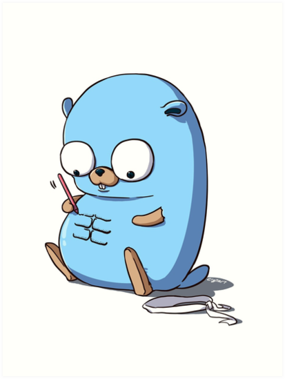
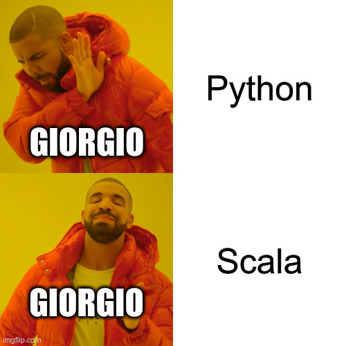
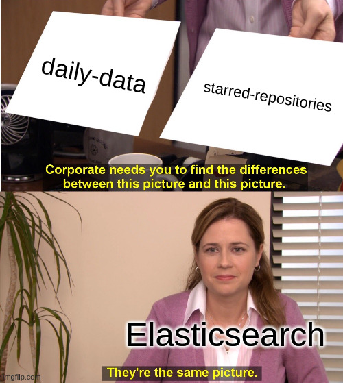
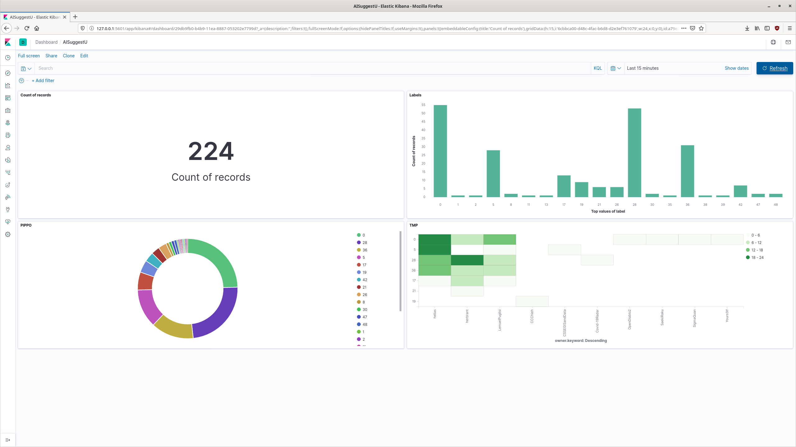
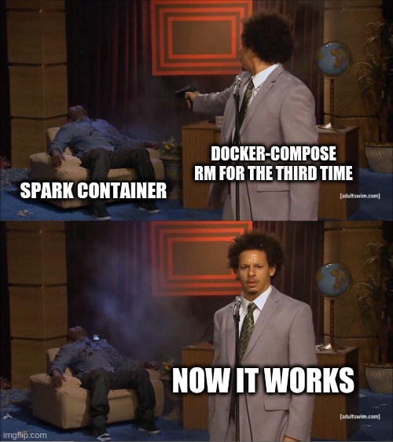
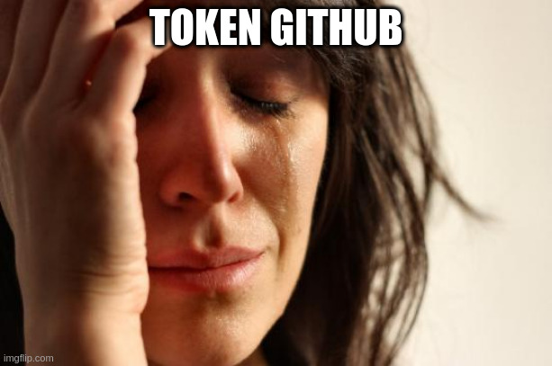

AISuggestU¶

AISuggestU is a platform for recommendations of Github's repositories based on various types of data modelling and mining to suggest repositories to users.
Coded by Giorgio Locicero & Davide Carnemolla
The recommendation are based on two types of prediction: collaborative filtering (experimental) and ad-hoc model created only for this application, based on ensemble method.
A Web application was created to interact with the system below to carry out the requests.

Data Ingestion¶
For the first part of the project we needed a source to take streaming data but Github does not have the functionality yet. So we ended up creating new data using what Github was giving us.
Github¶

GitHub, Inc. is a United States-based global company that provides hosting for software development version control using Git.
Github provide a simple system of recommendations based on topics and people that you follow.
We want to improve Github recommendations and we aim to construct a model to take repositories based on starred projects of the user.
Github Streaming¶

We used Github's API to get relevant information that we used.
With API we can gain access to users and repositories.
Data Parser¶
We used Python to create JSON files for initial part of modelling and daily data to emulate the streaming of new repositories.
import requests
link = "https://api.github.com/repositories"
data = requests.get(link)
print(data.text)
[{"id":1,"node_id":"MDEwOlJlcG9zaXRvcnkx","name":"grit","full_name":"mojombo/grit","private":false,"owner":{"login":"mojombo","id":1,"node_id":"MDQ6VXNlcjE=","avatar_url":"https://avatars0.githubusercontent.com/u/1?v=4","gravatar_id":"","url":"https://api.github.com/users/mojombo","html_url":"https://github.com/mojombo","followers_url":"https://api.github.com/users/mojombo/followers","following_url":"https://api.github.com/users/mojombo/following{/other_user}","gists_url":"https://api.github.com/users/mojombo/gists{/gist_id}","starred_url":"https://api.github.com/users/mojombo/starred{/owner}{/repo}","subscriptions_url":"https://api.github.com/users/mojombo/subscriptions","organizations_url":"https://api.github.com/users/mojombo/orgs","repos_url":"https://api.github.com/users/mojombo/repos","events_url":"https://api.github.com/users/mojombo/events{/privacy}","received_events_url":"https://api.github.com/users/mojombo/received_events","type":"User","site_admin":false},"html_url":"https://github.com/mojombo/grit","description":"**Grit is no longer maintained. Check out libgit2/rugged.** Grit gives you object oriented read/write access to Git repositories via Ruby.","fork":false,"url":"https://api.github.com/repos/mojombo/grit","forks_url":"https://api.github.com/repos/mojombo/grit/forks","keys_url":"https://api.github.com/repos/mojombo/grit/keys{/key_id}","collaborators_url":"https://api.github.com/repos/mojombo/grit/collaborators{/collaborator}","teams_url":"https://api.github.com/repos/mojombo/grit/teams","hooks_url":"https://api.github.com/repos/mojombo/grit/hooks","issue_events_url":"https://api.github.com/repos/mojombo/grit/issues/events{/number}","events_url":"https://api.github.com/repos/mojombo/grit/events","assignees_url":"https://api.github.com/repos/mojombo/grit/assignees{/user}","branches_url":"https://api.github.com/repos/mojombo/grit/branches{/branch}","tags_url":"https://api.github.com/repos/mojombo/grit/tags","blobs_url":"https://api.github.com/repos/mojombo/grit/git/blobs{/sha}","git_tags_url":"https://api.github.com/repos/mojombo/grit/git/tags{/sha}","git_refs_url":"https://api.github.com/repos/mojombo/grit/git/refs{/sha}","trees_url":"https://api.github.com/repos/mojombo/grit/git/trees{/sha}","statuses_url":"https://api.github.com/repos/mojombo/grit/statuses/{sha}","languages_url":"https://api.github.com/repos/mojombo/grit/languages","stargazers_url":"https://api.github.com/repos/mojombo/grit/stargazers","contributors_url":"https://api.github.com/repos/mojombo/grit/contributors","subscribers_url":"https://api.github.com/repos/mojombo/grit/subscribers","subscription_url":"https://api.github.com/repos/mojombo/grit/subscription","commits_url":"https://api.github.com/repos/mojombo/grit/commits{/sha}","git_commits_url":"https://api.github.com/repos/mojombo/grit/git/commits{/sha}","comments_url":"https://api.github.com/repos/mojombo/grit/comments{/number}","issue_comment_url":"https://api.github.com/repos/mojombo/grit/issues/comments{/number}","contents_url":"https://api.github.com/repos/mojombo/grit/contents/{+path}","compare_url":"https://api.github.com/repos/mojombo/grit/compare/{base}...{head}","merges_url":"https://api.github.com/repos/mojombo/grit/merges","archive_url":"https://api.github.com/repos/mojombo/grit/{archive_format}{/ref}","downloads_url":"https://api.github.com/repos/mojombo/grit/downloads","issues_url":"https://api.github.com/repos/mojombo/grit/issues{/number}","pulls_url":"https://api.github.com/repos/mojombo/grit/pulls{/number}","milestones_url":"https://api.github.com/repos/mojombo/grit/milestones{/number}","notifications_url":"https://api.github.com/repos/mojombo/grit/notifications{?since,all,participating}","labels_url":"https://api.github.com/repos/mojombo/grit/labels{/name}","releases_url":"https://api.github.com/repos/mojombo/grit/releases{/id}","deployments_url":"https://api.github.com/repos/mojombo/grit/deployments"},{"id":26,"node_id":"MDEwOlJlcG9zaXRvcnkyNg==","name":"merb-core","full_name":"wycats/merb-core","private":false,"owner":{"login":"wycats","id":4,"node_id":"MDQ6VXNlcjQ=","avatar_url":"https://avatars0.githubusercontent.com/u/4?v=4","gravatar_id":"","url":"https://api.github.com/users/wycats","html_url":"https://github.com/wycats","followers_url":"https://api.github.com/users/wycats/followers","following_url":"https://api.github.com/users/wycats/following{/other_user}","gists_url":"https://api.github.com/users/wycats/gists{/gist_id}","starred_url":"https://api.github.com/users/wycats/starred{/owner}{/repo}","subscriptions_url":"https://api.github.com/users/wycats/subscriptions","organizations_url":"https://api.github.com/users/wycats/orgs","repos_url":"https://api.github.com/users/wycats/repos","events_url":"https://api.github.com/users/wycats/events{/privacy}","received_events_url":"https://api.github.com/users/wycats/received_events","type":"User","site_admin":false},"html_url":"https://github.com/wycats/merb-core","description":"Merb Core: All you need. None you don't.","fork":false,"url":"https://api.github.com/repos/wycats/merb-core","forks_url":"https://api.github.com/repos/wycats/merb-core/forks","keys_url":"https://api.github.com/repos/wycats/merb-core/keys{/key_id}","collaborators_url":"https://api.github.com/repos/wycats/merb-core/collaborators{/collaborator}","teams_url":"https://api.github.com/repos/wycats/merb-core/teams","hooks_url":"https://api.github.com/repos/wycats/merb-core/hooks","issue_events_url":"https://api.github.com/repos/wycats/merb-core/issues/events{/number}","events_url":"https://api.github.com/repos/wycats/merb-core/events","assignees_url":"https://api.github.com/repos/wycats/merb-core/assignees{/user}","branches_url":"https://api.github.com/repos/wycats/merb-core/branches{/branch}","tags_url":"https://api.github.com/repos/wycats/merb-core/tags","blobs_url":"https://api.github.com/repos/wycats/merb-core/git/blobs{/sha}","git_tags_url":"https://api.github.com/repos/wycats/merb-core/git/tags{/sha}","git_refs_url":"https://api.github.com/repos/wycats/merb-core/git/refs{/sha}","trees_url":"https://api.github.com/repos/wycats/merb-core/git/trees{/sha}","statuses_url":"https://api.github.com/repos/wycats/merb-core/statuses/{sha}","languages_url":"https://api.github.com/repos/wycats/merb-core/languages","stargazers_url":"https://api.github.com/repos/wycats/merb-core/stargazers","contributors_url":"https://api.github.com/repos/wycats/merb-core/contributors","subscribers_url":"https://api.github.com/repos/wycats/merb-core/subscribers","subscription_url":"https://api.github.com/repos/wycats/merb-core/subscription","commits_url":"https://api.github.com/repos/wycats/merb-core/commits{/sha}","git_commits_url":"https://api.github.com/repos/wycats/merb-core/git/commits{/sha}","comments_url":"https://api.github.com/repos/wycats/merb-core/comments{/number}","issue_comment_url":"https://api.github.com/repos/wycats/merb-core/issues/comments{/number}","contents_url":"https://api.github.com/repos/wycats/merb-core/contents/{+path}","compare_url":"https://api.github.com/repos/wycats/merb-core/compare/{base}...{head}","merges_url":"https://api.github.com/repos/wycats/merb-core/merges","archive_url":"https://api.github.com/repos/wycats/merb-core/{archive_format}{/ref}","downloads_url":"https://api.github.com/repos/wycats/merb-core/downloads","issues_url":"https://api.github.com/repos/wycats/merb-core/issues{/number}","pulls_url":"https://api.github.com/repos/wycats/merb-core/pulls{/number}","milestones_url":"https://api.github.com/repos/wycats/merb-core/milestones{/number}","notifications_url":"https://api.github.com/repos/wycats/merb-core/notifications{?since,all,participating}","labels_url":"https://api.github.com/repos/wycats/merb-core/labels{/name}","releases_url":"https://api.github.com/repos/wycats/merb-core/releases{/id}","deployments_url":"https://api.github.com/repos/wycats/merb-core/deployments"},{"id":27,"node_id":"MDEwOlJlcG9zaXRvcnkyNw==","name":"rubinius","full_name":"rubinius/rubinius","private":false,"owner":{"login":"rubinius","id":317747,"node_id":"MDEyOk9yZ2FuaXphdGlvbjMxNzc0Nw==","avatar_url":"https://avatars2.githubusercontent.com/u/317747?v=4","gravatar_id":"","url":"https://api.github.com/users/rubinius","html_url":"https://github.com/rubinius","followers_url":"https://api.github.com/users/rubinius/followers","following_url":"https://api.github.com/users/rubinius/following{/other_user}","gists_url":"https://api.github.com/users/rubinius/gists{/gist_id}","starred_url":"https://api.github.com/users/rubinius/starred{/owner}{/repo}","subscriptions_url":"https://api.github.com/users/rubinius/subscriptions","organizations_url":"https://api.github.com/users/rubinius/orgs","repos_url":"https://api.github.com/users/rubinius/repos","events_url":"https://api.github.com/users/rubinius/events{/privacy}","received_events_url":"https://api.github.com/users/rubinius/received_events","type":"Organization","site_admin":false},"html_url":"https://github.com/rubinius/rubinius","description":"The Rubinius Language Platform","fork":false,"url":"https://api.github.com/repos/rubinius/rubinius","forks_url":"https://api.github.com/repos/rubinius/rubinius/forks","keys_url":"https://api.github.com/repos/rubinius/rubinius/keys{/key_id}","collaborators_url":"https://api.github.com/repos/rubinius/rubinius/collaborators{/collaborator}","teams_url":"https://api.github.com/repos/rubinius/rubinius/teams","hooks_url":"https://api.github.com/repos/rubinius/rubinius/hooks","issue_events_url":"https://api.github.com/repos/rubinius/rubinius/issues/events{/number}","events_url":"https://api.github.com/repos/rubinius/rubinius/events","assignees_url":"https://api.github.com/repos/rubinius/rubinius/assignees{/user}","branches_url":"https://api.github.com/repos/rubinius/rubinius/branches{/branch}","tags_url":"https://api.github.com/repos/rubinius/rubinius/tags","blobs_url":"https://api.github.com/repos/rubinius/rubinius/git/blobs{/sha}","git_tags_url":"https://api.github.com/repos/rubinius/rubinius/git/tags{/sha}","git_refs_url":"https://api.github.com/repos/rubinius/rubinius/git/refs{/sha}","trees_url":"https://api.github.com/repos/rubinius/rubinius/git/trees{/sha}","statuses_url":"https://api.github.com/repos/rubinius/rubinius/statuses/{sha}","languages_url":"https://api.github.com/repos/rubinius/rubinius/languages","stargazers_url":"https://api.github.com/repos/rubinius/rubinius/stargazers","contributors_url":"https://api.github.com/repos/rubinius/rubinius/contributors","subscribers_url":"https://api.github.com/repos/rubinius/rubinius/subscribers","subscription_url":"https://api.github.com/repos/rubinius/rubinius/subscription","commits_url":"https://api.github.com/repos/rubinius/rubinius/commits{/sha}","git_commits_url":"https://api.github.com/repos/rubinius/rubinius/git/commits{/sha}","comments_url":"https://api.github.com/repos/rubinius/rubinius/comments{/number}","issue_comment_url":"https://api.github.com/repos/rubinius/rubinius/issues/comments{/number}","contents_url":"https://api.github.com/repos/rubinius/rubinius/contents/{+path}","compare_url":"https://api.github.com/repos/rubinius/rubinius/compare/{base}...{head}","merges_url":"https://api.github.com/repos/rubinius/rubinius/merges","archive_url":"https://api.github.com/repos/rubinius/rubinius/{archive_format}{/ref}","downloads_url":"https://api.github.com/repos/rubinius/rubinius/downloads","issues_url":"https://api.github.com/repos/rubinius/rubinius/issues{/number}","pulls_url":"https://api.github.com/repos/rubinius/rubinius/pulls{/number}","milestones_url":"https://api.github.com/repos/rubinius/rubinius/milestones{/number}","notifications_url":"https://api.github.com/repos/rubinius/rubinius/notifications{?since,all,participating}","labels_url":"https://api.github.com/repos/rubinius/rubinius/labels{/name}","releases_url":"https://api.github.com/repos/rubinius/rubinius/releases{/id}","deployments_url":"https://api.github.com/repos/rubinius/rubinius/deployments"},{"id":28,"node_id":"MDEwOlJlcG9zaXRvcnkyOA==","name":"god","full_name":"mojombo/god","private":false,"owner":{"login":"mojombo","id":1,"node_id":"MDQ6VXNlcjE=","avatar_url":"https://avatars0.githubusercontent.com/u/1?v=4","gravatar_id":"","url":"https://api.github.com/users/mojombo","html_url":"https://github.com/mojombo","followers_url":"https://api.github.com/users/mojombo/followers","following_url":"https://api.github.com/users/mojombo/following{/other_user}","gists_url":"https://api.github.com/users/mojombo/gists{/gist_id}","starred_url":"https://api.github.com/users/mojombo/starred{/owner}{/repo}","subscriptions_url":"https://api.github.com/users/mojombo/subscriptions","organizations_url":"https://api.github.com/users/mojombo/orgs","repos_url":"https://api.github.com/users/mojombo/repos","events_url":"https://api.github.com/users/mojombo/events{/privacy}","received_events_url":"https://api.github.com/users/mojombo/received_events","type":"User","site_admin":false},"html_url":"https://github.com/mojombo/god","description":"Ruby process monitor","fork":false,"url":"https://api.github.com/repos/mojombo/god","forks_url":"https://api.github.com/repos/mojombo/god/forks","keys_url":"https://api.github.com/repos/mojombo/god/keys{/key_id}","collaborators_url":"https://api.github.com/repos/mojombo/god/collaborators{/collaborator}","teams_url":"https://api.github.com/repos/mojombo/god/teams","hooks_url":"https://api.github.com/repos/mojombo/god/hooks","issue_events_url":"https://api.github.com/repos/mojombo/god/issues/events{/number}","events_url":"https://api.github.com/repos/mojombo/god/events","assignees_url":"https://api.github.com/repos/mojombo/god/assignees{/user}","branches_url":"https://api.github.com/repos/mojombo/god/branches{/branch}","tags_url":"https://api.github.com/repos/mojombo/god/tags","blobs_url":"https://api.github.com/repos/mojombo/god/git/blobs{/sha}","git_tags_url":"https://api.github.com/repos/mojombo/god/git/tags{/sha}","git_refs_url":"https://api.github.com/repos/mojombo/god/git/refs{/sha}","trees_url":"https://api.github.com/repos/mojombo/god/git/trees{/sha}","statuses_url":"https://api.github.com/repos/mojombo/god/statuses/{sha}","languages_url":"https://api.github.com/repos/mojombo/god/languages","stargazers_url":"https://api.github.com/repos/mojombo/god/stargazers","contributors_url":"https://api.github.com/repos/mojombo/god/contributors","subscribers_url":"https://api.github.com/repos/mojombo/god/subscribers","subscription_url":"https://api.github.com/repos/mojombo/god/subscription","commits_url":"https://api.github.com/repos/mojombo/god/commits{/sha}","git_commits_url":"https://api.github.com/repos/mojombo/god/git/commits{/sha}","comments_url":"https://api.github.com/repos/mojombo/god/comments{/number}","issue_comment_url":"https://api.github.com/repos/mojombo/god/issues/comments{/number}","contents_url":"https://api.github.com/repos/mojombo/god/contents/{+path}","compare_url":"https://api.github.com/repos/mojombo/god/compare/{base}...{head}","merges_url":"https://api.github.com/repos/mojombo/god/merges","archive_url":"https://api.github.com/repos/mojombo/god/{archive_format}{/ref}","downloads_url":"https://api.github.com/repos/mojombo/god/downloads","issues_url":"https://api.github.com/repos/mojombo/god/issues{/number}","pulls_url":"https://api.github.com/repos/mojombo/god/pulls{/number}","milestones_url":"https://api.github.com/repos/mojombo/god/milestones{/number}","notifications_url":"https://api.github.com/repos/mojombo/god/notifications{?since,all,participating}","labels_url":"https://api.github.com/repos/mojombo/god/labels{/name}","releases_url":"https://api.github.com/repos/mojombo/god/releases{/id}","deployments_url":"https://api.github.com/repos/mojombo/god/deployments"},{"id":29,"node_id":"MDEwOlJlcG9zaXRvcnkyOQ==","name":"jsawesome","full_name":"vanpelt/jsawesome","private":false,"owner":{"login":"vanpelt","id":17,"node_id":"MDQ6VXNlcjE3","avatar_url":"https://avatars1.githubusercontent.com/u/17?v=4","gravatar_id":"","url":"https://api.github.com/users/vanpelt","html_url":"https://github.com/vanpelt","followers_url":"https://api.github.com/users/vanpelt/followers","following_url":"https://api.github.com/users/vanpelt/following{/other_user}","gists_url":"https://api.github.com/users/vanpelt/gists{/gist_id}","starred_url":"https://api.github.com/users/vanpelt/starred{/owner}{/repo}","subscriptions_url":"https://api.github.com/users/vanpelt/subscriptions","organizations_url":"https://api.github.com/users/vanpelt/orgs","repos_url":"https://api.github.com/users/vanpelt/repos","events_url":"https://api.github.com/users/vanpelt/events{/privacy}","received_events_url":"https://api.github.com/users/vanpelt/received_events","type":"User","site_admin":false},"html_url":"https://github.com/vanpelt/jsawesome","description":"Awesome JSON","fork":false,"url":"https://api.github.com/repos/vanpelt/jsawesome","forks_url":"https://api.github.com/repos/vanpelt/jsawesome/forks","keys_url":"https://api.github.com/repos/vanpelt/jsawesome/keys{/key_id}","collaborators_url":"https://api.github.com/repos/vanpelt/jsawesome/collaborators{/collaborator}","teams_url":"https://api.github.com/repos/vanpelt/jsawesome/teams","hooks_url":"https://api.github.com/repos/vanpelt/jsawesome/hooks","issue_events_url":"https://api.github.com/repos/vanpelt/jsawesome/issues/events{/number}","events_url":"https://api.github.com/repos/vanpelt/jsawesome/events","assignees_url":"https://api.github.com/repos/vanpelt/jsawesome/assignees{/user}","branches_url":"https://api.github.com/repos/vanpelt/jsawesome/branches{/branch}","tags_url":"https://api.github.com/repos/vanpelt/jsawesome/tags","blobs_url":"https://api.github.com/repos/vanpelt/jsawesome/git/blobs{/sha}","git_tags_url":"https://api.github.com/repos/vanpelt/jsawesome/git/tags{/sha}","git_refs_url":"https://api.github.com/repos/vanpelt/jsawesome/git/refs{/sha}","trees_url":"https://api.github.com/repos/vanpelt/jsawesome/git/trees{/sha}","statuses_url":"https://api.github.com/repos/vanpelt/jsawesome/statuses/{sha}","languages_url":"https://api.github.com/repos/vanpelt/jsawesome/languages","stargazers_url":"https://api.github.com/repos/vanpelt/jsawesome/stargazers","contributors_url":"https://api.github.com/repos/vanpelt/jsawesome/contributors","subscribers_url":"https://api.github.com/repos/vanpelt/jsawesome/subscribers","subscription_url":"https://api.github.com/repos/vanpelt/jsawesome/subscription","commits_url":"https://api.github.com/repos/vanpelt/jsawesome/commits{/sha}","git_commits_url":"https://api.github.com/repos/vanpelt/jsawesome/git/commits{/sha}","comments_url":"https://api.github.com/repos/vanpelt/jsawesome/comments{/number}","issue_comment_url":"https://api.github.com/repos/vanpelt/jsawesome/issues/comments{/number}","contents_url":"https://api.github.com/repos/vanpelt/jsawesome/contents/{+path}","compare_url":"https://api.github.com/repos/vanpelt/jsawesome/compare/{base}...{head}","merges_url":"https://api.github.com/repos/vanpelt/jsawesome/merges","archive_url":"https://api.github.com/repos/vanpelt/jsawesome/{archive_format}{/ref}","downloads_url":"https://api.github.com/repos/vanpelt/jsawesome/downloads","issues_url":"https://api.github.com/repos/vanpelt/jsawesome/issues{/number}","pulls_url":"https://api.github.com/repos/vanpelt/jsawesome/pulls{/number}","milestones_url":"https://api.github.com/repos/vanpelt/jsawesome/milestones{/number}","notifications_url":"https://api.github.com/repos/vanpelt/jsawesome/notifications{?since,all,participating}","labels_url":"https://api.github.com/repos/vanpelt/jsawesome/labels{/name}","releases_url":"https://api.github.com/repos/vanpelt/jsawesome/releases{/id}","deployments_url":"https://api.github.com/repos/vanpelt/jsawesome/deployments"},{"id":31,"node_id":"MDEwOlJlcG9zaXRvcnkzMQ==","name":"jspec","full_name":"wycats/jspec","private":false,"owner":{"login":"wycats","id":4,"node_id":"MDQ6VXNlcjQ=","avatar_url":"https://avatars0.githubusercontent.com/u/4?v=4","gravatar_id":"","url":"https://api.github.com/users/wycats","html_url":"https://github.com/wycats","followers_url":"https://api.github.com/users/wycats/followers","following_url":"https://api.github.com/users/wycats/following{/other_user}","gists_url":"https://api.github.com/users/wycats/gists{/gist_id}","starred_url":"https://api.github.com/users/wycats/starred{/owner}{/repo}","subscriptions_url":"https://api.github.com/users/wycats/subscriptions","organizations_url":"https://api.github.com/users/wycats/orgs","repos_url":"https://api.github.com/users/wycats/repos","events_url":"https://api.github.com/users/wycats/events{/privacy}","received_events_url":"https://api.github.com/users/wycats/received_events","type":"User","site_admin":false},"html_url":"https://github.com/wycats/jspec","description":"A JavaScript BDD Testing Library","fork":false,"url":"https://api.github.com/repos/wycats/jspec","forks_url":"https://api.github.com/repos/wycats/jspec/forks","keys_url":"https://api.github.com/repos/wycats/jspec/keys{/key_id}","collaborators_url":"https://api.github.com/repos/wycats/jspec/collaborators{/collaborator}","teams_url":"https://api.github.com/repos/wycats/jspec/teams","hooks_url":"https://api.github.com/repos/wycats/jspec/hooks","issue_events_url":"https://api.github.com/repos/wycats/jspec/issues/events{/number}","events_url":"https://api.github.com/repos/wycats/jspec/events","assignees_url":"https://api.github.com/repos/wycats/jspec/assignees{/user}","branches_url":"https://api.github.com/repos/wycats/jspec/branches{/branch}","tags_url":"https://api.github.com/repos/wycats/jspec/tags","blobs_url":"https://api.github.com/repos/wycats/jspec/git/blobs{/sha}","git_tags_url":"https://api.github.com/repos/wycats/jspec/git/tags{/sha}","git_refs_url":"https://api.github.com/repos/wycats/jspec/git/refs{/sha}","trees_url":"https://api.github.com/repos/wycats/jspec/git/trees{/sha}","statuses_url":"https://api.github.com/repos/wycats/jspec/statuses/{sha}","languages_url":"https://api.github.com/repos/wycats/jspec/languages","stargazers_url":"https://api.github.com/repos/wycats/jspec/stargazers","contributors_url":"https://api.github.com/repos/wycats/jspec/contributors","subscribers_url":"https://api.github.com/repos/wycats/jspec/subscribers","subscription_url":"https://api.github.com/repos/wycats/jspec/subscription","commits_url":"https://api.github.com/repos/wycats/jspec/commits{/sha}","git_commits_url":"https://api.github.com/repos/wycats/jspec/git/commits{/sha}","comments_url":"https://api.github.com/repos/wycats/jspec/comments{/number}","issue_comment_url":"https://api.github.com/repos/wycats/jspec/issues/comments{/number}","contents_url":"https://api.github.com/repos/wycats/jspec/contents/{+path}","compare_url":"https://api.github.com/repos/wycats/jspec/compare/{base}...{head}","merges_url":"https://api.github.com/repos/wycats/jspec/merges","archive_url":"https://api.github.com/repos/wycats/jspec/{archive_format}{/ref}","downloads_url":"https://api.github.com/repos/wycats/jspec/downloads","issues_url":"https://api.github.com/repos/wycats/jspec/issues{/number}","pulls_url":"https://api.github.com/repos/wycats/jspec/pulls{/number}","milestones_url":"https://api.github.com/repos/wycats/jspec/milestones{/number}","notifications_url":"https://api.github.com/repos/wycats/jspec/notifications{?since,all,participating}","labels_url":"https://api.github.com/repos/wycats/jspec/labels{/name}","releases_url":"https://api.github.com/repos/wycats/jspec/releases{/id}","deployments_url":"https://api.github.com/repos/wycats/jspec/deployments"},{"id":35,"node_id":"MDEwOlJlcG9zaXRvcnkzNQ==","name":"exception_logger","full_name":"defunkt/exception_logger","private":false,"owner":{"login":"defunkt","id":2,"node_id":"MDQ6VXNlcjI=","avatar_url":"https://avatars0.githubusercontent.com/u/2?v=4","gravatar_id":"","url":"https://api.github.com/users/defunkt","html_url":"https://github.com/defunkt","followers_url":"https://api.github.com/users/defunkt/followers","following_url":"https://api.github.com/users/defunkt/following{/other_user}","gists_url":"https://api.github.com/users/defunkt/gists{/gist_id}","starred_url":"https://api.github.com/users/defunkt/starred{/owner}{/repo}","subscriptions_url":"https://api.github.com/users/defunkt/subscriptions","organizations_url":"https://api.github.com/users/defunkt/orgs","repos_url":"https://api.github.com/users/defunkt/repos","events_url":"https://api.github.com/users/defunkt/events{/privacy}","received_events_url":"https://api.github.com/users/defunkt/received_events","type":"User","site_admin":false},"html_url":"https://github.com/defunkt/exception_logger","description":"Unmaintained. Sorry.","fork":false,"url":"https://api.github.com/repos/defunkt/exception_logger","forks_url":"https://api.github.com/repos/defunkt/exception_logger/forks","keys_url":"https://api.github.com/repos/defunkt/exception_logger/keys{/key_id}","collaborators_url":"https://api.github.com/repos/defunkt/exception_logger/collaborators{/collaborator}","teams_url":"https://api.github.com/repos/defunkt/exception_logger/teams","hooks_url":"https://api.github.com/repos/defunkt/exception_logger/hooks","issue_events_url":"https://api.github.com/repos/defunkt/exception_logger/issues/events{/number}","events_url":"https://api.github.com/repos/defunkt/exception_logger/events","assignees_url":"https://api.github.com/repos/defunkt/exception_logger/assignees{/user}","branches_url":"https://api.github.com/repos/defunkt/exception_logger/branches{/branch}","tags_url":"https://api.github.com/repos/defunkt/exception_logger/tags","blobs_url":"https://api.github.com/repos/defunkt/exception_logger/git/blobs{/sha}","git_tags_url":"https://api.github.com/repos/defunkt/exception_logger/git/tags{/sha}","git_refs_url":"https://api.github.com/repos/defunkt/exception_logger/git/refs{/sha}","trees_url":"https://api.github.com/repos/defunkt/exception_logger/git/trees{/sha}","statuses_url":"https://api.github.com/repos/defunkt/exception_logger/statuses/{sha}","languages_url":"https://api.github.com/repos/defunkt/exception_logger/languages","stargazers_url":"https://api.github.com/repos/defunkt/exception_logger/stargazers","contributors_url":"https://api.github.com/repos/defunkt/exception_logger/contributors","subscribers_url":"https://api.github.com/repos/defunkt/exception_logger/subscribers","subscription_url":"https://api.github.com/repos/defunkt/exception_logger/subscription","commits_url":"https://api.github.com/repos/defunkt/exception_logger/commits{/sha}","git_commits_url":"https://api.github.com/repos/defunkt/exception_logger/git/commits{/sha}","comments_url":"https://api.github.com/repos/defunkt/exception_logger/comments{/number}","issue_comment_url":"https://api.github.com/repos/defunkt/exception_logger/issues/comments{/number}","contents_url":"https://api.github.com/repos/defunkt/exception_logger/contents/{+path}","compare_url":"https://api.github.com/repos/defunkt/exception_logger/compare/{base}...{head}","merges_url":"https://api.github.com/repos/defunkt/exception_logger/merges","archive_url":"https://api.github.com/repos/defunkt/exception_logger/{archive_format}{/ref}","downloads_url":"https://api.github.com/repos/defunkt/exception_logger/downloads","issues_url":"https://api.github.com/repos/defunkt/exception_logger/issues{/number}","pulls_url":"https://api.github.com/repos/defunkt/exception_logger/pulls{/number}","milestones_url":"https://api.github.com/repos/defunkt/exception_logger/milestones{/number}","notifications_url":"https://api.github.com/repos/defunkt/exception_logger/notifications{?since,all,participating}","labels_url":"https://api.github.com/repos/defunkt/exception_logger/labels{/name}","releases_url":"https://api.github.com/repos/defunkt/exception_logger/releases{/id}","deployments_url":"https://api.github.com/repos/defunkt/exception_logger/deployments"},{"id":36,"node_id":"MDEwOlJlcG9zaXRvcnkzNg==","name":"ambition","full_name":"defunkt/ambition","private":false,"owner":{"login":"defunkt","id":2,"node_id":"MDQ6VXNlcjI=","avatar_url":"https://avatars0.githubusercontent.com/u/2?v=4","gravatar_id":"","url":"https://api.github.com/users/defunkt","html_url":"https://github.com/defunkt","followers_url":"https://api.github.com/users/defunkt/followers","following_url":"https://api.github.com/users/defunkt/following{/other_user}","gists_url":"https://api.github.com/users/defunkt/gists{/gist_id}","starred_url":"https://api.github.com/users/defunkt/starred{/owner}{/repo}","subscriptions_url":"https://api.github.com/users/defunkt/subscriptions","organizations_url":"https://api.github.com/users/defunkt/orgs","repos_url":"https://api.github.com/users/defunkt/repos","events_url":"https://api.github.com/users/defunkt/events{/privacy}","received_events_url":"https://api.github.com/users/defunkt/received_events","type":"User","site_admin":false},"html_url":"https://github.com/defunkt/ambition","description":"include Enumerable Unmaintained","fork":false,"url":"https://api.github.com/repos/defunkt/ambition","forks_url":"https://api.github.com/repos/defunkt/ambition/forks","keys_url":"https://api.github.com/repos/defunkt/ambition/keys{/key_id}","collaborators_url":"https://api.github.com/repos/defunkt/ambition/collaborators{/collaborator}","teams_url":"https://api.github.com/repos/defunkt/ambition/teams","hooks_url":"https://api.github.com/repos/defunkt/ambition/hooks","issue_events_url":"https://api.github.com/repos/defunkt/ambition/issues/events{/number}","events_url":"https://api.github.com/repos/defunkt/ambition/events","assignees_url":"https://api.github.com/repos/defunkt/ambition/assignees{/user}","branches_url":"https://api.github.com/repos/defunkt/ambition/branches{/branch}","tags_url":"https://api.github.com/repos/defunkt/ambition/tags","blobs_url":"https://api.github.com/repos/defunkt/ambition/git/blobs{/sha}","git_tags_url":"https://api.github.com/repos/defunkt/ambition/git/tags{/sha}","git_refs_url":"https://api.github.com/repos/defunkt/ambition/git/refs{/sha}","trees_url":"https://api.github.com/repos/defunkt/ambition/git/trees{/sha}","statuses_url":"https://api.github.com/repos/defunkt/ambition/statuses/{sha}","languages_url":"https://api.github.com/repos/defunkt/ambition/languages","stargazers_url":"https://api.github.com/repos/defunkt/ambition/stargazers","contributors_url":"https://api.github.com/repos/defunkt/ambition/contributors","subscribers_url":"https://api.github.com/repos/defunkt/ambition/subscribers","subscription_url":"https://api.github.com/repos/defunkt/ambition/subscription","commits_url":"https://api.github.com/repos/defunkt/ambition/commits{/sha}","git_commits_url":"https://api.github.com/repos/defunkt/ambition/git/commits{/sha}","comments_url":"https://api.github.com/repos/defunkt/ambition/comments{/number}","issue_comment_url":"https://api.github.com/repos/defunkt/ambition/issues/comments{/number}","contents_url":"https://api.github.com/repos/defunkt/ambition/contents/{+path}","compare_url":"https://api.github.com/repos/defunkt/ambition/compare/{base}...{head}","merges_url":"https://api.github.com/repos/defunkt/ambition/merges","archive_url":"https://api.github.com/repos/defunkt/ambition/{archive_format}{/ref}","downloads_url":"https://api.github.com/repos/defunkt/ambition/downloads","issues_url":"https://api.github.com/repos/defunkt/ambition/issues{/number}","pulls_url":"https://api.github.com/repos/defunkt/ambition/pulls{/number}","milestones_url":"https://api.github.com/repos/defunkt/ambition/milestones{/number}","notifications_url":"https://api.github.com/repos/defunkt/ambition/notifications{?since,all,participating}","labels_url":"https://api.github.com/repos/defunkt/ambition/labels{/name}","releases_url":"https://api.github.com/repos/defunkt/ambition/releases{/id}","deployments_url":"https://api.github.com/repos/defunkt/ambition/deployments"},{"id":42,"node_id":"MDEwOlJlcG9zaXRvcnk0Mg==","name":"restful-authentication","full_name":"technoweenie/restful-authentication","private":false,"owner":{"login":"technoweenie","id":21,"node_id":"MDQ6VXNlcjIx","avatar_url":"https://avatars3.githubusercontent.com/u/21?v=4","gravatar_id":"","url":"https://api.github.com/users/technoweenie","html_url":"https://github.com/technoweenie","followers_url":"https://api.github.com/users/technoweenie/followers","following_url":"https://api.github.com/users/technoweenie/following{/other_user}","gists_url":"https://api.github.com/users/technoweenie/gists{/gist_id}","starred_url":"https://api.github.com/users/technoweenie/starred{/owner}{/repo}","subscriptions_url":"https://api.github.com/users/technoweenie/subscriptions","organizations_url":"https://api.github.com/users/technoweenie/orgs","repos_url":"https://api.github.com/users/technoweenie/repos","events_url":"https://api.github.com/users/technoweenie/events{/privacy}","received_events_url":"https://api.github.com/users/technoweenie/received_events","type":"User","site_admin":false},"html_url":"https://github.com/technoweenie/restful-authentication","description":"Generates common user authentication code for Rails/Merb, with a full test/unit and rspec suite and optional Acts as State Machine support built-in.","fork":false,"url":"https://api.github.com/repos/technoweenie/restful-authentication","forks_url":"https://api.github.com/repos/technoweenie/restful-authentication/forks","keys_url":"https://api.github.com/repos/technoweenie/restful-authentication/keys{/key_id}","collaborators_url":"https://api.github.com/repos/technoweenie/restful-authentication/collaborators{/collaborator}","teams_url":"https://api.github.com/repos/technoweenie/restful-authentication/teams","hooks_url":"https://api.github.com/repos/technoweenie/restful-authentication/hooks","issue_events_url":"https://api.github.com/repos/technoweenie/restful-authentication/issues/events{/number}","events_url":"https://api.github.com/repos/technoweenie/restful-authentication/events","assignees_url":"https://api.github.com/repos/technoweenie/restful-authentication/assignees{/user}","branches_url":"https://api.github.com/repos/technoweenie/restful-authentication/branches{/branch}","tags_url":"https://api.github.com/repos/technoweenie/restful-authentication/tags","blobs_url":"https://api.github.com/repos/technoweenie/restful-authentication/git/blobs{/sha}","git_tags_url":"https://api.github.com/repos/technoweenie/restful-authentication/git/tags{/sha}","git_refs_url":"https://api.github.com/repos/technoweenie/restful-authentication/git/refs{/sha}","trees_url":"https://api.github.com/repos/technoweenie/restful-authentication/git/trees{/sha}","statuses_url":"https://api.github.com/repos/technoweenie/restful-authentication/statuses/{sha}","languages_url":"https://api.github.com/repos/technoweenie/restful-authentication/languages","stargazers_url":"https://api.github.com/repos/technoweenie/restful-authentication/stargazers","contributors_url":"https://api.github.com/repos/technoweenie/restful-authentication/contributors","subscribers_url":"https://api.github.com/repos/technoweenie/restful-authentication/subscribers","subscription_url":"https://api.github.com/repos/technoweenie/restful-authentication/subscription","commits_url":"https://api.github.com/repos/technoweenie/restful-authentication/commits{/sha}","git_commits_url":"https://api.github.com/repos/technoweenie/restful-authentication/git/commits{/sha}","comments_url":"https://api.github.com/repos/technoweenie/restful-authentication/comments{/number}","issue_comment_url":"https://api.github.com/repos/technoweenie/restful-authentication/issues/comments{/number}","contents_url":"https://api.github.com/repos/technoweenie/restful-authentication/contents/{+path}","compare_url":"https://api.github.com/repos/technoweenie/restful-authentication/compare/{base}...{head}","merges_url":"https://api.github.com/repos/technoweenie/restful-authentication/merges","archive_url":"https://api.github.com/repos/technoweenie/restful-authentication/{archive_format}{/ref}","downloads_url":"https://api.github.com/repos/technoweenie/restful-authentication/downloads","issues_url":"https://api.github.com/repos/technoweenie/restful-authentication/issues{/number}","pulls_url":"https://api.github.com/repos/technoweenie/restful-authentication/pulls{/number}","milestones_url":"https://api.github.com/repos/technoweenie/restful-authentication/milestones{/number}","notifications_url":"https://api.github.com/repos/technoweenie/restful-authentication/notifications{?since,all,participating}","labels_url":"https://api.github.com/repos/technoweenie/restful-authentication/labels{/name}","releases_url":"https://api.github.com/repos/technoweenie/restful-authentication/releases{/id}","deployments_url":"https://api.github.com/repos/technoweenie/restful-authentication/deployments"},{"id":43,"node_id":"MDEwOlJlcG9zaXRvcnk0Mw==","name":"attachment_fu","full_name":"technoweenie/attachment_fu","private":false,"owner":{"login":"technoweenie","id":21,"node_id":"MDQ6VXNlcjIx","avatar_url":"https://avatars3.githubusercontent.com/u/21?v=4","gravatar_id":"","url":"https://api.github.com/users/technoweenie","html_url":"https://github.com/technoweenie","followers_url":"https://api.github.com/users/technoweenie/followers","following_url":"https://api.github.com/users/technoweenie/following{/other_user}","gists_url":"https://api.github.com/users/technoweenie/gists{/gist_id}","starred_url":"https://api.github.com/users/technoweenie/starred{/owner}{/repo}","subscriptions_url":"https://api.github.com/users/technoweenie/subscriptions","organizations_url":"https://api.github.com/users/technoweenie/orgs","repos_url":"https://api.github.com/users/technoweenie/repos","events_url":"https://api.github.com/users/technoweenie/events{/privacy}","received_events_url":"https://api.github.com/users/technoweenie/received_events","type":"User","site_admin":false},"html_url":"https://github.com/technoweenie/attachment_fu","description":"Treat an ActiveRecord model as a file attachment, storing its patch, size, content type, etc.","fork":false,"url":"https://api.github.com/repos/technoweenie/attachment_fu","forks_url":"https://api.github.com/repos/technoweenie/attachment_fu/forks","keys_url":"https://api.github.com/repos/technoweenie/attachment_fu/keys{/key_id}","collaborators_url":"https://api.github.com/repos/technoweenie/attachment_fu/collaborators{/collaborator}","teams_url":"https://api.github.com/repos/technoweenie/attachment_fu/teams","hooks_url":"https://api.github.com/repos/technoweenie/attachment_fu/hooks","issue_events_url":"https://api.github.com/repos/technoweenie/attachment_fu/issues/events{/number}","events_url":"https://api.github.com/repos/technoweenie/attachment_fu/events","assignees_url":"https://api.github.com/repos/technoweenie/attachment_fu/assignees{/user}","branches_url":"https://api.github.com/repos/technoweenie/attachment_fu/branches{/branch}","tags_url":"https://api.github.com/repos/technoweenie/attachment_fu/tags","blobs_url":"https://api.github.com/repos/technoweenie/attachment_fu/git/blobs{/sha}","git_tags_url":"https://api.github.com/repos/technoweenie/attachment_fu/git/tags{/sha}","git_refs_url":"https://api.github.com/repos/technoweenie/attachment_fu/git/refs{/sha}","trees_url":"https://api.github.com/repos/technoweenie/attachment_fu/git/trees{/sha}","statuses_url":"https://api.github.com/repos/technoweenie/attachment_fu/statuses/{sha}","languages_url":"https://api.github.com/repos/technoweenie/attachment_fu/languages","stargazers_url":"https://api.github.com/repos/technoweenie/attachment_fu/stargazers","contributors_url":"https://api.github.com/repos/technoweenie/attachment_fu/contributors","subscribers_url":"https://api.github.com/repos/technoweenie/attachment_fu/subscribers","subscription_url":"https://api.github.com/repos/technoweenie/attachment_fu/subscription","commits_url":"https://api.github.com/repos/technoweenie/attachment_fu/commits{/sha}","git_commits_url":"https://api.github.com/repos/technoweenie/attachment_fu/git/commits{/sha}","comments_url":"https://api.github.com/repos/technoweenie/attachment_fu/comments{/number}","issue_comment_url":"https://api.github.com/repos/technoweenie/attachment_fu/issues/comments{/number}","contents_url":"https://api.github.com/repos/technoweenie/attachment_fu/contents/{+path}","compare_url":"https://api.github.com/repos/technoweenie/attachment_fu/compare/{base}...{head}","merges_url":"https://api.github.com/repos/technoweenie/attachment_fu/merges","archive_url":"https://api.github.com/repos/technoweenie/attachment_fu/{archive_format}{/ref}","downloads_url":"https://api.github.com/repos/technoweenie/attachment_fu/downloads","issues_url":"https://api.github.com/repos/technoweenie/attachment_fu/issues{/number}","pulls_url":"https://api.github.com/repos/technoweenie/attachment_fu/pulls{/number}","milestones_url":"https://api.github.com/repos/technoweenie/attachment_fu/milestones{/number}","notifications_url":"https://api.github.com/repos/technoweenie/attachment_fu/notifications{?since,all,participating}","labels_url":"https://api.github.com/repos/technoweenie/attachment_fu/labels{/name}","releases_url":"https://api.github.com/repos/technoweenie/attachment_fu/releases{/id}","deployments_url":"https://api.github.com/repos/technoweenie/attachment_fu/deployments"},{"id":48,"node_id":"MDEwOlJlcG9zaXRvcnk0OA==","name":"microsis","full_name":"caged/microsis","private":false,"owner":{"login":"caged","id":25,"node_id":"MDQ6VXNlcjI1","avatar_url":"https://avatars3.githubusercontent.com/u/25?v=4","gravatar_id":"","url":"https://api.github.com/users/caged","html_url":"https://github.com/caged","followers_url":"https://api.github.com/users/caged/followers","following_url":"https://api.github.com/users/caged/following{/other_user}","gists_url":"https://api.github.com/users/caged/gists{/gist_id}","starred_url":"https://api.github.com/users/caged/starred{/owner}{/repo}","subscriptions_url":"https://api.github.com/users/caged/subscriptions","organizations_url":"https://api.github.com/users/caged/orgs","repos_url":"https://api.github.com/users/caged/repos","events_url":"https://api.github.com/users/caged/events{/privacy}","received_events_url":"https://api.github.com/users/caged/received_events","type":"User","site_admin":false},"html_url":"https://github.com/caged/microsis","description":"SUPER OLD STUFF","fork":false,"url":"https://api.github.com/repos/caged/microsis","forks_url":"https://api.github.com/repos/caged/microsis/forks","keys_url":"https://api.github.com/repos/caged/microsis/keys{/key_id}","collaborators_url":"https://api.github.com/repos/caged/microsis/collaborators{/collaborator}","teams_url":"https://api.github.com/repos/caged/microsis/teams","hooks_url":"https://api.github.com/repos/caged/microsis/hooks","issue_events_url":"https://api.github.com/repos/caged/microsis/issues/events{/number}","events_url":"https://api.github.com/repos/caged/microsis/events","assignees_url":"https://api.github.com/repos/caged/microsis/assignees{/user}","branches_url":"https://api.github.com/repos/caged/microsis/branches{/branch}","tags_url":"https://api.github.com/repos/caged/microsis/tags","blobs_url":"https://api.github.com/repos/caged/microsis/git/blobs{/sha}","git_tags_url":"https://api.github.com/repos/caged/microsis/git/tags{/sha}","git_refs_url":"https://api.github.com/repos/caged/microsis/git/refs{/sha}","trees_url":"https://api.github.com/repos/caged/microsis/git/trees{/sha}","statuses_url":"https://api.github.com/repos/caged/microsis/statuses/{sha}","languages_url":"https://api.github.com/repos/caged/microsis/languages","stargazers_url":"https://api.github.com/repos/caged/microsis/stargazers","contributors_url":"https://api.github.com/repos/caged/microsis/contributors","subscribers_url":"https://api.github.com/repos/caged/microsis/subscribers","subscription_url":"https://api.github.com/repos/caged/microsis/subscription","commits_url":"https://api.github.com/repos/caged/microsis/commits{/sha}","git_commits_url":"https://api.github.com/repos/caged/microsis/git/commits{/sha}","comments_url":"https://api.github.com/repos/caged/microsis/comments{/number}","issue_comment_url":"https://api.github.com/repos/caged/microsis/issues/comments{/number}","contents_url":"https://api.github.com/repos/caged/microsis/contents/{+path}","compare_url":"https://api.github.com/repos/caged/microsis/compare/{base}...{head}","merges_url":"https://api.github.com/repos/caged/microsis/merges","archive_url":"https://api.github.com/repos/caged/microsis/{archive_format}{/ref}","downloads_url":"https://api.github.com/repos/caged/microsis/downloads","issues_url":"https://api.github.com/repos/caged/microsis/issues{/number}","pulls_url":"https://api.github.com/repos/caged/microsis/pulls{/number}","milestones_url":"https://api.github.com/repos/caged/microsis/milestones{/number}","notifications_url":"https://api.github.com/repos/caged/microsis/notifications{?since,all,participating}","labels_url":"https://api.github.com/repos/caged/microsis/labels{/name}","releases_url":"https://api.github.com/repos/caged/microsis/releases{/id}","deployments_url":"https://api.github.com/repos/caged/microsis/deployments"},{"id":52,"node_id":"MDEwOlJlcG9zaXRvcnk1Mg==","name":"s3","full_name":"anotherjesse/s3","private":false,"owner":{"login":"anotherjesse","id":27,"node_id":"MDQ6VXNlcjI3","avatar_url":"https://avatars3.githubusercontent.com/u/27?v=4","gravatar_id":"","url":"https://api.github.com/users/anotherjesse","html_url":"https://github.com/anotherjesse","followers_url":"https://api.github.com/users/anotherjesse/followers","following_url":"https://api.github.com/users/anotherjesse/following{/other_user}","gists_url":"https://api.github.com/users/anotherjesse/gists{/gist_id}","starred_url":"https://api.github.com/users/anotherjesse/starred{/owner}{/repo}","subscriptions_url":"https://api.github.com/users/anotherjesse/subscriptions","organizations_url":"https://api.github.com/users/anotherjesse/orgs","repos_url":"https://api.github.com/users/anotherjesse/repos","events_url":"https://api.github.com/users/anotherjesse/events{/privacy}","received_events_url":"https://api.github.com/users/anotherjesse/received_events","type":"User","site_admin":false},"html_url":"https://github.com/anotherjesse/s3","description":"psuedo s3 protocol for mozilla browsers","fork":false,"url":"https://api.github.com/repos/anotherjesse/s3","forks_url":"https://api.github.com/repos/anotherjesse/s3/forks","keys_url":"https://api.github.com/repos/anotherjesse/s3/keys{/key_id}","collaborators_url":"https://api.github.com/repos/anotherjesse/s3/collaborators{/collaborator}","teams_url":"https://api.github.com/repos/anotherjesse/s3/teams","hooks_url":"https://api.github.com/repos/anotherjesse/s3/hooks","issue_events_url":"https://api.github.com/repos/anotherjesse/s3/issues/events{/number}","events_url":"https://api.github.com/repos/anotherjesse/s3/events","assignees_url":"https://api.github.com/repos/anotherjesse/s3/assignees{/user}","branches_url":"https://api.github.com/repos/anotherjesse/s3/branches{/branch}","tags_url":"https://api.github.com/repos/anotherjesse/s3/tags","blobs_url":"https://api.github.com/repos/anotherjesse/s3/git/blobs{/sha}","git_tags_url":"https://api.github.com/repos/anotherjesse/s3/git/tags{/sha}","git_refs_url":"https://api.github.com/repos/anotherjesse/s3/git/refs{/sha}","trees_url":"https://api.github.com/repos/anotherjesse/s3/git/trees{/sha}","statuses_url":"https://api.github.com/repos/anotherjesse/s3/statuses/{sha}","languages_url":"https://api.github.com/repos/anotherjesse/s3/languages","stargazers_url":"https://api.github.com/repos/anotherjesse/s3/stargazers","contributors_url":"https://api.github.com/repos/anotherjesse/s3/contributors","subscribers_url":"https://api.github.com/repos/anotherjesse/s3/subscribers","subscription_url":"https://api.github.com/repos/anotherjesse/s3/subscription","commits_url":"https://api.github.com/repos/anotherjesse/s3/commits{/sha}","git_commits_url":"https://api.github.com/repos/anotherjesse/s3/git/commits{/sha}","comments_url":"https://api.github.com/repos/anotherjesse/s3/comments{/number}","issue_comment_url":"https://api.github.com/repos/anotherjesse/s3/issues/comments{/number}","contents_url":"https://api.github.com/repos/anotherjesse/s3/contents/{+path}","compare_url":"https://api.github.com/repos/anotherjesse/s3/compare/{base}...{head}","merges_url":"https://api.github.com/repos/anotherjesse/s3/merges","archive_url":"https://api.github.com/repos/anotherjesse/s3/{archive_format}{/ref}","downloads_url":"https://api.github.com/repos/anotherjesse/s3/downloads","issues_url":"https://api.github.com/repos/anotherjesse/s3/issues{/number}","pulls_url":"https://api.github.com/repos/anotherjesse/s3/pulls{/number}","milestones_url":"https://api.github.com/repos/anotherjesse/s3/milestones{/number}","notifications_url":"https://api.github.com/repos/anotherjesse/s3/notifications{?since,all,participating}","labels_url":"https://api.github.com/repos/anotherjesse/s3/labels{/name}","releases_url":"https://api.github.com/repos/anotherjesse/s3/releases{/id}","deployments_url":"https://api.github.com/repos/anotherjesse/s3/deployments"},{"id":53,"node_id":"MDEwOlJlcG9zaXRvcnk1Mw==","name":"taboo","full_name":"anotherjesse/taboo","private":false,"owner":{"login":"anotherjesse","id":27,"node_id":"MDQ6VXNlcjI3","avatar_url":"https://avatars3.githubusercontent.com/u/27?v=4","gravatar_id":"","url":"https://api.github.com/users/anotherjesse","html_url":"https://github.com/anotherjesse","followers_url":"https://api.github.com/users/anotherjesse/followers","following_url":"https://api.github.com/users/anotherjesse/following{/other_user}","gists_url":"https://api.github.com/users/anotherjesse/gists{/gist_id}","starred_url":"https://api.github.com/users/anotherjesse/starred{/owner}{/repo}","subscriptions_url":"https://api.github.com/users/anotherjesse/subscriptions","organizations_url":"https://api.github.com/users/anotherjesse/orgs","repos_url":"https://api.github.com/users/anotherjesse/repos","events_url":"https://api.github.com/users/anotherjesse/events{/privacy}","received_events_url":"https://api.github.com/users/anotherjesse/received_events","type":"User","site_admin":false},"html_url":"https://github.com/anotherjesse/taboo","description":"The solution for tabitus of the browser ","fork":false,"url":"https://api.github.com/repos/anotherjesse/taboo","forks_url":"https://api.github.com/repos/anotherjesse/taboo/forks","keys_url":"https://api.github.com/repos/anotherjesse/taboo/keys{/key_id}","collaborators_url":"https://api.github.com/repos/anotherjesse/taboo/collaborators{/collaborator}","teams_url":"https://api.github.com/repos/anotherjesse/taboo/teams","hooks_url":"https://api.github.com/repos/anotherjesse/taboo/hooks","issue_events_url":"https://api.github.com/repos/anotherjesse/taboo/issues/events{/number}","events_url":"https://api.github.com/repos/anotherjesse/taboo/events","assignees_url":"https://api.github.com/repos/anotherjesse/taboo/assignees{/user}","branches_url":"https://api.github.com/repos/anotherjesse/taboo/branches{/branch}","tags_url":"https://api.github.com/repos/anotherjesse/taboo/tags","blobs_url":"https://api.github.com/repos/anotherjesse/taboo/git/blobs{/sha}","git_tags_url":"https://api.github.com/repos/anotherjesse/taboo/git/tags{/sha}","git_refs_url":"https://api.github.com/repos/anotherjesse/taboo/git/refs{/sha}","trees_url":"https://api.github.com/repos/anotherjesse/taboo/git/trees{/sha}","statuses_url":"https://api.github.com/repos/anotherjesse/taboo/statuses/{sha}","languages_url":"https://api.github.com/repos/anotherjesse/taboo/languages","stargazers_url":"https://api.github.com/repos/anotherjesse/taboo/stargazers","contributors_url":"https://api.github.com/repos/anotherjesse/taboo/contributors","subscribers_url":"https://api.github.com/repos/anotherjesse/taboo/subscribers","subscription_url":"https://api.github.com/repos/anotherjesse/taboo/subscription","commits_url":"https://api.github.com/repos/anotherjesse/taboo/commits{/sha}","git_commits_url":"https://api.github.com/repos/anotherjesse/taboo/git/commits{/sha}","comments_url":"https://api.github.com/repos/anotherjesse/taboo/comments{/number}","issue_comment_url":"https://api.github.com/repos/anotherjesse/taboo/issues/comments{/number}","contents_url":"https://api.github.com/repos/anotherjesse/taboo/contents/{+path}","compare_url":"https://api.github.com/repos/anotherjesse/taboo/compare/{base}...{head}","merges_url":"https://api.github.com/repos/anotherjesse/taboo/merges","archive_url":"https://api.github.com/repos/anotherjesse/taboo/{archive_format}{/ref}","downloads_url":"https://api.github.com/repos/anotherjesse/taboo/downloads","issues_url":"https://api.github.com/repos/anotherjesse/taboo/issues{/number}","pulls_url":"https://api.github.com/repos/anotherjesse/taboo/pulls{/number}","milestones_url":"https://api.github.com/repos/anotherjesse/taboo/milestones{/number}","notifications_url":"https://api.github.com/repos/anotherjesse/taboo/notifications{?since,all,participating}","labels_url":"https://api.github.com/repos/anotherjesse/taboo/labels{/name}","releases_url":"https://api.github.com/repos/anotherjesse/taboo/releases{/id}","deployments_url":"https://api.github.com/repos/anotherjesse/taboo/deployments"},{"id":54,"node_id":"MDEwOlJlcG9zaXRvcnk1NA==","name":"foxtracs","full_name":"anotherjesse/foxtracs","private":false,"owner":{"login":"anotherjesse","id":27,"node_id":"MDQ6VXNlcjI3","avatar_url":"https://avatars3.githubusercontent.com/u/27?v=4","gravatar_id":"","url":"https://api.github.com/users/anotherjesse","html_url":"https://github.com/anotherjesse","followers_url":"https://api.github.com/users/anotherjesse/followers","following_url":"https://api.github.com/users/anotherjesse/following{/other_user}","gists_url":"https://api.github.com/users/anotherjesse/gists{/gist_id}","starred_url":"https://api.github.com/users/anotherjesse/starred{/owner}{/repo}","subscriptions_url":"https://api.github.com/users/anotherjesse/subscriptions","organizations_url":"https://api.github.com/users/anotherjesse/orgs","repos_url":"https://api.github.com/users/anotherjesse/repos","events_url":"https://api.github.com/users/anotherjesse/events{/privacy}","received_events_url":"https://api.github.com/users/anotherjesse/received_events","type":"User","site_admin":false},"html_url":"https://github.com/anotherjesse/foxtracs","description":"firefox trac integration","fork":false,"url":"https://api.github.com/repos/anotherjesse/foxtracs","forks_url":"https://api.github.com/repos/anotherjesse/foxtracs/forks","keys_url":"https://api.github.com/repos/anotherjesse/foxtracs/keys{/key_id}","collaborators_url":"https://api.github.com/repos/anotherjesse/foxtracs/collaborators{/collaborator}","teams_url":"https://api.github.com/repos/anotherjesse/foxtracs/teams","hooks_url":"https://api.github.com/repos/anotherjesse/foxtracs/hooks","issue_events_url":"https://api.github.com/repos/anotherjesse/foxtracs/issues/events{/number}","events_url":"https://api.github.com/repos/anotherjesse/foxtracs/events","assignees_url":"https://api.github.com/repos/anotherjesse/foxtracs/assignees{/user}","branches_url":"https://api.github.com/repos/anotherjesse/foxtracs/branches{/branch}","tags_url":"https://api.github.com/repos/anotherjesse/foxtracs/tags","blobs_url":"https://api.github.com/repos/anotherjesse/foxtracs/git/blobs{/sha}","git_tags_url":"https://api.github.com/repos/anotherjesse/foxtracs/git/tags{/sha}","git_refs_url":"https://api.github.com/repos/anotherjesse/foxtracs/git/refs{/sha}","trees_url":"https://api.github.com/repos/anotherjesse/foxtracs/git/trees{/sha}","statuses_url":"https://api.github.com/repos/anotherjesse/foxtracs/statuses/{sha}","languages_url":"https://api.github.com/repos/anotherjesse/foxtracs/languages","stargazers_url":"https://api.github.com/repos/anotherjesse/foxtracs/stargazers","contributors_url":"https://api.github.com/repos/anotherjesse/foxtracs/contributors","subscribers_url":"https://api.github.com/repos/anotherjesse/foxtracs/subscribers","subscription_url":"https://api.github.com/repos/anotherjesse/foxtracs/subscription","commits_url":"https://api.github.com/repos/anotherjesse/foxtracs/commits{/sha}","git_commits_url":"https://api.github.com/repos/anotherjesse/foxtracs/git/commits{/sha}","comments_url":"https://api.github.com/repos/anotherjesse/foxtracs/comments{/number}","issue_comment_url":"https://api.github.com/repos/anotherjesse/foxtracs/issues/comments{/number}","contents_url":"https://api.github.com/repos/anotherjesse/foxtracs/contents/{+path}","compare_url":"https://api.github.com/repos/anotherjesse/foxtracs/compare/{base}...{head}","merges_url":"https://api.github.com/repos/anotherjesse/foxtracs/merges","archive_url":"https://api.github.com/repos/anotherjesse/foxtracs/{archive_format}{/ref}","downloads_url":"https://api.github.com/repos/anotherjesse/foxtracs/downloads","issues_url":"https://api.github.com/repos/anotherjesse/foxtracs/issues{/number}","pulls_url":"https://api.github.com/repos/anotherjesse/foxtracs/pulls{/number}","milestones_url":"https://api.github.com/repos/anotherjesse/foxtracs/milestones{/number}","notifications_url":"https://api.github.com/repos/anotherjesse/foxtracs/notifications{?since,all,participating}","labels_url":"https://api.github.com/repos/anotherjesse/foxtracs/labels{/name}","releases_url":"https://api.github.com/repos/anotherjesse/foxtracs/releases{/id}","deployments_url":"https://api.github.com/repos/anotherjesse/foxtracs/deployments"},{"id":56,"node_id":"MDEwOlJlcG9zaXRvcnk1Ng==","name":"fotomatic","full_name":"anotherjesse/fotomatic","private":false,"owner":{"login":"anotherjesse","id":27,"node_id":"MDQ6VXNlcjI3","avatar_url":"https://avatars3.githubusercontent.com/u/27?v=4","gravatar_id":"","url":"https://api.github.com/users/anotherjesse","html_url":"https://github.com/anotherjesse","followers_url":"https://api.github.com/users/anotherjesse/followers","following_url":"https://api.github.com/users/anotherjesse/following{/other_user}","gists_url":"https://api.github.com/users/anotherjesse/gists{/gist_id}","starred_url":"https://api.github.com/users/anotherjesse/starred{/owner}{/repo}","subscriptions_url":"https://api.github.com/users/anotherjesse/subscriptions","organizations_url":"https://api.github.com/users/anotherjesse/orgs","repos_url":"https://api.github.com/users/anotherjesse/repos","events_url":"https://api.github.com/users/anotherjesse/events{/privacy}","received_events_url":"https://api.github.com/users/anotherjesse/received_events","type":"User","site_admin":false},"html_url":"https://github.com/anotherjesse/fotomatic","description":"Flash photo widget prototype - hacked at last SHDH of 2007","fork":false,"url":"https://api.github.com/repos/anotherjesse/fotomatic","forks_url":"https://api.github.com/repos/anotherjesse/fotomatic/forks","keys_url":"https://api.github.com/repos/anotherjesse/fotomatic/keys{/key_id}","collaborators_url":"https://api.github.com/repos/anotherjesse/fotomatic/collaborators{/collaborator}","teams_url":"https://api.github.com/repos/anotherjesse/fotomatic/teams","hooks_url":"https://api.github.com/repos/anotherjesse/fotomatic/hooks","issue_events_url":"https://api.github.com/repos/anotherjesse/fotomatic/issues/events{/number}","events_url":"https://api.github.com/repos/anotherjesse/fotomatic/events","assignees_url":"https://api.github.com/repos/anotherjesse/fotomatic/assignees{/user}","branches_url":"https://api.github.com/repos/anotherjesse/fotomatic/branches{/branch}","tags_url":"https://api.github.com/repos/anotherjesse/fotomatic/tags","blobs_url":"https://api.github.com/repos/anotherjesse/fotomatic/git/blobs{/sha}","git_tags_url":"https://api.github.com/repos/anotherjesse/fotomatic/git/tags{/sha}","git_refs_url":"https://api.github.com/repos/anotherjesse/fotomatic/git/refs{/sha}","trees_url":"https://api.github.com/repos/anotherjesse/fotomatic/git/trees{/sha}","statuses_url":"https://api.github.com/repos/anotherjesse/fotomatic/statuses/{sha}","languages_url":"https://api.github.com/repos/anotherjesse/fotomatic/languages","stargazers_url":"https://api.github.com/repos/anotherjesse/fotomatic/stargazers","contributors_url":"https://api.github.com/repos/anotherjesse/fotomatic/contributors","subscribers_url":"https://api.github.com/repos/anotherjesse/fotomatic/subscribers","subscription_url":"https://api.github.com/repos/anotherjesse/fotomatic/subscription","commits_url":"https://api.github.com/repos/anotherjesse/fotomatic/commits{/sha}","git_commits_url":"https://api.github.com/repos/anotherjesse/fotomatic/git/commits{/sha}","comments_url":"https://api.github.com/repos/anotherjesse/fotomatic/comments{/number}","issue_comment_url":"https://api.github.com/repos/anotherjesse/fotomatic/issues/comments{/number}","contents_url":"https://api.github.com/repos/anotherjesse/fotomatic/contents/{+path}","compare_url":"https://api.github.com/repos/anotherjesse/fotomatic/compare/{base}...{head}","merges_url":"https://api.github.com/repos/anotherjesse/fotomatic/merges","archive_url":"https://api.github.com/repos/anotherjesse/fotomatic/{archive_format}{/ref}","downloads_url":"https://api.github.com/repos/anotherjesse/fotomatic/downloads","issues_url":"https://api.github.com/repos/anotherjesse/fotomatic/issues{/number}","pulls_url":"https://api.github.com/repos/anotherjesse/fotomatic/pulls{/number}","milestones_url":"https://api.github.com/repos/anotherjesse/fotomatic/milestones{/number}","notifications_url":"https://api.github.com/repos/anotherjesse/fotomatic/notifications{?since,all,participating}","labels_url":"https://api.github.com/repos/anotherjesse/fotomatic/labels{/name}","releases_url":"https://api.github.com/repos/anotherjesse/fotomatic/releases{/id}","deployments_url":"https://api.github.com/repos/anotherjesse/fotomatic/deployments"},{"id":61,"node_id":"MDEwOlJlcG9zaXRvcnk2MQ==","name":"glowstick","full_name":"mojombo/glowstick","private":false,"owner":{"login":"mojombo","id":1,"node_id":"MDQ6VXNlcjE=","avatar_url":"https://avatars0.githubusercontent.com/u/1?v=4","gravatar_id":"","url":"https://api.github.com/users/mojombo","html_url":"https://github.com/mojombo","followers_url":"https://api.github.com/users/mojombo/followers","following_url":"https://api.github.com/users/mojombo/following{/other_user}","gists_url":"https://api.github.com/users/mojombo/gists{/gist_id}","starred_url":"https://api.github.com/users/mojombo/starred{/owner}{/repo}","subscriptions_url":"https://api.github.com/users/mojombo/subscriptions","organizations_url":"https://api.github.com/users/mojombo/orgs","repos_url":"https://api.github.com/users/mojombo/repos","events_url":"https://api.github.com/users/mojombo/events{/privacy}","received_events_url":"https://api.github.com/users/mojombo/received_events","type":"User","site_admin":false},"html_url":"https://github.com/mojombo/glowstick","description":"A realtime, OpenGL graphing library for Ruby","fork":false,"url":"https://api.github.com/repos/mojombo/glowstick","forks_url":"https://api.github.com/repos/mojombo/glowstick/forks","keys_url":"https://api.github.com/repos/mojombo/glowstick/keys{/key_id}","collaborators_url":"https://api.github.com/repos/mojombo/glowstick/collaborators{/collaborator}","teams_url":"https://api.github.com/repos/mojombo/glowstick/teams","hooks_url":"https://api.github.com/repos/mojombo/glowstick/hooks","issue_events_url":"https://api.github.com/repos/mojombo/glowstick/issues/events{/number}","events_url":"https://api.github.com/repos/mojombo/glowstick/events","assignees_url":"https://api.github.com/repos/mojombo/glowstick/assignees{/user}","branches_url":"https://api.github.com/repos/mojombo/glowstick/branches{/branch}","tags_url":"https://api.github.com/repos/mojombo/glowstick/tags","blobs_url":"https://api.github.com/repos/mojombo/glowstick/git/blobs{/sha}","git_tags_url":"https://api.github.com/repos/mojombo/glowstick/git/tags{/sha}","git_refs_url":"https://api.github.com/repos/mojombo/glowstick/git/refs{/sha}","trees_url":"https://api.github.com/repos/mojombo/glowstick/git/trees{/sha}","statuses_url":"https://api.github.com/repos/mojombo/glowstick/statuses/{sha}","languages_url":"https://api.github.com/repos/mojombo/glowstick/languages","stargazers_url":"https://api.github.com/repos/mojombo/glowstick/stargazers","contributors_url":"https://api.github.com/repos/mojombo/glowstick/contributors","subscribers_url":"https://api.github.com/repos/mojombo/glowstick/subscribers","subscription_url":"https://api.github.com/repos/mojombo/glowstick/subscription","commits_url":"https://api.github.com/repos/mojombo/glowstick/commits{/sha}","git_commits_url":"https://api.github.com/repos/mojombo/glowstick/git/commits{/sha}","comments_url":"https://api.github.com/repos/mojombo/glowstick/comments{/number}","issue_comment_url":"https://api.github.com/repos/mojombo/glowstick/issues/comments{/number}","contents_url":"https://api.github.com/repos/mojombo/glowstick/contents/{+path}","compare_url":"https://api.github.com/repos/mojombo/glowstick/compare/{base}...{head}","merges_url":"https://api.github.com/repos/mojombo/glowstick/merges","archive_url":"https://api.github.com/repos/mojombo/glowstick/{archive_format}{/ref}","downloads_url":"https://api.github.com/repos/mojombo/glowstick/downloads","issues_url":"https://api.github.com/repos/mojombo/glowstick/issues{/number}","pulls_url":"https://api.github.com/repos/mojombo/glowstick/pulls{/number}","milestones_url":"https://api.github.com/repos/mojombo/glowstick/milestones{/number}","notifications_url":"https://api.github.com/repos/mojombo/glowstick/notifications{?since,all,participating}","labels_url":"https://api.github.com/repos/mojombo/glowstick/labels{/name}","releases_url":"https://api.github.com/repos/mojombo/glowstick/releases{/id}","deployments_url":"https://api.github.com/repos/mojombo/glowstick/deployments"},{"id":63,"node_id":"MDEwOlJlcG9zaXRvcnk2Mw==","name":"starling","full_name":"defunkt/starling","private":false,"owner":{"login":"defunkt","id":2,"node_id":"MDQ6VXNlcjI=","avatar_url":"https://avatars0.githubusercontent.com/u/2?v=4","gravatar_id":"","url":"https://api.github.com/users/defunkt","html_url":"https://github.com/defunkt","followers_url":"https://api.github.com/users/defunkt/followers","following_url":"https://api.github.com/users/defunkt/following{/other_user}","gists_url":"https://api.github.com/users/defunkt/gists{/gist_id}","starred_url":"https://api.github.com/users/defunkt/starred{/owner}{/repo}","subscriptions_url":"https://api.github.com/users/defunkt/subscriptions","organizations_url":"https://api.github.com/users/defunkt/orgs","repos_url":"https://api.github.com/users/defunkt/repos","events_url":"https://api.github.com/users/defunkt/events{/privacy}","received_events_url":"https://api.github.com/users/defunkt/received_events","type":"User","site_admin":false},"html_url":"https://github.com/defunkt/starling","description":null,"fork":false,"url":"https://api.github.com/repos/defunkt/starling","forks_url":"https://api.github.com/repos/defunkt/starling/forks","keys_url":"https://api.github.com/repos/defunkt/starling/keys{/key_id}","collaborators_url":"https://api.github.com/repos/defunkt/starling/collaborators{/collaborator}","teams_url":"https://api.github.com/repos/defunkt/starling/teams","hooks_url":"https://api.github.com/repos/defunkt/starling/hooks","issue_events_url":"https://api.github.com/repos/defunkt/starling/issues/events{/number}","events_url":"https://api.github.com/repos/defunkt/starling/events","assignees_url":"https://api.github.com/repos/defunkt/starling/assignees{/user}","branches_url":"https://api.github.com/repos/defunkt/starling/branches{/branch}","tags_url":"https://api.github.com/repos/defunkt/starling/tags","blobs_url":"https://api.github.com/repos/defunkt/starling/git/blobs{/sha}","git_tags_url":"https://api.github.com/repos/defunkt/starling/git/tags{/sha}","git_refs_url":"https://api.github.com/repos/defunkt/starling/git/refs{/sha}","trees_url":"https://api.github.com/repos/defunkt/starling/git/trees{/sha}","statuses_url":"https://api.github.com/repos/defunkt/starling/statuses/{sha}","languages_url":"https://api.github.com/repos/defunkt/starling/languages","stargazers_url":"https://api.github.com/repos/defunkt/starling/stargazers","contributors_url":"https://api.github.com/repos/defunkt/starling/contributors","subscribers_url":"https://api.github.com/repos/defunkt/starling/subscribers","subscription_url":"https://api.github.com/repos/defunkt/starling/subscription","commits_url":"https://api.github.com/repos/defunkt/starling/commits{/sha}","git_commits_url":"https://api.github.com/repos/defunkt/starling/git/commits{/sha}","comments_url":"https://api.github.com/repos/defunkt/starling/comments{/number}","issue_comment_url":"https://api.github.com/repos/defunkt/starling/issues/comments{/number}","contents_url":"https://api.github.com/repos/defunkt/starling/contents/{+path}","compare_url":"https://api.github.com/repos/defunkt/starling/compare/{base}...{head}","merges_url":"https://api.github.com/repos/defunkt/starling/merges","archive_url":"https://api.github.com/repos/defunkt/starling/{archive_format}{/ref}","downloads_url":"https://api.github.com/repos/defunkt/starling/downloads","issues_url":"https://api.github.com/repos/defunkt/starling/issues{/number}","pulls_url":"https://api.github.com/repos/defunkt/starling/pulls{/number}","milestones_url":"https://api.github.com/repos/defunkt/starling/milestones{/number}","notifications_url":"https://api.github.com/repos/defunkt/starling/notifications{?since,all,participating}","labels_url":"https://api.github.com/repos/defunkt/starling/labels{/name}","releases_url":"https://api.github.com/repos/defunkt/starling/releases{/id}","deployments_url":"https://api.github.com/repos/defunkt/starling/deployments"},{"id":65,"node_id":"MDEwOlJlcG9zaXRvcnk2NQ==","name":"merb-more","full_name":"wycats/merb-more","private":false,"owner":{"login":"wycats","id":4,"node_id":"MDQ6VXNlcjQ=","avatar_url":"https://avatars0.githubusercontent.com/u/4?v=4","gravatar_id":"","url":"https://api.github.com/users/wycats","html_url":"https://github.com/wycats","followers_url":"https://api.github.com/users/wycats/followers","following_url":"https://api.github.com/users/wycats/following{/other_user}","gists_url":"https://api.github.com/users/wycats/gists{/gist_id}","starred_url":"https://api.github.com/users/wycats/starred{/owner}{/repo}","subscriptions_url":"https://api.github.com/users/wycats/subscriptions","organizations_url":"https://api.github.com/users/wycats/orgs","repos_url":"https://api.github.com/users/wycats/repos","events_url":"https://api.github.com/users/wycats/events{/privacy}","received_events_url":"https://api.github.com/users/wycats/received_events","type":"User","site_admin":false},"html_url":"https://github.com/wycats/merb-more","description":"Merb More: The Full Stack. Take what you need; leave what you don't.","fork":false,"url":"https://api.github.com/repos/wycats/merb-more","forks_url":"https://api.github.com/repos/wycats/merb-more/forks","keys_url":"https://api.github.com/repos/wycats/merb-more/keys{/key_id}","collaborators_url":"https://api.github.com/repos/wycats/merb-more/collaborators{/collaborator}","teams_url":"https://api.github.com/repos/wycats/merb-more/teams","hooks_url":"https://api.github.com/repos/wycats/merb-more/hooks","issue_events_url":"https://api.github.com/repos/wycats/merb-more/issues/events{/number}","events_url":"https://api.github.com/repos/wycats/merb-more/events","assignees_url":"https://api.github.com/repos/wycats/merb-more/assignees{/user}","branches_url":"https://api.github.com/repos/wycats/merb-more/branches{/branch}","tags_url":"https://api.github.com/repos/wycats/merb-more/tags","blobs_url":"https://api.github.com/repos/wycats/merb-more/git/blobs{/sha}","git_tags_url":"https://api.github.com/repos/wycats/merb-more/git/tags{/sha}","git_refs_url":"https://api.github.com/repos/wycats/merb-more/git/refs{/sha}","trees_url":"https://api.github.com/repos/wycats/merb-more/git/trees{/sha}","statuses_url":"https://api.github.com/repos/wycats/merb-more/statuses/{sha}","languages_url":"https://api.github.com/repos/wycats/merb-more/languages","stargazers_url":"https://api.github.com/repos/wycats/merb-more/stargazers","contributors_url":"https://api.github.com/repos/wycats/merb-more/contributors","subscribers_url":"https://api.github.com/repos/wycats/merb-more/subscribers","subscription_url":"https://api.github.com/repos/wycats/merb-more/subscription","commits_url":"https://api.github.com/repos/wycats/merb-more/commits{/sha}","git_commits_url":"https://api.github.com/repos/wycats/merb-more/git/commits{/sha}","comments_url":"https://api.github.com/repos/wycats/merb-more/comments{/number}","issue_comment_url":"https://api.github.com/repos/wycats/merb-more/issues/comments{/number}","contents_url":"https://api.github.com/repos/wycats/merb-more/contents/{+path}","compare_url":"https://api.github.com/repos/wycats/merb-more/compare/{base}...{head}","merges_url":"https://api.github.com/repos/wycats/merb-more/merges","archive_url":"https://api.github.com/repos/wycats/merb-more/{archive_format}{/ref}","downloads_url":"https://api.github.com/repos/wycats/merb-more/downloads","issues_url":"https://api.github.com/repos/wycats/merb-more/issues{/number}","pulls_url":"https://api.github.com/repos/wycats/merb-more/pulls{/number}","milestones_url":"https://api.github.com/repos/wycats/merb-more/milestones{/number}","notifications_url":"https://api.github.com/repos/wycats/merb-more/notifications{?since,all,participating}","labels_url":"https://api.github.com/repos/wycats/merb-more/labels{/name}","releases_url":"https://api.github.com/repos/wycats/merb-more/releases{/id}","deployments_url":"https://api.github.com/repos/wycats/merb-more/deployments"},{"id":68,"node_id":"MDEwOlJlcG9zaXRvcnk2OA==","name":"thin","full_name":"macournoyer/thin","private":false,"owner":{"login":"macournoyer","id":22,"node_id":"MDQ6VXNlcjIy","avatar_url":"https://avatars3.githubusercontent.com/u/22?v=4","gravatar_id":"","url":"https://api.github.com/users/macournoyer","html_url":"https://github.com/macournoyer","followers_url":"https://api.github.com/users/macournoyer/followers","following_url":"https://api.github.com/users/macournoyer/following{/other_user}","gists_url":"https://api.github.com/users/macournoyer/gists{/gist_id}","starred_url":"https://api.github.com/users/macournoyer/starred{/owner}{/repo}","subscriptions_url":"https://api.github.com/users/macournoyer/subscriptions","organizations_url":"https://api.github.com/users/macournoyer/orgs","repos_url":"https://api.github.com/users/macournoyer/repos","events_url":"https://api.github.com/users/macournoyer/events{/privacy}","received_events_url":"https://api.github.com/users/macournoyer/received_events","type":"User","site_admin":false},"html_url":"https://github.com/macournoyer/thin","description":"A very fast & simple Ruby web server","fork":false,"url":"https://api.github.com/repos/macournoyer/thin","forks_url":"https://api.github.com/repos/macournoyer/thin/forks","keys_url":"https://api.github.com/repos/macournoyer/thin/keys{/key_id}","collaborators_url":"https://api.github.com/repos/macournoyer/thin/collaborators{/collaborator}","teams_url":"https://api.github.com/repos/macournoyer/thin/teams","hooks_url":"https://api.github.com/repos/macournoyer/thin/hooks","issue_events_url":"https://api.github.com/repos/macournoyer/thin/issues/events{/number}","events_url":"https://api.github.com/repos/macournoyer/thin/events","assignees_url":"https://api.github.com/repos/macournoyer/thin/assignees{/user}","branches_url":"https://api.github.com/repos/macournoyer/thin/branches{/branch}","tags_url":"https://api.github.com/repos/macournoyer/thin/tags","blobs_url":"https://api.github.com/repos/macournoyer/thin/git/blobs{/sha}","git_tags_url":"https://api.github.com/repos/macournoyer/thin/git/tags{/sha}","git_refs_url":"https://api.github.com/repos/macournoyer/thin/git/refs{/sha}","trees_url":"https://api.github.com/repos/macournoyer/thin/git/trees{/sha}","statuses_url":"https://api.github.com/repos/macournoyer/thin/statuses/{sha}","languages_url":"https://api.github.com/repos/macournoyer/thin/languages","stargazers_url":"https://api.github.com/repos/macournoyer/thin/stargazers","contributors_url":"https://api.github.com/repos/macournoyer/thin/contributors","subscribers_url":"https://api.github.com/repos/macournoyer/thin/subscribers","subscription_url":"https://api.github.com/repos/macournoyer/thin/subscription","commits_url":"https://api.github.com/repos/macournoyer/thin/commits{/sha}","git_commits_url":"https://api.github.com/repos/macournoyer/thin/git/commits{/sha}","comments_url":"https://api.github.com/repos/macournoyer/thin/comments{/number}","issue_comment_url":"https://api.github.com/repos/macournoyer/thin/issues/comments{/number}","contents_url":"https://api.github.com/repos/macournoyer/thin/contents/{+path}","compare_url":"https://api.github.com/repos/macournoyer/thin/compare/{base}...{head}","merges_url":"https://api.github.com/repos/macournoyer/thin/merges","archive_url":"https://api.github.com/repos/macournoyer/thin/{archive_format}{/ref}","downloads_url":"https://api.github.com/repos/macournoyer/thin/downloads","issues_url":"https://api.github.com/repos/macournoyer/thin/issues{/number}","pulls_url":"https://api.github.com/repos/macournoyer/thin/pulls{/number}","milestones_url":"https://api.github.com/repos/macournoyer/thin/milestones{/number}","notifications_url":"https://api.github.com/repos/macournoyer/thin/notifications{?since,all,participating}","labels_url":"https://api.github.com/repos/macournoyer/thin/labels{/name}","releases_url":"https://api.github.com/repos/macournoyer/thin/releases{/id}","deployments_url":"https://api.github.com/repos/macournoyer/thin/deployments"},{"id":71,"node_id":"MDEwOlJlcG9zaXRvcnk3MQ==","name":"resource_controller","full_name":"jamesgolick/resource_controller","private":false,"owner":{"login":"jamesgolick","id":37,"node_id":"MDQ6VXNlcjM3","avatar_url":"https://avatars2.githubusercontent.com/u/37?v=4","gravatar_id":"","url":"https://api.github.com/users/jamesgolick","html_url":"https://github.com/jamesgolick","followers_url":"https://api.github.com/users/jamesgolick/followers","following_url":"https://api.github.com/users/jamesgolick/following{/other_user}","gists_url":"https://api.github.com/users/jamesgolick/gists{/gist_id}","starred_url":"https://api.github.com/users/jamesgolick/starred{/owner}{/repo}","subscriptions_url":"https://api.github.com/users/jamesgolick/subscriptions","organizations_url":"https://api.github.com/users/jamesgolick/orgs","repos_url":"https://api.github.com/users/jamesgolick/repos","events_url":"https://api.github.com/users/jamesgolick/events{/privacy}","received_events_url":"https://api.github.com/users/jamesgolick/received_events","type":"User","site_admin":false},"html_url":"https://github.com/jamesgolick/resource_controller","description":"Rails RESTful controller abstraction plugin.","fork":false,"url":"https://api.github.com/repos/jamesgolick/resource_controller","forks_url":"https://api.github.com/repos/jamesgolick/resource_controller/forks","keys_url":"https://api.github.com/repos/jamesgolick/resource_controller/keys{/key_id}","collaborators_url":"https://api.github.com/repos/jamesgolick/resource_controller/collaborators{/collaborator}","teams_url":"https://api.github.com/repos/jamesgolick/resource_controller/teams","hooks_url":"https://api.github.com/repos/jamesgolick/resource_controller/hooks","issue_events_url":"https://api.github.com/repos/jamesgolick/resource_controller/issues/events{/number}","events_url":"https://api.github.com/repos/jamesgolick/resource_controller/events","assignees_url":"https://api.github.com/repos/jamesgolick/resource_controller/assignees{/user}","branches_url":"https://api.github.com/repos/jamesgolick/resource_controller/branches{/branch}","tags_url":"https://api.github.com/repos/jamesgolick/resource_controller/tags","blobs_url":"https://api.github.com/repos/jamesgolick/resource_controller/git/blobs{/sha}","git_tags_url":"https://api.github.com/repos/jamesgolick/resource_controller/git/tags{/sha}","git_refs_url":"https://api.github.com/repos/jamesgolick/resource_controller/git/refs{/sha}","trees_url":"https://api.github.com/repos/jamesgolick/resource_controller/git/trees{/sha}","statuses_url":"https://api.github.com/repos/jamesgolick/resource_controller/statuses/{sha}","languages_url":"https://api.github.com/repos/jamesgolick/resource_controller/languages","stargazers_url":"https://api.github.com/repos/jamesgolick/resource_controller/stargazers","contributors_url":"https://api.github.com/repos/jamesgolick/resource_controller/contributors","subscribers_url":"https://api.github.com/repos/jamesgolick/resource_controller/subscribers","subscription_url":"https://api.github.com/repos/jamesgolick/resource_controller/subscription","commits_url":"https://api.github.com/repos/jamesgolick/resource_controller/commits{/sha}","git_commits_url":"https://api.github.com/repos/jamesgolick/resource_controller/git/commits{/sha}","comments_url":"https://api.github.com/repos/jamesgolick/resource_controller/comments{/number}","issue_comment_url":"https://api.github.com/repos/jamesgolick/resource_controller/issues/comments{/number}","contents_url":"https://api.github.com/repos/jamesgolick/resource_controller/contents/{+path}","compare_url":"https://api.github.com/repos/jamesgolick/resource_controller/compare/{base}...{head}","merges_url":"https://api.github.com/repos/jamesgolick/resource_controller/merges","archive_url":"https://api.github.com/repos/jamesgolick/resource_controller/{archive_format}{/ref}","downloads_url":"https://api.github.com/repos/jamesgolick/resource_controller/downloads","issues_url":"https://api.github.com/repos/jamesgolick/resource_controller/issues{/number}","pulls_url":"https://api.github.com/repos/jamesgolick/resource_controller/pulls{/number}","milestones_url":"https://api.github.com/repos/jamesgolick/resource_controller/milestones{/number}","notifications_url":"https://api.github.com/repos/jamesgolick/resource_controller/notifications{?since,all,participating}","labels_url":"https://api.github.com/repos/jamesgolick/resource_controller/labels{/name}","releases_url":"https://api.github.com/repos/jamesgolick/resource_controller/releases{/id}","deployments_url":"https://api.github.com/repos/jamesgolick/resource_controller/deployments"},{"id":73,"node_id":"MDEwOlJlcG9zaXRvcnk3Mw==","name":"markaby","full_name":"jamesgolick/markaby","private":false,"owner":{"login":"jamesgolick","id":37,"node_id":"MDQ6VXNlcjM3","avatar_url":"https://avatars2.githubusercontent.com/u/37?v=4","gravatar_id":"","url":"https://api.github.com/users/jamesgolick","html_url":"https://github.com/jamesgolick","followers_url":"https://api.github.com/users/jamesgolick/followers","following_url":"https://api.github.com/users/jamesgolick/following{/other_user}","gists_url":"https://api.github.com/users/jamesgolick/gists{/gist_id}","starred_url":"https://api.github.com/users/jamesgolick/starred{/owner}{/repo}","subscriptions_url":"https://api.github.com/users/jamesgolick/subscriptions","organizations_url":"https://api.github.com/users/jamesgolick/orgs","repos_url":"https://api.github.com/users/jamesgolick/repos","events_url":"https://api.github.com/users/jamesgolick/events{/privacy}","received_events_url":"https://api.github.com/users/jamesgolick/received_events","type":"User","site_admin":false},"html_url":"https://github.com/jamesgolick/markaby","description":"Markaby patched to run on rails 2.0.2","fork":false,"url":"https://api.github.com/repos/jamesgolick/markaby","forks_url":"https://api.github.com/repos/jamesgolick/markaby/forks","keys_url":"https://api.github.com/repos/jamesgolick/markaby/keys{/key_id}","collaborators_url":"https://api.github.com/repos/jamesgolick/markaby/collaborators{/collaborator}","teams_url":"https://api.github.com/repos/jamesgolick/markaby/teams","hooks_url":"https://api.github.com/repos/jamesgolick/markaby/hooks","issue_events_url":"https://api.github.com/repos/jamesgolick/markaby/issues/events{/number}","events_url":"https://api.github.com/repos/jamesgolick/markaby/events","assignees_url":"https://api.github.com/repos/jamesgolick/markaby/assignees{/user}","branches_url":"https://api.github.com/repos/jamesgolick/markaby/branches{/branch}","tags_url":"https://api.github.com/repos/jamesgolick/markaby/tags","blobs_url":"https://api.github.com/repos/jamesgolick/markaby/git/blobs{/sha}","git_tags_url":"https://api.github.com/repos/jamesgolick/markaby/git/tags{/sha}","git_refs_url":"https://api.github.com/repos/jamesgolick/markaby/git/refs{/sha}","trees_url":"https://api.github.com/repos/jamesgolick/markaby/git/trees{/sha}","statuses_url":"https://api.github.com/repos/jamesgolick/markaby/statuses/{sha}","languages_url":"https://api.github.com/repos/jamesgolick/markaby/languages","stargazers_url":"https://api.github.com/repos/jamesgolick/markaby/stargazers","contributors_url":"https://api.github.com/repos/jamesgolick/markaby/contributors","subscribers_url":"https://api.github.com/repos/jamesgolick/markaby/subscribers","subscription_url":"https://api.github.com/repos/jamesgolick/markaby/subscription","commits_url":"https://api.github.com/repos/jamesgolick/markaby/commits{/sha}","git_commits_url":"https://api.github.com/repos/jamesgolick/markaby/git/commits{/sha}","comments_url":"https://api.github.com/repos/jamesgolick/markaby/comments{/number}","issue_comment_url":"https://api.github.com/repos/jamesgolick/markaby/issues/comments{/number}","contents_url":"https://api.github.com/repos/jamesgolick/markaby/contents/{+path}","compare_url":"https://api.github.com/repos/jamesgolick/markaby/compare/{base}...{head}","merges_url":"https://api.github.com/repos/jamesgolick/markaby/merges","archive_url":"https://api.github.com/repos/jamesgolick/markaby/{archive_format}{/ref}","downloads_url":"https://api.github.com/repos/jamesgolick/markaby/downloads","issues_url":"https://api.github.com/repos/jamesgolick/markaby/issues{/number}","pulls_url":"https://api.github.com/repos/jamesgolick/markaby/pulls{/number}","milestones_url":"https://api.github.com/repos/jamesgolick/markaby/milestones{/number}","notifications_url":"https://api.github.com/repos/jamesgolick/markaby/notifications{?since,all,participating}","labels_url":"https://api.github.com/repos/jamesgolick/markaby/labels{/name}","releases_url":"https://api.github.com/repos/jamesgolick/markaby/releases{/id}","deployments_url":"https://api.github.com/repos/jamesgolick/markaby/deployments"},{"id":74,"node_id":"MDEwOlJlcG9zaXRvcnk3NA==","name":"enum_field","full_name":"jamesgolick/enum_field","private":false,"owner":{"login":"jamesgolick","id":37,"node_id":"MDQ6VXNlcjM3","avatar_url":"https://avatars2.githubusercontent.com/u/37?v=4","gravatar_id":"","url":"https://api.github.com/users/jamesgolick","html_url":"https://github.com/jamesgolick","followers_url":"https://api.github.com/users/jamesgolick/followers","following_url":"https://api.github.com/users/jamesgolick/following{/other_user}","gists_url":"https://api.github.com/users/jamesgolick/gists{/gist_id}","starred_url":"https://api.github.com/users/jamesgolick/starred{/owner}{/repo}","subscriptions_url":"https://api.github.com/users/jamesgolick/subscriptions","organizations_url":"https://api.github.com/users/jamesgolick/orgs","repos_url":"https://api.github.com/users/jamesgolick/repos","events_url":"https://api.github.com/users/jamesgolick/events{/privacy}","received_events_url":"https://api.github.com/users/jamesgolick/received_events","type":"User","site_admin":false},"html_url":"https://github.com/jamesgolick/enum_field","description":null,"fork":false,"url":"https://api.github.com/repos/jamesgolick/enum_field","forks_url":"https://api.github.com/repos/jamesgolick/enum_field/forks","keys_url":"https://api.github.com/repos/jamesgolick/enum_field/keys{/key_id}","collaborators_url":"https://api.github.com/repos/jamesgolick/enum_field/collaborators{/collaborator}","teams_url":"https://api.github.com/repos/jamesgolick/enum_field/teams","hooks_url":"https://api.github.com/repos/jamesgolick/enum_field/hooks","issue_events_url":"https://api.github.com/repos/jamesgolick/enum_field/issues/events{/number}","events_url":"https://api.github.com/repos/jamesgolick/enum_field/events","assignees_url":"https://api.github.com/repos/jamesgolick/enum_field/assignees{/user}","branches_url":"https://api.github.com/repos/jamesgolick/enum_field/branches{/branch}","tags_url":"https://api.github.com/repos/jamesgolick/enum_field/tags","blobs_url":"https://api.github.com/repos/jamesgolick/enum_field/git/blobs{/sha}","git_tags_url":"https://api.github.com/repos/jamesgolick/enum_field/git/tags{/sha}","git_refs_url":"https://api.github.com/repos/jamesgolick/enum_field/git/refs{/sha}","trees_url":"https://api.github.com/repos/jamesgolick/enum_field/git/trees{/sha}","statuses_url":"https://api.github.com/repos/jamesgolick/enum_field/statuses/{sha}","languages_url":"https://api.github.com/repos/jamesgolick/enum_field/languages","stargazers_url":"https://api.github.com/repos/jamesgolick/enum_field/stargazers","contributors_url":"https://api.github.com/repos/jamesgolick/enum_field/contributors","subscribers_url":"https://api.github.com/repos/jamesgolick/enum_field/subscribers","subscription_url":"https://api.github.com/repos/jamesgolick/enum_field/subscription","commits_url":"https://api.github.com/repos/jamesgolick/enum_field/commits{/sha}","git_commits_url":"https://api.github.com/repos/jamesgolick/enum_field/git/commits{/sha}","comments_url":"https://api.github.com/repos/jamesgolick/enum_field/comments{/number}","issue_comment_url":"https://api.github.com/repos/jamesgolick/enum_field/issues/comments{/number}","contents_url":"https://api.github.com/repos/jamesgolick/enum_field/contents/{+path}","compare_url":"https://api.github.com/repos/jamesgolick/enum_field/compare/{base}...{head}","merges_url":"https://api.github.com/repos/jamesgolick/enum_field/merges","archive_url":"https://api.github.com/repos/jamesgolick/enum_field/{archive_format}{/ref}","downloads_url":"https://api.github.com/repos/jamesgolick/enum_field/downloads","issues_url":"https://api.github.com/repos/jamesgolick/enum_field/issues{/number}","pulls_url":"https://api.github.com/repos/jamesgolick/enum_field/pulls{/number}","milestones_url":"https://api.github.com/repos/jamesgolick/enum_field/milestones{/number}","notifications_url":"https://api.github.com/repos/jamesgolick/enum_field/notifications{?since,all,participating}","labels_url":"https://api.github.com/repos/jamesgolick/enum_field/labels{/name}","releases_url":"https://api.github.com/repos/jamesgolick/enum_field/releases{/id}","deployments_url":"https://api.github.com/repos/jamesgolick/enum_field/deployments"},{"id":75,"node_id":"MDEwOlJlcG9zaXRvcnk3NQ==","name":"subtlety","full_name":"defunkt/subtlety","private":false,"owner":{"login":"defunkt","id":2,"node_id":"MDQ6VXNlcjI=","avatar_url":"https://avatars0.githubusercontent.com/u/2?v=4","gravatar_id":"","url":"https://api.github.com/users/defunkt","html_url":"https://github.com/defunkt","followers_url":"https://api.github.com/users/defunkt/followers","following_url":"https://api.github.com/users/defunkt/following{/other_user}","gists_url":"https://api.github.com/users/defunkt/gists{/gist_id}","starred_url":"https://api.github.com/users/defunkt/starred{/owner}{/repo}","subscriptions_url":"https://api.github.com/users/defunkt/subscriptions","organizations_url":"https://api.github.com/users/defunkt/orgs","repos_url":"https://api.github.com/users/defunkt/repos","events_url":"https://api.github.com/users/defunkt/events{/privacy}","received_events_url":"https://api.github.com/users/defunkt/received_events","type":"User","site_admin":false},"html_url":"https://github.com/defunkt/subtlety","description":"Subtlety: SVN => RSS, hAtom => Atom","fork":false,"url":"https://api.github.com/repos/defunkt/subtlety","forks_url":"https://api.github.com/repos/defunkt/subtlety/forks","keys_url":"https://api.github.com/repos/defunkt/subtlety/keys{/key_id}","collaborators_url":"https://api.github.com/repos/defunkt/subtlety/collaborators{/collaborator}","teams_url":"https://api.github.com/repos/defunkt/subtlety/teams","hooks_url":"https://api.github.com/repos/defunkt/subtlety/hooks","issue_events_url":"https://api.github.com/repos/defunkt/subtlety/issues/events{/number}","events_url":"https://api.github.com/repos/defunkt/subtlety/events","assignees_url":"https://api.github.com/repos/defunkt/subtlety/assignees{/user}","branches_url":"https://api.github.com/repos/defunkt/subtlety/branches{/branch}","tags_url":"https://api.github.com/repos/defunkt/subtlety/tags","blobs_url":"https://api.github.com/repos/defunkt/subtlety/git/blobs{/sha}","git_tags_url":"https://api.github.com/repos/defunkt/subtlety/git/tags{/sha}","git_refs_url":"https://api.github.com/repos/defunkt/subtlety/git/refs{/sha}","trees_url":"https://api.github.com/repos/defunkt/subtlety/git/trees{/sha}","statuses_url":"https://api.github.com/repos/defunkt/subtlety/statuses/{sha}","languages_url":"https://api.github.com/repos/defunkt/subtlety/languages","stargazers_url":"https://api.github.com/repos/defunkt/subtlety/stargazers","contributors_url":"https://api.github.com/repos/defunkt/subtlety/contributors","subscribers_url":"https://api.github.com/repos/defunkt/subtlety/subscribers","subscription_url":"https://api.github.com/repos/defunkt/subtlety/subscription","commits_url":"https://api.github.com/repos/defunkt/subtlety/commits{/sha}","git_commits_url":"https://api.github.com/repos/defunkt/subtlety/git/commits{/sha}","comments_url":"https://api.github.com/repos/defunkt/subtlety/comments{/number}","issue_comment_url":"https://api.github.com/repos/defunkt/subtlety/issues/comments{/number}","contents_url":"https://api.github.com/repos/defunkt/subtlety/contents/{+path}","compare_url":"https://api.github.com/repos/defunkt/subtlety/compare/{base}...{head}","merges_url":"https://api.github.com/repos/defunkt/subtlety/merges","archive_url":"https://api.github.com/repos/defunkt/subtlety/{archive_format}{/ref}","downloads_url":"https://api.github.com/repos/defunkt/subtlety/downloads","issues_url":"https://api.github.com/repos/defunkt/subtlety/issues{/number}","pulls_url":"https://api.github.com/repos/defunkt/subtlety/pulls{/number}","milestones_url":"https://api.github.com/repos/defunkt/subtlety/milestones{/number}","notifications_url":"https://api.github.com/repos/defunkt/subtlety/notifications{?since,all,participating}","labels_url":"https://api.github.com/repos/defunkt/subtlety/labels{/name}","releases_url":"https://api.github.com/repos/defunkt/subtlety/releases{/id}","deployments_url":"https://api.github.com/repos/defunkt/subtlety/deployments"},{"id":92,"node_id":"MDEwOlJlcG9zaXRvcnk5Mg==","name":"zippy","full_name":"defunkt/zippy","private":false,"owner":{"login":"defunkt","id":2,"node_id":"MDQ6VXNlcjI=","avatar_url":"https://avatars0.githubusercontent.com/u/2?v=4","gravatar_id":"","url":"https://api.github.com/users/defunkt","html_url":"https://github.com/defunkt","followers_url":"https://api.github.com/users/defunkt/followers","following_url":"https://api.github.com/users/defunkt/following{/other_user}","gists_url":"https://api.github.com/users/defunkt/gists{/gist_id}","starred_url":"https://api.github.com/users/defunkt/starred{/owner}{/repo}","subscriptions_url":"https://api.github.com/users/defunkt/subscriptions","organizations_url":"https://api.github.com/users/defunkt/orgs","repos_url":"https://api.github.com/users/defunkt/repos","events_url":"https://api.github.com/users/defunkt/events{/privacy}","received_events_url":"https://api.github.com/users/defunkt/received_events","type":"User","site_admin":false},"html_url":"https://github.com/defunkt/zippy","description":"Zippy lil zipcode lib.","fork":false,"url":"https://api.github.com/repos/defunkt/zippy","forks_url":"https://api.github.com/repos/defunkt/zippy/forks","keys_url":"https://api.github.com/repos/defunkt/zippy/keys{/key_id}","collaborators_url":"https://api.github.com/repos/defunkt/zippy/collaborators{/collaborator}","teams_url":"https://api.github.com/repos/defunkt/zippy/teams","hooks_url":"https://api.github.com/repos/defunkt/zippy/hooks","issue_events_url":"https://api.github.com/repos/defunkt/zippy/issues/events{/number}","events_url":"https://api.github.com/repos/defunkt/zippy/events","assignees_url":"https://api.github.com/repos/defunkt/zippy/assignees{/user}","branches_url":"https://api.github.com/repos/defunkt/zippy/branches{/branch}","tags_url":"https://api.github.com/repos/defunkt/zippy/tags","blobs_url":"https://api.github.com/repos/defunkt/zippy/git/blobs{/sha}","git_tags_url":"https://api.github.com/repos/defunkt/zippy/git/tags{/sha}","git_refs_url":"https://api.github.com/repos/defunkt/zippy/git/refs{/sha}","trees_url":"https://api.github.com/repos/defunkt/zippy/git/trees{/sha}","statuses_url":"https://api.github.com/repos/defunkt/zippy/statuses/{sha}","languages_url":"https://api.github.com/repos/defunkt/zippy/languages","stargazers_url":"https://api.github.com/repos/defunkt/zippy/stargazers","contributors_url":"https://api.github.com/repos/defunkt/zippy/contributors","subscribers_url":"https://api.github.com/repos/defunkt/zippy/subscribers","subscription_url":"https://api.github.com/repos/defunkt/zippy/subscription","commits_url":"https://api.github.com/repos/defunkt/zippy/commits{/sha}","git_commits_url":"https://api.github.com/repos/defunkt/zippy/git/commits{/sha}","comments_url":"https://api.github.com/repos/defunkt/zippy/comments{/number}","issue_comment_url":"https://api.github.com/repos/defunkt/zippy/issues/comments{/number}","contents_url":"https://api.github.com/repos/defunkt/zippy/contents/{+path}","compare_url":"https://api.github.com/repos/defunkt/zippy/compare/{base}...{head}","merges_url":"https://api.github.com/repos/defunkt/zippy/merges","archive_url":"https://api.github.com/repos/defunkt/zippy/{archive_format}{/ref}","downloads_url":"https://api.github.com/repos/defunkt/zippy/downloads","issues_url":"https://api.github.com/repos/defunkt/zippy/issues{/number}","pulls_url":"https://api.github.com/repos/defunkt/zippy/pulls{/number}","milestones_url":"https://api.github.com/repos/defunkt/zippy/milestones{/number}","notifications_url":"https://api.github.com/repos/defunkt/zippy/notifications{?since,all,participating}","labels_url":"https://api.github.com/repos/defunkt/zippy/labels{/name}","releases_url":"https://api.github.com/repos/defunkt/zippy/releases{/id}","deployments_url":"https://api.github.com/repos/defunkt/zippy/deployments"},{"id":93,"node_id":"MDEwOlJlcG9zaXRvcnk5Mw==","name":"cache_fu","full_name":"defunkt/cache_fu","private":false,"owner":{"login":"defunkt","id":2,"node_id":"MDQ6VXNlcjI=","avatar_url":"https://avatars0.githubusercontent.com/u/2?v=4","gravatar_id":"","url":"https://api.github.com/users/defunkt","html_url":"https://github.com/defunkt","followers_url":"https://api.github.com/users/defunkt/followers","following_url":"https://api.github.com/users/defunkt/following{/other_user}","gists_url":"https://api.github.com/users/defunkt/gists{/gist_id}","starred_url":"https://api.github.com/users/defunkt/starred{/owner}{/repo}","subscriptions_url":"https://api.github.com/users/defunkt/subscriptions","organizations_url":"https://api.github.com/users/defunkt/orgs","repos_url":"https://api.github.com/users/defunkt/repos","events_url":"https://api.github.com/users/defunkt/events{/privacy}","received_events_url":"https://api.github.com/users/defunkt/received_events","type":"User","site_admin":false},"html_url":"https://github.com/defunkt/cache_fu","description":"Ghost from Christmas past. Unmaintained.","fork":false,"url":"https://api.github.com/repos/defunkt/cache_fu","forks_url":"https://api.github.com/repos/defunkt/cache_fu/forks","keys_url":"https://api.github.com/repos/defunkt/cache_fu/keys{/key_id}","collaborators_url":"https://api.github.com/repos/defunkt/cache_fu/collaborators{/collaborator}","teams_url":"https://api.github.com/repos/defunkt/cache_fu/teams","hooks_url":"https://api.github.com/repos/defunkt/cache_fu/hooks","issue_events_url":"https://api.github.com/repos/defunkt/cache_fu/issues/events{/number}","events_url":"https://api.github.com/repos/defunkt/cache_fu/events","assignees_url":"https://api.github.com/repos/defunkt/cache_fu/assignees{/user}","branches_url":"https://api.github.com/repos/defunkt/cache_fu/branches{/branch}","tags_url":"https://api.github.com/repos/defunkt/cache_fu/tags","blobs_url":"https://api.github.com/repos/defunkt/cache_fu/git/blobs{/sha}","git_tags_url":"https://api.github.com/repos/defunkt/cache_fu/git/tags{/sha}","git_refs_url":"https://api.github.com/repos/defunkt/cache_fu/git/refs{/sha}","trees_url":"https://api.github.com/repos/defunkt/cache_fu/git/trees{/sha}","statuses_url":"https://api.github.com/repos/defunkt/cache_fu/statuses/{sha}","languages_url":"https://api.github.com/repos/defunkt/cache_fu/languages","stargazers_url":"https://api.github.com/repos/defunkt/cache_fu/stargazers","contributors_url":"https://api.github.com/repos/defunkt/cache_fu/contributors","subscribers_url":"https://api.github.com/repos/defunkt/cache_fu/subscribers","subscription_url":"https://api.github.com/repos/defunkt/cache_fu/subscription","commits_url":"https://api.github.com/repos/defunkt/cache_fu/commits{/sha}","git_commits_url":"https://api.github.com/repos/defunkt/cache_fu/git/commits{/sha}","comments_url":"https://api.github.com/repos/defunkt/cache_fu/comments{/number}","issue_comment_url":"https://api.github.com/repos/defunkt/cache_fu/issues/comments{/number}","contents_url":"https://api.github.com/repos/defunkt/cache_fu/contents/{+path}","compare_url":"https://api.github.com/repos/defunkt/cache_fu/compare/{base}...{head}","merges_url":"https://api.github.com/repos/defunkt/cache_fu/merges","archive_url":"https://api.github.com/repos/defunkt/cache_fu/{archive_format}{/ref}","downloads_url":"https://api.github.com/repos/defunkt/cache_fu/downloads","issues_url":"https://api.github.com/repos/defunkt/cache_fu/issues{/number}","pulls_url":"https://api.github.com/repos/defunkt/cache_fu/pulls{/number}","milestones_url":"https://api.github.com/repos/defunkt/cache_fu/milestones{/number}","notifications_url":"https://api.github.com/repos/defunkt/cache_fu/notifications{?since,all,participating}","labels_url":"https://api.github.com/repos/defunkt/cache_fu/labels{/name}","releases_url":"https://api.github.com/repos/defunkt/cache_fu/releases{/id}","deployments_url":"https://api.github.com/repos/defunkt/cache_fu/deployments"},{"id":95,"node_id":"MDEwOlJlcG9zaXRvcnk5NQ==","name":"phosphor","full_name":"KirinDave/phosphor","private":false,"owner":{"login":"KirinDave","id":36,"node_id":"MDQ6VXNlcjM2","avatar_url":"https://avatars2.githubusercontent.com/u/36?v=4","gravatar_id":"","url":"https://api.github.com/users/KirinDave","html_url":"https://github.com/KirinDave","followers_url":"https://api.github.com/users/KirinDave/followers","following_url":"https://api.github.com/users/KirinDave/following{/other_user}","gists_url":"https://api.github.com/users/KirinDave/gists{/gist_id}","starred_url":"https://api.github.com/users/KirinDave/starred{/owner}{/repo}","subscriptions_url":"https://api.github.com/users/KirinDave/subscriptions","organizations_url":"https://api.github.com/users/KirinDave/orgs","repos_url":"https://api.github.com/users/KirinDave/repos","events_url":"https://api.github.com/users/KirinDave/events{/privacy}","received_events_url":"https://api.github.com/users/KirinDave/received_events","type":"User","site_admin":false},"html_url":"https://github.com/KirinDave/phosphor","description":" A ruby library to inexpensively emit runtime events via Dtrace","fork":false,"url":"https://api.github.com/repos/KirinDave/phosphor","forks_url":"https://api.github.com/repos/KirinDave/phosphor/forks","keys_url":"https://api.github.com/repos/KirinDave/phosphor/keys{/key_id}","collaborators_url":"https://api.github.com/repos/KirinDave/phosphor/collaborators{/collaborator}","teams_url":"https://api.github.com/repos/KirinDave/phosphor/teams","hooks_url":"https://api.github.com/repos/KirinDave/phosphor/hooks","issue_events_url":"https://api.github.com/repos/KirinDave/phosphor/issues/events{/number}","events_url":"https://api.github.com/repos/KirinDave/phosphor/events","assignees_url":"https://api.github.com/repos/KirinDave/phosphor/assignees{/user}","branches_url":"https://api.github.com/repos/KirinDave/phosphor/branches{/branch}","tags_url":"https://api.github.com/repos/KirinDave/phosphor/tags","blobs_url":"https://api.github.com/repos/KirinDave/phosphor/git/blobs{/sha}","git_tags_url":"https://api.github.com/repos/KirinDave/phosphor/git/tags{/sha}","git_refs_url":"https://api.github.com/repos/KirinDave/phosphor/git/refs{/sha}","trees_url":"https://api.github.com/repos/KirinDave/phosphor/git/trees{/sha}","statuses_url":"https://api.github.com/repos/KirinDave/phosphor/statuses/{sha}","languages_url":"https://api.github.com/repos/KirinDave/phosphor/languages","stargazers_url":"https://api.github.com/repos/KirinDave/phosphor/stargazers","contributors_url":"https://api.github.com/repos/KirinDave/phosphor/contributors","subscribers_url":"https://api.github.com/repos/KirinDave/phosphor/subscribers","subscription_url":"https://api.github.com/repos/KirinDave/phosphor/subscription","commits_url":"https://api.github.com/repos/KirinDave/phosphor/commits{/sha}","git_commits_url":"https://api.github.com/repos/KirinDave/phosphor/git/commits{/sha}","comments_url":"https://api.github.com/repos/KirinDave/phosphor/comments{/number}","issue_comment_url":"https://api.github.com/repos/KirinDave/phosphor/issues/comments{/number}","contents_url":"https://api.github.com/repos/KirinDave/phosphor/contents/{+path}","compare_url":"https://api.github.com/repos/KirinDave/phosphor/compare/{base}...{head}","merges_url":"https://api.github.com/repos/KirinDave/phosphor/merges","archive_url":"https://api.github.com/repos/KirinDave/phosphor/{archive_format}{/ref}","downloads_url":"https://api.github.com/repos/KirinDave/phosphor/downloads","issues_url":"https://api.github.com/repos/KirinDave/phosphor/issues{/number}","pulls_url":"https://api.github.com/repos/KirinDave/phosphor/pulls{/number}","milestones_url":"https://api.github.com/repos/KirinDave/phosphor/milestones{/number}","notifications_url":"https://api.github.com/repos/KirinDave/phosphor/notifications{?since,all,participating}","labels_url":"https://api.github.com/repos/KirinDave/phosphor/labels{/name}","releases_url":"https://api.github.com/repos/KirinDave/phosphor/releases{/id}","deployments_url":"https://api.github.com/repos/KirinDave/phosphor/deployments"},{"id":98,"node_id":"MDEwOlJlcG9zaXRvcnk5OA==","name":"sinatra","full_name":"bmizerany/sinatra","private":false,"owner":{"login":"bmizerany","id":46,"node_id":"MDQ6VXNlcjQ2","avatar_url":"https://avatars2.githubusercontent.com/u/46?v=4","gravatar_id":"","url":"https://api.github.com/users/bmizerany","html_url":"https://github.com/bmizerany","followers_url":"https://api.github.com/users/bmizerany/followers","following_url":"https://api.github.com/users/bmizerany/following{/other_user}","gists_url":"https://api.github.com/users/bmizerany/gists{/gist_id}","starred_url":"https://api.github.com/users/bmizerany/starred{/owner}{/repo}","subscriptions_url":"https://api.github.com/users/bmizerany/subscriptions","organizations_url":"https://api.github.com/users/bmizerany/orgs","repos_url":"https://api.github.com/users/bmizerany/repos","events_url":"https://api.github.com/users/bmizerany/events{/privacy}","received_events_url":"https://api.github.com/users/bmizerany/received_events","type":"User","site_admin":false},"html_url":"https://github.com/bmizerany/sinatra","description":"(offically at github.com/sinatra/sinatra) Classy web-development dressed in a DSL","fork":true,"url":"https://api.github.com/repos/bmizerany/sinatra","forks_url":"https://api.github.com/repos/bmizerany/sinatra/forks","keys_url":"https://api.github.com/repos/bmizerany/sinatra/keys{/key_id}","collaborators_url":"https://api.github.com/repos/bmizerany/sinatra/collaborators{/collaborator}","teams_url":"https://api.github.com/repos/bmizerany/sinatra/teams","hooks_url":"https://api.github.com/repos/bmizerany/sinatra/hooks","issue_events_url":"https://api.github.com/repos/bmizerany/sinatra/issues/events{/number}","events_url":"https://api.github.com/repos/bmizerany/sinatra/events","assignees_url":"https://api.github.com/repos/bmizerany/sinatra/assignees{/user}","branches_url":"https://api.github.com/repos/bmizerany/sinatra/branches{/branch}","tags_url":"https://api.github.com/repos/bmizerany/sinatra/tags","blobs_url":"https://api.github.com/repos/bmizerany/sinatra/git/blobs{/sha}","git_tags_url":"https://api.github.com/repos/bmizerany/sinatra/git/tags{/sha}","git_refs_url":"https://api.github.com/repos/bmizerany/sinatra/git/refs{/sha}","trees_url":"https://api.github.com/repos/bmizerany/sinatra/git/trees{/sha}","statuses_url":"https://api.github.com/repos/bmizerany/sinatra/statuses/{sha}","languages_url":"https://api.github.com/repos/bmizerany/sinatra/languages","stargazers_url":"https://api.github.com/repos/bmizerany/sinatra/stargazers","contributors_url":"https://api.github.com/repos/bmizerany/sinatra/contributors","subscribers_url":"https://api.github.com/repos/bmizerany/sinatra/subscribers","subscription_url":"https://api.github.com/repos/bmizerany/sinatra/subscription","commits_url":"https://api.github.com/repos/bmizerany/sinatra/commits{/sha}","git_commits_url":"https://api.github.com/repos/bmizerany/sinatra/git/commits{/sha}","comments_url":"https://api.github.com/repos/bmizerany/sinatra/comments{/number}","issue_comment_url":"https://api.github.com/repos/bmizerany/sinatra/issues/comments{/number}","contents_url":"https://api.github.com/repos/bmizerany/sinatra/contents/{+path}","compare_url":"https://api.github.com/repos/bmizerany/sinatra/compare/{base}...{head}","merges_url":"https://api.github.com/repos/bmizerany/sinatra/merges","archive_url":"https://api.github.com/repos/bmizerany/sinatra/{archive_format}{/ref}","downloads_url":"https://api.github.com/repos/bmizerany/sinatra/downloads","issues_url":"https://api.github.com/repos/bmizerany/sinatra/issues{/number}","pulls_url":"https://api.github.com/repos/bmizerany/sinatra/pulls{/number}","milestones_url":"https://api.github.com/repos/bmizerany/sinatra/milestones{/number}","notifications_url":"https://api.github.com/repos/bmizerany/sinatra/notifications{?since,all,participating}","labels_url":"https://api.github.com/repos/bmizerany/sinatra/labels{/name}","releases_url":"https://api.github.com/repos/bmizerany/sinatra/releases{/id}","deployments_url":"https://api.github.com/repos/bmizerany/sinatra/deployments"},{"id":102,"node_id":"MDEwOlJlcG9zaXRvcnkxMDI=","name":"gsa-prototype","full_name":"jnewland/gsa-prototype","private":false,"owner":{"login":"jnewland","id":47,"node_id":"MDQ6VXNlcjQ3","avatar_url":"https://avatars2.githubusercontent.com/u/47?v=4","gravatar_id":"","url":"https://api.github.com/users/jnewland","html_url":"https://github.com/jnewland","followers_url":"https://api.github.com/users/jnewland/followers","following_url":"https://api.github.com/users/jnewland/following{/other_user}","gists_url":"https://api.github.com/users/jnewland/gists{/gist_id}","starred_url":"https://api.github.com/users/jnewland/starred{/owner}{/repo}","subscriptions_url":"https://api.github.com/users/jnewland/subscriptions","organizations_url":"https://api.github.com/users/jnewland/orgs","repos_url":"https://api.github.com/users/jnewland/repos","events_url":"https://api.github.com/users/jnewland/events{/privacy}","received_events_url":"https://api.github.com/users/jnewland/received_events","type":"User","site_admin":false},"html_url":"https://github.com/jnewland/gsa-prototype","description":"Prototype/Javascript wrapper for the Google Search Appliance Search Protocol. Fancy cross-domain JSON support included.","fork":false,"url":"https://api.github.com/repos/jnewland/gsa-prototype","forks_url":"https://api.github.com/repos/jnewland/gsa-prototype/forks","keys_url":"https://api.github.com/repos/jnewland/gsa-prototype/keys{/key_id}","collaborators_url":"https://api.github.com/repos/jnewland/gsa-prototype/collaborators{/collaborator}","teams_url":"https://api.github.com/repos/jnewland/gsa-prototype/teams","hooks_url":"https://api.github.com/repos/jnewland/gsa-prototype/hooks","issue_events_url":"https://api.github.com/repos/jnewland/gsa-prototype/issues/events{/number}","events_url":"https://api.github.com/repos/jnewland/gsa-prototype/events","assignees_url":"https://api.github.com/repos/jnewland/gsa-prototype/assignees{/user}","branches_url":"https://api.github.com/repos/jnewland/gsa-prototype/branches{/branch}","tags_url":"https://api.github.com/repos/jnewland/gsa-prototype/tags","blobs_url":"https://api.github.com/repos/jnewland/gsa-prototype/git/blobs{/sha}","git_tags_url":"https://api.github.com/repos/jnewland/gsa-prototype/git/tags{/sha}","git_refs_url":"https://api.github.com/repos/jnewland/gsa-prototype/git/refs{/sha}","trees_url":"https://api.github.com/repos/jnewland/gsa-prototype/git/trees{/sha}","statuses_url":"https://api.github.com/repos/jnewland/gsa-prototype/statuses/{sha}","languages_url":"https://api.github.com/repos/jnewland/gsa-prototype/languages","stargazers_url":"https://api.github.com/repos/jnewland/gsa-prototype/stargazers","contributors_url":"https://api.github.com/repos/jnewland/gsa-prototype/contributors","subscribers_url":"https://api.github.com/repos/jnewland/gsa-prototype/subscribers","subscription_url":"https://api.github.com/repos/jnewland/gsa-prototype/subscription","commits_url":"https://api.github.com/repos/jnewland/gsa-prototype/commits{/sha}","git_commits_url":"https://api.github.com/repos/jnewland/gsa-prototype/git/commits{/sha}","comments_url":"https://api.github.com/repos/jnewland/gsa-prototype/comments{/number}","issue_comment_url":"https://api.github.com/repos/jnewland/gsa-prototype/issues/comments{/number}","contents_url":"https://api.github.com/repos/jnewland/gsa-prototype/contents/{+path}","compare_url":"https://api.github.com/repos/jnewland/gsa-prototype/compare/{base}...{head}","merges_url":"https://api.github.com/repos/jnewland/gsa-prototype/merges","archive_url":"https://api.github.com/repos/jnewland/gsa-prototype/{archive_format}{/ref}","downloads_url":"https://api.github.com/repos/jnewland/gsa-prototype/downloads","issues_url":"https://api.github.com/repos/jnewland/gsa-prototype/issues{/number}","pulls_url":"https://api.github.com/repos/jnewland/gsa-prototype/pulls{/number}","milestones_url":"https://api.github.com/repos/jnewland/gsa-prototype/milestones{/number}","notifications_url":"https://api.github.com/repos/jnewland/gsa-prototype/notifications{?since,all,participating}","labels_url":"https://api.github.com/repos/jnewland/gsa-prototype/labels{/name}","releases_url":"https://api.github.com/repos/jnewland/gsa-prototype/releases{/id}","deployments_url":"https://api.github.com/repos/jnewland/gsa-prototype/deployments"},{"id":105,"node_id":"MDEwOlJlcG9zaXRvcnkxMDU=","name":"duplikate","full_name":"technoweenie/duplikate","private":false,"owner":{"login":"technoweenie","id":21,"node_id":"MDQ6VXNlcjIx","avatar_url":"https://avatars3.githubusercontent.com/u/21?v=4","gravatar_id":"","url":"https://api.github.com/users/technoweenie","html_url":"https://github.com/technoweenie","followers_url":"https://api.github.com/users/technoweenie/followers","following_url":"https://api.github.com/users/technoweenie/following{/other_user}","gists_url":"https://api.github.com/users/technoweenie/gists{/gist_id}","starred_url":"https://api.github.com/users/technoweenie/starred{/owner}{/repo}","subscriptions_url":"https://api.github.com/users/technoweenie/subscriptions","organizations_url":"https://api.github.com/users/technoweenie/orgs","repos_url":"https://api.github.com/users/technoweenie/repos","events_url":"https://api.github.com/users/technoweenie/events{/privacy}","received_events_url":"https://api.github.com/users/technoweenie/received_events","type":"User","site_admin":false},"html_url":"https://github.com/technoweenie/duplikate","description":"Syncs one directory to another (example: a git project to an svn repo)","fork":false,"url":"https://api.github.com/repos/technoweenie/duplikate","forks_url":"https://api.github.com/repos/technoweenie/duplikate/forks","keys_url":"https://api.github.com/repos/technoweenie/duplikate/keys{/key_id}","collaborators_url":"https://api.github.com/repos/technoweenie/duplikate/collaborators{/collaborator}","teams_url":"https://api.github.com/repos/technoweenie/duplikate/teams","hooks_url":"https://api.github.com/repos/technoweenie/duplikate/hooks","issue_events_url":"https://api.github.com/repos/technoweenie/duplikate/issues/events{/number}","events_url":"https://api.github.com/repos/technoweenie/duplikate/events","assignees_url":"https://api.github.com/repos/technoweenie/duplikate/assignees{/user}","branches_url":"https://api.github.com/repos/technoweenie/duplikate/branches{/branch}","tags_url":"https://api.github.com/repos/technoweenie/duplikate/tags","blobs_url":"https://api.github.com/repos/technoweenie/duplikate/git/blobs{/sha}","git_tags_url":"https://api.github.com/repos/technoweenie/duplikate/git/tags{/sha}","git_refs_url":"https://api.github.com/repos/technoweenie/duplikate/git/refs{/sha}","trees_url":"https://api.github.com/repos/technoweenie/duplikate/git/trees{/sha}","statuses_url":"https://api.github.com/repos/technoweenie/duplikate/statuses/{sha}","languages_url":"https://api.github.com/repos/technoweenie/duplikate/languages","stargazers_url":"https://api.github.com/repos/technoweenie/duplikate/stargazers","contributors_url":"https://api.github.com/repos/technoweenie/duplikate/contributors","subscribers_url":"https://api.github.com/repos/technoweenie/duplikate/subscribers","subscription_url":"https://api.github.com/repos/technoweenie/duplikate/subscription","commits_url":"https://api.github.com/repos/technoweenie/duplikate/commits{/sha}","git_commits_url":"https://api.github.com/repos/technoweenie/duplikate/git/commits{/sha}","comments_url":"https://api.github.com/repos/technoweenie/duplikate/comments{/number}","issue_comment_url":"https://api.github.com/repos/technoweenie/duplikate/issues/comments{/number}","contents_url":"https://api.github.com/repos/technoweenie/duplikate/contents/{+path}","compare_url":"https://api.github.com/repos/technoweenie/duplikate/compare/{base}...{head}","merges_url":"https://api.github.com/repos/technoweenie/duplikate/merges","archive_url":"https://api.github.com/repos/technoweenie/duplikate/{archive_format}{/ref}","downloads_url":"https://api.github.com/repos/technoweenie/duplikate/downloads","issues_url":"https://api.github.com/repos/technoweenie/duplikate/issues{/number}","pulls_url":"https://api.github.com/repos/technoweenie/duplikate/pulls{/number}","milestones_url":"https://api.github.com/repos/technoweenie/duplikate/milestones{/number}","notifications_url":"https://api.github.com/repos/technoweenie/duplikate/notifications{?since,all,participating}","labels_url":"https://api.github.com/repos/technoweenie/duplikate/labels{/name}","releases_url":"https://api.github.com/repos/technoweenie/duplikate/releases{/id}","deployments_url":"https://api.github.com/repos/technoweenie/duplikate/deployments"},{"id":118,"node_id":"MDEwOlJlcG9zaXRvcnkxMTg=","name":"lazy_record","full_name":"jnewland/lazy_record","private":false,"owner":{"login":"jnewland","id":47,"node_id":"MDQ6VXNlcjQ3","avatar_url":"https://avatars2.githubusercontent.com/u/47?v=4","gravatar_id":"","url":"https://api.github.com/users/jnewland","html_url":"https://github.com/jnewland","followers_url":"https://api.github.com/users/jnewland/followers","following_url":"https://api.github.com/users/jnewland/following{/other_user}","gists_url":"https://api.github.com/users/jnewland/gists{/gist_id}","starred_url":"https://api.github.com/users/jnewland/starred{/owner}{/repo}","subscriptions_url":"https://api.github.com/users/jnewland/subscriptions","organizations_url":"https://api.github.com/users/jnewland/orgs","repos_url":"https://api.github.com/users/jnewland/repos","events_url":"https://api.github.com/users/jnewland/events{/privacy}","received_events_url":"https://api.github.com/users/jnewland/received_events","type":"User","site_admin":false},"html_url":"https://github.com/jnewland/lazy_record","description":"Proof of concept Lazy-Loading for ActiveRecord. Inspired by the 'kickers' of Ambition.","fork":false,"url":"https://api.github.com/repos/jnewland/lazy_record","forks_url":"https://api.github.com/repos/jnewland/lazy_record/forks","keys_url":"https://api.github.com/repos/jnewland/lazy_record/keys{/key_id}","collaborators_url":"https://api.github.com/repos/jnewland/lazy_record/collaborators{/collaborator}","teams_url":"https://api.github.com/repos/jnewland/lazy_record/teams","hooks_url":"https://api.github.com/repos/jnewland/lazy_record/hooks","issue_events_url":"https://api.github.com/repos/jnewland/lazy_record/issues/events{/number}","events_url":"https://api.github.com/repos/jnewland/lazy_record/events","assignees_url":"https://api.github.com/repos/jnewland/lazy_record/assignees{/user}","branches_url":"https://api.github.com/repos/jnewland/lazy_record/branches{/branch}","tags_url":"https://api.github.com/repos/jnewland/lazy_record/tags","blobs_url":"https://api.github.com/repos/jnewland/lazy_record/git/blobs{/sha}","git_tags_url":"https://api.github.com/repos/jnewland/lazy_record/git/tags{/sha}","git_refs_url":"https://api.github.com/repos/jnewland/lazy_record/git/refs{/sha}","trees_url":"https://api.github.com/repos/jnewland/lazy_record/git/trees{/sha}","statuses_url":"https://api.github.com/repos/jnewland/lazy_record/statuses/{sha}","languages_url":"https://api.github.com/repos/jnewland/lazy_record/languages","stargazers_url":"https://api.github.com/repos/jnewland/lazy_record/stargazers","contributors_url":"https://api.github.com/repos/jnewland/lazy_record/contributors","subscribers_url":"https://api.github.com/repos/jnewland/lazy_record/subscribers","subscription_url":"https://api.github.com/repos/jnewland/lazy_record/subscription","commits_url":"https://api.github.com/repos/jnewland/lazy_record/commits{/sha}","git_commits_url":"https://api.github.com/repos/jnewland/lazy_record/git/commits{/sha}","comments_url":"https://api.github.com/repos/jnewland/lazy_record/comments{/number}","issue_comment_url":"https://api.github.com/repos/jnewland/lazy_record/issues/comments{/number}","contents_url":"https://api.github.com/repos/jnewland/lazy_record/contents/{+path}","compare_url":"https://api.github.com/repos/jnewland/lazy_record/compare/{base}...{head}","merges_url":"https://api.github.com/repos/jnewland/lazy_record/merges","archive_url":"https://api.github.com/repos/jnewland/lazy_record/{archive_format}{/ref}","downloads_url":"https://api.github.com/repos/jnewland/lazy_record/downloads","issues_url":"https://api.github.com/repos/jnewland/lazy_record/issues{/number}","pulls_url":"https://api.github.com/repos/jnewland/lazy_record/pulls{/number}","milestones_url":"https://api.github.com/repos/jnewland/lazy_record/milestones{/number}","notifications_url":"https://api.github.com/repos/jnewland/lazy_record/notifications{?since,all,participating}","labels_url":"https://api.github.com/repos/jnewland/lazy_record/labels{/name}","releases_url":"https://api.github.com/repos/jnewland/lazy_record/releases{/id}","deployments_url":"https://api.github.com/repos/jnewland/lazy_record/deployments"},{"id":119,"node_id":"MDEwOlJlcG9zaXRvcnkxMTk=","name":"gsa-feeds","full_name":"jnewland/gsa-feeds","private":false,"owner":{"login":"jnewland","id":47,"node_id":"MDQ6VXNlcjQ3","avatar_url":"https://avatars2.githubusercontent.com/u/47?v=4","gravatar_id":"","url":"https://api.github.com/users/jnewland","html_url":"https://github.com/jnewland","followers_url":"https://api.github.com/users/jnewland/followers","following_url":"https://api.github.com/users/jnewland/following{/other_user}","gists_url":"https://api.github.com/users/jnewland/gists{/gist_id}","starred_url":"https://api.github.com/users/jnewland/starred{/owner}{/repo}","subscriptions_url":"https://api.github.com/users/jnewland/subscriptions","organizations_url":"https://api.github.com/users/jnewland/orgs","repos_url":"https://api.github.com/users/jnewland/repos","events_url":"https://api.github.com/users/jnewland/events{/privacy}","received_events_url":"https://api.github.com/users/jnewland/received_events","type":"User","site_admin":false},"html_url":"https://github.com/jnewland/gsa-feeds","description":"A Ruby wrapper for the Google Search Appliance Feeds Protocol","fork":false,"url":"https://api.github.com/repos/jnewland/gsa-feeds","forks_url":"https://api.github.com/repos/jnewland/gsa-feeds/forks","keys_url":"https://api.github.com/repos/jnewland/gsa-feeds/keys{/key_id}","collaborators_url":"https://api.github.com/repos/jnewland/gsa-feeds/collaborators{/collaborator}","teams_url":"https://api.github.com/repos/jnewland/gsa-feeds/teams","hooks_url":"https://api.github.com/repos/jnewland/gsa-feeds/hooks","issue_events_url":"https://api.github.com/repos/jnewland/gsa-feeds/issues/events{/number}","events_url":"https://api.github.com/repos/jnewland/gsa-feeds/events","assignees_url":"https://api.github.com/repos/jnewland/gsa-feeds/assignees{/user}","branches_url":"https://api.github.com/repos/jnewland/gsa-feeds/branches{/branch}","tags_url":"https://api.github.com/repos/jnewland/gsa-feeds/tags","blobs_url":"https://api.github.com/repos/jnewland/gsa-feeds/git/blobs{/sha}","git_tags_url":"https://api.github.com/repos/jnewland/gsa-feeds/git/tags{/sha}","git_refs_url":"https://api.github.com/repos/jnewland/gsa-feeds/git/refs{/sha}","trees_url":"https://api.github.com/repos/jnewland/gsa-feeds/git/trees{/sha}","statuses_url":"https://api.github.com/repos/jnewland/gsa-feeds/statuses/{sha}","languages_url":"https://api.github.com/repos/jnewland/gsa-feeds/languages","stargazers_url":"https://api.github.com/repos/jnewland/gsa-feeds/stargazers","contributors_url":"https://api.github.com/repos/jnewland/gsa-feeds/contributors","subscribers_url":"https://api.github.com/repos/jnewland/gsa-feeds/subscribers","subscription_url":"https://api.github.com/repos/jnewland/gsa-feeds/subscription","commits_url":"https://api.github.com/repos/jnewland/gsa-feeds/commits{/sha}","git_commits_url":"https://api.github.com/repos/jnewland/gsa-feeds/git/commits{/sha}","comments_url":"https://api.github.com/repos/jnewland/gsa-feeds/comments{/number}","issue_comment_url":"https://api.github.com/repos/jnewland/gsa-feeds/issues/comments{/number}","contents_url":"https://api.github.com/repos/jnewland/gsa-feeds/contents/{+path}","compare_url":"https://api.github.com/repos/jnewland/gsa-feeds/compare/{base}...{head}","merges_url":"https://api.github.com/repos/jnewland/gsa-feeds/merges","archive_url":"https://api.github.com/repos/jnewland/gsa-feeds/{archive_format}{/ref}","downloads_url":"https://api.github.com/repos/jnewland/gsa-feeds/downloads","issues_url":"https://api.github.com/repos/jnewland/gsa-feeds/issues{/number}","pulls_url":"https://api.github.com/repos/jnewland/gsa-feeds/pulls{/number}","milestones_url":"https://api.github.com/repos/jnewland/gsa-feeds/milestones{/number}","notifications_url":"https://api.github.com/repos/jnewland/gsa-feeds/notifications{?since,all,participating}","labels_url":"https://api.github.com/repos/jnewland/gsa-feeds/labels{/name}","releases_url":"https://api.github.com/repos/jnewland/gsa-feeds/releases{/id}","deployments_url":"https://api.github.com/repos/jnewland/gsa-feeds/deployments"},{"id":120,"node_id":"MDEwOlJlcG9zaXRvcnkxMjA=","name":"votigoto","full_name":"jnewland/votigoto","private":false,"owner":{"login":"jnewland","id":47,"node_id":"MDQ6VXNlcjQ3","avatar_url":"https://avatars2.githubusercontent.com/u/47?v=4","gravatar_id":"","url":"https://api.github.com/users/jnewland","html_url":"https://github.com/jnewland","followers_url":"https://api.github.com/users/jnewland/followers","following_url":"https://api.github.com/users/jnewland/following{/other_user}","gists_url":"https://api.github.com/users/jnewland/gists{/gist_id}","starred_url":"https://api.github.com/users/jnewland/starred{/owner}{/repo}","subscriptions_url":"https://api.github.com/users/jnewland/subscriptions","organizations_url":"https://api.github.com/users/jnewland/orgs","repos_url":"https://api.github.com/users/jnewland/repos","events_url":"https://api.github.com/users/jnewland/events{/privacy}","received_events_url":"https://api.github.com/users/jnewland/received_events","type":"User","site_admin":false},"html_url":"https://github.com/jnewland/votigoto","description":"Ruby API wrapper for the TiVoToGo protocol. Use it to access a list of recorded shows and programs on your Tivo.","fork":false,"url":"https://api.github.com/repos/jnewland/votigoto","forks_url":"https://api.github.com/repos/jnewland/votigoto/forks","keys_url":"https://api.github.com/repos/jnewland/votigoto/keys{/key_id}","collaborators_url":"https://api.github.com/repos/jnewland/votigoto/collaborators{/collaborator}","teams_url":"https://api.github.com/repos/jnewland/votigoto/teams","hooks_url":"https://api.github.com/repos/jnewland/votigoto/hooks","issue_events_url":"https://api.github.com/repos/jnewland/votigoto/issues/events{/number}","events_url":"https://api.github.com/repos/jnewland/votigoto/events","assignees_url":"https://api.github.com/repos/jnewland/votigoto/assignees{/user}","branches_url":"https://api.github.com/repos/jnewland/votigoto/branches{/branch}","tags_url":"https://api.github.com/repos/jnewland/votigoto/tags","blobs_url":"https://api.github.com/repos/jnewland/votigoto/git/blobs{/sha}","git_tags_url":"https://api.github.com/repos/jnewland/votigoto/git/tags{/sha}","git_refs_url":"https://api.github.com/repos/jnewland/votigoto/git/refs{/sha}","trees_url":"https://api.github.com/repos/jnewland/votigoto/git/trees{/sha}","statuses_url":"https://api.github.com/repos/jnewland/votigoto/statuses/{sha}","languages_url":"https://api.github.com/repos/jnewland/votigoto/languages","stargazers_url":"https://api.github.com/repos/jnewland/votigoto/stargazers","contributors_url":"https://api.github.com/repos/jnewland/votigoto/contributors","subscribers_url":"https://api.github.com/repos/jnewland/votigoto/subscribers","subscription_url":"https://api.github.com/repos/jnewland/votigoto/subscription","commits_url":"https://api.github.com/repos/jnewland/votigoto/commits{/sha}","git_commits_url":"https://api.github.com/repos/jnewland/votigoto/git/commits{/sha}","comments_url":"https://api.github.com/repos/jnewland/votigoto/comments{/number}","issue_comment_url":"https://api.github.com/repos/jnewland/votigoto/issues/comments{/number}","contents_url":"https://api.github.com/repos/jnewland/votigoto/contents/{+path}","compare_url":"https://api.github.com/repos/jnewland/votigoto/compare/{base}...{head}","merges_url":"https://api.github.com/repos/jnewland/votigoto/merges","archive_url":"https://api.github.com/repos/jnewland/votigoto/{archive_format}{/ref}","downloads_url":"https://api.github.com/repos/jnewland/votigoto/downloads","issues_url":"https://api.github.com/repos/jnewland/votigoto/issues{/number}","pulls_url":"https://api.github.com/repos/jnewland/votigoto/pulls{/number}","milestones_url":"https://api.github.com/repos/jnewland/votigoto/milestones{/number}","notifications_url":"https://api.github.com/repos/jnewland/votigoto/notifications{?since,all,participating}","labels_url":"https://api.github.com/repos/jnewland/votigoto/labels{/name}","releases_url":"https://api.github.com/repos/jnewland/votigoto/releases{/id}","deployments_url":"https://api.github.com/repos/jnewland/votigoto/deployments"},{"id":127,"node_id":"MDEwOlJlcG9zaXRvcnkxMjc=","name":"mofo","full_name":"defunkt/mofo","private":false,"owner":{"login":"defunkt","id":2,"node_id":"MDQ6VXNlcjI=","avatar_url":"https://avatars0.githubusercontent.com/u/2?v=4","gravatar_id":"","url":"https://api.github.com/users/defunkt","html_url":"https://github.com/defunkt","followers_url":"https://api.github.com/users/defunkt/followers","following_url":"https://api.github.com/users/defunkt/following{/other_user}","gists_url":"https://api.github.com/users/defunkt/gists{/gist_id}","starred_url":"https://api.github.com/users/defunkt/starred{/owner}{/repo}","subscriptions_url":"https://api.github.com/users/defunkt/subscriptions","organizations_url":"https://api.github.com/users/defunkt/orgs","repos_url":"https://api.github.com/users/defunkt/repos","events_url":"https://api.github.com/users/defunkt/events{/privacy}","received_events_url":"https://api.github.com/users/defunkt/received_events","type":"User","site_admin":false},"html_url":"https://github.com/defunkt/mofo","description":"Mofo was a fast and simple microformat parser, based on a concise DSL and Hpricot. No longer maintained.","fork":false,"url":"https://api.github.com/repos/defunkt/mofo","forks_url":"https://api.github.com/repos/defunkt/mofo/forks","keys_url":"https://api.github.com/repos/defunkt/mofo/keys{/key_id}","collaborators_url":"https://api.github.com/repos/defunkt/mofo/collaborators{/collaborator}","teams_url":"https://api.github.com/repos/defunkt/mofo/teams","hooks_url":"https://api.github.com/repos/defunkt/mofo/hooks","issue_events_url":"https://api.github.com/repos/defunkt/mofo/issues/events{/number}","events_url":"https://api.github.com/repos/defunkt/mofo/events","assignees_url":"https://api.github.com/repos/defunkt/mofo/assignees{/user}","branches_url":"https://api.github.com/repos/defunkt/mofo/branches{/branch}","tags_url":"https://api.github.com/repos/defunkt/mofo/tags","blobs_url":"https://api.github.com/repos/defunkt/mofo/git/blobs{/sha}","git_tags_url":"https://api.github.com/repos/defunkt/mofo/git/tags{/sha}","git_refs_url":"https://api.github.com/repos/defunkt/mofo/git/refs{/sha}","trees_url":"https://api.github.com/repos/defunkt/mofo/git/trees{/sha}","statuses_url":"https://api.github.com/repos/defunkt/mofo/statuses/{sha}","languages_url":"https://api.github.com/repos/defunkt/mofo/languages","stargazers_url":"https://api.github.com/repos/defunkt/mofo/stargazers","contributors_url":"https://api.github.com/repos/defunkt/mofo/contributors","subscribers_url":"https://api.github.com/repos/defunkt/mofo/subscribers","subscription_url":"https://api.github.com/repos/defunkt/mofo/subscription","commits_url":"https://api.github.com/repos/defunkt/mofo/commits{/sha}","git_commits_url":"https://api.github.com/repos/defunkt/mofo/git/commits{/sha}","comments_url":"https://api.github.com/repos/defunkt/mofo/comments{/number}","issue_comment_url":"https://api.github.com/repos/defunkt/mofo/issues/comments{/number}","contents_url":"https://api.github.com/repos/defunkt/mofo/contents/{+path}","compare_url":"https://api.github.com/repos/defunkt/mofo/compare/{base}...{head}","merges_url":"https://api.github.com/repos/defunkt/mofo/merges","archive_url":"https://api.github.com/repos/defunkt/mofo/{archive_format}{/ref}","downloads_url":"https://api.github.com/repos/defunkt/mofo/downloads","issues_url":"https://api.github.com/repos/defunkt/mofo/issues{/number}","pulls_url":"https://api.github.com/repos/defunkt/mofo/pulls{/number}","milestones_url":"https://api.github.com/repos/defunkt/mofo/milestones{/number}","notifications_url":"https://api.github.com/repos/defunkt/mofo/notifications{?since,all,participating}","labels_url":"https://api.github.com/repos/defunkt/mofo/labels{/name}","releases_url":"https://api.github.com/repos/defunkt/mofo/releases{/id}","deployments_url":"https://api.github.com/repos/defunkt/mofo/deployments"},{"id":129,"node_id":"MDEwOlJlcG9zaXRvcnkxMjk=","name":"xhtmlize","full_name":"jnewland/xhtmlize","private":false,"owner":{"login":"jnewland","id":47,"node_id":"MDQ6VXNlcjQ3","avatar_url":"https://avatars2.githubusercontent.com/u/47?v=4","gravatar_id":"","url":"https://api.github.com/users/jnewland","html_url":"https://github.com/jnewland","followers_url":"https://api.github.com/users/jnewland/followers","following_url":"https://api.github.com/users/jnewland/following{/other_user}","gists_url":"https://api.github.com/users/jnewland/gists{/gist_id}","starred_url":"https://api.github.com/users/jnewland/starred{/owner}{/repo}","subscriptions_url":"https://api.github.com/users/jnewland/subscriptions","organizations_url":"https://api.github.com/users/jnewland/orgs","repos_url":"https://api.github.com/users/jnewland/repos","events_url":"https://api.github.com/users/jnewland/events{/privacy}","received_events_url":"https://api.github.com/users/jnewland/received_events","type":"User","site_admin":false},"html_url":"https://github.com/jnewland/xhtmlize","description":"Rails helper to XHTML-ize chunks of user submitted HTML. For the standardista in all of us","fork":false,"url":"https://api.github.com/repos/jnewland/xhtmlize","forks_url":"https://api.github.com/repos/jnewland/xhtmlize/forks","keys_url":"https://api.github.com/repos/jnewland/xhtmlize/keys{/key_id}","collaborators_url":"https://api.github.com/repos/jnewland/xhtmlize/collaborators{/collaborator}","teams_url":"https://api.github.com/repos/jnewland/xhtmlize/teams","hooks_url":"https://api.github.com/repos/jnewland/xhtmlize/hooks","issue_events_url":"https://api.github.com/repos/jnewland/xhtmlize/issues/events{/number}","events_url":"https://api.github.com/repos/jnewland/xhtmlize/events","assignees_url":"https://api.github.com/repos/jnewland/xhtmlize/assignees{/user}","branches_url":"https://api.github.com/repos/jnewland/xhtmlize/branches{/branch}","tags_url":"https://api.github.com/repos/jnewland/xhtmlize/tags","blobs_url":"https://api.github.com/repos/jnewland/xhtmlize/git/blobs{/sha}","git_tags_url":"https://api.github.com/repos/jnewland/xhtmlize/git/tags{/sha}","git_refs_url":"https://api.github.com/repos/jnewland/xhtmlize/git/refs{/sha}","trees_url":"https://api.github.com/repos/jnewland/xhtmlize/git/trees{/sha}","statuses_url":"https://api.github.com/repos/jnewland/xhtmlize/statuses/{sha}","languages_url":"https://api.github.com/repos/jnewland/xhtmlize/languages","stargazers_url":"https://api.github.com/repos/jnewland/xhtmlize/stargazers","contributors_url":"https://api.github.com/repos/jnewland/xhtmlize/contributors","subscribers_url":"https://api.github.com/repos/jnewland/xhtmlize/subscribers","subscription_url":"https://api.github.com/repos/jnewland/xhtmlize/subscription","commits_url":"https://api.github.com/repos/jnewland/xhtmlize/commits{/sha}","git_commits_url":"https://api.github.com/repos/jnewland/xhtmlize/git/commits{/sha}","comments_url":"https://api.github.com/repos/jnewland/xhtmlize/comments{/number}","issue_comment_url":"https://api.github.com/repos/jnewland/xhtmlize/issues/comments{/number}","contents_url":"https://api.github.com/repos/jnewland/xhtmlize/contents/{+path}","compare_url":"https://api.github.com/repos/jnewland/xhtmlize/compare/{base}...{head}","merges_url":"https://api.github.com/repos/jnewland/xhtmlize/merges","archive_url":"https://api.github.com/repos/jnewland/xhtmlize/{archive_format}{/ref}","downloads_url":"https://api.github.com/repos/jnewland/xhtmlize/downloads","issues_url":"https://api.github.com/repos/jnewland/xhtmlize/issues{/number}","pulls_url":"https://api.github.com/repos/jnewland/xhtmlize/pulls{/number}","milestones_url":"https://api.github.com/repos/jnewland/xhtmlize/milestones{/number}","notifications_url":"https://api.github.com/repos/jnewland/xhtmlize/notifications{?since,all,participating}","labels_url":"https://api.github.com/repos/jnewland/xhtmlize/labels{/name}","releases_url":"https://api.github.com/repos/jnewland/xhtmlize/releases{/id}","deployments_url":"https://api.github.com/repos/jnewland/xhtmlize/deployments"},{"id":130,"node_id":"MDEwOlJlcG9zaXRvcnkxMzA=","name":"ruby-git","full_name":"ruby-git/ruby-git","private":false,"owner":{"login":"ruby-git","id":30619330,"node_id":"MDEyOk9yZ2FuaXphdGlvbjMwNjE5MzMw","avatar_url":"https://avatars0.githubusercontent.com/u/30619330?v=4","gravatar_id":"","url":"https://api.github.com/users/ruby-git","html_url":"https://github.com/ruby-git","followers_url":"https://api.github.com/users/ruby-git/followers","following_url":"https://api.github.com/users/ruby-git/following{/other_user}","gists_url":"https://api.github.com/users/ruby-git/gists{/gist_id}","starred_url":"https://api.github.com/users/ruby-git/starred{/owner}{/repo}","subscriptions_url":"https://api.github.com/users/ruby-git/subscriptions","organizations_url":"https://api.github.com/users/ruby-git/orgs","repos_url":"https://api.github.com/users/ruby-git/repos","events_url":"https://api.github.com/users/ruby-git/events{/privacy}","received_events_url":"https://api.github.com/users/ruby-git/received_events","type":"Organization","site_admin":false},"html_url":"https://github.com/ruby-git/ruby-git","description":"Ruby/Git is a Ruby library that can be used to create, read and manipulate Git repositories by wrapping system calls to the git binary.","fork":false,"url":"https://api.github.com/repos/ruby-git/ruby-git","forks_url":"https://api.github.com/repos/ruby-git/ruby-git/forks","keys_url":"https://api.github.com/repos/ruby-git/ruby-git/keys{/key_id}","collaborators_url":"https://api.github.com/repos/ruby-git/ruby-git/collaborators{/collaborator}","teams_url":"https://api.github.com/repos/ruby-git/ruby-git/teams","hooks_url":"https://api.github.com/repos/ruby-git/ruby-git/hooks","issue_events_url":"https://api.github.com/repos/ruby-git/ruby-git/issues/events{/number}","events_url":"https://api.github.com/repos/ruby-git/ruby-git/events","assignees_url":"https://api.github.com/repos/ruby-git/ruby-git/assignees{/user}","branches_url":"https://api.github.com/repos/ruby-git/ruby-git/branches{/branch}","tags_url":"https://api.github.com/repos/ruby-git/ruby-git/tags","blobs_url":"https://api.github.com/repos/ruby-git/ruby-git/git/blobs{/sha}","git_tags_url":"https://api.github.com/repos/ruby-git/ruby-git/git/tags{/sha}","git_refs_url":"https://api.github.com/repos/ruby-git/ruby-git/git/refs{/sha}","trees_url":"https://api.github.com/repos/ruby-git/ruby-git/git/trees{/sha}","statuses_url":"https://api.github.com/repos/ruby-git/ruby-git/statuses/{sha}","languages_url":"https://api.github.com/repos/ruby-git/ruby-git/languages","stargazers_url":"https://api.github.com/repos/ruby-git/ruby-git/stargazers","contributors_url":"https://api.github.com/repos/ruby-git/ruby-git/contributors","subscribers_url":"https://api.github.com/repos/ruby-git/ruby-git/subscribers","subscription_url":"https://api.github.com/repos/ruby-git/ruby-git/subscription","commits_url":"https://api.github.com/repos/ruby-git/ruby-git/commits{/sha}","git_commits_url":"https://api.github.com/repos/ruby-git/ruby-git/git/commits{/sha}","comments_url":"https://api.github.com/repos/ruby-git/ruby-git/comments{/number}","issue_comment_url":"https://api.github.com/repos/ruby-git/ruby-git/issues/comments{/number}","contents_url":"https://api.github.com/repos/ruby-git/ruby-git/contents/{+path}","compare_url":"https://api.github.com/repos/ruby-git/ruby-git/compare/{base}...{head}","merges_url":"https://api.github.com/repos/ruby-git/ruby-git/merges","archive_url":"https://api.github.com/repos/ruby-git/ruby-git/{archive_format}{/ref}","downloads_url":"https://api.github.com/repos/ruby-git/ruby-git/downloads","issues_url":"https://api.github.com/repos/ruby-git/ruby-git/issues{/number}","pulls_url":"https://api.github.com/repos/ruby-git/ruby-git/pulls{/number}","milestones_url":"https://api.github.com/repos/ruby-git/ruby-git/milestones{/number}","notifications_url":"https://api.github.com/repos/ruby-git/ruby-git/notifications{?since,all,participating}","labels_url":"https://api.github.com/repos/ruby-git/ruby-git/labels{/name}","releases_url":"https://api.github.com/repos/ruby-git/ruby-git/releases{/id}","deployments_url":"https://api.github.com/repos/ruby-git/ruby-git/deployments"},{"id":131,"node_id":"MDEwOlJlcG9zaXRvcnkxMzE=","name":"bmhsearch","full_name":"ezmobius/bmhsearch","private":false,"owner":{"login":"ezmobius","id":5,"node_id":"MDQ6VXNlcjU=","avatar_url":"https://avatars0.githubusercontent.com/u/5?v=4","gravatar_id":"","url":"https://api.github.com/users/ezmobius","html_url":"https://github.com/ezmobius","followers_url":"https://api.github.com/users/ezmobius/followers","following_url":"https://api.github.com/users/ezmobius/following{/other_user}","gists_url":"https://api.github.com/users/ezmobius/gists{/gist_id}","starred_url":"https://api.github.com/users/ezmobius/starred{/owner}{/repo}","subscriptions_url":"https://api.github.com/users/ezmobius/subscriptions","organizations_url":"https://api.github.com/users/ezmobius/orgs","repos_url":"https://api.github.com/users/ezmobius/repos","events_url":"https://api.github.com/users/ezmobius/events{/privacy}","received_events_url":"https://api.github.com/users/ezmobius/received_events","type":"User","site_admin":false},"html_url":"https://github.com/ezmobius/bmhsearch","description":"Fast string searcher, useful for multi-part post parsing","fork":false,"url":"https://api.github.com/repos/ezmobius/bmhsearch","forks_url":"https://api.github.com/repos/ezmobius/bmhsearch/forks","keys_url":"https://api.github.com/repos/ezmobius/bmhsearch/keys{/key_id}","collaborators_url":"https://api.github.com/repos/ezmobius/bmhsearch/collaborators{/collaborator}","teams_url":"https://api.github.com/repos/ezmobius/bmhsearch/teams","hooks_url":"https://api.github.com/repos/ezmobius/bmhsearch/hooks","issue_events_url":"https://api.github.com/repos/ezmobius/bmhsearch/issues/events{/number}","events_url":"https://api.github.com/repos/ezmobius/bmhsearch/events","assignees_url":"https://api.github.com/repos/ezmobius/bmhsearch/assignees{/user}","branches_url":"https://api.github.com/repos/ezmobius/bmhsearch/branches{/branch}","tags_url":"https://api.github.com/repos/ezmobius/bmhsearch/tags","blobs_url":"https://api.github.com/repos/ezmobius/bmhsearch/git/blobs{/sha}","git_tags_url":"https://api.github.com/repos/ezmobius/bmhsearch/git/tags{/sha}","git_refs_url":"https://api.github.com/repos/ezmobius/bmhsearch/git/refs{/sha}","trees_url":"https://api.github.com/repos/ezmobius/bmhsearch/git/trees{/sha}","statuses_url":"https://api.github.com/repos/ezmobius/bmhsearch/statuses/{sha}","languages_url":"https://api.github.com/repos/ezmobius/bmhsearch/languages","stargazers_url":"https://api.github.com/repos/ezmobius/bmhsearch/stargazers","contributors_url":"https://api.github.com/repos/ezmobius/bmhsearch/contributors","subscribers_url":"https://api.github.com/repos/ezmobius/bmhsearch/subscribers","subscription_url":"https://api.github.com/repos/ezmobius/bmhsearch/subscription","commits_url":"https://api.github.com/repos/ezmobius/bmhsearch/commits{/sha}","git_commits_url":"https://api.github.com/repos/ezmobius/bmhsearch/git/commits{/sha}","comments_url":"https://api.github.com/repos/ezmobius/bmhsearch/comments{/number}","issue_comment_url":"https://api.github.com/repos/ezmobius/bmhsearch/issues/comments{/number}","contents_url":"https://api.github.com/repos/ezmobius/bmhsearch/contents/{+path}","compare_url":"https://api.github.com/repos/ezmobius/bmhsearch/compare/{base}...{head}","merges_url":"https://api.github.com/repos/ezmobius/bmhsearch/merges","archive_url":"https://api.github.com/repos/ezmobius/bmhsearch/{archive_format}{/ref}","downloads_url":"https://api.github.com/repos/ezmobius/bmhsearch/downloads","issues_url":"https://api.github.com/repos/ezmobius/bmhsearch/issues{/number}","pulls_url":"https://api.github.com/repos/ezmobius/bmhsearch/pulls{/number}","milestones_url":"https://api.github.com/repos/ezmobius/bmhsearch/milestones{/number}","notifications_url":"https://api.github.com/repos/ezmobius/bmhsearch/notifications{?since,all,participating}","labels_url":"https://api.github.com/repos/ezmobius/bmhsearch/labels{/name}","releases_url":"https://api.github.com/repos/ezmobius/bmhsearch/releases{/id}","deployments_url":"https://api.github.com/repos/ezmobius/bmhsearch/deployments"},{"id":137,"node_id":"MDEwOlJlcG9zaXRvcnkxMzc=","name":"mofo","full_name":"uggedal/mofo","private":false,"owner":{"login":"uggedal","id":71,"node_id":"MDQ6VXNlcjcx","avatar_url":"https://avatars0.githubusercontent.com/u/71?v=4","gravatar_id":"","url":"https://api.github.com/users/uggedal","html_url":"https://github.com/uggedal","followers_url":"https://api.github.com/users/uggedal/followers","following_url":"https://api.github.com/users/uggedal/following{/other_user}","gists_url":"https://api.github.com/users/uggedal/gists{/gist_id}","starred_url":"https://api.github.com/users/uggedal/starred{/owner}{/repo}","subscriptions_url":"https://api.github.com/users/uggedal/subscriptions","organizations_url":"https://api.github.com/users/uggedal/orgs","repos_url":"https://api.github.com/users/uggedal/repos","events_url":"https://api.github.com/users/uggedal/events{/privacy}","received_events_url":"https://api.github.com/users/uggedal/received_events","type":"User","site_admin":false},"html_url":"https://github.com/uggedal/mofo","description":"Mofo is a fast and simple microformat parser, based on a concise DSL and Hpricot.","fork":true,"url":"https://api.github.com/repos/uggedal/mofo","forks_url":"https://api.github.com/repos/uggedal/mofo/forks","keys_url":"https://api.github.com/repos/uggedal/mofo/keys{/key_id}","collaborators_url":"https://api.github.com/repos/uggedal/mofo/collaborators{/collaborator}","teams_url":"https://api.github.com/repos/uggedal/mofo/teams","hooks_url":"https://api.github.com/repos/uggedal/mofo/hooks","issue_events_url":"https://api.github.com/repos/uggedal/mofo/issues/events{/number}","events_url":"https://api.github.com/repos/uggedal/mofo/events","assignees_url":"https://api.github.com/repos/uggedal/mofo/assignees{/user}","branches_url":"https://api.github.com/repos/uggedal/mofo/branches{/branch}","tags_url":"https://api.github.com/repos/uggedal/mofo/tags","blobs_url":"https://api.github.com/repos/uggedal/mofo/git/blobs{/sha}","git_tags_url":"https://api.github.com/repos/uggedal/mofo/git/tags{/sha}","git_refs_url":"https://api.github.com/repos/uggedal/mofo/git/refs{/sha}","trees_url":"https://api.github.com/repos/uggedal/mofo/git/trees{/sha}","statuses_url":"https://api.github.com/repos/uggedal/mofo/statuses/{sha}","languages_url":"https://api.github.com/repos/uggedal/mofo/languages","stargazers_url":"https://api.github.com/repos/uggedal/mofo/stargazers","contributors_url":"https://api.github.com/repos/uggedal/mofo/contributors","subscribers_url":"https://api.github.com/repos/uggedal/mofo/subscribers","subscription_url":"https://api.github.com/repos/uggedal/mofo/subscription","commits_url":"https://api.github.com/repos/uggedal/mofo/commits{/sha}","git_commits_url":"https://api.github.com/repos/uggedal/mofo/git/commits{/sha}","comments_url":"https://api.github.com/repos/uggedal/mofo/comments{/number}","issue_comment_url":"https://api.github.com/repos/uggedal/mofo/issues/comments{/number}","contents_url":"https://api.github.com/repos/uggedal/mofo/contents/{+path}","compare_url":"https://api.github.com/repos/uggedal/mofo/compare/{base}...{head}","merges_url":"https://api.github.com/repos/uggedal/mofo/merges","archive_url":"https://api.github.com/repos/uggedal/mofo/{archive_format}{/ref}","downloads_url":"https://api.github.com/repos/uggedal/mofo/downloads","issues_url":"https://api.github.com/repos/uggedal/mofo/issues{/number}","pulls_url":"https://api.github.com/repos/uggedal/mofo/pulls{/number}","milestones_url":"https://api.github.com/repos/uggedal/mofo/milestones{/number}","notifications_url":"https://api.github.com/repos/uggedal/mofo/notifications{?since,all,participating}","labels_url":"https://api.github.com/repos/uggedal/mofo/labels{/name}","releases_url":"https://api.github.com/repos/uggedal/mofo/releases{/id}","deployments_url":"https://api.github.com/repos/uggedal/mofo/deployments"},{"id":139,"node_id":"MDEwOlJlcG9zaXRvcnkxMzk=","name":"simply_versioned","full_name":"mmower/simply_versioned","private":false,"owner":{"login":"mmower","id":74,"node_id":"MDQ6VXNlcjc0","avatar_url":"https://avatars0.githubusercontent.com/u/74?v=4","gravatar_id":"","url":"https://api.github.com/users/mmower","html_url":"https://github.com/mmower","followers_url":"https://api.github.com/users/mmower/followers","following_url":"https://api.github.com/users/mmower/following{/other_user}","gists_url":"https://api.github.com/users/mmower/gists{/gist_id}","starred_url":"https://api.github.com/users/mmower/starred{/owner}{/repo}","subscriptions_url":"https://api.github.com/users/mmower/subscriptions","organizations_url":"https://api.github.com/users/mmower/orgs","repos_url":"https://api.github.com/users/mmower/repos","events_url":"https://api.github.com/users/mmower/events{/privacy}","received_events_url":"https://api.github.com/users/mmower/received_events","type":"User","site_admin":false},"html_url":"https://github.com/mmower/simply_versioned","description":"A simple, non-invasive, approach to versioning ActiveRecord models","fork":false,"url":"https://api.github.com/repos/mmower/simply_versioned","forks_url":"https://api.github.com/repos/mmower/simply_versioned/forks","keys_url":"https://api.github.com/repos/mmower/simply_versioned/keys{/key_id}","collaborators_url":"https://api.github.com/repos/mmower/simply_versioned/collaborators{/collaborator}","teams_url":"https://api.github.com/repos/mmower/simply_versioned/teams","hooks_url":"https://api.github.com/repos/mmower/simply_versioned/hooks","issue_events_url":"https://api.github.com/repos/mmower/simply_versioned/issues/events{/number}","events_url":"https://api.github.com/repos/mmower/simply_versioned/events","assignees_url":"https://api.github.com/repos/mmower/simply_versioned/assignees{/user}","branches_url":"https://api.github.com/repos/mmower/simply_versioned/branches{/branch}","tags_url":"https://api.github.com/repos/mmower/simply_versioned/tags","blobs_url":"https://api.github.com/repos/mmower/simply_versioned/git/blobs{/sha}","git_tags_url":"https://api.github.com/repos/mmower/simply_versioned/git/tags{/sha}","git_refs_url":"https://api.github.com/repos/mmower/simply_versioned/git/refs{/sha}","trees_url":"https://api.github.com/repos/mmower/simply_versioned/git/trees{/sha}","statuses_url":"https://api.github.com/repos/mmower/simply_versioned/statuses/{sha}","languages_url":"https://api.github.com/repos/mmower/simply_versioned/languages","stargazers_url":"https://api.github.com/repos/mmower/simply_versioned/stargazers","contributors_url":"https://api.github.com/repos/mmower/simply_versioned/contributors","subscribers_url":"https://api.github.com/repos/mmower/simply_versioned/subscribers","subscription_url":"https://api.github.com/repos/mmower/simply_versioned/subscription","commits_url":"https://api.github.com/repos/mmower/simply_versioned/commits{/sha}","git_commits_url":"https://api.github.com/repos/mmower/simply_versioned/git/commits{/sha}","comments_url":"https://api.github.com/repos/mmower/simply_versioned/comments{/number}","issue_comment_url":"https://api.github.com/repos/mmower/simply_versioned/issues/comments{/number}","contents_url":"https://api.github.com/repos/mmower/simply_versioned/contents/{+path}","compare_url":"https://api.github.com/repos/mmower/simply_versioned/compare/{base}...{head}","merges_url":"https://api.github.com/repos/mmower/simply_versioned/merges","archive_url":"https://api.github.com/repos/mmower/simply_versioned/{archive_format}{/ref}","downloads_url":"https://api.github.com/repos/mmower/simply_versioned/downloads","issues_url":"https://api.github.com/repos/mmower/simply_versioned/issues{/number}","pulls_url":"https://api.github.com/repos/mmower/simply_versioned/pulls{/number}","milestones_url":"https://api.github.com/repos/mmower/simply_versioned/milestones{/number}","notifications_url":"https://api.github.com/repos/mmower/simply_versioned/notifications{?since,all,participating}","labels_url":"https://api.github.com/repos/mmower/simply_versioned/labels{/name}","releases_url":"https://api.github.com/repos/mmower/simply_versioned/releases{/id}","deployments_url":"https://api.github.com/repos/mmower/simply_versioned/deployments"},{"id":140,"node_id":"MDEwOlJlcG9zaXRvcnkxNDA=","name":"gchart","full_name":"abhay/gchart","private":false,"owner":{"login":"abhay","id":75,"node_id":"MDQ6VXNlcjc1","avatar_url":"https://avatars0.githubusercontent.com/u/75?v=4","gravatar_id":"","url":"https://api.github.com/users/abhay","html_url":"https://github.com/abhay","followers_url":"https://api.github.com/users/abhay/followers","following_url":"https://api.github.com/users/abhay/following{/other_user}","gists_url":"https://api.github.com/users/abhay/gists{/gist_id}","starred_url":"https://api.github.com/users/abhay/starred{/owner}{/repo}","subscriptions_url":"https://api.github.com/users/abhay/subscriptions","organizations_url":"https://api.github.com/users/abhay/orgs","repos_url":"https://api.github.com/users/abhay/repos","events_url":"https://api.github.com/users/abhay/events{/privacy}","received_events_url":"https://api.github.com/users/abhay/received_events","type":"User","site_admin":false},"html_url":"https://github.com/abhay/gchart","description":"GChart exposes the Google Chart API (http://code.google.com/apis/chart) via a friendly Ruby interface. It can generate the URL for a given chart (for webpage use), or download the generated PNG (for offline use).","fork":false,"url":"https://api.github.com/repos/abhay/gchart","forks_url":"https://api.github.com/repos/abhay/gchart/forks","keys_url":"https://api.github.com/repos/abhay/gchart/keys{/key_id}","collaborators_url":"https://api.github.com/repos/abhay/gchart/collaborators{/collaborator}","teams_url":"https://api.github.com/repos/abhay/gchart/teams","hooks_url":"https://api.github.com/repos/abhay/gchart/hooks","issue_events_url":"https://api.github.com/repos/abhay/gchart/issues/events{/number}","events_url":"https://api.github.com/repos/abhay/gchart/events","assignees_url":"https://api.github.com/repos/abhay/gchart/assignees{/user}","branches_url":"https://api.github.com/repos/abhay/gchart/branches{/branch}","tags_url":"https://api.github.com/repos/abhay/gchart/tags","blobs_url":"https://api.github.com/repos/abhay/gchart/git/blobs{/sha}","git_tags_url":"https://api.github.com/repos/abhay/gchart/git/tags{/sha}","git_refs_url":"https://api.github.com/repos/abhay/gchart/git/refs{/sha}","trees_url":"https://api.github.com/repos/abhay/gchart/git/trees{/sha}","statuses_url":"https://api.github.com/repos/abhay/gchart/statuses/{sha}","languages_url":"https://api.github.com/repos/abhay/gchart/languages","stargazers_url":"https://api.github.com/repos/abhay/gchart/stargazers","contributors_url":"https://api.github.com/repos/abhay/gchart/contributors","subscribers_url":"https://api.github.com/repos/abhay/gchart/subscribers","subscription_url":"https://api.github.com/repos/abhay/gchart/subscription","commits_url":"https://api.github.com/repos/abhay/gchart/commits{/sha}","git_commits_url":"https://api.github.com/repos/abhay/gchart/git/commits{/sha}","comments_url":"https://api.github.com/repos/abhay/gchart/comments{/number}","issue_comment_url":"https://api.github.com/repos/abhay/gchart/issues/comments{/number}","contents_url":"https://api.github.com/repos/abhay/gchart/contents/{+path}","compare_url":"https://api.github.com/repos/abhay/gchart/compare/{base}...{head}","merges_url":"https://api.github.com/repos/abhay/gchart/merges","archive_url":"https://api.github.com/repos/abhay/gchart/{archive_format}{/ref}","downloads_url":"https://api.github.com/repos/abhay/gchart/downloads","issues_url":"https://api.github.com/repos/abhay/gchart/issues{/number}","pulls_url":"https://api.github.com/repos/abhay/gchart/pulls{/number}","milestones_url":"https://api.github.com/repos/abhay/gchart/milestones{/number}","notifications_url":"https://api.github.com/repos/abhay/gchart/notifications{?since,all,participating}","labels_url":"https://api.github.com/repos/abhay/gchart/labels{/name}","releases_url":"https://api.github.com/repos/abhay/gchart/releases{/id}","deployments_url":"https://api.github.com/repos/abhay/gchart/deployments"},{"id":141,"node_id":"MDEwOlJlcG9zaXRvcnkxNDE=","name":"schemr","full_name":"benburkert/schemr","private":false,"owner":{"login":"benburkert","id":77,"node_id":"MDQ6VXNlcjc3","avatar_url":"https://avatars0.githubusercontent.com/u/77?v=4","gravatar_id":"","url":"https://api.github.com/users/benburkert","html_url":"https://github.com/benburkert","followers_url":"https://api.github.com/users/benburkert/followers","following_url":"https://api.github.com/users/benburkert/following{/other_user}","gists_url":"https://api.github.com/users/benburkert/gists{/gist_id}","starred_url":"https://api.github.com/users/benburkert/starred{/owner}{/repo}","subscriptions_url":"https://api.github.com/users/benburkert/subscriptions","organizations_url":"https://api.github.com/users/benburkert/orgs","repos_url":"https://api.github.com/users/benburkert/repos","events_url":"https://api.github.com/users/benburkert/events{/privacy}","received_events_url":"https://api.github.com/users/benburkert/received_events","type":"User","site_admin":false},"html_url":"https://github.com/benburkert/schemr","description":"A DSL for creating schema documents in ruby","fork":false,"url":"https://api.github.com/repos/benburkert/schemr","forks_url":"https://api.github.com/repos/benburkert/schemr/forks","keys_url":"https://api.github.com/repos/benburkert/schemr/keys{/key_id}","collaborators_url":"https://api.github.com/repos/benburkert/schemr/collaborators{/collaborator}","teams_url":"https://api.github.com/repos/benburkert/schemr/teams","hooks_url":"https://api.github.com/repos/benburkert/schemr/hooks","issue_events_url":"https://api.github.com/repos/benburkert/schemr/issues/events{/number}","events_url":"https://api.github.com/repos/benburkert/schemr/events","assignees_url":"https://api.github.com/repos/benburkert/schemr/assignees{/user}","branches_url":"https://api.github.com/repos/benburkert/schemr/branches{/branch}","tags_url":"https://api.github.com/repos/benburkert/schemr/tags","blobs_url":"https://api.github.com/repos/benburkert/schemr/git/blobs{/sha}","git_tags_url":"https://api.github.com/repos/benburkert/schemr/git/tags{/sha}","git_refs_url":"https://api.github.com/repos/benburkert/schemr/git/refs{/sha}","trees_url":"https://api.github.com/repos/benburkert/schemr/git/trees{/sha}","statuses_url":"https://api.github.com/repos/benburkert/schemr/statuses/{sha}","languages_url":"https://api.github.com/repos/benburkert/schemr/languages","stargazers_url":"https://api.github.com/repos/benburkert/schemr/stargazers","contributors_url":"https://api.github.com/repos/benburkert/schemr/contributors","subscribers_url":"https://api.github.com/repos/benburkert/schemr/subscribers","subscription_url":"https://api.github.com/repos/benburkert/schemr/subscription","commits_url":"https://api.github.com/repos/benburkert/schemr/commits{/sha}","git_commits_url":"https://api.github.com/repos/benburkert/schemr/git/commits{/sha}","comments_url":"https://api.github.com/repos/benburkert/schemr/comments{/number}","issue_comment_url":"https://api.github.com/repos/benburkert/schemr/issues/comments{/number}","contents_url":"https://api.github.com/repos/benburkert/schemr/contents/{+path}","compare_url":"https://api.github.com/repos/benburkert/schemr/compare/{base}...{head}","merges_url":"https://api.github.com/repos/benburkert/schemr/merges","archive_url":"https://api.github.com/repos/benburkert/schemr/{archive_format}{/ref}","downloads_url":"https://api.github.com/repos/benburkert/schemr/downloads","issues_url":"https://api.github.com/repos/benburkert/schemr/issues{/number}","pulls_url":"https://api.github.com/repos/benburkert/schemr/pulls{/number}","milestones_url":"https://api.github.com/repos/benburkert/schemr/milestones{/number}","notifications_url":"https://api.github.com/repos/benburkert/schemr/notifications{?since,all,participating}","labels_url":"https://api.github.com/repos/benburkert/schemr/labels{/name}","releases_url":"https://api.github.com/repos/benburkert/schemr/releases{/id}","deployments_url":"https://api.github.com/repos/benburkert/schemr/deployments"},{"id":142,"node_id":"MDEwOlJlcG9zaXRvcnkxNDI=","name":"calais","full_name":"abhay/calais","private":false,"owner":{"login":"abhay","id":75,"node_id":"MDQ6VXNlcjc1","avatar_url":"https://avatars0.githubusercontent.com/u/75?v=4","gravatar_id":"","url":"https://api.github.com/users/abhay","html_url":"https://github.com/abhay","followers_url":"https://api.github.com/users/abhay/followers","following_url":"https://api.github.com/users/abhay/following{/other_user}","gists_url":"https://api.github.com/users/abhay/gists{/gist_id}","starred_url":"https://api.github.com/users/abhay/starred{/owner}{/repo}","subscriptions_url":"https://api.github.com/users/abhay/subscriptions","organizations_url":"https://api.github.com/users/abhay/orgs","repos_url":"https://api.github.com/users/abhay/repos","events_url":"https://api.github.com/users/abhay/events{/privacy}","received_events_url":"https://api.github.com/users/abhay/received_events","type":"User","site_admin":false},"html_url":"https://github.com/abhay/calais","description":"A Ruby interface to the Open Calais API (http://opencalais.com)","fork":false,"url":"https://api.github.com/repos/abhay/calais","forks_url":"https://api.github.com/repos/abhay/calais/forks","keys_url":"https://api.github.com/repos/abhay/calais/keys{/key_id}","collaborators_url":"https://api.github.com/repos/abhay/calais/collaborators{/collaborator}","teams_url":"https://api.github.com/repos/abhay/calais/teams","hooks_url":"https://api.github.com/repos/abhay/calais/hooks","issue_events_url":"https://api.github.com/repos/abhay/calais/issues/events{/number}","events_url":"https://api.github.com/repos/abhay/calais/events","assignees_url":"https://api.github.com/repos/abhay/calais/assignees{/user}","branches_url":"https://api.github.com/repos/abhay/calais/branches{/branch}","tags_url":"https://api.github.com/repos/abhay/calais/tags","blobs_url":"https://api.github.com/repos/abhay/calais/git/blobs{/sha}","git_tags_url":"https://api.github.com/repos/abhay/calais/git/tags{/sha}","git_refs_url":"https://api.github.com/repos/abhay/calais/git/refs{/sha}","trees_url":"https://api.github.com/repos/abhay/calais/git/trees{/sha}","statuses_url":"https://api.github.com/repos/abhay/calais/statuses/{sha}","languages_url":"https://api.github.com/repos/abhay/calais/languages","stargazers_url":"https://api.github.com/repos/abhay/calais/stargazers","contributors_url":"https://api.github.com/repos/abhay/calais/contributors","subscribers_url":"https://api.github.com/repos/abhay/calais/subscribers","subscription_url":"https://api.github.com/repos/abhay/calais/subscription","commits_url":"https://api.github.com/repos/abhay/calais/commits{/sha}","git_commits_url":"https://api.github.com/repos/abhay/calais/git/commits{/sha}","comments_url":"https://api.github.com/repos/abhay/calais/comments{/number}","issue_comment_url":"https://api.github.com/repos/abhay/calais/issues/comments{/number}","contents_url":"https://api.github.com/repos/abhay/calais/contents/{+path}","compare_url":"https://api.github.com/repos/abhay/calais/compare/{base}...{head}","merges_url":"https://api.github.com/repos/abhay/calais/merges","archive_url":"https://api.github.com/repos/abhay/calais/{archive_format}{/ref}","downloads_url":"https://api.github.com/repos/abhay/calais/downloads","issues_url":"https://api.github.com/repos/abhay/calais/issues{/number}","pulls_url":"https://api.github.com/repos/abhay/calais/pulls{/number}","milestones_url":"https://api.github.com/repos/abhay/calais/milestones{/number}","notifications_url":"https://api.github.com/repos/abhay/calais/notifications{?since,all,participating}","labels_url":"https://api.github.com/repos/abhay/calais/labels{/name}","releases_url":"https://api.github.com/repos/abhay/calais/releases{/id}","deployments_url":"https://api.github.com/repos/abhay/calais/deployments"},{"id":144,"node_id":"MDEwOlJlcG9zaXRvcnkxNDQ=","name":"chronic","full_name":"mojombo/chronic","private":false,"owner":{"login":"mojombo","id":1,"node_id":"MDQ6VXNlcjE=","avatar_url":"https://avatars0.githubusercontent.com/u/1?v=4","gravatar_id":"","url":"https://api.github.com/users/mojombo","html_url":"https://github.com/mojombo","followers_url":"https://api.github.com/users/mojombo/followers","following_url":"https://api.github.com/users/mojombo/following{/other_user}","gists_url":"https://api.github.com/users/mojombo/gists{/gist_id}","starred_url":"https://api.github.com/users/mojombo/starred{/owner}{/repo}","subscriptions_url":"https://api.github.com/users/mojombo/subscriptions","organizations_url":"https://api.github.com/users/mojombo/orgs","repos_url":"https://api.github.com/users/mojombo/repos","events_url":"https://api.github.com/users/mojombo/events{/privacy}","received_events_url":"https://api.github.com/users/mojombo/received_events","type":"User","site_admin":false},"html_url":"https://github.com/mojombo/chronic","description":"Chronic is a pure Ruby natural language date parser.","fork":false,"url":"https://api.github.com/repos/mojombo/chronic","forks_url":"https://api.github.com/repos/mojombo/chronic/forks","keys_url":"https://api.github.com/repos/mojombo/chronic/keys{/key_id}","collaborators_url":"https://api.github.com/repos/mojombo/chronic/collaborators{/collaborator}","teams_url":"https://api.github.com/repos/mojombo/chronic/teams","hooks_url":"https://api.github.com/repos/mojombo/chronic/hooks","issue_events_url":"https://api.github.com/repos/mojombo/chronic/issues/events{/number}","events_url":"https://api.github.com/repos/mojombo/chronic/events","assignees_url":"https://api.github.com/repos/mojombo/chronic/assignees{/user}","branches_url":"https://api.github.com/repos/mojombo/chronic/branches{/branch}","tags_url":"https://api.github.com/repos/mojombo/chronic/tags","blobs_url":"https://api.github.com/repos/mojombo/chronic/git/blobs{/sha}","git_tags_url":"https://api.github.com/repos/mojombo/chronic/git/tags{/sha}","git_refs_url":"https://api.github.com/repos/mojombo/chronic/git/refs{/sha}","trees_url":"https://api.github.com/repos/mojombo/chronic/git/trees{/sha}","statuses_url":"https://api.github.com/repos/mojombo/chronic/statuses/{sha}","languages_url":"https://api.github.com/repos/mojombo/chronic/languages","stargazers_url":"https://api.github.com/repos/mojombo/chronic/stargazers","contributors_url":"https://api.github.com/repos/mojombo/chronic/contributors","subscribers_url":"https://api.github.com/repos/mojombo/chronic/subscribers","subscription_url":"https://api.github.com/repos/mojombo/chronic/subscription","commits_url":"https://api.github.com/repos/mojombo/chronic/commits{/sha}","git_commits_url":"https://api.github.com/repos/mojombo/chronic/git/commits{/sha}","comments_url":"https://api.github.com/repos/mojombo/chronic/comments{/number}","issue_comment_url":"https://api.github.com/repos/mojombo/chronic/issues/comments{/number}","contents_url":"https://api.github.com/repos/mojombo/chronic/contents/{+path}","compare_url":"https://api.github.com/repos/mojombo/chronic/compare/{base}...{head}","merges_url":"https://api.github.com/repos/mojombo/chronic/merges","archive_url":"https://api.github.com/repos/mojombo/chronic/{archive_format}{/ref}","downloads_url":"https://api.github.com/repos/mojombo/chronic/downloads","issues_url":"https://api.github.com/repos/mojombo/chronic/issues{/number}","pulls_url":"https://api.github.com/repos/mojombo/chronic/pulls{/number}","milestones_url":"https://api.github.com/repos/mojombo/chronic/milestones{/number}","notifications_url":"https://api.github.com/repos/mojombo/chronic/notifications{?since,all,participating}","labels_url":"https://api.github.com/repos/mojombo/chronic/labels{/name}","releases_url":"https://api.github.com/repos/mojombo/chronic/releases{/id}","deployments_url":"https://api.github.com/repos/mojombo/chronic/deployments"},{"id":165,"node_id":"MDEwOlJlcG9zaXRvcnkxNjU=","name":"git-wiki","full_name":"sr/git-wiki","private":false,"owner":{"login":"sr","id":90,"node_id":"MDQ6VXNlcjkw","avatar_url":"https://avatars0.githubusercontent.com/u/90?v=4","gravatar_id":"","url":"https://api.github.com/users/sr","html_url":"https://github.com/sr","followers_url":"https://api.github.com/users/sr/followers","following_url":"https://api.github.com/users/sr/following{/other_user}","gists_url":"https://api.github.com/users/sr/gists{/gist_id}","starred_url":"https://api.github.com/users/sr/starred{/owner}{/repo}","subscriptions_url":"https://api.github.com/users/sr/subscriptions","organizations_url":"https://api.github.com/users/sr/orgs","repos_url":"https://api.github.com/users/sr/repos","events_url":"https://api.github.com/users/sr/events{/privacy}","received_events_url":"https://api.github.com/users/sr/received_events","type":"User","site_admin":false},"html_url":"https://github.com/sr/git-wiki","description":"A quick & dirty git-powered Sinatra wiki","fork":false,"url":"https://api.github.com/repos/sr/git-wiki","forks_url":"https://api.github.com/repos/sr/git-wiki/forks","keys_url":"https://api.github.com/repos/sr/git-wiki/keys{/key_id}","collaborators_url":"https://api.github.com/repos/sr/git-wiki/collaborators{/collaborator}","teams_url":"https://api.github.com/repos/sr/git-wiki/teams","hooks_url":"https://api.github.com/repos/sr/git-wiki/hooks","issue_events_url":"https://api.github.com/repos/sr/git-wiki/issues/events{/number}","events_url":"https://api.github.com/repos/sr/git-wiki/events","assignees_url":"https://api.github.com/repos/sr/git-wiki/assignees{/user}","branches_url":"https://api.github.com/repos/sr/git-wiki/branches{/branch}","tags_url":"https://api.github.com/repos/sr/git-wiki/tags","blobs_url":"https://api.github.com/repos/sr/git-wiki/git/blobs{/sha}","git_tags_url":"https://api.github.com/repos/sr/git-wiki/git/tags{/sha}","git_refs_url":"https://api.github.com/repos/sr/git-wiki/git/refs{/sha}","trees_url":"https://api.github.com/repos/sr/git-wiki/git/trees{/sha}","statuses_url":"https://api.github.com/repos/sr/git-wiki/statuses/{sha}","languages_url":"https://api.github.com/repos/sr/git-wiki/languages","stargazers_url":"https://api.github.com/repos/sr/git-wiki/stargazers","contributors_url":"https://api.github.com/repos/sr/git-wiki/contributors","subscribers_url":"https://api.github.com/repos/sr/git-wiki/subscribers","subscription_url":"https://api.github.com/repos/sr/git-wiki/subscription","commits_url":"https://api.github.com/repos/sr/git-wiki/commits{/sha}","git_commits_url":"https://api.github.com/repos/sr/git-wiki/git/commits{/sha}","comments_url":"https://api.github.com/repos/sr/git-wiki/comments{/number}","issue_comment_url":"https://api.github.com/repos/sr/git-wiki/issues/comments{/number}","contents_url":"https://api.github.com/repos/sr/git-wiki/contents/{+path}","compare_url":"https://api.github.com/repos/sr/git-wiki/compare/{base}...{head}","merges_url":"https://api.github.com/repos/sr/git-wiki/merges","archive_url":"https://api.github.com/repos/sr/git-wiki/{archive_format}{/ref}","downloads_url":"https://api.github.com/repos/sr/git-wiki/downloads","issues_url":"https://api.github.com/repos/sr/git-wiki/issues{/number}","pulls_url":"https://api.github.com/repos/sr/git-wiki/pulls{/number}","milestones_url":"https://api.github.com/repos/sr/git-wiki/milestones{/number}","notifications_url":"https://api.github.com/repos/sr/git-wiki/notifications{?since,all,participating}","labels_url":"https://api.github.com/repos/sr/git-wiki/labels{/name}","releases_url":"https://api.github.com/repos/sr/git-wiki/releases{/id}","deployments_url":"https://api.github.com/repos/sr/git-wiki/deployments"},{"id":177,"node_id":"MDEwOlJlcG9zaXRvcnkxNzc=","name":"signal-wiki","full_name":"queso/signal-wiki","private":false,"owner":{"login":"queso","id":106,"node_id":"MDQ6VXNlcjEwNg==","avatar_url":"https://avatars0.githubusercontent.com/u/106?v=4","gravatar_id":"","url":"https://api.github.com/users/queso","html_url":"https://github.com/queso","followers_url":"https://api.github.com/users/queso/followers","following_url":"https://api.github.com/users/queso/following{/other_user}","gists_url":"https://api.github.com/users/queso/gists{/gist_id}","starred_url":"https://api.github.com/users/queso/starred{/owner}{/repo}","subscriptions_url":"https://api.github.com/users/queso/subscriptions","organizations_url":"https://api.github.com/users/queso/orgs","repos_url":"https://api.github.com/users/queso/repos","events_url":"https://api.github.com/users/queso/events{/privacy}","received_events_url":"https://api.github.com/users/queso/received_events","type":"User","site_admin":false},"html_url":"https://github.com/queso/signal-wiki","description":"The easy to use rails wiki","fork":false,"url":"https://api.github.com/repos/queso/signal-wiki","forks_url":"https://api.github.com/repos/queso/signal-wiki/forks","keys_url":"https://api.github.com/repos/queso/signal-wiki/keys{/key_id}","collaborators_url":"https://api.github.com/repos/queso/signal-wiki/collaborators{/collaborator}","teams_url":"https://api.github.com/repos/queso/signal-wiki/teams","hooks_url":"https://api.github.com/repos/queso/signal-wiki/hooks","issue_events_url":"https://api.github.com/repos/queso/signal-wiki/issues/events{/number}","events_url":"https://api.github.com/repos/queso/signal-wiki/events","assignees_url":"https://api.github.com/repos/queso/signal-wiki/assignees{/user}","branches_url":"https://api.github.com/repos/queso/signal-wiki/branches{/branch}","tags_url":"https://api.github.com/repos/queso/signal-wiki/tags","blobs_url":"https://api.github.com/repos/queso/signal-wiki/git/blobs{/sha}","git_tags_url":"https://api.github.com/repos/queso/signal-wiki/git/tags{/sha}","git_refs_url":"https://api.github.com/repos/queso/signal-wiki/git/refs{/sha}","trees_url":"https://api.github.com/repos/queso/signal-wiki/git/trees{/sha}","statuses_url":"https://api.github.com/repos/queso/signal-wiki/statuses/{sha}","languages_url":"https://api.github.com/repos/queso/signal-wiki/languages","stargazers_url":"https://api.github.com/repos/queso/signal-wiki/stargazers","contributors_url":"https://api.github.com/repos/queso/signal-wiki/contributors","subscribers_url":"https://api.github.com/repos/queso/signal-wiki/subscribers","subscription_url":"https://api.github.com/repos/queso/signal-wiki/subscription","commits_url":"https://api.github.com/repos/queso/signal-wiki/commits{/sha}","git_commits_url":"https://api.github.com/repos/queso/signal-wiki/git/commits{/sha}","comments_url":"https://api.github.com/repos/queso/signal-wiki/comments{/number}","issue_comment_url":"https://api.github.com/repos/queso/signal-wiki/issues/comments{/number}","contents_url":"https://api.github.com/repos/queso/signal-wiki/contents/{+path}","compare_url":"https://api.github.com/repos/queso/signal-wiki/compare/{base}...{head}","merges_url":"https://api.github.com/repos/queso/signal-wiki/merges","archive_url":"https://api.github.com/repos/queso/signal-wiki/{archive_format}{/ref}","downloads_url":"https://api.github.com/repos/queso/signal-wiki/downloads","issues_url":"https://api.github.com/repos/queso/signal-wiki/issues{/number}","pulls_url":"https://api.github.com/repos/queso/signal-wiki/pulls{/number}","milestones_url":"https://api.github.com/repos/queso/signal-wiki/milestones{/number}","notifications_url":"https://api.github.com/repos/queso/signal-wiki/notifications{?since,all,participating}","labels_url":"https://api.github.com/repos/queso/signal-wiki/labels{/name}","releases_url":"https://api.github.com/repos/queso/signal-wiki/releases{/id}","deployments_url":"https://api.github.com/repos/queso/signal-wiki/deployments"},{"id":179,"node_id":"MDEwOlJlcG9zaXRvcnkxNzk=","name":"ruby-on-rails-tmbundle","full_name":"drnic/ruby-on-rails-tmbundle","private":false,"owner":{"login":"drnic","id":108,"node_id":"MDQ6VXNlcjEwOA==","avatar_url":"https://avatars1.githubusercontent.com/u/108?v=4","gravatar_id":"","url":"https://api.github.com/users/drnic","html_url":"https://github.com/drnic","followers_url":"https://api.github.com/users/drnic/followers","following_url":"https://api.github.com/users/drnic/following{/other_user}","gists_url":"https://api.github.com/users/drnic/gists{/gist_id}","starred_url":"https://api.github.com/users/drnic/starred{/owner}{/repo}","subscriptions_url":"https://api.github.com/users/drnic/subscriptions","organizations_url":"https://api.github.com/users/drnic/orgs","repos_url":"https://api.github.com/users/drnic/repos","events_url":"https://api.github.com/users/drnic/events{/privacy}","received_events_url":"https://api.github.com/users/drnic/received_events","type":"User","site_admin":false},"html_url":"https://github.com/drnic/ruby-on-rails-tmbundle","description":"Ruby on Rails TextMate bundle [Learn it with PeepCode - http://peepcode.com/products/textmate-for-rails-2]","fork":false,"url":"https://api.github.com/repos/drnic/ruby-on-rails-tmbundle","forks_url":"https://api.github.com/repos/drnic/ruby-on-rails-tmbundle/forks","keys_url":"https://api.github.com/repos/drnic/ruby-on-rails-tmbundle/keys{/key_id}","collaborators_url":"https://api.github.com/repos/drnic/ruby-on-rails-tmbundle/collaborators{/collaborator}","teams_url":"https://api.github.com/repos/drnic/ruby-on-rails-tmbundle/teams","hooks_url":"https://api.github.com/repos/drnic/ruby-on-rails-tmbundle/hooks","issue_events_url":"https://api.github.com/repos/drnic/ruby-on-rails-tmbundle/issues/events{/number}","events_url":"https://api.github.com/repos/drnic/ruby-on-rails-tmbundle/events","assignees_url":"https://api.github.com/repos/drnic/ruby-on-rails-tmbundle/assignees{/user}","branches_url":"https://api.github.com/repos/drnic/ruby-on-rails-tmbundle/branches{/branch}","tags_url":"https://api.github.com/repos/drnic/ruby-on-rails-tmbundle/tags","blobs_url":"https://api.github.com/repos/drnic/ruby-on-rails-tmbundle/git/blobs{/sha}","git_tags_url":"https://api.github.com/repos/drnic/ruby-on-rails-tmbundle/git/tags{/sha}","git_refs_url":"https://api.github.com/repos/drnic/ruby-on-rails-tmbundle/git/refs{/sha}","trees_url":"https://api.github.com/repos/drnic/ruby-on-rails-tmbundle/git/trees{/sha}","statuses_url":"https://api.github.com/repos/drnic/ruby-on-rails-tmbundle/statuses/{sha}","languages_url":"https://api.github.com/repos/drnic/ruby-on-rails-tmbundle/languages","stargazers_url":"https://api.github.com/repos/drnic/ruby-on-rails-tmbundle/stargazers","contributors_url":"https://api.github.com/repos/drnic/ruby-on-rails-tmbundle/contributors","subscribers_url":"https://api.github.com/repos/drnic/ruby-on-rails-tmbundle/subscribers","subscription_url":"https://api.github.com/repos/drnic/ruby-on-rails-tmbundle/subscription","commits_url":"https://api.github.com/repos/drnic/ruby-on-rails-tmbundle/commits{/sha}","git_commits_url":"https://api.github.com/repos/drnic/ruby-on-rails-tmbundle/git/commits{/sha}","comments_url":"https://api.github.com/repos/drnic/ruby-on-rails-tmbundle/comments{/number}","issue_comment_url":"https://api.github.com/repos/drnic/ruby-on-rails-tmbundle/issues/comments{/number}","contents_url":"https://api.github.com/repos/drnic/ruby-on-rails-tmbundle/contents/{+path}","compare_url":"https://api.github.com/repos/drnic/ruby-on-rails-tmbundle/compare/{base}...{head}","merges_url":"https://api.github.com/repos/drnic/ruby-on-rails-tmbundle/merges","archive_url":"https://api.github.com/repos/drnic/ruby-on-rails-tmbundle/{archive_format}{/ref}","downloads_url":"https://api.github.com/repos/drnic/ruby-on-rails-tmbundle/downloads","issues_url":"https://api.github.com/repos/drnic/ruby-on-rails-tmbundle/issues{/number}","pulls_url":"https://api.github.com/repos/drnic/ruby-on-rails-tmbundle/pulls{/number}","milestones_url":"https://api.github.com/repos/drnic/ruby-on-rails-tmbundle/milestones{/number}","notifications_url":"https://api.github.com/repos/drnic/ruby-on-rails-tmbundle/notifications{?since,all,participating}","labels_url":"https://api.github.com/repos/drnic/ruby-on-rails-tmbundle/labels{/name}","releases_url":"https://api.github.com/repos/drnic/ruby-on-rails-tmbundle/releases{/id}","deployments_url":"https://api.github.com/repos/drnic/ruby-on-rails-tmbundle/deployments"},{"id":185,"node_id":"MDEwOlJlcG9zaXRvcnkxODU=","name":"low-pro-for-jquery","full_name":"danwrong/low-pro-for-jquery","private":false,"owner":{"login":"danwrong","id":110,"node_id":"MDQ6VXNlcjExMA==","avatar_url":"https://avatars1.githubusercontent.com/u/110?v=4","gravatar_id":"","url":"https://api.github.com/users/danwrong","html_url":"https://github.com/danwrong","followers_url":"https://api.github.com/users/danwrong/followers","following_url":"https://api.github.com/users/danwrong/following{/other_user}","gists_url":"https://api.github.com/users/danwrong/gists{/gist_id}","starred_url":"https://api.github.com/users/danwrong/starred{/owner}{/repo}","subscriptions_url":"https://api.github.com/users/danwrong/subscriptions","organizations_url":"https://api.github.com/users/danwrong/orgs","repos_url":"https://api.github.com/users/danwrong/repos","events_url":"https://api.github.com/users/danwrong/events{/privacy}","received_events_url":"https://api.github.com/users/danwrong/received_events","type":"User","site_admin":false},"html_url":"https://github.com/danwrong/low-pro-for-jquery","description":"A jQuery plugin version of the Low Pro behavior framework.","fork":false,"url":"https://api.github.com/repos/danwrong/low-pro-for-jquery","forks_url":"https://api.github.com/repos/danwrong/low-pro-for-jquery/forks","keys_url":"https://api.github.com/repos/danwrong/low-pro-for-jquery/keys{/key_id}","collaborators_url":"https://api.github.com/repos/danwrong/low-pro-for-jquery/collaborators{/collaborator}","teams_url":"https://api.github.com/repos/danwrong/low-pro-for-jquery/teams","hooks_url":"https://api.github.com/repos/danwrong/low-pro-for-jquery/hooks","issue_events_url":"https://api.github.com/repos/danwrong/low-pro-for-jquery/issues/events{/number}","events_url":"https://api.github.com/repos/danwrong/low-pro-for-jquery/events","assignees_url":"https://api.github.com/repos/danwrong/low-pro-for-jquery/assignees{/user}","branches_url":"https://api.github.com/repos/danwrong/low-pro-for-jquery/branches{/branch}","tags_url":"https://api.github.com/repos/danwrong/low-pro-for-jquery/tags","blobs_url":"https://api.github.com/repos/danwrong/low-pro-for-jquery/git/blobs{/sha}","git_tags_url":"https://api.github.com/repos/danwrong/low-pro-for-jquery/git/tags{/sha}","git_refs_url":"https://api.github.com/repos/danwrong/low-pro-for-jquery/git/refs{/sha}","trees_url":"https://api.github.com/repos/danwrong/low-pro-for-jquery/git/trees{/sha}","statuses_url":"https://api.github.com/repos/danwrong/low-pro-for-jquery/statuses/{sha}","languages_url":"https://api.github.com/repos/danwrong/low-pro-for-jquery/languages","stargazers_url":"https://api.github.com/repos/danwrong/low-pro-for-jquery/stargazers","contributors_url":"https://api.github.com/repos/danwrong/low-pro-for-jquery/contributors","subscribers_url":"https://api.github.com/repos/danwrong/low-pro-for-jquery/subscribers","subscription_url":"https://api.github.com/repos/danwrong/low-pro-for-jquery/subscription","commits_url":"https://api.github.com/repos/danwrong/low-pro-for-jquery/commits{/sha}","git_commits_url":"https://api.github.com/repos/danwrong/low-pro-for-jquery/git/commits{/sha}","comments_url":"https://api.github.com/repos/danwrong/low-pro-for-jquery/comments{/number}","issue_comment_url":"https://api.github.com/repos/danwrong/low-pro-for-jquery/issues/comments{/number}","contents_url":"https://api.github.com/repos/danwrong/low-pro-for-jquery/contents/{+path}","compare_url":"https://api.github.com/repos/danwrong/low-pro-for-jquery/compare/{base}...{head}","merges_url":"https://api.github.com/repos/danwrong/low-pro-for-jquery/merges","archive_url":"https://api.github.com/repos/danwrong/low-pro-for-jquery/{archive_format}{/ref}","downloads_url":"https://api.github.com/repos/danwrong/low-pro-for-jquery/downloads","issues_url":"https://api.github.com/repos/danwrong/low-pro-for-jquery/issues{/number}","pulls_url":"https://api.github.com/repos/danwrong/low-pro-for-jquery/pulls{/number}","milestones_url":"https://api.github.com/repos/danwrong/low-pro-for-jquery/milestones{/number}","notifications_url":"https://api.github.com/repos/danwrong/low-pro-for-jquery/notifications{?since,all,participating}","labels_url":"https://api.github.com/repos/danwrong/low-pro-for-jquery/labels{/name}","releases_url":"https://api.github.com/repos/danwrong/low-pro-for-jquery/releases{/id}","deployments_url":"https://api.github.com/repos/danwrong/low-pro-for-jquery/deployments"},{"id":186,"node_id":"MDEwOlJlcG9zaXRvcnkxODY=","name":"merb-core","full_name":"wayneeseguin/merb-core","private":false,"owner":{"login":"wayneeseguin","id":18,"node_id":"MDQ6VXNlcjE4","avatar_url":"https://avatars0.githubusercontent.com/u/18?v=4","gravatar_id":"","url":"https://api.github.com/users/wayneeseguin","html_url":"https://github.com/wayneeseguin","followers_url":"https://api.github.com/users/wayneeseguin/followers","following_url":"https://api.github.com/users/wayneeseguin/following{/other_user}","gists_url":"https://api.github.com/users/wayneeseguin/gists{/gist_id}","starred_url":"https://api.github.com/users/wayneeseguin/starred{/owner}{/repo}","subscriptions_url":"https://api.github.com/users/wayneeseguin/subscriptions","organizations_url":"https://api.github.com/users/wayneeseguin/orgs","repos_url":"https://api.github.com/users/wayneeseguin/repos","events_url":"https://api.github.com/users/wayneeseguin/events{/privacy}","received_events_url":"https://api.github.com/users/wayneeseguin/received_events","type":"User","site_admin":false},"html_url":"https://github.com/wayneeseguin/merb-core","description":"Merb Core: All you need. None you don't.","fork":true,"url":"https://api.github.com/repos/wayneeseguin/merb-core","forks_url":"https://api.github.com/repos/wayneeseguin/merb-core/forks","keys_url":"https://api.github.com/repos/wayneeseguin/merb-core/keys{/key_id}","collaborators_url":"https://api.github.com/repos/wayneeseguin/merb-core/collaborators{/collaborator}","teams_url":"https://api.github.com/repos/wayneeseguin/merb-core/teams","hooks_url":"https://api.github.com/repos/wayneeseguin/merb-core/hooks","issue_events_url":"https://api.github.com/repos/wayneeseguin/merb-core/issues/events{/number}","events_url":"https://api.github.com/repos/wayneeseguin/merb-core/events","assignees_url":"https://api.github.com/repos/wayneeseguin/merb-core/assignees{/user}","branches_url":"https://api.github.com/repos/wayneeseguin/merb-core/branches{/branch}","tags_url":"https://api.github.com/repos/wayneeseguin/merb-core/tags","blobs_url":"https://api.github.com/repos/wayneeseguin/merb-core/git/blobs{/sha}","git_tags_url":"https://api.github.com/repos/wayneeseguin/merb-core/git/tags{/sha}","git_refs_url":"https://api.github.com/repos/wayneeseguin/merb-core/git/refs{/sha}","trees_url":"https://api.github.com/repos/wayneeseguin/merb-core/git/trees{/sha}","statuses_url":"https://api.github.com/repos/wayneeseguin/merb-core/statuses/{sha}","languages_url":"https://api.github.com/repos/wayneeseguin/merb-core/languages","stargazers_url":"https://api.github.com/repos/wayneeseguin/merb-core/stargazers","contributors_url":"https://api.github.com/repos/wayneeseguin/merb-core/contributors","subscribers_url":"https://api.github.com/repos/wayneeseguin/merb-core/subscribers","subscription_url":"https://api.github.com/repos/wayneeseguin/merb-core/subscription","commits_url":"https://api.github.com/repos/wayneeseguin/merb-core/commits{/sha}","git_commits_url":"https://api.github.com/repos/wayneeseguin/merb-core/git/commits{/sha}","comments_url":"https://api.github.com/repos/wayneeseguin/merb-core/comments{/number}","issue_comment_url":"https://api.github.com/repos/wayneeseguin/merb-core/issues/comments{/number}","contents_url":"https://api.github.com/repos/wayneeseguin/merb-core/contents/{+path}","compare_url":"https://api.github.com/repos/wayneeseguin/merb-core/compare/{base}...{head}","merges_url":"https://api.github.com/repos/wayneeseguin/merb-core/merges","archive_url":"https://api.github.com/repos/wayneeseguin/merb-core/{archive_format}{/ref}","downloads_url":"https://api.github.com/repos/wayneeseguin/merb-core/downloads","issues_url":"https://api.github.com/repos/wayneeseguin/merb-core/issues{/number}","pulls_url":"https://api.github.com/repos/wayneeseguin/merb-core/pulls{/number}","milestones_url":"https://api.github.com/repos/wayneeseguin/merb-core/milestones{/number}","notifications_url":"https://api.github.com/repos/wayneeseguin/merb-core/notifications{?since,all,participating}","labels_url":"https://api.github.com/repos/wayneeseguin/merb-core/labels{/name}","releases_url":"https://api.github.com/repos/wayneeseguin/merb-core/releases{/id}","deployments_url":"https://api.github.com/repos/wayneeseguin/merb-core/deployments"},{"id":190,"node_id":"MDEwOlJlcG9zaXRvcnkxOTA=","name":"dst","full_name":"sr/dst","private":false,"owner":{"login":"sr","id":90,"node_id":"MDQ6VXNlcjkw","avatar_url":"https://avatars0.githubusercontent.com/u/90?v=4","gravatar_id":"","url":"https://api.github.com/users/sr","html_url":"https://github.com/sr","followers_url":"https://api.github.com/users/sr/followers","following_url":"https://api.github.com/users/sr/following{/other_user}","gists_url":"https://api.github.com/users/sr/gists{/gist_id}","starred_url":"https://api.github.com/users/sr/starred{/owner}{/repo}","subscriptions_url":"https://api.github.com/users/sr/subscriptions","organizations_url":"https://api.github.com/users/sr/orgs","repos_url":"https://api.github.com/users/sr/repos","events_url":"https://api.github.com/users/sr/events{/privacy}","received_events_url":"https://api.github.com/users/sr/received_events","type":"User","site_admin":false},"html_url":"https://github.com/sr/dst","description":"todo-list manager I wrote back in 2008 with the help of Gregory Brown in order to learn Ruby and TDD","fork":false,"url":"https://api.github.com/repos/sr/dst","forks_url":"https://api.github.com/repos/sr/dst/forks","keys_url":"https://api.github.com/repos/sr/dst/keys{/key_id}","collaborators_url":"https://api.github.com/repos/sr/dst/collaborators{/collaborator}","teams_url":"https://api.github.com/repos/sr/dst/teams","hooks_url":"https://api.github.com/repos/sr/dst/hooks","issue_events_url":"https://api.github.com/repos/sr/dst/issues/events{/number}","events_url":"https://api.github.com/repos/sr/dst/events","assignees_url":"https://api.github.com/repos/sr/dst/assignees{/user}","branches_url":"https://api.github.com/repos/sr/dst/branches{/branch}","tags_url":"https://api.github.com/repos/sr/dst/tags","blobs_url":"https://api.github.com/repos/sr/dst/git/blobs{/sha}","git_tags_url":"https://api.github.com/repos/sr/dst/git/tags{/sha}","git_refs_url":"https://api.github.com/repos/sr/dst/git/refs{/sha}","trees_url":"https://api.github.com/repos/sr/dst/git/trees{/sha}","statuses_url":"https://api.github.com/repos/sr/dst/statuses/{sha}","languages_url":"https://api.github.com/repos/sr/dst/languages","stargazers_url":"https://api.github.com/repos/sr/dst/stargazers","contributors_url":"https://api.github.com/repos/sr/dst/contributors","subscribers_url":"https://api.github.com/repos/sr/dst/subscribers","subscription_url":"https://api.github.com/repos/sr/dst/subscription","commits_url":"https://api.github.com/repos/sr/dst/commits{/sha}","git_commits_url":"https://api.github.com/repos/sr/dst/git/commits{/sha}","comments_url":"https://api.github.com/repos/sr/dst/comments{/number}","issue_comment_url":"https://api.github.com/repos/sr/dst/issues/comments{/number}","contents_url":"https://api.github.com/repos/sr/dst/contents/{+path}","compare_url":"https://api.github.com/repos/sr/dst/compare/{base}...{head}","merges_url":"https://api.github.com/repos/sr/dst/merges","archive_url":"https://api.github.com/repos/sr/dst/{archive_format}{/ref}","downloads_url":"https://api.github.com/repos/sr/dst/downloads","issues_url":"https://api.github.com/repos/sr/dst/issues{/number}","pulls_url":"https://api.github.com/repos/sr/dst/pulls{/number}","milestones_url":"https://api.github.com/repos/sr/dst/milestones{/number}","notifications_url":"https://api.github.com/repos/sr/dst/notifications{?since,all,participating}","labels_url":"https://api.github.com/repos/sr/dst/labels{/name}","releases_url":"https://api.github.com/repos/sr/dst/releases{/id}","deployments_url":"https://api.github.com/repos/sr/dst/deployments"},{"id":191,"node_id":"MDEwOlJlcG9zaXRvcnkxOTE=","name":"yaws","full_name":"mojombo/yaws","private":false,"owner":{"login":"mojombo","id":1,"node_id":"MDQ6VXNlcjE=","avatar_url":"https://avatars0.githubusercontent.com/u/1?v=4","gravatar_id":"","url":"https://api.github.com/users/mojombo","html_url":"https://github.com/mojombo","followers_url":"https://api.github.com/users/mojombo/followers","following_url":"https://api.github.com/users/mojombo/following{/other_user}","gists_url":"https://api.github.com/users/mojombo/gists{/gist_id}","starred_url":"https://api.github.com/users/mojombo/starred{/owner}{/repo}","subscriptions_url":"https://api.github.com/users/mojombo/subscriptions","organizations_url":"https://api.github.com/users/mojombo/orgs","repos_url":"https://api.github.com/users/mojombo/repos","events_url":"https://api.github.com/users/mojombo/events{/privacy}","received_events_url":"https://api.github.com/users/mojombo/received_events","type":"User","site_admin":false},"html_url":"https://github.com/mojombo/yaws","description":"YAWS is an erlang web server","fork":false,"url":"https://api.github.com/repos/mojombo/yaws","forks_url":"https://api.github.com/repos/mojombo/yaws/forks","keys_url":"https://api.github.com/repos/mojombo/yaws/keys{/key_id}","collaborators_url":"https://api.github.com/repos/mojombo/yaws/collaborators{/collaborator}","teams_url":"https://api.github.com/repos/mojombo/yaws/teams","hooks_url":"https://api.github.com/repos/mojombo/yaws/hooks","issue_events_url":"https://api.github.com/repos/mojombo/yaws/issues/events{/number}","events_url":"https://api.github.com/repos/mojombo/yaws/events","assignees_url":"https://api.github.com/repos/mojombo/yaws/assignees{/user}","branches_url":"https://api.github.com/repos/mojombo/yaws/branches{/branch}","tags_url":"https://api.github.com/repos/mojombo/yaws/tags","blobs_url":"https://api.github.com/repos/mojombo/yaws/git/blobs{/sha}","git_tags_url":"https://api.github.com/repos/mojombo/yaws/git/tags{/sha}","git_refs_url":"https://api.github.com/repos/mojombo/yaws/git/refs{/sha}","trees_url":"https://api.github.com/repos/mojombo/yaws/git/trees{/sha}","statuses_url":"https://api.github.com/repos/mojombo/yaws/statuses/{sha}","languages_url":"https://api.github.com/repos/mojombo/yaws/languages","stargazers_url":"https://api.github.com/repos/mojombo/yaws/stargazers","contributors_url":"https://api.github.com/repos/mojombo/yaws/contributors","subscribers_url":"https://api.github.com/repos/mojombo/yaws/subscribers","subscription_url":"https://api.github.com/repos/mojombo/yaws/subscription","commits_url":"https://api.github.com/repos/mojombo/yaws/commits{/sha}","git_commits_url":"https://api.github.com/repos/mojombo/yaws/git/commits{/sha}","comments_url":"https://api.github.com/repos/mojombo/yaws/comments{/number}","issue_comment_url":"https://api.github.com/repos/mojombo/yaws/issues/comments{/number}","contents_url":"https://api.github.com/repos/mojombo/yaws/contents/{+path}","compare_url":"https://api.github.com/repos/mojombo/yaws/compare/{base}...{head}","merges_url":"https://api.github.com/repos/mojombo/yaws/merges","archive_url":"https://api.github.com/repos/mojombo/yaws/{archive_format}{/ref}","downloads_url":"https://api.github.com/repos/mojombo/yaws/downloads","issues_url":"https://api.github.com/repos/mojombo/yaws/issues{/number}","pulls_url":"https://api.github.com/repos/mojombo/yaws/pulls{/number}","milestones_url":"https://api.github.com/repos/mojombo/yaws/milestones{/number}","notifications_url":"https://api.github.com/repos/mojombo/yaws/notifications{?since,all,participating}","labels_url":"https://api.github.com/repos/mojombo/yaws/labels{/name}","releases_url":"https://api.github.com/repos/mojombo/yaws/releases{/id}","deployments_url":"https://api.github.com/repos/mojombo/yaws/deployments"},{"id":192,"node_id":"MDEwOlJlcG9zaXRvcnkxOTI=","name":"yaws","full_name":"KirinDave/yaws","private":false,"owner":{"login":"KirinDave","id":36,"node_id":"MDQ6VXNlcjM2","avatar_url":"https://avatars2.githubusercontent.com/u/36?v=4","gravatar_id":"","url":"https://api.github.com/users/KirinDave","html_url":"https://github.com/KirinDave","followers_url":"https://api.github.com/users/KirinDave/followers","following_url":"https://api.github.com/users/KirinDave/following{/other_user}","gists_url":"https://api.github.com/users/KirinDave/gists{/gist_id}","starred_url":"https://api.github.com/users/KirinDave/starred{/owner}{/repo}","subscriptions_url":"https://api.github.com/users/KirinDave/subscriptions","organizations_url":"https://api.github.com/users/KirinDave/orgs","repos_url":"https://api.github.com/users/KirinDave/repos","events_url":"https://api.github.com/users/KirinDave/events{/privacy}","received_events_url":"https://api.github.com/users/KirinDave/received_events","type":"User","site_admin":false},"html_url":"https://github.com/KirinDave/yaws","description":"YAWS is an erlang web server","fork":true,"url":"https://api.github.com/repos/KirinDave/yaws","forks_url":"https://api.github.com/repos/KirinDave/yaws/forks","keys_url":"https://api.github.com/repos/KirinDave/yaws/keys{/key_id}","collaborators_url":"https://api.github.com/repos/KirinDave/yaws/collaborators{/collaborator}","teams_url":"https://api.github.com/repos/KirinDave/yaws/teams","hooks_url":"https://api.github.com/repos/KirinDave/yaws/hooks","issue_events_url":"https://api.github.com/repos/KirinDave/yaws/issues/events{/number}","events_url":"https://api.github.com/repos/KirinDave/yaws/events","assignees_url":"https://api.github.com/repos/KirinDave/yaws/assignees{/user}","branches_url":"https://api.github.com/repos/KirinDave/yaws/branches{/branch}","tags_url":"https://api.github.com/repos/KirinDave/yaws/tags","blobs_url":"https://api.github.com/repos/KirinDave/yaws/git/blobs{/sha}","git_tags_url":"https://api.github.com/repos/KirinDave/yaws/git/tags{/sha}","git_refs_url":"https://api.github.com/repos/KirinDave/yaws/git/refs{/sha}","trees_url":"https://api.github.com/repos/KirinDave/yaws/git/trees{/sha}","statuses_url":"https://api.github.com/repos/KirinDave/yaws/statuses/{sha}","languages_url":"https://api.github.com/repos/KirinDave/yaws/languages","stargazers_url":"https://api.github.com/repos/KirinDave/yaws/stargazers","contributors_url":"https://api.github.com/repos/KirinDave/yaws/contributors","subscribers_url":"https://api.github.com/repos/KirinDave/yaws/subscribers","subscription_url":"https://api.github.com/repos/KirinDave/yaws/subscription","commits_url":"https://api.github.com/repos/KirinDave/yaws/commits{/sha}","git_commits_url":"https://api.github.com/repos/KirinDave/yaws/git/commits{/sha}","comments_url":"https://api.github.com/repos/KirinDave/yaws/comments{/number}","issue_comment_url":"https://api.github.com/repos/KirinDave/yaws/issues/comments{/number}","contents_url":"https://api.github.com/repos/KirinDave/yaws/contents/{+path}","compare_url":"https://api.github.com/repos/KirinDave/yaws/compare/{base}...{head}","merges_url":"https://api.github.com/repos/KirinDave/yaws/merges","archive_url":"https://api.github.com/repos/KirinDave/yaws/{archive_format}{/ref}","downloads_url":"https://api.github.com/repos/KirinDave/yaws/downloads","issues_url":"https://api.github.com/repos/KirinDave/yaws/issues{/number}","pulls_url":"https://api.github.com/repos/KirinDave/yaws/pulls{/number}","milestones_url":"https://api.github.com/repos/KirinDave/yaws/milestones{/number}","notifications_url":"https://api.github.com/repos/KirinDave/yaws/notifications{?since,all,participating}","labels_url":"https://api.github.com/repos/KirinDave/yaws/labels{/name}","releases_url":"https://api.github.com/repos/KirinDave/yaws/releases{/id}","deployments_url":"https://api.github.com/repos/KirinDave/yaws/deployments"},{"id":193,"node_id":"MDEwOlJlcG9zaXRvcnkxOTM=","name":"tasks","full_name":"sr/tasks","private":false,"owner":{"login":"sr","id":90,"node_id":"MDQ6VXNlcjkw","avatar_url":"https://avatars0.githubusercontent.com/u/90?v=4","gravatar_id":"","url":"https://api.github.com/users/sr","html_url":"https://github.com/sr","followers_url":"https://api.github.com/users/sr/followers","following_url":"https://api.github.com/users/sr/following{/other_user}","gists_url":"https://api.github.com/users/sr/gists{/gist_id}","starred_url":"https://api.github.com/users/sr/starred{/owner}{/repo}","subscriptions_url":"https://api.github.com/users/sr/subscriptions","organizations_url":"https://api.github.com/users/sr/orgs","repos_url":"https://api.github.com/users/sr/repos","events_url":"https://api.github.com/users/sr/events{/privacy}","received_events_url":"https://api.github.com/users/sr/received_events","type":"User","site_admin":false},"html_url":"https://github.com/sr/tasks","description":"Some more or less useful rake tasks. Includes tasks to work with git-cvs, convert an Atom collection to a blog, post to an AtomPub server and more.","fork":false,"url":"https://api.github.com/repos/sr/tasks","forks_url":"https://api.github.com/repos/sr/tasks/forks","keys_url":"https://api.github.com/repos/sr/tasks/keys{/key_id}","collaborators_url":"https://api.github.com/repos/sr/tasks/collaborators{/collaborator}","teams_url":"https://api.github.com/repos/sr/tasks/teams","hooks_url":"https://api.github.com/repos/sr/tasks/hooks","issue_events_url":"https://api.github.com/repos/sr/tasks/issues/events{/number}","events_url":"https://api.github.com/repos/sr/tasks/events","assignees_url":"https://api.github.com/repos/sr/tasks/assignees{/user}","branches_url":"https://api.github.com/repos/sr/tasks/branches{/branch}","tags_url":"https://api.github.com/repos/sr/tasks/tags","blobs_url":"https://api.github.com/repos/sr/tasks/git/blobs{/sha}","git_tags_url":"https://api.github.com/repos/sr/tasks/git/tags{/sha}","git_refs_url":"https://api.github.com/repos/sr/tasks/git/refs{/sha}","trees_url":"https://api.github.com/repos/sr/tasks/git/trees{/sha}","statuses_url":"https://api.github.com/repos/sr/tasks/statuses/{sha}","languages_url":"https://api.github.com/repos/sr/tasks/languages","stargazers_url":"https://api.github.com/repos/sr/tasks/stargazers","contributors_url":"https://api.github.com/repos/sr/tasks/contributors","subscribers_url":"https://api.github.com/repos/sr/tasks/subscribers","subscription_url":"https://api.github.com/repos/sr/tasks/subscription","commits_url":"https://api.github.com/repos/sr/tasks/commits{/sha}","git_commits_url":"https://api.github.com/repos/sr/tasks/git/commits{/sha}","comments_url":"https://api.github.com/repos/sr/tasks/comments{/number}","issue_comment_url":"https://api.github.com/repos/sr/tasks/issues/comments{/number}","contents_url":"https://api.github.com/repos/sr/tasks/contents/{+path}","compare_url":"https://api.github.com/repos/sr/tasks/compare/{base}...{head}","merges_url":"https://api.github.com/repos/sr/tasks/merges","archive_url":"https://api.github.com/repos/sr/tasks/{archive_format}{/ref}","downloads_url":"https://api.github.com/repos/sr/tasks/downloads","issues_url":"https://api.github.com/repos/sr/tasks/issues{/number}","pulls_url":"https://api.github.com/repos/sr/tasks/pulls{/number}","milestones_url":"https://api.github.com/repos/sr/tasks/milestones{/number}","notifications_url":"https://api.github.com/repos/sr/tasks/notifications{?since,all,participating}","labels_url":"https://api.github.com/repos/sr/tasks/labels{/name}","releases_url":"https://api.github.com/repos/sr/tasks/releases{/id}","deployments_url":"https://api.github.com/repos/sr/tasks/deployments"},{"id":195,"node_id":"MDEwOlJlcG9zaXRvcnkxOTU=","name":"ruby-on-rails-tmbundle","full_name":"mattetti/ruby-on-rails-tmbundle","private":false,"owner":{"login":"mattetti","id":113,"node_id":"MDQ6VXNlcjExMw==","avatar_url":"https://avatars1.githubusercontent.com/u/113?v=4","gravatar_id":"","url":"https://api.github.com/users/mattetti","html_url":"https://github.com/mattetti","followers_url":"https://api.github.com/users/mattetti/followers","following_url":"https://api.github.com/users/mattetti/following{/other_user}","gists_url":"https://api.github.com/users/mattetti/gists{/gist_id}","starred_url":"https://api.github.com/users/mattetti/starred{/owner}{/repo}","subscriptions_url":"https://api.github.com/users/mattetti/subscriptions","organizations_url":"https://api.github.com/users/mattetti/orgs","repos_url":"https://api.github.com/users/mattetti/repos","events_url":"https://api.github.com/users/mattetti/events{/privacy}","received_events_url":"https://api.github.com/users/mattetti/received_events","type":"User","site_admin":false},"html_url":"https://github.com/mattetti/ruby-on-rails-tmbundle","description":"Ruby on Rails TextMate bundle [master branch is svn trunk; patches to drnicwilliams@gmail.com]","fork":true,"url":"https://api.github.com/repos/mattetti/ruby-on-rails-tmbundle","forks_url":"https://api.github.com/repos/mattetti/ruby-on-rails-tmbundle/forks","keys_url":"https://api.github.com/repos/mattetti/ruby-on-rails-tmbundle/keys{/key_id}","collaborators_url":"https://api.github.com/repos/mattetti/ruby-on-rails-tmbundle/collaborators{/collaborator}","teams_url":"https://api.github.com/repos/mattetti/ruby-on-rails-tmbundle/teams","hooks_url":"https://api.github.com/repos/mattetti/ruby-on-rails-tmbundle/hooks","issue_events_url":"https://api.github.com/repos/mattetti/ruby-on-rails-tmbundle/issues/events{/number}","events_url":"https://api.github.com/repos/mattetti/ruby-on-rails-tmbundle/events","assignees_url":"https://api.github.com/repos/mattetti/ruby-on-rails-tmbundle/assignees{/user}","branches_url":"https://api.github.com/repos/mattetti/ruby-on-rails-tmbundle/branches{/branch}","tags_url":"https://api.github.com/repos/mattetti/ruby-on-rails-tmbundle/tags","blobs_url":"https://api.github.com/repos/mattetti/ruby-on-rails-tmbundle/git/blobs{/sha}","git_tags_url":"https://api.github.com/repos/mattetti/ruby-on-rails-tmbundle/git/tags{/sha}","git_refs_url":"https://api.github.com/repos/mattetti/ruby-on-rails-tmbundle/git/refs{/sha}","trees_url":"https://api.github.com/repos/mattetti/ruby-on-rails-tmbundle/git/trees{/sha}","statuses_url":"https://api.github.com/repos/mattetti/ruby-on-rails-tmbundle/statuses/{sha}","languages_url":"https://api.github.com/repos/mattetti/ruby-on-rails-tmbundle/languages","stargazers_url":"https://api.github.com/repos/mattetti/ruby-on-rails-tmbundle/stargazers","contributors_url":"https://api.github.com/repos/mattetti/ruby-on-rails-tmbundle/contributors","subscribers_url":"https://api.github.com/repos/mattetti/ruby-on-rails-tmbundle/subscribers","subscription_url":"https://api.github.com/repos/mattetti/ruby-on-rails-tmbundle/subscription","commits_url":"https://api.github.com/repos/mattetti/ruby-on-rails-tmbundle/commits{/sha}","git_commits_url":"https://api.github.com/repos/mattetti/ruby-on-rails-tmbundle/git/commits{/sha}","comments_url":"https://api.github.com/repos/mattetti/ruby-on-rails-tmbundle/comments{/number}","issue_comment_url":"https://api.github.com/repos/mattetti/ruby-on-rails-tmbundle/issues/comments{/number}","contents_url":"https://api.github.com/repos/mattetti/ruby-on-rails-tmbundle/contents/{+path}","compare_url":"https://api.github.com/repos/mattetti/ruby-on-rails-tmbundle/compare/{base}...{head}","merges_url":"https://api.github.com/repos/mattetti/ruby-on-rails-tmbundle/merges","archive_url":"https://api.github.com/repos/mattetti/ruby-on-rails-tmbundle/{archive_format}{/ref}","downloads_url":"https://api.github.com/repos/mattetti/ruby-on-rails-tmbundle/downloads","issues_url":"https://api.github.com/repos/mattetti/ruby-on-rails-tmbundle/issues{/number}","pulls_url":"https://api.github.com/repos/mattetti/ruby-on-rails-tmbundle/pulls{/number}","milestones_url":"https://api.github.com/repos/mattetti/ruby-on-rails-tmbundle/milestones{/number}","notifications_url":"https://api.github.com/repos/mattetti/ruby-on-rails-tmbundle/notifications{?since,all,participating}","labels_url":"https://api.github.com/repos/mattetti/ruby-on-rails-tmbundle/labels{/name}","releases_url":"https://api.github.com/repos/mattetti/ruby-on-rails-tmbundle/releases{/id}","deployments_url":"https://api.github.com/repos/mattetti/ruby-on-rails-tmbundle/deployments"},{"id":199,"node_id":"MDEwOlJlcG9zaXRvcnkxOTk=","name":"amazon-ec2","full_name":"grempe/amazon-ec2","private":false,"owner":{"login":"grempe","id":117,"node_id":"MDQ6VXNlcjExNw==","avatar_url":"https://avatars1.githubusercontent.com/u/117?v=4","gravatar_id":"","url":"https://api.github.com/users/grempe","html_url":"https://github.com/grempe","followers_url":"https://api.github.com/users/grempe/followers","following_url":"https://api.github.com/users/grempe/following{/other_user}","gists_url":"https://api.github.com/users/grempe/gists{/gist_id}","starred_url":"https://api.github.com/users/grempe/starred{/owner}{/repo}","subscriptions_url":"https://api.github.com/users/grempe/subscriptions","organizations_url":"https://api.github.com/users/grempe/orgs","repos_url":"https://api.github.com/users/grempe/repos","events_url":"https://api.github.com/users/grempe/events{/privacy}","received_events_url":"https://api.github.com/users/grempe/received_events","type":"User","site_admin":false},"html_url":"https://github.com/grempe/amazon-ec2","description":"WARNING : You probably don't want this code. Its archived and ancient and probably doesn't work. Try the official AWS Ruby SDK instead.","fork":false,"url":"https://api.github.com/repos/grempe/amazon-ec2","forks_url":"https://api.github.com/repos/grempe/amazon-ec2/forks","keys_url":"https://api.github.com/repos/grempe/amazon-ec2/keys{/key_id}","collaborators_url":"https://api.github.com/repos/grempe/amazon-ec2/collaborators{/collaborator}","teams_url":"https://api.github.com/repos/grempe/amazon-ec2/teams","hooks_url":"https://api.github.com/repos/grempe/amazon-ec2/hooks","issue_events_url":"https://api.github.com/repos/grempe/amazon-ec2/issues/events{/number}","events_url":"https://api.github.com/repos/grempe/amazon-ec2/events","assignees_url":"https://api.github.com/repos/grempe/amazon-ec2/assignees{/user}","branches_url":"https://api.github.com/repos/grempe/amazon-ec2/branches{/branch}","tags_url":"https://api.github.com/repos/grempe/amazon-ec2/tags","blobs_url":"https://api.github.com/repos/grempe/amazon-ec2/git/blobs{/sha}","git_tags_url":"https://api.github.com/repos/grempe/amazon-ec2/git/tags{/sha}","git_refs_url":"https://api.github.com/repos/grempe/amazon-ec2/git/refs{/sha}","trees_url":"https://api.github.com/repos/grempe/amazon-ec2/git/trees{/sha}","statuses_url":"https://api.github.com/repos/grempe/amazon-ec2/statuses/{sha}","languages_url":"https://api.github.com/repos/grempe/amazon-ec2/languages","stargazers_url":"https://api.github.com/repos/grempe/amazon-ec2/stargazers","contributors_url":"https://api.github.com/repos/grempe/amazon-ec2/contributors","subscribers_url":"https://api.github.com/repos/grempe/amazon-ec2/subscribers","subscription_url":"https://api.github.com/repos/grempe/amazon-ec2/subscription","commits_url":"https://api.github.com/repos/grempe/amazon-ec2/commits{/sha}","git_commits_url":"https://api.github.com/repos/grempe/amazon-ec2/git/commits{/sha}","comments_url":"https://api.github.com/repos/grempe/amazon-ec2/comments{/number}","issue_comment_url":"https://api.github.com/repos/grempe/amazon-ec2/issues/comments{/number}","contents_url":"https://api.github.com/repos/grempe/amazon-ec2/contents/{+path}","compare_url":"https://api.github.com/repos/grempe/amazon-ec2/compare/{base}...{head}","merges_url":"https://api.github.com/repos/grempe/amazon-ec2/merges","archive_url":"https://api.github.com/repos/grempe/amazon-ec2/{archive_format}{/ref}","downloads_url":"https://api.github.com/repos/grempe/amazon-ec2/downloads","issues_url":"https://api.github.com/repos/grempe/amazon-ec2/issues{/number}","pulls_url":"https://api.github.com/repos/grempe/amazon-ec2/pulls{/number}","milestones_url":"https://api.github.com/repos/grempe/amazon-ec2/milestones{/number}","notifications_url":"https://api.github.com/repos/grempe/amazon-ec2/notifications{?since,all,participating}","labels_url":"https://api.github.com/repos/grempe/amazon-ec2/labels{/name}","releases_url":"https://api.github.com/repos/grempe/amazon-ec2/releases{/id}","deployments_url":"https://api.github.com/repos/grempe/amazon-ec2/deployments"},{"id":203,"node_id":"MDEwOlJlcG9zaXRvcnkyMDM=","name":"merblogger","full_name":"wayneeseguin/merblogger","private":false,"owner":{"login":"wayneeseguin","id":18,"node_id":"MDQ6VXNlcjE4","avatar_url":"https://avatars0.githubusercontent.com/u/18?v=4","gravatar_id":"","url":"https://api.github.com/users/wayneeseguin","html_url":"https://github.com/wayneeseguin","followers_url":"https://api.github.com/users/wayneeseguin/followers","following_url":"https://api.github.com/users/wayneeseguin/following{/other_user}","gists_url":"https://api.github.com/users/wayneeseguin/gists{/gist_id}","starred_url":"https://api.github.com/users/wayneeseguin/starred{/owner}{/repo}","subscriptions_url":"https://api.github.com/users/wayneeseguin/subscriptions","organizations_url":"https://api.github.com/users/wayneeseguin/orgs","repos_url":"https://api.github.com/users/wayneeseguin/repos","events_url":"https://api.github.com/users/wayneeseguin/events{/privacy}","received_events_url":"https://api.github.com/users/wayneeseguin/received_events","type":"User","site_admin":false},"html_url":"https://github.com/wayneeseguin/merblogger","description":"A Merb Blogging & Publishing Platform using Merb, DataMapper, haml and jQuery.","fork":false,"url":"https://api.github.com/repos/wayneeseguin/merblogger","forks_url":"https://api.github.com/repos/wayneeseguin/merblogger/forks","keys_url":"https://api.github.com/repos/wayneeseguin/merblogger/keys{/key_id}","collaborators_url":"https://api.github.com/repos/wayneeseguin/merblogger/collaborators{/collaborator}","teams_url":"https://api.github.com/repos/wayneeseguin/merblogger/teams","hooks_url":"https://api.github.com/repos/wayneeseguin/merblogger/hooks","issue_events_url":"https://api.github.com/repos/wayneeseguin/merblogger/issues/events{/number}","events_url":"https://api.github.com/repos/wayneeseguin/merblogger/events","assignees_url":"https://api.github.com/repos/wayneeseguin/merblogger/assignees{/user}","branches_url":"https://api.github.com/repos/wayneeseguin/merblogger/branches{/branch}","tags_url":"https://api.github.com/repos/wayneeseguin/merblogger/tags","blobs_url":"https://api.github.com/repos/wayneeseguin/merblogger/git/blobs{/sha}","git_tags_url":"https://api.github.com/repos/wayneeseguin/merblogger/git/tags{/sha}","git_refs_url":"https://api.github.com/repos/wayneeseguin/merblogger/git/refs{/sha}","trees_url":"https://api.github.com/repos/wayneeseguin/merblogger/git/trees{/sha}","statuses_url":"https://api.github.com/repos/wayneeseguin/merblogger/statuses/{sha}","languages_url":"https://api.github.com/repos/wayneeseguin/merblogger/languages","stargazers_url":"https://api.github.com/repos/wayneeseguin/merblogger/stargazers","contributors_url":"https://api.github.com/repos/wayneeseguin/merblogger/contributors","subscribers_url":"https://api.github.com/repos/wayneeseguin/merblogger/subscribers","subscription_url":"https://api.github.com/repos/wayneeseguin/merblogger/subscription","commits_url":"https://api.github.com/repos/wayneeseguin/merblogger/commits{/sha}","git_commits_url":"https://api.github.com/repos/wayneeseguin/merblogger/git/commits{/sha}","comments_url":"https://api.github.com/repos/wayneeseguin/merblogger/comments{/number}","issue_comment_url":"https://api.github.com/repos/wayneeseguin/merblogger/issues/comments{/number}","contents_url":"https://api.github.com/repos/wayneeseguin/merblogger/contents/{+path}","compare_url":"https://api.github.com/repos/wayneeseguin/merblogger/compare/{base}...{head}","merges_url":"https://api.github.com/repos/wayneeseguin/merblogger/merges","archive_url":"https://api.github.com/repos/wayneeseguin/merblogger/{archive_format}{/ref}","downloads_url":"https://api.github.com/repos/wayneeseguin/merblogger/downloads","issues_url":"https://api.github.com/repos/wayneeseguin/merblogger/issues{/number}","pulls_url":"https://api.github.com/repos/wayneeseguin/merblogger/pulls{/number}","milestones_url":"https://api.github.com/repos/wayneeseguin/merblogger/milestones{/number}","notifications_url":"https://api.github.com/repos/wayneeseguin/merblogger/notifications{?since,all,participating}","labels_url":"https://api.github.com/repos/wayneeseguin/merblogger/labels{/name}","releases_url":"https://api.github.com/repos/wayneeseguin/merblogger/releases{/id}","deployments_url":"https://api.github.com/repos/wayneeseguin/merblogger/deployments"},{"id":204,"node_id":"MDEwOlJlcG9zaXRvcnkyMDQ=","name":"merbtastic","full_name":"wayneeseguin/merbtastic","private":false,"owner":{"login":"wayneeseguin","id":18,"node_id":"MDQ6VXNlcjE4","avatar_url":"https://avatars0.githubusercontent.com/u/18?v=4","gravatar_id":"","url":"https://api.github.com/users/wayneeseguin","html_url":"https://github.com/wayneeseguin","followers_url":"https://api.github.com/users/wayneeseguin/followers","following_url":"https://api.github.com/users/wayneeseguin/following{/other_user}","gists_url":"https://api.github.com/users/wayneeseguin/gists{/gist_id}","starred_url":"https://api.github.com/users/wayneeseguin/starred{/owner}{/repo}","subscriptions_url":"https://api.github.com/users/wayneeseguin/subscriptions","organizations_url":"https://api.github.com/users/wayneeseguin/orgs","repos_url":"https://api.github.com/users/wayneeseguin/repos","events_url":"https://api.github.com/users/wayneeseguin/events{/privacy}","received_events_url":"https://api.github.com/users/wayneeseguin/received_events","type":"User","site_admin":false},"html_url":"https://github.com/wayneeseguin/merbtastic","description":"Merb + Webgen CMS system that has dynamic routing, Nginx config and static site generation with haml/sass/erb/... support.","fork":false,"url":"https://api.github.com/repos/wayneeseguin/merbtastic","forks_url":"https://api.github.com/repos/wayneeseguin/merbtastic/forks","keys_url":"https://api.github.com/repos/wayneeseguin/merbtastic/keys{/key_id}","collaborators_url":"https://api.github.com/repos/wayneeseguin/merbtastic/collaborators{/collaborator}","teams_url":"https://api.github.com/repos/wayneeseguin/merbtastic/teams","hooks_url":"https://api.github.com/repos/wayneeseguin/merbtastic/hooks","issue_events_url":"https://api.github.com/repos/wayneeseguin/merbtastic/issues/events{/number}","events_url":"https://api.github.com/repos/wayneeseguin/merbtastic/events","assignees_url":"https://api.github.com/repos/wayneeseguin/merbtastic/assignees{/user}","branches_url":"https://api.github.com/repos/wayneeseguin/merbtastic/branches{/branch}","tags_url":"https://api.github.com/repos/wayneeseguin/merbtastic/tags","blobs_url":"https://api.github.com/repos/wayneeseguin/merbtastic/git/blobs{/sha}","git_tags_url":"https://api.github.com/repos/wayneeseguin/merbtastic/git/tags{/sha}","git_refs_url":"https://api.github.com/repos/wayneeseguin/merbtastic/git/refs{/sha}","trees_url":"https://api.github.com/repos/wayneeseguin/merbtastic/git/trees{/sha}","statuses_url":"https://api.github.com/repos/wayneeseguin/merbtastic/statuses/{sha}","languages_url":"https://api.github.com/repos/wayneeseguin/merbtastic/languages","stargazers_url":"https://api.github.com/repos/wayneeseguin/merbtastic/stargazers","contributors_url":"https://api.github.com/repos/wayneeseguin/merbtastic/contributors","subscribers_url":"https://api.github.com/repos/wayneeseguin/merbtastic/subscribers","subscription_url":"https://api.github.com/repos/wayneeseguin/merbtastic/subscription","commits_url":"https://api.github.com/repos/wayneeseguin/merbtastic/commits{/sha}","git_commits_url":"https://api.github.com/repos/wayneeseguin/merbtastic/git/commits{/sha}","comments_url":"https://api.github.com/repos/wayneeseguin/merbtastic/comments{/number}","issue_comment_url":"https://api.github.com/repos/wayneeseguin/merbtastic/issues/comments{/number}","contents_url":"https://api.github.com/repos/wayneeseguin/merbtastic/contents/{+path}","compare_url":"https://api.github.com/repos/wayneeseguin/merbtastic/compare/{base}...{head}","merges_url":"https://api.github.com/repos/wayneeseguin/merbtastic/merges","archive_url":"https://api.github.com/repos/wayneeseguin/merbtastic/{archive_format}{/ref}","downloads_url":"https://api.github.com/repos/wayneeseguin/merbtastic/downloads","issues_url":"https://api.github.com/repos/wayneeseguin/merbtastic/issues{/number}","pulls_url":"https://api.github.com/repos/wayneeseguin/merbtastic/pulls{/number}","milestones_url":"https://api.github.com/repos/wayneeseguin/merbtastic/milestones{/number}","notifications_url":"https://api.github.com/repos/wayneeseguin/merbtastic/notifications{?since,all,participating}","labels_url":"https://api.github.com/repos/wayneeseguin/merbtastic/labels{/name}","releases_url":"https://api.github.com/repos/wayneeseguin/merbtastic/releases{/id}","deployments_url":"https://api.github.com/repos/wayneeseguin/merbtastic/deployments"},{"id":205,"node_id":"MDEwOlJlcG9zaXRvcnkyMDU=","name":"alogr","full_name":"wayneeseguin/alogr","private":false,"owner":{"login":"wayneeseguin","id":18,"node_id":"MDQ6VXNlcjE4","avatar_url":"https://avatars0.githubusercontent.com/u/18?v=4","gravatar_id":"","url":"https://api.github.com/users/wayneeseguin","html_url":"https://github.com/wayneeseguin","followers_url":"https://api.github.com/users/wayneeseguin/followers","following_url":"https://api.github.com/users/wayneeseguin/following{/other_user}","gists_url":"https://api.github.com/users/wayneeseguin/gists{/gist_id}","starred_url":"https://api.github.com/users/wayneeseguin/starred{/owner}{/repo}","subscriptions_url":"https://api.github.com/users/wayneeseguin/subscriptions","organizations_url":"https://api.github.com/users/wayneeseguin/orgs","repos_url":"https://api.github.com/users/wayneeseguin/repos","events_url":"https://api.github.com/users/wayneeseguin/events{/privacy}","received_events_url":"https://api.github.com/users/wayneeseguin/received_events","type":"User","site_admin":false},"html_url":"https://github.com/wayneeseguin/alogr","description":"AlogR is a threadsafe non-blocking asynchronous configurable logger for Ruby.","fork":false,"url":"https://api.github.com/repos/wayneeseguin/alogr","forks_url":"https://api.github.com/repos/wayneeseguin/alogr/forks","keys_url":"https://api.github.com/repos/wayneeseguin/alogr/keys{/key_id}","collaborators_url":"https://api.github.com/repos/wayneeseguin/alogr/collaborators{/collaborator}","teams_url":"https://api.github.com/repos/wayneeseguin/alogr/teams","hooks_url":"https://api.github.com/repos/wayneeseguin/alogr/hooks","issue_events_url":"https://api.github.com/repos/wayneeseguin/alogr/issues/events{/number}","events_url":"https://api.github.com/repos/wayneeseguin/alogr/events","assignees_url":"https://api.github.com/repos/wayneeseguin/alogr/assignees{/user}","branches_url":"https://api.github.com/repos/wayneeseguin/alogr/branches{/branch}","tags_url":"https://api.github.com/repos/wayneeseguin/alogr/tags","blobs_url":"https://api.github.com/repos/wayneeseguin/alogr/git/blobs{/sha}","git_tags_url":"https://api.github.com/repos/wayneeseguin/alogr/git/tags{/sha}","git_refs_url":"https://api.github.com/repos/wayneeseguin/alogr/git/refs{/sha}","trees_url":"https://api.github.com/repos/wayneeseguin/alogr/git/trees{/sha}","statuses_url":"https://api.github.com/repos/wayneeseguin/alogr/statuses/{sha}","languages_url":"https://api.github.com/repos/wayneeseguin/alogr/languages","stargazers_url":"https://api.github.com/repos/wayneeseguin/alogr/stargazers","contributors_url":"https://api.github.com/repos/wayneeseguin/alogr/contributors","subscribers_url":"https://api.github.com/repos/wayneeseguin/alogr/subscribers","subscription_url":"https://api.github.com/repos/wayneeseguin/alogr/subscription","commits_url":"https://api.github.com/repos/wayneeseguin/alogr/commits{/sha}","git_commits_url":"https://api.github.com/repos/wayneeseguin/alogr/git/commits{/sha}","comments_url":"https://api.github.com/repos/wayneeseguin/alogr/comments{/number}","issue_comment_url":"https://api.github.com/repos/wayneeseguin/alogr/issues/comments{/number}","contents_url":"https://api.github.com/repos/wayneeseguin/alogr/contents/{+path}","compare_url":"https://api.github.com/repos/wayneeseguin/alogr/compare/{base}...{head}","merges_url":"https://api.github.com/repos/wayneeseguin/alogr/merges","archive_url":"https://api.github.com/repos/wayneeseguin/alogr/{archive_format}{/ref}","downloads_url":"https://api.github.com/repos/wayneeseguin/alogr/downloads","issues_url":"https://api.github.com/repos/wayneeseguin/alogr/issues{/number}","pulls_url":"https://api.github.com/repos/wayneeseguin/alogr/pulls{/number}","milestones_url":"https://api.github.com/repos/wayneeseguin/alogr/milestones{/number}","notifications_url":"https://api.github.com/repos/wayneeseguin/alogr/notifications{?since,all,participating}","labels_url":"https://api.github.com/repos/wayneeseguin/alogr/labels{/name}","releases_url":"https://api.github.com/repos/wayneeseguin/alogr/releases{/id}","deployments_url":"https://api.github.com/repos/wayneeseguin/alogr/deployments"},{"id":206,"node_id":"MDEwOlJlcG9zaXRvcnkyMDY=","name":"autozest","full_name":"wayneeseguin/autozest","private":false,"owner":{"login":"wayneeseguin","id":18,"node_id":"MDQ6VXNlcjE4","avatar_url":"https://avatars0.githubusercontent.com/u/18?v=4","gravatar_id":"","url":"https://api.github.com/users/wayneeseguin","html_url":"https://github.com/wayneeseguin","followers_url":"https://api.github.com/users/wayneeseguin/followers","following_url":"https://api.github.com/users/wayneeseguin/following{/other_user}","gists_url":"https://api.github.com/users/wayneeseguin/gists{/gist_id}","starred_url":"https://api.github.com/users/wayneeseguin/starred{/owner}{/repo}","subscriptions_url":"https://api.github.com/users/wayneeseguin/subscriptions","organizations_url":"https://api.github.com/users/wayneeseguin/orgs","repos_url":"https://api.github.com/users/wayneeseguin/repos","events_url":"https://api.github.com/users/wayneeseguin/events{/privacy}","received_events_url":"https://api.github.com/users/wayneeseguin/received_events","type":"User","site_admin":false},"html_url":"https://github.com/wayneeseguin/autozest","description":"AutoZest is an autotest addon that: * automated growl installation * generation of .autotest with growl & autozest config * generation of .autozest.yml config file * autozest.sqlite3 database file for pulling random messages based on severity","fork":false,"url":"https://api.github.com/repos/wayneeseguin/autozest","forks_url":"https://api.github.com/repos/wayneeseguin/autozest/forks","keys_url":"https://api.github.com/repos/wayneeseguin/autozest/keys{/key_id}","collaborators_url":"https://api.github.com/repos/wayneeseguin/autozest/collaborators{/collaborator}","teams_url":"https://api.github.com/repos/wayneeseguin/autozest/teams","hooks_url":"https://api.github.com/repos/wayneeseguin/autozest/hooks","issue_events_url":"https://api.github.com/repos/wayneeseguin/autozest/issues/events{/number}","events_url":"https://api.github.com/repos/wayneeseguin/autozest/events","assignees_url":"https://api.github.com/repos/wayneeseguin/autozest/assignees{/user}","branches_url":"https://api.github.com/repos/wayneeseguin/autozest/branches{/branch}","tags_url":"https://api.github.com/repos/wayneeseguin/autozest/tags","blobs_url":"https://api.github.com/repos/wayneeseguin/autozest/git/blobs{/sha}","git_tags_url":"https://api.github.com/repos/wayneeseguin/autozest/git/tags{/sha}","git_refs_url":"https://api.github.com/repos/wayneeseguin/autozest/git/refs{/sha}","trees_url":"https://api.github.com/repos/wayneeseguin/autozest/git/trees{/sha}","statuses_url":"https://api.github.com/repos/wayneeseguin/autozest/statuses/{sha}","languages_url":"https://api.github.com/repos/wayneeseguin/autozest/languages","stargazers_url":"https://api.github.com/repos/wayneeseguin/autozest/stargazers","contributors_url":"https://api.github.com/repos/wayneeseguin/autozest/contributors","subscribers_url":"https://api.github.com/repos/wayneeseguin/autozest/subscribers","subscription_url":"https://api.github.com/repos/wayneeseguin/autozest/subscription","commits_url":"https://api.github.com/repos/wayneeseguin/autozest/commits{/sha}","git_commits_url":"https://api.github.com/repos/wayneeseguin/autozest/git/commits{/sha}","comments_url":"https://api.github.com/repos/wayneeseguin/autozest/comments{/number}","issue_comment_url":"https://api.github.com/repos/wayneeseguin/autozest/issues/comments{/number}","contents_url":"https://api.github.com/repos/wayneeseguin/autozest/contents/{+path}","compare_url":"https://api.github.com/repos/wayneeseguin/autozest/compare/{base}...{head}","merges_url":"https://api.github.com/repos/wayneeseguin/autozest/merges","archive_url":"https://api.github.com/repos/wayneeseguin/autozest/{archive_format}{/ref}","downloads_url":"https://api.github.com/repos/wayneeseguin/autozest/downloads","issues_url":"https://api.github.com/repos/wayneeseguin/autozest/issues{/number}","pulls_url":"https://api.github.com/repos/wayneeseguin/autozest/pulls{/number}","milestones_url":"https://api.github.com/repos/wayneeseguin/autozest/milestones{/number}","notifications_url":"https://api.github.com/repos/wayneeseguin/autozest/notifications{?since,all,participating}","labels_url":"https://api.github.com/repos/wayneeseguin/autozest/labels{/name}","releases_url":"https://api.github.com/repos/wayneeseguin/autozest/releases{/id}","deployments_url":"https://api.github.com/repos/wayneeseguin/autozest/deployments"},{"id":207,"node_id":"MDEwOlJlcG9zaXRvcnkyMDc=","name":"rnginx","full_name":"wayneeseguin/rnginx","private":false,"owner":{"login":"wayneeseguin","id":18,"node_id":"MDQ6VXNlcjE4","avatar_url":"https://avatars0.githubusercontent.com/u/18?v=4","gravatar_id":"","url":"https://api.github.com/users/wayneeseguin","html_url":"https://github.com/wayneeseguin","followers_url":"https://api.github.com/users/wayneeseguin/followers","following_url":"https://api.github.com/users/wayneeseguin/following{/other_user}","gists_url":"https://api.github.com/users/wayneeseguin/gists{/gist_id}","starred_url":"https://api.github.com/users/wayneeseguin/starred{/owner}{/repo}","subscriptions_url":"https://api.github.com/users/wayneeseguin/subscriptions","organizations_url":"https://api.github.com/users/wayneeseguin/orgs","repos_url":"https://api.github.com/users/wayneeseguin/repos","events_url":"https://api.github.com/users/wayneeseguin/events{/privacy}","received_events_url":"https://api.github.com/users/wayneeseguin/received_events","type":"User","site_admin":false},"html_url":"https://github.com/wayneeseguin/rnginx","description":"Command line utility and library for working with Nginx configuration scripts.","fork":false,"url":"https://api.github.com/repos/wayneeseguin/rnginx","forks_url":"https://api.github.com/repos/wayneeseguin/rnginx/forks","keys_url":"https://api.github.com/repos/wayneeseguin/rnginx/keys{/key_id}","collaborators_url":"https://api.github.com/repos/wayneeseguin/rnginx/collaborators{/collaborator}","teams_url":"https://api.github.com/repos/wayneeseguin/rnginx/teams","hooks_url":"https://api.github.com/repos/wayneeseguin/rnginx/hooks","issue_events_url":"https://api.github.com/repos/wayneeseguin/rnginx/issues/events{/number}","events_url":"https://api.github.com/repos/wayneeseguin/rnginx/events","assignees_url":"https://api.github.com/repos/wayneeseguin/rnginx/assignees{/user}","branches_url":"https://api.github.com/repos/wayneeseguin/rnginx/branches{/branch}","tags_url":"https://api.github.com/repos/wayneeseguin/rnginx/tags","blobs_url":"https://api.github.com/repos/wayneeseguin/rnginx/git/blobs{/sha}","git_tags_url":"https://api.github.com/repos/wayneeseguin/rnginx/git/tags{/sha}","git_refs_url":"https://api.github.com/repos/wayneeseguin/rnginx/git/refs{/sha}","trees_url":"https://api.github.com/repos/wayneeseguin/rnginx/git/trees{/sha}","statuses_url":"https://api.github.com/repos/wayneeseguin/rnginx/statuses/{sha}","languages_url":"https://api.github.com/repos/wayneeseguin/rnginx/languages","stargazers_url":"https://api.github.com/repos/wayneeseguin/rnginx/stargazers","contributors_url":"https://api.github.com/repos/wayneeseguin/rnginx/contributors","subscribers_url":"https://api.github.com/repos/wayneeseguin/rnginx/subscribers","subscription_url":"https://api.github.com/repos/wayneeseguin/rnginx/subscription","commits_url":"https://api.github.com/repos/wayneeseguin/rnginx/commits{/sha}","git_commits_url":"https://api.github.com/repos/wayneeseguin/rnginx/git/commits{/sha}","comments_url":"https://api.github.com/repos/wayneeseguin/rnginx/comments{/number}","issue_comment_url":"https://api.github.com/repos/wayneeseguin/rnginx/issues/comments{/number}","contents_url":"https://api.github.com/repos/wayneeseguin/rnginx/contents/{+path}","compare_url":"https://api.github.com/repos/wayneeseguin/rnginx/compare/{base}...{head}","merges_url":"https://api.github.com/repos/wayneeseguin/rnginx/merges","archive_url":"https://api.github.com/repos/wayneeseguin/rnginx/{archive_format}{/ref}","downloads_url":"https://api.github.com/repos/wayneeseguin/rnginx/downloads","issues_url":"https://api.github.com/repos/wayneeseguin/rnginx/issues{/number}","pulls_url":"https://api.github.com/repos/wayneeseguin/rnginx/pulls{/number}","milestones_url":"https://api.github.com/repos/wayneeseguin/rnginx/milestones{/number}","notifications_url":"https://api.github.com/repos/wayneeseguin/rnginx/notifications{?since,all,participating}","labels_url":"https://api.github.com/repos/wayneeseguin/rnginx/labels{/name}","releases_url":"https://api.github.com/repos/wayneeseguin/rnginx/releases{/id}","deployments_url":"https://api.github.com/repos/wayneeseguin/rnginx/deployments"},{"id":208,"node_id":"MDEwOlJlcG9zaXRvcnkyMDg=","name":"sequel","full_name":"wayneeseguin/sequel","private":false,"owner":{"login":"wayneeseguin","id":18,"node_id":"MDQ6VXNlcjE4","avatar_url":"https://avatars0.githubusercontent.com/u/18?v=4","gravatar_id":"","url":"https://api.github.com/users/wayneeseguin","html_url":"https://github.com/wayneeseguin","followers_url":"https://api.github.com/users/wayneeseguin/followers","following_url":"https://api.github.com/users/wayneeseguin/following{/other_user}","gists_url":"https://api.github.com/users/wayneeseguin/gists{/gist_id}","starred_url":"https://api.github.com/users/wayneeseguin/starred{/owner}{/repo}","subscriptions_url":"https://api.github.com/users/wayneeseguin/subscriptions","organizations_url":"https://api.github.com/users/wayneeseguin/orgs","repos_url":"https://api.github.com/users/wayneeseguin/repos","events_url":"https://api.github.com/users/wayneeseguin/events{/privacy}","received_events_url":"https://api.github.com/users/wayneeseguin/received_events","type":"User","site_admin":false},"html_url":"https://github.com/wayneeseguin/sequel","description":"Sequel ORM","fork":false,"url":"https://api.github.com/repos/wayneeseguin/sequel","forks_url":"https://api.github.com/repos/wayneeseguin/sequel/forks","keys_url":"https://api.github.com/repos/wayneeseguin/sequel/keys{/key_id}","collaborators_url":"https://api.github.com/repos/wayneeseguin/sequel/collaborators{/collaborator}","teams_url":"https://api.github.com/repos/wayneeseguin/sequel/teams","hooks_url":"https://api.github.com/repos/wayneeseguin/sequel/hooks","issue_events_url":"https://api.github.com/repos/wayneeseguin/sequel/issues/events{/number}","events_url":"https://api.github.com/repos/wayneeseguin/sequel/events","assignees_url":"https://api.github.com/repos/wayneeseguin/sequel/assignees{/user}","branches_url":"https://api.github.com/repos/wayneeseguin/sequel/branches{/branch}","tags_url":"https://api.github.com/repos/wayneeseguin/sequel/tags","blobs_url":"https://api.github.com/repos/wayneeseguin/sequel/git/blobs{/sha}","git_tags_url":"https://api.github.com/repos/wayneeseguin/sequel/git/tags{/sha}","git_refs_url":"https://api.github.com/repos/wayneeseguin/sequel/git/refs{/sha}","trees_url":"https://api.github.com/repos/wayneeseguin/sequel/git/trees{/sha}","statuses_url":"https://api.github.com/repos/wayneeseguin/sequel/statuses/{sha}","languages_url":"https://api.github.com/repos/wayneeseguin/sequel/languages","stargazers_url":"https://api.github.com/repos/wayneeseguin/sequel/stargazers","contributors_url":"https://api.github.com/repos/wayneeseguin/sequel/contributors","subscribers_url":"https://api.github.com/repos/wayneeseguin/sequel/subscribers","subscription_url":"https://api.github.com/repos/wayneeseguin/sequel/subscription","commits_url":"https://api.github.com/repos/wayneeseguin/sequel/commits{/sha}","git_commits_url":"https://api.github.com/repos/wayneeseguin/sequel/git/commits{/sha}","comments_url":"https://api.github.com/repos/wayneeseguin/sequel/comments{/number}","issue_comment_url":"https://api.github.com/repos/wayneeseguin/sequel/issues/comments{/number}","contents_url":"https://api.github.com/repos/wayneeseguin/sequel/contents/{+path}","compare_url":"https://api.github.com/repos/wayneeseguin/sequel/compare/{base}...{head}","merges_url":"https://api.github.com/repos/wayneeseguin/sequel/merges","archive_url":"https://api.github.com/repos/wayneeseguin/sequel/{archive_format}{/ref}","downloads_url":"https://api.github.com/repos/wayneeseguin/sequel/downloads","issues_url":"https://api.github.com/repos/wayneeseguin/sequel/issues{/number}","pulls_url":"https://api.github.com/repos/wayneeseguin/sequel/pulls{/number}","milestones_url":"https://api.github.com/repos/wayneeseguin/sequel/milestones{/number}","notifications_url":"https://api.github.com/repos/wayneeseguin/sequel/notifications{?since,all,participating}","labels_url":"https://api.github.com/repos/wayneeseguin/sequel/labels{/name}","releases_url":"https://api.github.com/repos/wayneeseguin/sequel/releases{/id}","deployments_url":"https://api.github.com/repos/wayneeseguin/sequel/deployments"},{"id":211,"node_id":"MDEwOlJlcG9zaXRvcnkyMTE=","name":"simply_versioned","full_name":"bmizerany/simply_versioned","private":false,"owner":{"login":"bmizerany","id":46,"node_id":"MDQ6VXNlcjQ2","avatar_url":"https://avatars2.githubusercontent.com/u/46?v=4","gravatar_id":"","url":"https://api.github.com/users/bmizerany","html_url":"https://github.com/bmizerany","followers_url":"https://api.github.com/users/bmizerany/followers","following_url":"https://api.github.com/users/bmizerany/following{/other_user}","gists_url":"https://api.github.com/users/bmizerany/gists{/gist_id}","starred_url":"https://api.github.com/users/bmizerany/starred{/owner}{/repo}","subscriptions_url":"https://api.github.com/users/bmizerany/subscriptions","organizations_url":"https://api.github.com/users/bmizerany/orgs","repos_url":"https://api.github.com/users/bmizerany/repos","events_url":"https://api.github.com/users/bmizerany/events{/privacy}","received_events_url":"https://api.github.com/users/bmizerany/received_events","type":"User","site_admin":false},"html_url":"https://github.com/bmizerany/simply_versioned","description":"A simple, non-invasive, approach to versioning ActiveRecord models","fork":true,"url":"https://api.github.com/repos/bmizerany/simply_versioned","forks_url":"https://api.github.com/repos/bmizerany/simply_versioned/forks","keys_url":"https://api.github.com/repos/bmizerany/simply_versioned/keys{/key_id}","collaborators_url":"https://api.github.com/repos/bmizerany/simply_versioned/collaborators{/collaborator}","teams_url":"https://api.github.com/repos/bmizerany/simply_versioned/teams","hooks_url":"https://api.github.com/repos/bmizerany/simply_versioned/hooks","issue_events_url":"https://api.github.com/repos/bmizerany/simply_versioned/issues/events{/number}","events_url":"https://api.github.com/repos/bmizerany/simply_versioned/events","assignees_url":"https://api.github.com/repos/bmizerany/simply_versioned/assignees{/user}","branches_url":"https://api.github.com/repos/bmizerany/simply_versioned/branches{/branch}","tags_url":"https://api.github.com/repos/bmizerany/simply_versioned/tags","blobs_url":"https://api.github.com/repos/bmizerany/simply_versioned/git/blobs{/sha}","git_tags_url":"https://api.github.com/repos/bmizerany/simply_versioned/git/tags{/sha}","git_refs_url":"https://api.github.com/repos/bmizerany/simply_versioned/git/refs{/sha}","trees_url":"https://api.github.com/repos/bmizerany/simply_versioned/git/trees{/sha}","statuses_url":"https://api.github.com/repos/bmizerany/simply_versioned/statuses/{sha}","languages_url":"https://api.github.com/repos/bmizerany/simply_versioned/languages","stargazers_url":"https://api.github.com/repos/bmizerany/simply_versioned/stargazers","contributors_url":"https://api.github.com/repos/bmizerany/simply_versioned/contributors","subscribers_url":"https://api.github.com/repos/bmizerany/simply_versioned/subscribers","subscription_url":"https://api.github.com/repos/bmizerany/simply_versioned/subscription","commits_url":"https://api.github.com/repos/bmizerany/simply_versioned/commits{/sha}","git_commits_url":"https://api.github.com/repos/bmizerany/simply_versioned/git/commits{/sha}","comments_url":"https://api.github.com/repos/bmizerany/simply_versioned/comments{/number}","issue_comment_url":"https://api.github.com/repos/bmizerany/simply_versioned/issues/comments{/number}","contents_url":"https://api.github.com/repos/bmizerany/simply_versioned/contents/{+path}","compare_url":"https://api.github.com/repos/bmizerany/simply_versioned/compare/{base}...{head}","merges_url":"https://api.github.com/repos/bmizerany/simply_versioned/merges","archive_url":"https://api.github.com/repos/bmizerany/simply_versioned/{archive_format}{/ref}","downloads_url":"https://api.github.com/repos/bmizerany/simply_versioned/downloads","issues_url":"https://api.github.com/repos/bmizerany/simply_versioned/issues{/number}","pulls_url":"https://api.github.com/repos/bmizerany/simply_versioned/pulls{/number}","milestones_url":"https://api.github.com/repos/bmizerany/simply_versioned/milestones{/number}","notifications_url":"https://api.github.com/repos/bmizerany/simply_versioned/notifications{?since,all,participating}","labels_url":"https://api.github.com/repos/bmizerany/simply_versioned/labels{/name}","releases_url":"https://api.github.com/repos/bmizerany/simply_versioned/releases{/id}","deployments_url":"https://api.github.com/repos/bmizerany/simply_versioned/deployments"},{"id":212,"node_id":"MDEwOlJlcG9zaXRvcnkyMTI=","name":"switchpipe","full_name":"peterc/switchpipe","private":false,"owner":{"login":"peterc","id":118,"node_id":"MDQ6VXNlcjExOA==","avatar_url":"https://avatars0.githubusercontent.com/u/118?v=4","gravatar_id":"","url":"https://api.github.com/users/peterc","html_url":"https://github.com/peterc","followers_url":"https://api.github.com/users/peterc/followers","following_url":"https://api.github.com/users/peterc/following{/other_user}","gists_url":"https://api.github.com/users/peterc/gists{/gist_id}","starred_url":"https://api.github.com/users/peterc/starred{/owner}{/repo}","subscriptions_url":"https://api.github.com/users/peterc/subscriptions","organizations_url":"https://api.github.com/users/peterc/orgs","repos_url":"https://api.github.com/users/peterc/repos","events_url":"https://api.github.com/users/peterc/events{/privacy}","received_events_url":"https://api.github.com/users/peterc/received_events","type":"User","site_admin":false},"html_url":"https://github.com/peterc/switchpipe","description":"SwitchPipe is a backend process manager and HTTP proxy that makes (especially Ruby) web app deployment simple. NOW OBSOLETE. DO NOT USE.","fork":false,"url":"https://api.github.com/repos/peterc/switchpipe","forks_url":"https://api.github.com/repos/peterc/switchpipe/forks","keys_url":"https://api.github.com/repos/peterc/switchpipe/keys{/key_id}","collaborators_url":"https://api.github.com/repos/peterc/switchpipe/collaborators{/collaborator}","teams_url":"https://api.github.com/repos/peterc/switchpipe/teams","hooks_url":"https://api.github.com/repos/peterc/switchpipe/hooks","issue_events_url":"https://api.github.com/repos/peterc/switchpipe/issues/events{/number}","events_url":"https://api.github.com/repos/peterc/switchpipe/events","assignees_url":"https://api.github.com/repos/peterc/switchpipe/assignees{/user}","branches_url":"https://api.github.com/repos/peterc/switchpipe/branches{/branch}","tags_url":"https://api.github.com/repos/peterc/switchpipe/tags","blobs_url":"https://api.github.com/repos/peterc/switchpipe/git/blobs{/sha}","git_tags_url":"https://api.github.com/repos/peterc/switchpipe/git/tags{/sha}","git_refs_url":"https://api.github.com/repos/peterc/switchpipe/git/refs{/sha}","trees_url":"https://api.github.com/repos/peterc/switchpipe/git/trees{/sha}","statuses_url":"https://api.github.com/repos/peterc/switchpipe/statuses/{sha}","languages_url":"https://api.github.com/repos/peterc/switchpipe/languages","stargazers_url":"https://api.github.com/repos/peterc/switchpipe/stargazers","contributors_url":"https://api.github.com/repos/peterc/switchpipe/contributors","subscribers_url":"https://api.github.com/repos/peterc/switchpipe/subscribers","subscription_url":"https://api.github.com/repos/peterc/switchpipe/subscription","commits_url":"https://api.github.com/repos/peterc/switchpipe/commits{/sha}","git_commits_url":"https://api.github.com/repos/peterc/switchpipe/git/commits{/sha}","comments_url":"https://api.github.com/repos/peterc/switchpipe/comments{/number}","issue_comment_url":"https://api.github.com/repos/peterc/switchpipe/issues/comments{/number}","contents_url":"https://api.github.com/repos/peterc/switchpipe/contents/{+path}","compare_url":"https://api.github.com/repos/peterc/switchpipe/compare/{base}...{head}","merges_url":"https://api.github.com/repos/peterc/switchpipe/merges","archive_url":"https://api.github.com/repos/peterc/switchpipe/{archive_format}{/ref}","downloads_url":"https://api.github.com/repos/peterc/switchpipe/downloads","issues_url":"https://api.github.com/repos/peterc/switchpipe/issues{/number}","pulls_url":"https://api.github.com/repos/peterc/switchpipe/pulls{/number}","milestones_url":"https://api.github.com/repos/peterc/switchpipe/milestones{/number}","notifications_url":"https://api.github.com/repos/peterc/switchpipe/notifications{?since,all,participating}","labels_url":"https://api.github.com/repos/peterc/switchpipe/labels{/name}","releases_url":"https://api.github.com/repos/peterc/switchpipe/releases{/id}","deployments_url":"https://api.github.com/repos/peterc/switchpipe/deployments"},{"id":213,"node_id":"MDEwOlJlcG9zaXRvcnkyMTM=","name":"arc","full_name":"hornbeck/arc","private":false,"owner":{"login":"hornbeck","id":49,"node_id":"MDQ6VXNlcjQ5","avatar_url":"https://avatars3.githubusercontent.com/u/49?v=4","gravatar_id":"","url":"https://api.github.com/users/hornbeck","html_url":"https://github.com/hornbeck","followers_url":"https://api.github.com/users/hornbeck/followers","following_url":"https://api.github.com/users/hornbeck/following{/other_user}","gists_url":"https://api.github.com/users/hornbeck/gists{/gist_id}","starred_url":"https://api.github.com/users/hornbeck/starred{/owner}{/repo}","subscriptions_url":"https://api.github.com/users/hornbeck/subscriptions","organizations_url":"https://api.github.com/users/hornbeck/orgs","repos_url":"https://api.github.com/users/hornbeck/repos","events_url":"https://api.github.com/users/hornbeck/events{/privacy}","received_events_url":"https://api.github.com/users/hornbeck/received_events","type":"User","site_admin":false},"html_url":"https://github.com/hornbeck/arc","description":"My arc repo","fork":false,"url":"https://api.github.com/repos/hornbeck/arc","forks_url":"https://api.github.com/repos/hornbeck/arc/forks","keys_url":"https://api.github.com/repos/hornbeck/arc/keys{/key_id}","collaborators_url":"https://api.github.com/repos/hornbeck/arc/collaborators{/collaborator}","teams_url":"https://api.github.com/repos/hornbeck/arc/teams","hooks_url":"https://api.github.com/repos/hornbeck/arc/hooks","issue_events_url":"https://api.github.com/repos/hornbeck/arc/issues/events{/number}","events_url":"https://api.github.com/repos/hornbeck/arc/events","assignees_url":"https://api.github.com/repos/hornbeck/arc/assignees{/user}","branches_url":"https://api.github.com/repos/hornbeck/arc/branches{/branch}","tags_url":"https://api.github.com/repos/hornbeck/arc/tags","blobs_url":"https://api.github.com/repos/hornbeck/arc/git/blobs{/sha}","git_tags_url":"https://api.github.com/repos/hornbeck/arc/git/tags{/sha}","git_refs_url":"https://api.github.com/repos/hornbeck/arc/git/refs{/sha}","trees_url":"https://api.github.com/repos/hornbeck/arc/git/trees{/sha}","statuses_url":"https://api.github.com/repos/hornbeck/arc/statuses/{sha}","languages_url":"https://api.github.com/repos/hornbeck/arc/languages","stargazers_url":"https://api.github.com/repos/hornbeck/arc/stargazers","contributors_url":"https://api.github.com/repos/hornbeck/arc/contributors","subscribers_url":"https://api.github.com/repos/hornbeck/arc/subscribers","subscription_url":"https://api.github.com/repos/hornbeck/arc/subscription","commits_url":"https://api.github.com/repos/hornbeck/arc/commits{/sha}","git_commits_url":"https://api.github.com/repos/hornbeck/arc/git/commits{/sha}","comments_url":"https://api.github.com/repos/hornbeck/arc/comments{/number}","issue_comment_url":"https://api.github.com/repos/hornbeck/arc/issues/comments{/number}","contents_url":"https://api.github.com/repos/hornbeck/arc/contents/{+path}","compare_url":"https://api.github.com/repos/hornbeck/arc/compare/{base}...{head}","merges_url":"https://api.github.com/repos/hornbeck/arc/merges","archive_url":"https://api.github.com/repos/hornbeck/arc/{archive_format}{/ref}","downloads_url":"https://api.github.com/repos/hornbeck/arc/downloads","issues_url":"https://api.github.com/repos/hornbeck/arc/issues{/number}","pulls_url":"https://api.github.com/repos/hornbeck/arc/pulls{/number}","milestones_url":"https://api.github.com/repos/hornbeck/arc/milestones{/number}","notifications_url":"https://api.github.com/repos/hornbeck/arc/notifications{?since,all,participating}","labels_url":"https://api.github.com/repos/hornbeck/arc/labels{/name}","releases_url":"https://api.github.com/repos/hornbeck/arc/releases{/id}","deployments_url":"https://api.github.com/repos/hornbeck/arc/deployments"},{"id":217,"node_id":"MDEwOlJlcG9zaXRvcnkyMTc=","name":"ebay4r","full_name":"up_the_irons/ebay4r","private":false,"owner":{"login":"up_the_irons","id":121,"node_id":"MDQ6VXNlcjEyMQ==","avatar_url":"https://avatars3.githubusercontent.com/u/121?v=4","gravatar_id":"","url":"https://api.github.com/users/up_the_irons","html_url":"https://github.com/up_the_irons","followers_url":"https://api.github.com/users/up_the_irons/followers","following_url":"https://api.github.com/users/up_the_irons/following{/other_user}","gists_url":"https://api.github.com/users/up_the_irons/gists{/gist_id}","starred_url":"https://api.github.com/users/up_the_irons/starred{/owner}{/repo}","subscriptions_url":"https://api.github.com/users/up_the_irons/subscriptions","organizations_url":"https://api.github.com/users/up_the_irons/orgs","repos_url":"https://api.github.com/users/up_the_irons/repos","events_url":"https://api.github.com/users/up_the_irons/events{/privacy}","received_events_url":"https://api.github.com/users/up_the_irons/received_events","type":"User","site_admin":false},"html_url":"https://github.com/up_the_irons/ebay4r","description":"eBay4R is a Ruby wrapper for eBay's Web Services SOAP API","fork":false,"url":"https://api.github.com/repos/up_the_irons/ebay4r","forks_url":"https://api.github.com/repos/up_the_irons/ebay4r/forks","keys_url":"https://api.github.com/repos/up_the_irons/ebay4r/keys{/key_id}","collaborators_url":"https://api.github.com/repos/up_the_irons/ebay4r/collaborators{/collaborator}","teams_url":"https://api.github.com/repos/up_the_irons/ebay4r/teams","hooks_url":"https://api.github.com/repos/up_the_irons/ebay4r/hooks","issue_events_url":"https://api.github.com/repos/up_the_irons/ebay4r/issues/events{/number}","events_url":"https://api.github.com/repos/up_the_irons/ebay4r/events","assignees_url":"https://api.github.com/repos/up_the_irons/ebay4r/assignees{/user}","branches_url":"https://api.github.com/repos/up_the_irons/ebay4r/branches{/branch}","tags_url":"https://api.github.com/repos/up_the_irons/ebay4r/tags","blobs_url":"https://api.github.com/repos/up_the_irons/ebay4r/git/blobs{/sha}","git_tags_url":"https://api.github.com/repos/up_the_irons/ebay4r/git/tags{/sha}","git_refs_url":"https://api.github.com/repos/up_the_irons/ebay4r/git/refs{/sha}","trees_url":"https://api.github.com/repos/up_the_irons/ebay4r/git/trees{/sha}","statuses_url":"https://api.github.com/repos/up_the_irons/ebay4r/statuses/{sha}","languages_url":"https://api.github.com/repos/up_the_irons/ebay4r/languages","stargazers_url":"https://api.github.com/repos/up_the_irons/ebay4r/stargazers","contributors_url":"https://api.github.com/repos/up_the_irons/ebay4r/contributors","subscribers_url":"https://api.github.com/repos/up_the_irons/ebay4r/subscribers","subscription_url":"https://api.github.com/repos/up_the_irons/ebay4r/subscription","commits_url":"https://api.github.com/repos/up_the_irons/ebay4r/commits{/sha}","git_commits_url":"https://api.github.com/repos/up_the_irons/ebay4r/git/commits{/sha}","comments_url":"https://api.github.com/repos/up_the_irons/ebay4r/comments{/number}","issue_comment_url":"https://api.github.com/repos/up_the_irons/ebay4r/issues/comments{/number}","contents_url":"https://api.github.com/repos/up_the_irons/ebay4r/contents/{+path}","compare_url":"https://api.github.com/repos/up_the_irons/ebay4r/compare/{base}...{head}","merges_url":"https://api.github.com/repos/up_the_irons/ebay4r/merges","archive_url":"https://api.github.com/repos/up_the_irons/ebay4r/{archive_format}{/ref}","downloads_url":"https://api.github.com/repos/up_the_irons/ebay4r/downloads","issues_url":"https://api.github.com/repos/up_the_irons/ebay4r/issues{/number}","pulls_url":"https://api.github.com/repos/up_the_irons/ebay4r/pulls{/number}","milestones_url":"https://api.github.com/repos/up_the_irons/ebay4r/milestones{/number}","notifications_url":"https://api.github.com/repos/up_the_irons/ebay4r/notifications{?since,all,participating}","labels_url":"https://api.github.com/repos/up_the_irons/ebay4r/labels{/name}","releases_url":"https://api.github.com/repos/up_the_irons/ebay4r/releases{/id}","deployments_url":"https://api.github.com/repos/up_the_irons/ebay4r/deployments"},{"id":218,"node_id":"MDEwOlJlcG9zaXRvcnkyMTg=","name":"merb-plugins","full_name":"wycats/merb-plugins","private":false,"owner":{"login":"wycats","id":4,"node_id":"MDQ6VXNlcjQ=","avatar_url":"https://avatars0.githubusercontent.com/u/4?v=4","gravatar_id":"","url":"https://api.github.com/users/wycats","html_url":"https://github.com/wycats","followers_url":"https://api.github.com/users/wycats/followers","following_url":"https://api.github.com/users/wycats/following{/other_user}","gists_url":"https://api.github.com/users/wycats/gists{/gist_id}","starred_url":"https://api.github.com/users/wycats/starred{/owner}{/repo}","subscriptions_url":"https://api.github.com/users/wycats/subscriptions","organizations_url":"https://api.github.com/users/wycats/orgs","repos_url":"https://api.github.com/users/wycats/repos","events_url":"https://api.github.com/users/wycats/events{/privacy}","received_events_url":"https://api.github.com/users/wycats/received_events","type":"User","site_admin":false},"html_url":"https://github.com/wycats/merb-plugins","description":"Merb Plugins: Even more modules to hook up your Merb installation","fork":false,"url":"https://api.github.com/repos/wycats/merb-plugins","forks_url":"https://api.github.com/repos/wycats/merb-plugins/forks","keys_url":"https://api.github.com/repos/wycats/merb-plugins/keys{/key_id}","collaborators_url":"https://api.github.com/repos/wycats/merb-plugins/collaborators{/collaborator}","teams_url":"https://api.github.com/repos/wycats/merb-plugins/teams","hooks_url":"https://api.github.com/repos/wycats/merb-plugins/hooks","issue_events_url":"https://api.github.com/repos/wycats/merb-plugins/issues/events{/number}","events_url":"https://api.github.com/repos/wycats/merb-plugins/events","assignees_url":"https://api.github.com/repos/wycats/merb-plugins/assignees{/user}","branches_url":"https://api.github.com/repos/wycats/merb-plugins/branches{/branch}","tags_url":"https://api.github.com/repos/wycats/merb-plugins/tags","blobs_url":"https://api.github.com/repos/wycats/merb-plugins/git/blobs{/sha}","git_tags_url":"https://api.github.com/repos/wycats/merb-plugins/git/tags{/sha}","git_refs_url":"https://api.github.com/repos/wycats/merb-plugins/git/refs{/sha}","trees_url":"https://api.github.com/repos/wycats/merb-plugins/git/trees{/sha}","statuses_url":"https://api.github.com/repos/wycats/merb-plugins/statuses/{sha}","languages_url":"https://api.github.com/repos/wycats/merb-plugins/languages","stargazers_url":"https://api.github.com/repos/wycats/merb-plugins/stargazers","contributors_url":"https://api.github.com/repos/wycats/merb-plugins/contributors","subscribers_url":"https://api.github.com/repos/wycats/merb-plugins/subscribers","subscription_url":"https://api.github.com/repos/wycats/merb-plugins/subscription","commits_url":"https://api.github.com/repos/wycats/merb-plugins/commits{/sha}","git_commits_url":"https://api.github.com/repos/wycats/merb-plugins/git/commits{/sha}","comments_url":"https://api.github.com/repos/wycats/merb-plugins/comments{/number}","issue_comment_url":"https://api.github.com/repos/wycats/merb-plugins/issues/comments{/number}","contents_url":"https://api.github.com/repos/wycats/merb-plugins/contents/{+path}","compare_url":"https://api.github.com/repos/wycats/merb-plugins/compare/{base}...{head}","merges_url":"https://api.github.com/repos/wycats/merb-plugins/merges","archive_url":"https://api.github.com/repos/wycats/merb-plugins/{archive_format}{/ref}","downloads_url":"https://api.github.com/repos/wycats/merb-plugins/downloads","issues_url":"https://api.github.com/repos/wycats/merb-plugins/issues{/number}","pulls_url":"https://api.github.com/repos/wycats/merb-plugins/pulls{/number}","milestones_url":"https://api.github.com/repos/wycats/merb-plugins/milestones{/number}","notifications_url":"https://api.github.com/repos/wycats/merb-plugins/notifications{?since,all,participating}","labels_url":"https://api.github.com/repos/wycats/merb-plugins/labels{/name}","releases_url":"https://api.github.com/repos/wycats/merb-plugins/releases{/id}","deployments_url":"https://api.github.com/repos/wycats/merb-plugins/deployments"},{"id":220,"node_id":"MDEwOlJlcG9zaXRvcnkyMjA=","name":"ram","full_name":"up_the_irons/ram","private":false,"owner":{"login":"up_the_irons","id":121,"node_id":"MDQ6VXNlcjEyMQ==","avatar_url":"https://avatars3.githubusercontent.com/u/121?v=4","gravatar_id":"","url":"https://api.github.com/users/up_the_irons","html_url":"https://github.com/up_the_irons","followers_url":"https://api.github.com/users/up_the_irons/followers","following_url":"https://api.github.com/users/up_the_irons/following{/other_user}","gists_url":"https://api.github.com/users/up_the_irons/gists{/gist_id}","starred_url":"https://api.github.com/users/up_the_irons/starred{/owner}{/repo}","subscriptions_url":"https://api.github.com/users/up_the_irons/subscriptions","organizations_url":"https://api.github.com/users/up_the_irons/orgs","repos_url":"https://api.github.com/users/up_the_irons/repos","events_url":"https://api.github.com/users/up_the_irons/events{/privacy}","received_events_url":"https://api.github.com/users/up_the_irons/received_events","type":"User","site_admin":false},"html_url":"https://github.com/up_the_irons/ram","description":"Ruby Asset Manager","fork":false,"url":"https://api.github.com/repos/up_the_irons/ram","forks_url":"https://api.github.com/repos/up_the_irons/ram/forks","keys_url":"https://api.github.com/repos/up_the_irons/ram/keys{/key_id}","collaborators_url":"https://api.github.com/repos/up_the_irons/ram/collaborators{/collaborator}","teams_url":"https://api.github.com/repos/up_the_irons/ram/teams","hooks_url":"https://api.github.com/repos/up_the_irons/ram/hooks","issue_events_url":"https://api.github.com/repos/up_the_irons/ram/issues/events{/number}","events_url":"https://api.github.com/repos/up_the_irons/ram/events","assignees_url":"https://api.github.com/repos/up_the_irons/ram/assignees{/user}","branches_url":"https://api.github.com/repos/up_the_irons/ram/branches{/branch}","tags_url":"https://api.github.com/repos/up_the_irons/ram/tags","blobs_url":"https://api.github.com/repos/up_the_irons/ram/git/blobs{/sha}","git_tags_url":"https://api.github.com/repos/up_the_irons/ram/git/tags{/sha}","git_refs_url":"https://api.github.com/repos/up_the_irons/ram/git/refs{/sha}","trees_url":"https://api.github.com/repos/up_the_irons/ram/git/trees{/sha}","statuses_url":"https://api.github.com/repos/up_the_irons/ram/statuses/{sha}","languages_url":"https://api.github.com/repos/up_the_irons/ram/languages","stargazers_url":"https://api.github.com/repos/up_the_irons/ram/stargazers","contributors_url":"https://api.github.com/repos/up_the_irons/ram/contributors","subscribers_url":"https://api.github.com/repos/up_the_irons/ram/subscribers","subscription_url":"https://api.github.com/repos/up_the_irons/ram/subscription","commits_url":"https://api.github.com/repos/up_the_irons/ram/commits{/sha}","git_commits_url":"https://api.github.com/repos/up_the_irons/ram/git/commits{/sha}","comments_url":"https://api.github.com/repos/up_the_irons/ram/comments{/number}","issue_comment_url":"https://api.github.com/repos/up_the_irons/ram/issues/comments{/number}","contents_url":"https://api.github.com/repos/up_the_irons/ram/contents/{+path}","compare_url":"https://api.github.com/repos/up_the_irons/ram/compare/{base}...{head}","merges_url":"https://api.github.com/repos/up_the_irons/ram/merges","archive_url":"https://api.github.com/repos/up_the_irons/ram/{archive_format}{/ref}","downloads_url":"https://api.github.com/repos/up_the_irons/ram/downloads","issues_url":"https://api.github.com/repos/up_the_irons/ram/issues{/number}","pulls_url":"https://api.github.com/repos/up_the_irons/ram/pulls{/number}","milestones_url":"https://api.github.com/repos/up_the_irons/ram/milestones{/number}","notifications_url":"https://api.github.com/repos/up_the_irons/ram/notifications{?since,all,participating}","labels_url":"https://api.github.com/repos/up_the_irons/ram/labels{/name}","releases_url":"https://api.github.com/repos/up_the_irons/ram/releases{/id}","deployments_url":"https://api.github.com/repos/up_the_irons/ram/deployments"},{"id":230,"node_id":"MDEwOlJlcG9zaXRvcnkyMzA=","name":"ambitious_activeldap","full_name":"defunkt/ambitious_activeldap","private":false,"owner":{"login":"defunkt","id":2,"node_id":"MDQ6VXNlcjI=","avatar_url":"https://avatars0.githubusercontent.com/u/2?v=4","gravatar_id":"","url":"https://api.github.com/users/defunkt","html_url":"https://github.com/defunkt","followers_url":"https://api.github.com/users/defunkt/followers","following_url":"https://api.github.com/users/defunkt/following{/other_user}","gists_url":"https://api.github.com/users/defunkt/gists{/gist_id}","starred_url":"https://api.github.com/users/defunkt/starred{/owner}{/repo}","subscriptions_url":"https://api.github.com/users/defunkt/subscriptions","organizations_url":"https://api.github.com/users/defunkt/orgs","repos_url":"https://api.github.com/users/defunkt/repos","events_url":"https://api.github.com/users/defunkt/events{/privacy}","received_events_url":"https://api.github.com/users/defunkt/received_events","type":"User","site_admin":false},"html_url":"https://github.com/defunkt/ambitious_activeldap","description":"Ambition adapter for ActiveLdap","fork":false,"url":"https://api.github.com/repos/defunkt/ambitious_activeldap","forks_url":"https://api.github.com/repos/defunkt/ambitious_activeldap/forks","keys_url":"https://api.github.com/repos/defunkt/ambitious_activeldap/keys{/key_id}","collaborators_url":"https://api.github.com/repos/defunkt/ambitious_activeldap/collaborators{/collaborator}","teams_url":"https://api.github.com/repos/defunkt/ambitious_activeldap/teams","hooks_url":"https://api.github.com/repos/defunkt/ambitious_activeldap/hooks","issue_events_url":"https://api.github.com/repos/defunkt/ambitious_activeldap/issues/events{/number}","events_url":"https://api.github.com/repos/defunkt/ambitious_activeldap/events","assignees_url":"https://api.github.com/repos/defunkt/ambitious_activeldap/assignees{/user}","branches_url":"https://api.github.com/repos/defunkt/ambitious_activeldap/branches{/branch}","tags_url":"https://api.github.com/repos/defunkt/ambitious_activeldap/tags","blobs_url":"https://api.github.com/repos/defunkt/ambitious_activeldap/git/blobs{/sha}","git_tags_url":"https://api.github.com/repos/defunkt/ambitious_activeldap/git/tags{/sha}","git_refs_url":"https://api.github.com/repos/defunkt/ambitious_activeldap/git/refs{/sha}","trees_url":"https://api.github.com/repos/defunkt/ambitious_activeldap/git/trees{/sha}","statuses_url":"https://api.github.com/repos/defunkt/ambitious_activeldap/statuses/{sha}","languages_url":"https://api.github.com/repos/defunkt/ambitious_activeldap/languages","stargazers_url":"https://api.github.com/repos/defunkt/ambitious_activeldap/stargazers","contributors_url":"https://api.github.com/repos/defunkt/ambitious_activeldap/contributors","subscribers_url":"https://api.github.com/repos/defunkt/ambitious_activeldap/subscribers","subscription_url":"https://api.github.com/repos/defunkt/ambitious_activeldap/subscription","commits_url":"https://api.github.com/repos/defunkt/ambitious_activeldap/commits{/sha}","git_commits_url":"https://api.github.com/repos/defunkt/ambitious_activeldap/git/commits{/sha}","comments_url":"https://api.github.com/repos/defunkt/ambitious_activeldap/comments{/number}","issue_comment_url":"https://api.github.com/repos/defunkt/ambitious_activeldap/issues/comments{/number}","contents_url":"https://api.github.com/repos/defunkt/ambitious_activeldap/contents/{+path}","compare_url":"https://api.github.com/repos/defunkt/ambitious_activeldap/compare/{base}...{head}","merges_url":"https://api.github.com/repos/defunkt/ambitious_activeldap/merges","archive_url":"https://api.github.com/repos/defunkt/ambitious_activeldap/{archive_format}{/ref}","downloads_url":"https://api.github.com/repos/defunkt/ambitious_activeldap/downloads","issues_url":"https://api.github.com/repos/defunkt/ambitious_activeldap/issues{/number}","pulls_url":"https://api.github.com/repos/defunkt/ambitious_activeldap/pulls{/number}","milestones_url":"https://api.github.com/repos/defunkt/ambitious_activeldap/milestones{/number}","notifications_url":"https://api.github.com/repos/defunkt/ambitious_activeldap/notifications{?since,all,participating}","labels_url":"https://api.github.com/repos/defunkt/ambitious_activeldap/labels{/name}","releases_url":"https://api.github.com/repos/defunkt/ambitious_activeldap/releases{/id}","deployments_url":"https://api.github.com/repos/defunkt/ambitious_activeldap/deployments"},{"id":232,"node_id":"MDEwOlJlcG9zaXRvcnkyMzI=","name":"fitter_happier","full_name":"atmos/fitter_happier","private":false,"owner":{"login":"atmos","id":38,"node_id":"MDQ6VXNlcjM4","avatar_url":"https://avatars3.githubusercontent.com/u/38?v=4","gravatar_id":"","url":"https://api.github.com/users/atmos","html_url":"https://github.com/atmos","followers_url":"https://api.github.com/users/atmos/followers","following_url":"https://api.github.com/users/atmos/following{/other_user}","gists_url":"https://api.github.com/users/atmos/gists{/gist_id}","starred_url":"https://api.github.com/users/atmos/starred{/owner}{/repo}","subscriptions_url":"https://api.github.com/users/atmos/subscriptions","organizations_url":"https://api.github.com/users/atmos/orgs","repos_url":"https://api.github.com/users/atmos/repos","events_url":"https://api.github.com/users/atmos/events{/privacy}","received_events_url":"https://api.github.com/users/atmos/received_events","type":"User","site_admin":false},"html_url":"https://github.com/atmos/fitter_happier","description":"A Rails Plugin for adding a simple health check to your application","fork":false,"url":"https://api.github.com/repos/atmos/fitter_happier","forks_url":"https://api.github.com/repos/atmos/fitter_happier/forks","keys_url":"https://api.github.com/repos/atmos/fitter_happier/keys{/key_id}","collaborators_url":"https://api.github.com/repos/atmos/fitter_happier/collaborators{/collaborator}","teams_url":"https://api.github.com/repos/atmos/fitter_happier/teams","hooks_url":"https://api.github.com/repos/atmos/fitter_happier/hooks","issue_events_url":"https://api.github.com/repos/atmos/fitter_happier/issues/events{/number}","events_url":"https://api.github.com/repos/atmos/fitter_happier/events","assignees_url":"https://api.github.com/repos/atmos/fitter_happier/assignees{/user}","branches_url":"https://api.github.com/repos/atmos/fitter_happier/branches{/branch}","tags_url":"https://api.github.com/repos/atmos/fitter_happier/tags","blobs_url":"https://api.github.com/repos/atmos/fitter_happier/git/blobs{/sha}","git_tags_url":"https://api.github.com/repos/atmos/fitter_happier/git/tags{/sha}","git_refs_url":"https://api.github.com/repos/atmos/fitter_happier/git/refs{/sha}","trees_url":"https://api.github.com/repos/atmos/fitter_happier/git/trees{/sha}","statuses_url":"https://api.github.com/repos/atmos/fitter_happier/statuses/{sha}","languages_url":"https://api.github.com/repos/atmos/fitter_happier/languages","stargazers_url":"https://api.github.com/repos/atmos/fitter_happier/stargazers","contributors_url":"https://api.github.com/repos/atmos/fitter_happier/contributors","subscribers_url":"https://api.github.com/repos/atmos/fitter_happier/subscribers","subscription_url":"https://api.github.com/repos/atmos/fitter_happier/subscription","commits_url":"https://api.github.com/repos/atmos/fitter_happier/commits{/sha}","git_commits_url":"https://api.github.com/repos/atmos/fitter_happier/git/commits{/sha}","comments_url":"https://api.github.com/repos/atmos/fitter_happier/comments{/number}","issue_comment_url":"https://api.github.com/repos/atmos/fitter_happier/issues/comments{/number}","contents_url":"https://api.github.com/repos/atmos/fitter_happier/contents/{+path}","compare_url":"https://api.github.com/repos/atmos/fitter_happier/compare/{base}...{head}","merges_url":"https://api.github.com/repos/atmos/fitter_happier/merges","archive_url":"https://api.github.com/repos/atmos/fitter_happier/{archive_format}{/ref}","downloads_url":"https://api.github.com/repos/atmos/fitter_happier/downloads","issues_url":"https://api.github.com/repos/atmos/fitter_happier/issues{/number}","pulls_url":"https://api.github.com/repos/atmos/fitter_happier/pulls{/number}","milestones_url":"https://api.github.com/repos/atmos/fitter_happier/milestones{/number}","notifications_url":"https://api.github.com/repos/atmos/fitter_happier/notifications{?since,all,participating}","labels_url":"https://api.github.com/repos/atmos/fitter_happier/labels{/name}","releases_url":"https://api.github.com/repos/atmos/fitter_happier/releases{/id}","deployments_url":"https://api.github.com/repos/atmos/fitter_happier/deployments"},{"id":237,"node_id":"MDEwOlJlcG9zaXRvcnkyMzc=","name":"oebfare","full_name":"brosner/oebfare","private":false,"owner":{"login":"brosner","id":124,"node_id":"MDQ6VXNlcjEyNA==","avatar_url":"https://avatars3.githubusercontent.com/u/124?v=4","gravatar_id":"","url":"https://api.github.com/users/brosner","html_url":"https://github.com/brosner","followers_url":"https://api.github.com/users/brosner/followers","following_url":"https://api.github.com/users/brosner/following{/other_user}","gists_url":"https://api.github.com/users/brosner/gists{/gist_id}","starred_url":"https://api.github.com/users/brosner/starred{/owner}{/repo}","subscriptions_url":"https://api.github.com/users/brosner/subscriptions","organizations_url":"https://api.github.com/users/brosner/orgs","repos_url":"https://api.github.com/users/brosner/repos","events_url":"https://api.github.com/users/brosner/events{/privacy}","received_events_url":"https://api.github.com/users/brosner/received_events","type":"User","site_admin":false},"html_url":"https://github.com/brosner/oebfare","description":"my personal blog written with django","fork":false,"url":"https://api.github.com/repos/brosner/oebfare","forks_url":"https://api.github.com/repos/brosner/oebfare/forks","keys_url":"https://api.github.com/repos/brosner/oebfare/keys{/key_id}","collaborators_url":"https://api.github.com/repos/brosner/oebfare/collaborators{/collaborator}","teams_url":"https://api.github.com/repos/brosner/oebfare/teams","hooks_url":"https://api.github.com/repos/brosner/oebfare/hooks","issue_events_url":"https://api.github.com/repos/brosner/oebfare/issues/events{/number}","events_url":"https://api.github.com/repos/brosner/oebfare/events","assignees_url":"https://api.github.com/repos/brosner/oebfare/assignees{/user}","branches_url":"https://api.github.com/repos/brosner/oebfare/branches{/branch}","tags_url":"https://api.github.com/repos/brosner/oebfare/tags","blobs_url":"https://api.github.com/repos/brosner/oebfare/git/blobs{/sha}","git_tags_url":"https://api.github.com/repos/brosner/oebfare/git/tags{/sha}","git_refs_url":"https://api.github.com/repos/brosner/oebfare/git/refs{/sha}","trees_url":"https://api.github.com/repos/brosner/oebfare/git/trees{/sha}","statuses_url":"https://api.github.com/repos/brosner/oebfare/statuses/{sha}","languages_url":"https://api.github.com/repos/brosner/oebfare/languages","stargazers_url":"https://api.github.com/repos/brosner/oebfare/stargazers","contributors_url":"https://api.github.com/repos/brosner/oebfare/contributors","subscribers_url":"https://api.github.com/repos/brosner/oebfare/subscribers","subscription_url":"https://api.github.com/repos/brosner/oebfare/subscription","commits_url":"https://api.github.com/repos/brosner/oebfare/commits{/sha}","git_commits_url":"https://api.github.com/repos/brosner/oebfare/git/commits{/sha}","comments_url":"https://api.github.com/repos/brosner/oebfare/comments{/number}","issue_comment_url":"https://api.github.com/repos/brosner/oebfare/issues/comments{/number}","contents_url":"https://api.github.com/repos/brosner/oebfare/contents/{+path}","compare_url":"https://api.github.com/repos/brosner/oebfare/compare/{base}...{head}","merges_url":"https://api.github.com/repos/brosner/oebfare/merges","archive_url":"https://api.github.com/repos/brosner/oebfare/{archive_format}{/ref}","downloads_url":"https://api.github.com/repos/brosner/oebfare/downloads","issues_url":"https://api.github.com/repos/brosner/oebfare/issues{/number}","pulls_url":"https://api.github.com/repos/brosner/oebfare/pulls{/number}","milestones_url":"https://api.github.com/repos/brosner/oebfare/milestones{/number}","notifications_url":"https://api.github.com/repos/brosner/oebfare/notifications{?since,all,participating}","labels_url":"https://api.github.com/repos/brosner/oebfare/labels{/name}","releases_url":"https://api.github.com/repos/brosner/oebfare/releases{/id}","deployments_url":"https://api.github.com/repos/brosner/oebfare/deployments"},{"id":245,"node_id":"MDEwOlJlcG9zaXRvcnkyNDU=","name":"credit_card_tools","full_name":"up_the_irons/credit_card_tools","private":false,"owner":{"login":"up_the_irons","id":121,"node_id":"MDQ6VXNlcjEyMQ==","avatar_url":"https://avatars3.githubusercontent.com/u/121?v=4","gravatar_id":"","url":"https://api.github.com/users/up_the_irons","html_url":"https://github.com/up_the_irons","followers_url":"https://api.github.com/users/up_the_irons/followers","following_url":"https://api.github.com/users/up_the_irons/following{/other_user}","gists_url":"https://api.github.com/users/up_the_irons/gists{/gist_id}","starred_url":"https://api.github.com/users/up_the_irons/starred{/owner}{/repo}","subscriptions_url":"https://api.github.com/users/up_the_irons/subscriptions","organizations_url":"https://api.github.com/users/up_the_irons/orgs","repos_url":"https://api.github.com/users/up_the_irons/repos","events_url":"https://api.github.com/users/up_the_irons/events{/privacy}","received_events_url":"https://api.github.com/users/up_the_irons/received_events","type":"User","site_admin":false},"html_url":"https://github.com/up_the_irons/credit_card_tools","description":"Tools for processing credit cards on the command line","fork":false,"url":"https://api.github.com/repos/up_the_irons/credit_card_tools","forks_url":"https://api.github.com/repos/up_the_irons/credit_card_tools/forks","keys_url":"https://api.github.com/repos/up_the_irons/credit_card_tools/keys{/key_id}","collaborators_url":"https://api.github.com/repos/up_the_irons/credit_card_tools/collaborators{/collaborator}","teams_url":"https://api.github.com/repos/up_the_irons/credit_card_tools/teams","hooks_url":"https://api.github.com/repos/up_the_irons/credit_card_tools/hooks","issue_events_url":"https://api.github.com/repos/up_the_irons/credit_card_tools/issues/events{/number}","events_url":"https://api.github.com/repos/up_the_irons/credit_card_tools/events","assignees_url":"https://api.github.com/repos/up_the_irons/credit_card_tools/assignees{/user}","branches_url":"https://api.github.com/repos/up_the_irons/credit_card_tools/branches{/branch}","tags_url":"https://api.github.com/repos/up_the_irons/credit_card_tools/tags","blobs_url":"https://api.github.com/repos/up_the_irons/credit_card_tools/git/blobs{/sha}","git_tags_url":"https://api.github.com/repos/up_the_irons/credit_card_tools/git/tags{/sha}","git_refs_url":"https://api.github.com/repos/up_the_irons/credit_card_tools/git/refs{/sha}","trees_url":"https://api.github.com/repos/up_the_irons/credit_card_tools/git/trees{/sha}","statuses_url":"https://api.github.com/repos/up_the_irons/credit_card_tools/statuses/{sha}","languages_url":"https://api.github.com/repos/up_the_irons/credit_card_tools/languages","stargazers_url":"https://api.github.com/repos/up_the_irons/credit_card_tools/stargazers","contributors_url":"https://api.github.com/repos/up_the_irons/credit_card_tools/contributors","subscribers_url":"https://api.github.com/repos/up_the_irons/credit_card_tools/subscribers","subscription_url":"https://api.github.com/repos/up_the_irons/credit_card_tools/subscription","commits_url":"https://api.github.com/repos/up_the_irons/credit_card_tools/commits{/sha}","git_commits_url":"https://api.github.com/repos/up_the_irons/credit_card_tools/git/commits{/sha}","comments_url":"https://api.github.com/repos/up_the_irons/credit_card_tools/comments{/number}","issue_comment_url":"https://api.github.com/repos/up_the_irons/credit_card_tools/issues/comments{/number}","contents_url":"https://api.github.com/repos/up_the_irons/credit_card_tools/contents/{+path}","compare_url":"https://api.github.com/repos/up_the_irons/credit_card_tools/compare/{base}...{head}","merges_url":"https://api.github.com/repos/up_the_irons/credit_card_tools/merges","archive_url":"https://api.github.com/repos/up_the_irons/credit_card_tools/{archive_format}{/ref}","downloads_url":"https://api.github.com/repos/up_the_irons/credit_card_tools/downloads","issues_url":"https://api.github.com/repos/up_the_irons/credit_card_tools/issues{/number}","pulls_url":"https://api.github.com/repos/up_the_irons/credit_card_tools/pulls{/number}","milestones_url":"https://api.github.com/repos/up_the_irons/credit_card_tools/milestones{/number}","notifications_url":"https://api.github.com/repos/up_the_irons/credit_card_tools/notifications{?since,all,participating}","labels_url":"https://api.github.com/repos/up_the_irons/credit_card_tools/labels{/name}","releases_url":"https://api.github.com/repos/up_the_irons/credit_card_tools/releases{/id}","deployments_url":"https://api.github.com/repos/up_the_irons/credit_card_tools/deployments"},{"id":248,"node_id":"MDEwOlJlcG9zaXRvcnkyNDg=","name":"rorem","full_name":"jnicklas/rorem","private":false,"owner":{"login":"jnicklas","id":134,"node_id":"MDQ6VXNlcjEzNA==","avatar_url":"https://avatars2.githubusercontent.com/u/134?v=4","gravatar_id":"","url":"https://api.github.com/users/jnicklas","html_url":"https://github.com/jnicklas","followers_url":"https://api.github.com/users/jnicklas/followers","following_url":"https://api.github.com/users/jnicklas/following{/other_user}","gists_url":"https://api.github.com/users/jnicklas/gists{/gist_id}","starred_url":"https://api.github.com/users/jnicklas/starred{/owner}{/repo}","subscriptions_url":"https://api.github.com/users/jnicklas/subscriptions","organizations_url":"https://api.github.com/users/jnicklas/orgs","repos_url":"https://api.github.com/users/jnicklas/repos","events_url":"https://api.github.com/users/jnicklas/events{/privacy}","received_events_url":"https://api.github.com/users/jnicklas/received_events","type":"User","site_admin":false},"html_url":"https://github.com/jnicklas/rorem","description":"Rorem is a random data generator","fork":false,"url":"https://api.github.com/repos/jnicklas/rorem","forks_url":"https://api.github.com/repos/jnicklas/rorem/forks","keys_url":"https://api.github.com/repos/jnicklas/rorem/keys{/key_id}","collaborators_url":"https://api.github.com/repos/jnicklas/rorem/collaborators{/collaborator}","teams_url":"https://api.github.com/repos/jnicklas/rorem/teams","hooks_url":"https://api.github.com/repos/jnicklas/rorem/hooks","issue_events_url":"https://api.github.com/repos/jnicklas/rorem/issues/events{/number}","events_url":"https://api.github.com/repos/jnicklas/rorem/events","assignees_url":"https://api.github.com/repos/jnicklas/rorem/assignees{/user}","branches_url":"https://api.github.com/repos/jnicklas/rorem/branches{/branch}","tags_url":"https://api.github.com/repos/jnicklas/rorem/tags","blobs_url":"https://api.github.com/repos/jnicklas/rorem/git/blobs{/sha}","git_tags_url":"https://api.github.com/repos/jnicklas/rorem/git/tags{/sha}","git_refs_url":"https://api.github.com/repos/jnicklas/rorem/git/refs{/sha}","trees_url":"https://api.github.com/repos/jnicklas/rorem/git/trees{/sha}","statuses_url":"https://api.github.com/repos/jnicklas/rorem/statuses/{sha}","languages_url":"https://api.github.com/repos/jnicklas/rorem/languages","stargazers_url":"https://api.github.com/repos/jnicklas/rorem/stargazers","contributors_url":"https://api.github.com/repos/jnicklas/rorem/contributors","subscribers_url":"https://api.github.com/repos/jnicklas/rorem/subscribers","subscription_url":"https://api.github.com/repos/jnicklas/rorem/subscription","commits_url":"https://api.github.com/repos/jnicklas/rorem/commits{/sha}","git_commits_url":"https://api.github.com/repos/jnicklas/rorem/git/commits{/sha}","comments_url":"https://api.github.com/repos/jnicklas/rorem/comments{/number}","issue_comment_url":"https://api.github.com/repos/jnicklas/rorem/issues/comments{/number}","contents_url":"https://api.github.com/repos/jnicklas/rorem/contents/{+path}","compare_url":"https://api.github.com/repos/jnicklas/rorem/compare/{base}...{head}","merges_url":"https://api.github.com/repos/jnicklas/rorem/merges","archive_url":"https://api.github.com/repos/jnicklas/rorem/{archive_format}{/ref}","downloads_url":"https://api.github.com/repos/jnicklas/rorem/downloads","issues_url":"https://api.github.com/repos/jnicklas/rorem/issues{/number}","pulls_url":"https://api.github.com/repos/jnicklas/rorem/pulls{/number}","milestones_url":"https://api.github.com/repos/jnicklas/rorem/milestones{/number}","notifications_url":"https://api.github.com/repos/jnicklas/rorem/notifications{?since,all,participating}","labels_url":"https://api.github.com/repos/jnicklas/rorem/labels{/name}","releases_url":"https://api.github.com/repos/jnicklas/rorem/releases{/id}","deployments_url":"https://api.github.com/repos/jnicklas/rorem/deployments"},{"id":249,"node_id":"MDEwOlJlcG9zaXRvcnkyNDk=","name":"braid","full_name":"cristibalan/braid","private":false,"owner":{"login":"cristibalan","id":122,"node_id":"MDQ6VXNlcjEyMg==","avatar_url":"https://avatars3.githubusercontent.com/u/122?v=4","gravatar_id":"","url":"https://api.github.com/users/cristibalan","html_url":"https://github.com/cristibalan","followers_url":"https://api.github.com/users/cristibalan/followers","following_url":"https://api.github.com/users/cristibalan/following{/other_user}","gists_url":"https://api.github.com/users/cristibalan/gists{/gist_id}","starred_url":"https://api.github.com/users/cristibalan/starred{/owner}{/repo}","subscriptions_url":"https://api.github.com/users/cristibalan/subscriptions","organizations_url":"https://api.github.com/users/cristibalan/orgs","repos_url":"https://api.github.com/users/cristibalan/repos","events_url":"https://api.github.com/users/cristibalan/events{/privacy}","received_events_url":"https://api.github.com/users/cristibalan/received_events","type":"User","site_admin":false},"html_url":"https://github.com/cristibalan/braid","description":"Simple tool to help track vendor branches in a Git repository.","fork":false,"url":"https://api.github.com/repos/cristibalan/braid","forks_url":"https://api.github.com/repos/cristibalan/braid/forks","keys_url":"https://api.github.com/repos/cristibalan/braid/keys{/key_id}","collaborators_url":"https://api.github.com/repos/cristibalan/braid/collaborators{/collaborator}","teams_url":"https://api.github.com/repos/cristibalan/braid/teams","hooks_url":"https://api.github.com/repos/cristibalan/braid/hooks","issue_events_url":"https://api.github.com/repos/cristibalan/braid/issues/events{/number}","events_url":"https://api.github.com/repos/cristibalan/braid/events","assignees_url":"https://api.github.com/repos/cristibalan/braid/assignees{/user}","branches_url":"https://api.github.com/repos/cristibalan/braid/branches{/branch}","tags_url":"https://api.github.com/repos/cristibalan/braid/tags","blobs_url":"https://api.github.com/repos/cristibalan/braid/git/blobs{/sha}","git_tags_url":"https://api.github.com/repos/cristibalan/braid/git/tags{/sha}","git_refs_url":"https://api.github.com/repos/cristibalan/braid/git/refs{/sha}","trees_url":"https://api.github.com/repos/cristibalan/braid/git/trees{/sha}","statuses_url":"https://api.github.com/repos/cristibalan/braid/statuses/{sha}","languages_url":"https://api.github.com/repos/cristibalan/braid/languages","stargazers_url":"https://api.github.com/repos/cristibalan/braid/stargazers","contributors_url":"https://api.github.com/repos/cristibalan/braid/contributors","subscribers_url":"https://api.github.com/repos/cristibalan/braid/subscribers","subscription_url":"https://api.github.com/repos/cristibalan/braid/subscription","commits_url":"https://api.github.com/repos/cristibalan/braid/commits{/sha}","git_commits_url":"https://api.github.com/repos/cristibalan/braid/git/commits{/sha}","comments_url":"https://api.github.com/repos/cristibalan/braid/comments{/number}","issue_comment_url":"https://api.github.com/repos/cristibalan/braid/issues/comments{/number}","contents_url":"https://api.github.com/repos/cristibalan/braid/contents/{+path}","compare_url":"https://api.github.com/repos/cristibalan/braid/compare/{base}...{head}","merges_url":"https://api.github.com/repos/cristibalan/braid/merges","archive_url":"https://api.github.com/repos/cristibalan/braid/{archive_format}{/ref}","downloads_url":"https://api.github.com/repos/cristibalan/braid/downloads","issues_url":"https://api.github.com/repos/cristibalan/braid/issues{/number}","pulls_url":"https://api.github.com/repos/cristibalan/braid/pulls{/number}","milestones_url":"https://api.github.com/repos/cristibalan/braid/milestones{/number}","notifications_url":"https://api.github.com/repos/cristibalan/braid/notifications{?since,all,participating}","labels_url":"https://api.github.com/repos/cristibalan/braid/labels{/name}","releases_url":"https://api.github.com/repos/cristibalan/braid/releases{/id}","deployments_url":"https://api.github.com/repos/cristibalan/braid/deployments"},{"id":251,"node_id":"MDEwOlJlcG9zaXRvcnkyNTE=","name":"uploadcolumn","full_name":"jnicklas/uploadcolumn","private":false,"owner":{"login":"jnicklas","id":134,"node_id":"MDQ6VXNlcjEzNA==","avatar_url":"https://avatars2.githubusercontent.com/u/134?v=4","gravatar_id":"","url":"https://api.github.com/users/jnicklas","html_url":"https://github.com/jnicklas","followers_url":"https://api.github.com/users/jnicklas/followers","following_url":"https://api.github.com/users/jnicklas/following{/other_user}","gists_url":"https://api.github.com/users/jnicklas/gists{/gist_id}","starred_url":"https://api.github.com/users/jnicklas/starred{/owner}{/repo}","subscriptions_url":"https://api.github.com/users/jnicklas/subscriptions","organizations_url":"https://api.github.com/users/jnicklas/orgs","repos_url":"https://api.github.com/users/jnicklas/repos","events_url":"https://api.github.com/users/jnicklas/events{/privacy}","received_events_url":"https://api.github.com/users/jnicklas/received_events","type":"User","site_admin":false},"html_url":"https://github.com/jnicklas/uploadcolumn","description":"UploadColumn is no longer maintained, check out CarrierWave for an alternative","fork":false,"url":"https://api.github.com/repos/jnicklas/uploadcolumn","forks_url":"https://api.github.com/repos/jnicklas/uploadcolumn/forks","keys_url":"https://api.github.com/repos/jnicklas/uploadcolumn/keys{/key_id}","collaborators_url":"https://api.github.com/repos/jnicklas/uploadcolumn/collaborators{/collaborator}","teams_url":"https://api.github.com/repos/jnicklas/uploadcolumn/teams","hooks_url":"https://api.github.com/repos/jnicklas/uploadcolumn/hooks","issue_events_url":"https://api.github.com/repos/jnicklas/uploadcolumn/issues/events{/number}","events_url":"https://api.github.com/repos/jnicklas/uploadcolumn/events","assignees_url":"https://api.github.com/repos/jnicklas/uploadcolumn/assignees{/user}","branches_url":"https://api.github.com/repos/jnicklas/uploadcolumn/branches{/branch}","tags_url":"https://api.github.com/repos/jnicklas/uploadcolumn/tags","blobs_url":"https://api.github.com/repos/jnicklas/uploadcolumn/git/blobs{/sha}","git_tags_url":"https://api.github.com/repos/jnicklas/uploadcolumn/git/tags{/sha}","git_refs_url":"https://api.github.com/repos/jnicklas/uploadcolumn/git/refs{/sha}","trees_url":"https://api.github.com/repos/jnicklas/uploadcolumn/git/trees{/sha}","statuses_url":"https://api.github.com/repos/jnicklas/uploadcolumn/statuses/{sha}","languages_url":"https://api.github.com/repos/jnicklas/uploadcolumn/languages","stargazers_url":"https://api.github.com/repos/jnicklas/uploadcolumn/stargazers","contributors_url":"https://api.github.com/repos/jnicklas/uploadcolumn/contributors","subscribers_url":"https://api.github.com/repos/jnicklas/uploadcolumn/subscribers","subscription_url":"https://api.github.com/repos/jnicklas/uploadcolumn/subscription","commits_url":"https://api.github.com/repos/jnicklas/uploadcolumn/commits{/sha}","git_commits_url":"https://api.github.com/repos/jnicklas/uploadcolumn/git/commits{/sha}","comments_url":"https://api.github.com/repos/jnicklas/uploadcolumn/comments{/number}","issue_comment_url":"https://api.github.com/repos/jnicklas/uploadcolumn/issues/comments{/number}","contents_url":"https://api.github.com/repos/jnicklas/uploadcolumn/contents/{+path}","compare_url":"https://api.github.com/repos/jnicklas/uploadcolumn/compare/{base}...{head}","merges_url":"https://api.github.com/repos/jnicklas/uploadcolumn/merges","archive_url":"https://api.github.com/repos/jnicklas/uploadcolumn/{archive_format}{/ref}","downloads_url":"https://api.github.com/repos/jnicklas/uploadcolumn/downloads","issues_url":"https://api.github.com/repos/jnicklas/uploadcolumn/issues{/number}","pulls_url":"https://api.github.com/repos/jnicklas/uploadcolumn/pulls{/number}","milestones_url":"https://api.github.com/repos/jnicklas/uploadcolumn/milestones{/number}","notifications_url":"https://api.github.com/repos/jnicklas/uploadcolumn/notifications{?since,all,participating}","labels_url":"https://api.github.com/repos/jnicklas/uploadcolumn/labels{/name}","releases_url":"https://api.github.com/repos/jnicklas/uploadcolumn/releases{/id}","deployments_url":"https://api.github.com/repos/jnicklas/uploadcolumn/deployments"},{"id":252,"node_id":"MDEwOlJlcG9zaXRvcnkyNTI=","name":"ruby-on-rails-tmbundle","full_name":"simonjefford/ruby-on-rails-tmbundle","private":false,"owner":{"login":"simonjefford","id":136,"node_id":"MDQ6VXNlcjEzNg==","avatar_url":"https://avatars2.githubusercontent.com/u/136?v=4","gravatar_id":"","url":"https://api.github.com/users/simonjefford","html_url":"https://github.com/simonjefford","followers_url":"https://api.github.com/users/simonjefford/followers","following_url":"https://api.github.com/users/simonjefford/following{/other_user}","gists_url":"https://api.github.com/users/simonjefford/gists{/gist_id}","starred_url":"https://api.github.com/users/simonjefford/starred{/owner}{/repo}","subscriptions_url":"https://api.github.com/users/simonjefford/subscriptions","organizations_url":"https://api.github.com/users/simonjefford/orgs","repos_url":"https://api.github.com/users/simonjefford/repos","events_url":"https://api.github.com/users/simonjefford/events{/privacy}","received_events_url":"https://api.github.com/users/simonjefford/received_events","type":"User","site_admin":false},"html_url":"https://github.com/simonjefford/ruby-on-rails-tmbundle","description":"Ruby on Rails TextMate bundle [master branch is svn trunk; patches to drnicwilliams@gmail.com]","fork":true,"url":"https://api.github.com/repos/simonjefford/ruby-on-rails-tmbundle","forks_url":"https://api.github.com/repos/simonjefford/ruby-on-rails-tmbundle/forks","keys_url":"https://api.github.com/repos/simonjefford/ruby-on-rails-tmbundle/keys{/key_id}","collaborators_url":"https://api.github.com/repos/simonjefford/ruby-on-rails-tmbundle/collaborators{/collaborator}","teams_url":"https://api.github.com/repos/simonjefford/ruby-on-rails-tmbundle/teams","hooks_url":"https://api.github.com/repos/simonjefford/ruby-on-rails-tmbundle/hooks","issue_events_url":"https://api.github.com/repos/simonjefford/ruby-on-rails-tmbundle/issues/events{/number}","events_url":"https://api.github.com/repos/simonjefford/ruby-on-rails-tmbundle/events","assignees_url":"https://api.github.com/repos/simonjefford/ruby-on-rails-tmbundle/assignees{/user}","branches_url":"https://api.github.com/repos/simonjefford/ruby-on-rails-tmbundle/branches{/branch}","tags_url":"https://api.github.com/repos/simonjefford/ruby-on-rails-tmbundle/tags","blobs_url":"https://api.github.com/repos/simonjefford/ruby-on-rails-tmbundle/git/blobs{/sha}","git_tags_url":"https://api.github.com/repos/simonjefford/ruby-on-rails-tmbundle/git/tags{/sha}","git_refs_url":"https://api.github.com/repos/simonjefford/ruby-on-rails-tmbundle/git/refs{/sha}","trees_url":"https://api.github.com/repos/simonjefford/ruby-on-rails-tmbundle/git/trees{/sha}","statuses_url":"https://api.github.com/repos/simonjefford/ruby-on-rails-tmbundle/statuses/{sha}","languages_url":"https://api.github.com/repos/simonjefford/ruby-on-rails-tmbundle/languages","stargazers_url":"https://api.github.com/repos/simonjefford/ruby-on-rails-tmbundle/stargazers","contributors_url":"https://api.github.com/repos/simonjefford/ruby-on-rails-tmbundle/contributors","subscribers_url":"https://api.github.com/repos/simonjefford/ruby-on-rails-tmbundle/subscribers","subscription_url":"https://api.github.com/repos/simonjefford/ruby-on-rails-tmbundle/subscription","commits_url":"https://api.github.com/repos/simonjefford/ruby-on-rails-tmbundle/commits{/sha}","git_commits_url":"https://api.github.com/repos/simonjefford/ruby-on-rails-tmbundle/git/commits{/sha}","comments_url":"https://api.github.com/repos/simonjefford/ruby-on-rails-tmbundle/comments{/number}","issue_comment_url":"https://api.github.com/repos/simonjefford/ruby-on-rails-tmbundle/issues/comments{/number}","contents_url":"https://api.github.com/repos/simonjefford/ruby-on-rails-tmbundle/contents/{+path}","compare_url":"https://api.github.com/repos/simonjefford/ruby-on-rails-tmbundle/compare/{base}...{head}","merges_url":"https://api.github.com/repos/simonjefford/ruby-on-rails-tmbundle/merges","archive_url":"https://api.github.com/repos/simonjefford/ruby-on-rails-tmbundle/{archive_format}{/ref}","downloads_url":"https://api.github.com/repos/simonjefford/ruby-on-rails-tmbundle/downloads","issues_url":"https://api.github.com/repos/simonjefford/ruby-on-rails-tmbundle/issues{/number}","pulls_url":"https://api.github.com/repos/simonjefford/ruby-on-rails-tmbundle/pulls{/number}","milestones_url":"https://api.github.com/repos/simonjefford/ruby-on-rails-tmbundle/milestones{/number}","notifications_url":"https://api.github.com/repos/simonjefford/ruby-on-rails-tmbundle/notifications{?since,all,participating}","labels_url":"https://api.github.com/repos/simonjefford/ruby-on-rails-tmbundle/labels{/name}","releases_url":"https://api.github.com/repos/simonjefford/ruby-on-rails-tmbundle/releases{/id}","deployments_url":"https://api.github.com/repos/simonjefford/ruby-on-rails-tmbundle/deployments"},{"id":256,"node_id":"MDEwOlJlcG9zaXRvcnkyNTY=","name":"rack-mirror","full_name":"leahneukirchen/rack-mirror","private":false,"owner":{"login":"leahneukirchen","id":139,"node_id":"MDQ6VXNlcjEzOQ==","avatar_url":"https://avatars3.githubusercontent.com/u/139?v=4","gravatar_id":"","url":"https://api.github.com/users/leahneukirchen","html_url":"https://github.com/leahneukirchen","followers_url":"https://api.github.com/users/leahneukirchen/followers","following_url":"https://api.github.com/users/leahneukirchen/following{/other_user}","gists_url":"https://api.github.com/users/leahneukirchen/gists{/gist_id}","starred_url":"https://api.github.com/users/leahneukirchen/starred{/owner}{/repo}","subscriptions_url":"https://api.github.com/users/leahneukirchen/subscriptions","organizations_url":"https://api.github.com/users/leahneukirchen/orgs","repos_url":"https://api.github.com/users/leahneukirchen/repos","events_url":"https://api.github.com/users/leahneukirchen/events{/privacy}","received_events_url":"https://api.github.com/users/leahneukirchen/received_events","type":"User","site_admin":false},"html_url":"https://github.com/leahneukirchen/rack-mirror","description":"OUTDATED mirror of Rack's darcs repository, use github.com/chneukirchen/rack","fork":false,"url":"https://api.github.com/repos/leahneukirchen/rack-mirror","forks_url":"https://api.github.com/repos/leahneukirchen/rack-mirror/forks","keys_url":"https://api.github.com/repos/leahneukirchen/rack-mirror/keys{/key_id}","collaborators_url":"https://api.github.com/repos/leahneukirchen/rack-mirror/collaborators{/collaborator}","teams_url":"https://api.github.com/repos/leahneukirchen/rack-mirror/teams","hooks_url":"https://api.github.com/repos/leahneukirchen/rack-mirror/hooks","issue_events_url":"https://api.github.com/repos/leahneukirchen/rack-mirror/issues/events{/number}","events_url":"https://api.github.com/repos/leahneukirchen/rack-mirror/events","assignees_url":"https://api.github.com/repos/leahneukirchen/rack-mirror/assignees{/user}","branches_url":"https://api.github.com/repos/leahneukirchen/rack-mirror/branches{/branch}","tags_url":"https://api.github.com/repos/leahneukirchen/rack-mirror/tags","blobs_url":"https://api.github.com/repos/leahneukirchen/rack-mirror/git/blobs{/sha}","git_tags_url":"https://api.github.com/repos/leahneukirchen/rack-mirror/git/tags{/sha}","git_refs_url":"https://api.github.com/repos/leahneukirchen/rack-mirror/git/refs{/sha}","trees_url":"https://api.github.com/repos/leahneukirchen/rack-mirror/git/trees{/sha}","statuses_url":"https://api.github.com/repos/leahneukirchen/rack-mirror/statuses/{sha}","languages_url":"https://api.github.com/repos/leahneukirchen/rack-mirror/languages","stargazers_url":"https://api.github.com/repos/leahneukirchen/rack-mirror/stargazers","contributors_url":"https://api.github.com/repos/leahneukirchen/rack-mirror/contributors","subscribers_url":"https://api.github.com/repos/leahneukirchen/rack-mirror/subscribers","subscription_url":"https://api.github.com/repos/leahneukirchen/rack-mirror/subscription","commits_url":"https://api.github.com/repos/leahneukirchen/rack-mirror/commits{/sha}","git_commits_url":"https://api.github.com/repos/leahneukirchen/rack-mirror/git/commits{/sha}","comments_url":"https://api.github.com/repos/leahneukirchen/rack-mirror/comments{/number}","issue_comment_url":"https://api.github.com/repos/leahneukirchen/rack-mirror/issues/comments{/number}","contents_url":"https://api.github.com/repos/leahneukirchen/rack-mirror/contents/{+path}","compare_url":"https://api.github.com/repos/leahneukirchen/rack-mirror/compare/{base}...{head}","merges_url":"https://api.github.com/repos/leahneukirchen/rack-mirror/merges","archive_url":"https://api.github.com/repos/leahneukirchen/rack-mirror/{archive_format}{/ref}","downloads_url":"https://api.github.com/repos/leahneukirchen/rack-mirror/downloads","issues_url":"https://api.github.com/repos/leahneukirchen/rack-mirror/issues{/number}","pulls_url":"https://api.github.com/repos/leahneukirchen/rack-mirror/pulls{/number}","milestones_url":"https://api.github.com/repos/leahneukirchen/rack-mirror/milestones{/number}","notifications_url":"https://api.github.com/repos/leahneukirchen/rack-mirror/notifications{?since,all,participating}","labels_url":"https://api.github.com/repos/leahneukirchen/rack-mirror/labels{/name}","releases_url":"https://api.github.com/repos/leahneukirchen/rack-mirror/releases{/id}","deployments_url":"https://api.github.com/repos/leahneukirchen/rack-mirror/deployments"},{"id":257,"node_id":"MDEwOlJlcG9zaXRvcnkyNTc=","name":"coset-mirror","full_name":"leahneukirchen/coset-mirror","private":false,"owner":{"login":"leahneukirchen","id":139,"node_id":"MDQ6VXNlcjEzOQ==","avatar_url":"https://avatars3.githubusercontent.com/u/139?v=4","gravatar_id":"","url":"https://api.github.com/users/leahneukirchen","html_url":"https://github.com/leahneukirchen","followers_url":"https://api.github.com/users/leahneukirchen/followers","following_url":"https://api.github.com/users/leahneukirchen/following{/other_user}","gists_url":"https://api.github.com/users/leahneukirchen/gists{/gist_id}","starred_url":"https://api.github.com/users/leahneukirchen/starred{/owner}{/repo}","subscriptions_url":"https://api.github.com/users/leahneukirchen/subscriptions","organizations_url":"https://api.github.com/users/leahneukirchen/orgs","repos_url":"https://api.github.com/users/leahneukirchen/repos","events_url":"https://api.github.com/users/leahneukirchen/events{/privacy}","received_events_url":"https://api.github.com/users/leahneukirchen/received_events","type":"User","site_admin":false},"html_url":"https://github.com/leahneukirchen/coset-mirror","description":"(experimental) Mirror of the coset darcs repository","fork":false,"url":"https://api.github.com/repos/leahneukirchen/coset-mirror","forks_url":"https://api.github.com/repos/leahneukirchen/coset-mirror/forks","keys_url":"https://api.github.com/repos/leahneukirchen/coset-mirror/keys{/key_id}","collaborators_url":"https://api.github.com/repos/leahneukirchen/coset-mirror/collaborators{/collaborator}","teams_url":"https://api.github.com/repos/leahneukirchen/coset-mirror/teams","hooks_url":"https://api.github.com/repos/leahneukirchen/coset-mirror/hooks","issue_events_url":"https://api.github.com/repos/leahneukirchen/coset-mirror/issues/events{/number}","events_url":"https://api.github.com/repos/leahneukirchen/coset-mirror/events","assignees_url":"https://api.github.com/repos/leahneukirchen/coset-mirror/assignees{/user}","branches_url":"https://api.github.com/repos/leahneukirchen/coset-mirror/branches{/branch}","tags_url":"https://api.github.com/repos/leahneukirchen/coset-mirror/tags","blobs_url":"https://api.github.com/repos/leahneukirchen/coset-mirror/git/blobs{/sha}","git_tags_url":"https://api.github.com/repos/leahneukirchen/coset-mirror/git/tags{/sha}","git_refs_url":"https://api.github.com/repos/leahneukirchen/coset-mirror/git/refs{/sha}","trees_url":"https://api.github.com/repos/leahneukirchen/coset-mirror/git/trees{/sha}","statuses_url":"https://api.github.com/repos/leahneukirchen/coset-mirror/statuses/{sha}","languages_url":"https://api.github.com/repos/leahneukirchen/coset-mirror/languages","stargazers_url":"https://api.github.com/repos/leahneukirchen/coset-mirror/stargazers","contributors_url":"https://api.github.com/repos/leahneukirchen/coset-mirror/contributors","subscribers_url":"https://api.github.com/repos/leahneukirchen/coset-mirror/subscribers","subscription_url":"https://api.github.com/repos/leahneukirchen/coset-mirror/subscription","commits_url":"https://api.github.com/repos/leahneukirchen/coset-mirror/commits{/sha}","git_commits_url":"https://api.github.com/repos/leahneukirchen/coset-mirror/git/commits{/sha}","comments_url":"https://api.github.com/repos/leahneukirchen/coset-mirror/comments{/number}","issue_comment_url":"https://api.github.com/repos/leahneukirchen/coset-mirror/issues/comments{/number}","contents_url":"https://api.github.com/repos/leahneukirchen/coset-mirror/contents/{+path}","compare_url":"https://api.github.com/repos/leahneukirchen/coset-mirror/compare/{base}...{head}","merges_url":"https://api.github.com/repos/leahneukirchen/coset-mirror/merges","archive_url":"https://api.github.com/repos/leahneukirchen/coset-mirror/{archive_format}{/ref}","downloads_url":"https://api.github.com/repos/leahneukirchen/coset-mirror/downloads","issues_url":"https://api.github.com/repos/leahneukirchen/coset-mirror/issues{/number}","pulls_url":"https://api.github.com/repos/leahneukirchen/coset-mirror/pulls{/number}","milestones_url":"https://api.github.com/repos/leahneukirchen/coset-mirror/milestones{/number}","notifications_url":"https://api.github.com/repos/leahneukirchen/coset-mirror/notifications{?since,all,participating}","labels_url":"https://api.github.com/repos/leahneukirchen/coset-mirror/labels{/name}","releases_url":"https://api.github.com/repos/leahneukirchen/coset-mirror/releases{/id}","deployments_url":"https://api.github.com/repos/leahneukirchen/coset-mirror/deployments"},{"id":267,"node_id":"MDEwOlJlcG9zaXRvcnkyNjc=","name":"javascript-unittest-tmbundle","full_name":"drnic/javascript-unittest-tmbundle","private":false,"owner":{"login":"drnic","id":108,"node_id":"MDQ6VXNlcjEwOA==","avatar_url":"https://avatars1.githubusercontent.com/u/108?v=4","gravatar_id":"","url":"https://api.github.com/users/drnic","html_url":"https://github.com/drnic","followers_url":"https://api.github.com/users/drnic/followers","following_url":"https://api.github.com/users/drnic/following{/other_user}","gists_url":"https://api.github.com/users/drnic/gists{/gist_id}","starred_url":"https://api.github.com/users/drnic/starred{/owner}{/repo}","subscriptions_url":"https://api.github.com/users/drnic/subscriptions","organizations_url":"https://api.github.com/users/drnic/orgs","repos_url":"https://api.github.com/users/drnic/repos","events_url":"https://api.github.com/users/drnic/events{/privacy}","received_events_url":"https://api.github.com/users/drnic/received_events","type":"User","site_admin":false},"html_url":"https://github.com/drnic/javascript-unittest-tmbundle","description":"JavaScript Unit Test TextMate Bundle [for prototype's unittest.js library]","fork":false,"url":"https://api.github.com/repos/drnic/javascript-unittest-tmbundle","forks_url":"https://api.github.com/repos/drnic/javascript-unittest-tmbundle/forks","keys_url":"https://api.github.com/repos/drnic/javascript-unittest-tmbundle/keys{/key_id}","collaborators_url":"https://api.github.com/repos/drnic/javascript-unittest-tmbundle/collaborators{/collaborator}","teams_url":"https://api.github.com/repos/drnic/javascript-unittest-tmbundle/teams","hooks_url":"https://api.github.com/repos/drnic/javascript-unittest-tmbundle/hooks","issue_events_url":"https://api.github.com/repos/drnic/javascript-unittest-tmbundle/issues/events{/number}","events_url":"https://api.github.com/repos/drnic/javascript-unittest-tmbundle/events","assignees_url":"https://api.github.com/repos/drnic/javascript-unittest-tmbundle/assignees{/user}","branches_url":"https://api.github.com/repos/drnic/javascript-unittest-tmbundle/branches{/branch}","tags_url":"https://api.github.com/repos/drnic/javascript-unittest-tmbundle/tags","blobs_url":"https://api.github.com/repos/drnic/javascript-unittest-tmbundle/git/blobs{/sha}","git_tags_url":"https://api.github.com/repos/drnic/javascript-unittest-tmbundle/git/tags{/sha}","git_refs_url":"https://api.github.com/repos/drnic/javascript-unittest-tmbundle/git/refs{/sha}","trees_url":"https://api.github.com/repos/drnic/javascript-unittest-tmbundle/git/trees{/sha}","statuses_url":"https://api.github.com/repos/drnic/javascript-unittest-tmbundle/statuses/{sha}","languages_url":"https://api.github.com/repos/drnic/javascript-unittest-tmbundle/languages","stargazers_url":"https://api.github.com/repos/drnic/javascript-unittest-tmbundle/stargazers","contributors_url":"https://api.github.com/repos/drnic/javascript-unittest-tmbundle/contributors","subscribers_url":"https://api.github.com/repos/drnic/javascript-unittest-tmbundle/subscribers","subscription_url":"https://api.github.com/repos/drnic/javascript-unittest-tmbundle/subscription","commits_url":"https://api.github.com/repos/drnic/javascript-unittest-tmbundle/commits{/sha}","git_commits_url":"https://api.github.com/repos/drnic/javascript-unittest-tmbundle/git/commits{/sha}","comments_url":"https://api.github.com/repos/drnic/javascript-unittest-tmbundle/comments{/number}","issue_comment_url":"https://api.github.com/repos/drnic/javascript-unittest-tmbundle/issues/comments{/number}","contents_url":"https://api.github.com/repos/drnic/javascript-unittest-tmbundle/contents/{+path}","compare_url":"https://api.github.com/repos/drnic/javascript-unittest-tmbundle/compare/{base}...{head}","merges_url":"https://api.github.com/repos/drnic/javascript-unittest-tmbundle/merges","archive_url":"https://api.github.com/repos/drnic/javascript-unittest-tmbundle/{archive_format}{/ref}","downloads_url":"https://api.github.com/repos/drnic/javascript-unittest-tmbundle/downloads","issues_url":"https://api.github.com/repos/drnic/javascript-unittest-tmbundle/issues{/number}","pulls_url":"https://api.github.com/repos/drnic/javascript-unittest-tmbundle/pulls{/number}","milestones_url":"https://api.github.com/repos/drnic/javascript-unittest-tmbundle/milestones{/number}","notifications_url":"https://api.github.com/repos/drnic/javascript-unittest-tmbundle/notifications{?since,all,participating}","labels_url":"https://api.github.com/repos/drnic/javascript-unittest-tmbundle/labels{/name}","releases_url":"https://api.github.com/repos/drnic/javascript-unittest-tmbundle/releases{/id}","deployments_url":"https://api.github.com/repos/drnic/javascript-unittest-tmbundle/deployments"},{"id":273,"node_id":"MDEwOlJlcG9zaXRvcnkyNzM=","name":"eycap","full_name":"engineyard/eycap","private":false,"owner":{"login":"engineyard","id":81,"node_id":"MDEyOk9yZ2FuaXphdGlvbjgx","avatar_url":"https://avatars1.githubusercontent.com/u/81?v=4","gravatar_id":"","url":"https://api.github.com/users/engineyard","html_url":"https://github.com/engineyard","followers_url":"https://api.github.com/users/engineyard/followers","following_url":"https://api.github.com/users/engineyard/following{/other_user}","gists_url":"https://api.github.com/users/engineyard/gists{/gist_id}","starred_url":"https://api.github.com/users/engineyard/starred{/owner}{/repo}","subscriptions_url":"https://api.github.com/users/engineyard/subscriptions","organizations_url":"https://api.github.com/users/engineyard/orgs","repos_url":"https://api.github.com/users/engineyard/repos","events_url":"https://api.github.com/users/engineyard/events{/privacy}","received_events_url":"https://api.github.com/users/engineyard/received_events","type":"Organization","site_admin":false},"html_url":"https://github.com/engineyard/eycap","description":"Engine Yard specific capistrano recipes","fork":false,"url":"https://api.github.com/repos/engineyard/eycap","forks_url":"https://api.github.com/repos/engineyard/eycap/forks","keys_url":"https://api.github.com/repos/engineyard/eycap/keys{/key_id}","collaborators_url":"https://api.github.com/repos/engineyard/eycap/collaborators{/collaborator}","teams_url":"https://api.github.com/repos/engineyard/eycap/teams","hooks_url":"https://api.github.com/repos/engineyard/eycap/hooks","issue_events_url":"https://api.github.com/repos/engineyard/eycap/issues/events{/number}","events_url":"https://api.github.com/repos/engineyard/eycap/events","assignees_url":"https://api.github.com/repos/engineyard/eycap/assignees{/user}","branches_url":"https://api.github.com/repos/engineyard/eycap/branches{/branch}","tags_url":"https://api.github.com/repos/engineyard/eycap/tags","blobs_url":"https://api.github.com/repos/engineyard/eycap/git/blobs{/sha}","git_tags_url":"https://api.github.com/repos/engineyard/eycap/git/tags{/sha}","git_refs_url":"https://api.github.com/repos/engineyard/eycap/git/refs{/sha}","trees_url":"https://api.github.com/repos/engineyard/eycap/git/trees{/sha}","statuses_url":"https://api.github.com/repos/engineyard/eycap/statuses/{sha}","languages_url":"https://api.github.com/repos/engineyard/eycap/languages","stargazers_url":"https://api.github.com/repos/engineyard/eycap/stargazers","contributors_url":"https://api.github.com/repos/engineyard/eycap/contributors","subscribers_url":"https://api.github.com/repos/engineyard/eycap/subscribers","subscription_url":"https://api.github.com/repos/engineyard/eycap/subscription","commits_url":"https://api.github.com/repos/engineyard/eycap/commits{/sha}","git_commits_url":"https://api.github.com/repos/engineyard/eycap/git/commits{/sha}","comments_url":"https://api.github.com/repos/engineyard/eycap/comments{/number}","issue_comment_url":"https://api.github.com/repos/engineyard/eycap/issues/comments{/number}","contents_url":"https://api.github.com/repos/engineyard/eycap/contents/{+path}","compare_url":"https://api.github.com/repos/engineyard/eycap/compare/{base}...{head}","merges_url":"https://api.github.com/repos/engineyard/eycap/merges","archive_url":"https://api.github.com/repos/engineyard/eycap/{archive_format}{/ref}","downloads_url":"https://api.github.com/repos/engineyard/eycap/downloads","issues_url":"https://api.github.com/repos/engineyard/eycap/issues{/number}","pulls_url":"https://api.github.com/repos/engineyard/eycap/pulls{/number}","milestones_url":"https://api.github.com/repos/engineyard/eycap/milestones{/number}","notifications_url":"https://api.github.com/repos/engineyard/eycap/notifications{?since,all,participating}","labels_url":"https://api.github.com/repos/engineyard/eycap/labels{/name}","releases_url":"https://api.github.com/repos/engineyard/eycap/releases{/id}","deployments_url":"https://api.github.com/repos/engineyard/eycap/deployments"},{"id":279,"node_id":"MDEwOlJlcG9zaXRvcnkyNzk=","name":"gitsum","full_name":"leahneukirchen/gitsum","private":false,"owner":{"login":"leahneukirchen","id":139,"node_id":"MDQ6VXNlcjEzOQ==","avatar_url":"https://avatars3.githubusercontent.com/u/139?v=4","gravatar_id":"","url":"https://api.github.com/users/leahneukirchen","html_url":"https://github.com/leahneukirchen","followers_url":"https://api.github.com/users/leahneukirchen/followers","following_url":"https://api.github.com/users/leahneukirchen/following{/other_user}","gists_url":"https://api.github.com/users/leahneukirchen/gists{/gist_id}","starred_url":"https://api.github.com/users/leahneukirchen/starred{/owner}{/repo}","subscriptions_url":"https://api.github.com/users/leahneukirchen/subscriptions","organizations_url":"https://api.github.com/users/leahneukirchen/orgs","repos_url":"https://api.github.com/users/leahneukirchen/repos","events_url":"https://api.github.com/users/leahneukirchen/events{/privacy}","received_events_url":"https://api.github.com/users/leahneukirchen/received_events","type":"User","site_admin":false},"html_url":"https://github.com/leahneukirchen/gitsum","description":"basic darcsum feelalike for Git","fork":false,"url":"https://api.github.com/repos/leahneukirchen/gitsum","forks_url":"https://api.github.com/repos/leahneukirchen/gitsum/forks","keys_url":"https://api.github.com/repos/leahneukirchen/gitsum/keys{/key_id}","collaborators_url":"https://api.github.com/repos/leahneukirchen/gitsum/collaborators{/collaborator}","teams_url":"https://api.github.com/repos/leahneukirchen/gitsum/teams","hooks_url":"https://api.github.com/repos/leahneukirchen/gitsum/hooks","issue_events_url":"https://api.github.com/repos/leahneukirchen/gitsum/issues/events{/number}","events_url":"https://api.github.com/repos/leahneukirchen/gitsum/events","assignees_url":"https://api.github.com/repos/leahneukirchen/gitsum/assignees{/user}","branches_url":"https://api.github.com/repos/leahneukirchen/gitsum/branches{/branch}","tags_url":"https://api.github.com/repos/leahneukirchen/gitsum/tags","blobs_url":"https://api.github.com/repos/leahneukirchen/gitsum/git/blobs{/sha}","git_tags_url":"https://api.github.com/repos/leahneukirchen/gitsum/git/tags{/sha}","git_refs_url":"https://api.github.com/repos/leahneukirchen/gitsum/git/refs{/sha}","trees_url":"https://api.github.com/repos/leahneukirchen/gitsum/git/trees{/sha}","statuses_url":"https://api.github.com/repos/leahneukirchen/gitsum/statuses/{sha}","languages_url":"https://api.github.com/repos/leahneukirchen/gitsum/languages","stargazers_url":"https://api.github.com/repos/leahneukirchen/gitsum/stargazers","contributors_url":"https://api.github.com/repos/leahneukirchen/gitsum/contributors","subscribers_url":"https://api.github.com/repos/leahneukirchen/gitsum/subscribers","subscription_url":"https://api.github.com/repos/leahneukirchen/gitsum/subscription","commits_url":"https://api.github.com/repos/leahneukirchen/gitsum/commits{/sha}","git_commits_url":"https://api.github.com/repos/leahneukirchen/gitsum/git/commits{/sha}","comments_url":"https://api.github.com/repos/leahneukirchen/gitsum/comments{/number}","issue_comment_url":"https://api.github.com/repos/leahneukirchen/gitsum/issues/comments{/number}","contents_url":"https://api.github.com/repos/leahneukirchen/gitsum/contents/{+path}","compare_url":"https://api.github.com/repos/leahneukirchen/gitsum/compare/{base}...{head}","merges_url":"https://api.github.com/repos/leahneukirchen/gitsum/merges","archive_url":"https://api.github.com/repos/leahneukirchen/gitsum/{archive_format}{/ref}","downloads_url":"https://api.github.com/repos/leahneukirchen/gitsum/downloads","issues_url":"https://api.github.com/repos/leahneukirchen/gitsum/issues{/number}","pulls_url":"https://api.github.com/repos/leahneukirchen/gitsum/pulls{/number}","milestones_url":"https://api.github.com/repos/leahneukirchen/gitsum/milestones{/number}","notifications_url":"https://api.github.com/repos/leahneukirchen/gitsum/notifications{?since,all,participating}","labels_url":"https://api.github.com/repos/leahneukirchen/gitsum/labels{/name}","releases_url":"https://api.github.com/repos/leahneukirchen/gitsum/releases{/id}","deployments_url":"https://api.github.com/repos/leahneukirchen/gitsum/deployments"},{"id":293,"node_id":"MDEwOlJlcG9zaXRvcnkyOTM=","name":"sequel-model","full_name":"wayneeseguin/sequel-model","private":false,"owner":{"login":"wayneeseguin","id":18,"node_id":"MDQ6VXNlcjE4","avatar_url":"https://avatars0.githubusercontent.com/u/18?v=4","gravatar_id":"","url":"https://api.github.com/users/wayneeseguin","html_url":"https://github.com/wayneeseguin","followers_url":"https://api.github.com/users/wayneeseguin/followers","following_url":"https://api.github.com/users/wayneeseguin/following{/other_user}","gists_url":"https://api.github.com/users/wayneeseguin/gists{/gist_id}","starred_url":"https://api.github.com/users/wayneeseguin/starred{/owner}{/repo}","subscriptions_url":"https://api.github.com/users/wayneeseguin/subscriptions","organizations_url":"https://api.github.com/users/wayneeseguin/orgs","repos_url":"https://api.github.com/users/wayneeseguin/repos","events_url":"https://api.github.com/users/wayneeseguin/events{/privacy}","received_events_url":"https://api.github.com/users/wayneeseguin/received_events","type":"User","site_admin":false},"html_url":"https://github.com/wayneeseguin/sequel-model","description":"Sequel::Model (No longer working on this project)","fork":false,"url":"https://api.github.com/repos/wayneeseguin/sequel-model","forks_url":"https://api.github.com/repos/wayneeseguin/sequel-model/forks","keys_url":"https://api.github.com/repos/wayneeseguin/sequel-model/keys{/key_id}","collaborators_url":"https://api.github.com/repos/wayneeseguin/sequel-model/collaborators{/collaborator}","teams_url":"https://api.github.com/repos/wayneeseguin/sequel-model/teams","hooks_url":"https://api.github.com/repos/wayneeseguin/sequel-model/hooks","issue_events_url":"https://api.github.com/repos/wayneeseguin/sequel-model/issues/events{/number}","events_url":"https://api.github.com/repos/wayneeseguin/sequel-model/events","assignees_url":"https://api.github.com/repos/wayneeseguin/sequel-model/assignees{/user}","branches_url":"https://api.github.com/repos/wayneeseguin/sequel-model/branches{/branch}","tags_url":"https://api.github.com/repos/wayneeseguin/sequel-model/tags","blobs_url":"https://api.github.com/repos/wayneeseguin/sequel-model/git/blobs{/sha}","git_tags_url":"https://api.github.com/repos/wayneeseguin/sequel-model/git/tags{/sha}","git_refs_url":"https://api.github.com/repos/wayneeseguin/sequel-model/git/refs{/sha}","trees_url":"https://api.github.com/repos/wayneeseguin/sequel-model/git/trees{/sha}","statuses_url":"https://api.github.com/repos/wayneeseguin/sequel-model/statuses/{sha}","languages_url":"https://api.github.com/repos/wayneeseguin/sequel-model/languages","stargazers_url":"https://api.github.com/repos/wayneeseguin/sequel-model/stargazers","contributors_url":"https://api.github.com/repos/wayneeseguin/sequel-model/contributors","subscribers_url":"https://api.github.com/repos/wayneeseguin/sequel-model/subscribers","subscription_url":"https://api.github.com/repos/wayneeseguin/sequel-model/subscription","commits_url":"https://api.github.com/repos/wayneeseguin/sequel-model/commits{/sha}","git_commits_url":"https://api.github.com/repos/wayneeseguin/sequel-model/git/commits{/sha}","comments_url":"https://api.github.com/repos/wayneeseguin/sequel-model/comments{/number}","issue_comment_url":"https://api.github.com/repos/wayneeseguin/sequel-model/issues/comments{/number}","contents_url":"https://api.github.com/repos/wayneeseguin/sequel-model/contents/{+path}","compare_url":"https://api.github.com/repos/wayneeseguin/sequel-model/compare/{base}...{head}","merges_url":"https://api.github.com/repos/wayneeseguin/sequel-model/merges","archive_url":"https://api.github.com/repos/wayneeseguin/sequel-model/{archive_format}{/ref}","downloads_url":"https://api.github.com/repos/wayneeseguin/sequel-model/downloads","issues_url":"https://api.github.com/repos/wayneeseguin/sequel-model/issues{/number}","pulls_url":"https://api.github.com/repos/wayneeseguin/sequel-model/pulls{/number}","milestones_url":"https://api.github.com/repos/wayneeseguin/sequel-model/milestones{/number}","notifications_url":"https://api.github.com/repos/wayneeseguin/sequel-model/notifications{?since,all,participating}","labels_url":"https://api.github.com/repos/wayneeseguin/sequel-model/labels{/name}","releases_url":"https://api.github.com/repos/wayneeseguin/sequel-model/releases{/id}","deployments_url":"https://api.github.com/repos/wayneeseguin/sequel-model/deployments"},{"id":305,"node_id":"MDEwOlJlcG9zaXRvcnkzMDU=","name":"god","full_name":"kevinclark/god","private":false,"owner":{"login":"kevinclark","id":20,"node_id":"MDQ6VXNlcjIw","avatar_url":"https://avatars3.githubusercontent.com/u/20?v=4","gravatar_id":"","url":"https://api.github.com/users/kevinclark","html_url":"https://github.com/kevinclark","followers_url":"https://api.github.com/users/kevinclark/followers","following_url":"https://api.github.com/users/kevinclark/following{/other_user}","gists_url":"https://api.github.com/users/kevinclark/gists{/gist_id}","starred_url":"https://api.github.com/users/kevinclark/starred{/owner}{/repo}","subscriptions_url":"https://api.github.com/users/kevinclark/subscriptions","organizations_url":"https://api.github.com/users/kevinclark/orgs","repos_url":"https://api.github.com/users/kevinclark/repos","events_url":"https://api.github.com/users/kevinclark/events{/privacy}","received_events_url":"https://api.github.com/users/kevinclark/received_events","type":"User","site_admin":false},"html_url":"https://github.com/kevinclark/god","description":"Ruby process monitor","fork":true,"url":"https://api.github.com/repos/kevinclark/god","forks_url":"https://api.github.com/repos/kevinclark/god/forks","keys_url":"https://api.github.com/repos/kevinclark/god/keys{/key_id}","collaborators_url":"https://api.github.com/repos/kevinclark/god/collaborators{/collaborator}","teams_url":"https://api.github.com/repos/kevinclark/god/teams","hooks_url":"https://api.github.com/repos/kevinclark/god/hooks","issue_events_url":"https://api.github.com/repos/kevinclark/god/issues/events{/number}","events_url":"https://api.github.com/repos/kevinclark/god/events","assignees_url":"https://api.github.com/repos/kevinclark/god/assignees{/user}","branches_url":"https://api.github.com/repos/kevinclark/god/branches{/branch}","tags_url":"https://api.github.com/repos/kevinclark/god/tags","blobs_url":"https://api.github.com/repos/kevinclark/god/git/blobs{/sha}","git_tags_url":"https://api.github.com/repos/kevinclark/god/git/tags{/sha}","git_refs_url":"https://api.github.com/repos/kevinclark/god/git/refs{/sha}","trees_url":"https://api.github.com/repos/kevinclark/god/git/trees{/sha}","statuses_url":"https://api.github.com/repos/kevinclark/god/statuses/{sha}","languages_url":"https://api.github.com/repos/kevinclark/god/languages","stargazers_url":"https://api.github.com/repos/kevinclark/god/stargazers","contributors_url":"https://api.github.com/repos/kevinclark/god/contributors","subscribers_url":"https://api.github.com/repos/kevinclark/god/subscribers","subscription_url":"https://api.github.com/repos/kevinclark/god/subscription","commits_url":"https://api.github.com/repos/kevinclark/god/commits{/sha}","git_commits_url":"https://api.github.com/repos/kevinclark/god/git/commits{/sha}","comments_url":"https://api.github.com/repos/kevinclark/god/comments{/number}","issue_comment_url":"https://api.github.com/repos/kevinclark/god/issues/comments{/number}","contents_url":"https://api.github.com/repos/kevinclark/god/contents/{+path}","compare_url":"https://api.github.com/repos/kevinclark/god/compare/{base}...{head}","merges_url":"https://api.github.com/repos/kevinclark/god/merges","archive_url":"https://api.github.com/repos/kevinclark/god/{archive_format}{/ref}","downloads_url":"https://api.github.com/repos/kevinclark/god/downloads","issues_url":"https://api.github.com/repos/kevinclark/god/issues{/number}","pulls_url":"https://api.github.com/repos/kevinclark/god/pulls{/number}","milestones_url":"https://api.github.com/repos/kevinclark/god/milestones{/number}","notifications_url":"https://api.github.com/repos/kevinclark/god/notifications{?since,all,participating}","labels_url":"https://api.github.com/repos/kevinclark/god/labels{/name}","releases_url":"https://api.github.com/repos/kevinclark/god/releases{/id}","deployments_url":"https://api.github.com/repos/kevinclark/god/deployments"},{"id":307,"node_id":"MDEwOlJlcG9zaXRvcnkzMDc=","name":"blerb-core","full_name":"hornbeck/blerb-core","private":false,"owner":{"login":"hornbeck","id":49,"node_id":"MDQ6VXNlcjQ5","avatar_url":"https://avatars3.githubusercontent.com/u/49?v=4","gravatar_id":"","url":"https://api.github.com/users/hornbeck","html_url":"https://github.com/hornbeck","followers_url":"https://api.github.com/users/hornbeck/followers","following_url":"https://api.github.com/users/hornbeck/following{/other_user}","gists_url":"https://api.github.com/users/hornbeck/gists{/gist_id}","starred_url":"https://api.github.com/users/hornbeck/starred{/owner}{/repo}","subscriptions_url":"https://api.github.com/users/hornbeck/subscriptions","organizations_url":"https://api.github.com/users/hornbeck/orgs","repos_url":"https://api.github.com/users/hornbeck/repos","events_url":"https://api.github.com/users/hornbeck/events{/privacy}","received_events_url":"https://api.github.com/users/hornbeck/received_events","type":"User","site_admin":false},"html_url":"https://github.com/hornbeck/blerb-core","description":"blerb running on merb-core","fork":false,"url":"https://api.github.com/repos/hornbeck/blerb-core","forks_url":"https://api.github.com/repos/hornbeck/blerb-core/forks","keys_url":"https://api.github.com/repos/hornbeck/blerb-core/keys{/key_id}","collaborators_url":"https://api.github.com/repos/hornbeck/blerb-core/collaborators{/collaborator}","teams_url":"https://api.github.com/repos/hornbeck/blerb-core/teams","hooks_url":"https://api.github.com/repos/hornbeck/blerb-core/hooks","issue_events_url":"https://api.github.com/repos/hornbeck/blerb-core/issues/events{/number}","events_url":"https://api.github.com/repos/hornbeck/blerb-core/events","assignees_url":"https://api.github.com/repos/hornbeck/blerb-core/assignees{/user}","branches_url":"https://api.github.com/repos/hornbeck/blerb-core/branches{/branch}","tags_url":"https://api.github.com/repos/hornbeck/blerb-core/tags","blobs_url":"https://api.github.com/repos/hornbeck/blerb-core/git/blobs{/sha}","git_tags_url":"https://api.github.com/repos/hornbeck/blerb-core/git/tags{/sha}","git_refs_url":"https://api.github.com/repos/hornbeck/blerb-core/git/refs{/sha}","trees_url":"https://api.github.com/repos/hornbeck/blerb-core/git/trees{/sha}","statuses_url":"https://api.github.com/repos/hornbeck/blerb-core/statuses/{sha}","languages_url":"https://api.github.com/repos/hornbeck/blerb-core/languages","stargazers_url":"https://api.github.com/repos/hornbeck/blerb-core/stargazers","contributors_url":"https://api.github.com/repos/hornbeck/blerb-core/contributors","subscribers_url":"https://api.github.com/repos/hornbeck/blerb-core/subscribers","subscription_url":"https://api.github.com/repos/hornbeck/blerb-core/subscription","commits_url":"https://api.github.com/repos/hornbeck/blerb-core/commits{/sha}","git_commits_url":"https://api.github.com/repos/hornbeck/blerb-core/git/commits{/sha}","comments_url":"https://api.github.com/repos/hornbeck/blerb-core/comments{/number}","issue_comment_url":"https://api.github.com/repos/hornbeck/blerb-core/issues/comments{/number}","contents_url":"https://api.github.com/repos/hornbeck/blerb-core/contents/{+path}","compare_url":"https://api.github.com/repos/hornbeck/blerb-core/compare/{base}...{head}","merges_url":"https://api.github.com/repos/hornbeck/blerb-core/merges","archive_url":"https://api.github.com/repos/hornbeck/blerb-core/{archive_format}{/ref}","downloads_url":"https://api.github.com/repos/hornbeck/blerb-core/downloads","issues_url":"https://api.github.com/repos/hornbeck/blerb-core/issues{/number}","pulls_url":"https://api.github.com/repos/hornbeck/blerb-core/pulls{/number}","milestones_url":"https://api.github.com/repos/hornbeck/blerb-core/milestones{/number}","notifications_url":"https://api.github.com/repos/hornbeck/blerb-core/notifications{?since,all,participating}","labels_url":"https://api.github.com/repos/hornbeck/blerb-core/labels{/name}","releases_url":"https://api.github.com/repos/hornbeck/blerb-core/releases{/id}","deployments_url":"https://api.github.com/repos/hornbeck/blerb-core/deployments"},{"id":312,"node_id":"MDEwOlJlcG9zaXRvcnkzMTI=","name":"django-mptt","full_name":"brosner/django-mptt","private":false,"owner":{"login":"brosner","id":124,"node_id":"MDQ6VXNlcjEyNA==","avatar_url":"https://avatars3.githubusercontent.com/u/124?v=4","gravatar_id":"","url":"https://api.github.com/users/brosner","html_url":"https://github.com/brosner","followers_url":"https://api.github.com/users/brosner/followers","following_url":"https://api.github.com/users/brosner/following{/other_user}","gists_url":"https://api.github.com/users/brosner/gists{/gist_id}","starred_url":"https://api.github.com/users/brosner/starred{/owner}{/repo}","subscriptions_url":"https://api.github.com/users/brosner/subscriptions","organizations_url":"https://api.github.com/users/brosner/orgs","repos_url":"https://api.github.com/users/brosner/repos","events_url":"https://api.github.com/users/brosner/events{/privacy}","received_events_url":"https://api.github.com/users/brosner/received_events","type":"User","site_admin":false},"html_url":"https://github.com/brosner/django-mptt","description":"utilities for implementing a modified pre-order traversal tree in django","fork":true,"url":"https://api.github.com/repos/brosner/django-mptt","forks_url":"https://api.github.com/repos/brosner/django-mptt/forks","keys_url":"https://api.github.com/repos/brosner/django-mptt/keys{/key_id}","collaborators_url":"https://api.github.com/repos/brosner/django-mptt/collaborators{/collaborator}","teams_url":"https://api.github.com/repos/brosner/django-mptt/teams","hooks_url":"https://api.github.com/repos/brosner/django-mptt/hooks","issue_events_url":"https://api.github.com/repos/brosner/django-mptt/issues/events{/number}","events_url":"https://api.github.com/repos/brosner/django-mptt/events","assignees_url":"https://api.github.com/repos/brosner/django-mptt/assignees{/user}","branches_url":"https://api.github.com/repos/brosner/django-mptt/branches{/branch}","tags_url":"https://api.github.com/repos/brosner/django-mptt/tags","blobs_url":"https://api.github.com/repos/brosner/django-mptt/git/blobs{/sha}","git_tags_url":"https://api.github.com/repos/brosner/django-mptt/git/tags{/sha}","git_refs_url":"https://api.github.com/repos/brosner/django-mptt/git/refs{/sha}","trees_url":"https://api.github.com/repos/brosner/django-mptt/git/trees{/sha}","statuses_url":"https://api.github.com/repos/brosner/django-mptt/statuses/{sha}","languages_url":"https://api.github.com/repos/brosner/django-mptt/languages","stargazers_url":"https://api.github.com/repos/brosner/django-mptt/stargazers","contributors_url":"https://api.github.com/repos/brosner/django-mptt/contributors","subscribers_url":"https://api.github.com/repos/brosner/django-mptt/subscribers","subscription_url":"https://api.github.com/repos/brosner/django-mptt/subscription","commits_url":"https://api.github.com/repos/brosner/django-mptt/commits{/sha}","git_commits_url":"https://api.github.com/repos/brosner/django-mptt/git/commits{/sha}","comments_url":"https://api.github.com/repos/brosner/django-mptt/comments{/number}","issue_comment_url":"https://api.github.com/repos/brosner/django-mptt/issues/comments{/number}","contents_url":"https://api.github.com/repos/brosner/django-mptt/contents/{+path}","compare_url":"https://api.github.com/repos/brosner/django-mptt/compare/{base}...{head}","merges_url":"https://api.github.com/repos/brosner/django-mptt/merges","archive_url":"https://api.github.com/repos/brosner/django-mptt/{archive_format}{/ref}","downloads_url":"https://api.github.com/repos/brosner/django-mptt/downloads","issues_url":"https://api.github.com/repos/brosner/django-mptt/issues{/number}","pulls_url":"https://api.github.com/repos/brosner/django-mptt/pulls{/number}","milestones_url":"https://api.github.com/repos/brosner/django-mptt/milestones{/number}","notifications_url":"https://api.github.com/repos/brosner/django-mptt/notifications{?since,all,participating}","labels_url":"https://api.github.com/repos/brosner/django-mptt/labels{/name}","releases_url":"https://api.github.com/repos/brosner/django-mptt/releases{/id}","deployments_url":"https://api.github.com/repos/brosner/django-mptt/deployments"},{"id":314,"node_id":"MDEwOlJlcG9zaXRvcnkzMTQ=","name":"bus-scheme","full_name":"technomancy/bus-scheme","private":false,"owner":{"login":"technomancy","id":141,"node_id":"MDQ6VXNlcjE0MQ==","avatar_url":"https://avatars2.githubusercontent.com/u/141?v=4","gravatar_id":"","url":"https://api.github.com/users/technomancy","html_url":"https://github.com/technomancy","followers_url":"https://api.github.com/users/technomancy/followers","following_url":"https://api.github.com/users/technomancy/following{/other_user}","gists_url":"https://api.github.com/users/technomancy/gists{/gist_id}","starred_url":"https://api.github.com/users/technomancy/starred{/owner}{/repo}","subscriptions_url":"https://api.github.com/users/technomancy/subscriptions","organizations_url":"https://api.github.com/users/technomancy/orgs","repos_url":"https://api.github.com/users/technomancy/repos","events_url":"https://api.github.com/users/technomancy/events{/privacy}","received_events_url":"https://api.github.com/users/technomancy/received_events","type":"User","site_admin":false},"html_url":"https://github.com/technomancy/bus-scheme","description":"a Scheme written in Ruby, but implemented on the bus!","fork":false,"url":"https://api.github.com/repos/technomancy/bus-scheme","forks_url":"https://api.github.com/repos/technomancy/bus-scheme/forks","keys_url":"https://api.github.com/repos/technomancy/bus-scheme/keys{/key_id}","collaborators_url":"https://api.github.com/repos/technomancy/bus-scheme/collaborators{/collaborator}","teams_url":"https://api.github.com/repos/technomancy/bus-scheme/teams","hooks_url":"https://api.github.com/repos/technomancy/bus-scheme/hooks","issue_events_url":"https://api.github.com/repos/technomancy/bus-scheme/issues/events{/number}","events_url":"https://api.github.com/repos/technomancy/bus-scheme/events","assignees_url":"https://api.github.com/repos/technomancy/bus-scheme/assignees{/user}","branches_url":"https://api.github.com/repos/technomancy/bus-scheme/branches{/branch}","tags_url":"https://api.github.com/repos/technomancy/bus-scheme/tags","blobs_url":"https://api.github.com/repos/technomancy/bus-scheme/git/blobs{/sha}","git_tags_url":"https://api.github.com/repos/technomancy/bus-scheme/git/tags{/sha}","git_refs_url":"https://api.github.com/repos/technomancy/bus-scheme/git/refs{/sha}","trees_url":"https://api.github.com/repos/technomancy/bus-scheme/git/trees{/sha}","statuses_url":"https://api.github.com/repos/technomancy/bus-scheme/statuses/{sha}","languages_url":"https://api.github.com/repos/technomancy/bus-scheme/languages","stargazers_url":"https://api.github.com/repos/technomancy/bus-scheme/stargazers","contributors_url":"https://api.github.com/repos/technomancy/bus-scheme/contributors","subscribers_url":"https://api.github.com/repos/technomancy/bus-scheme/subscribers","subscription_url":"https://api.github.com/repos/technomancy/bus-scheme/subscription","commits_url":"https://api.github.com/repos/technomancy/bus-scheme/commits{/sha}","git_commits_url":"https://api.github.com/repos/technomancy/bus-scheme/git/commits{/sha}","comments_url":"https://api.github.com/repos/technomancy/bus-scheme/comments{/number}","issue_comment_url":"https://api.github.com/repos/technomancy/bus-scheme/issues/comments{/number}","contents_url":"https://api.github.com/repos/technomancy/bus-scheme/contents/{+path}","compare_url":"https://api.github.com/repos/technomancy/bus-scheme/compare/{base}...{head}","merges_url":"https://api.github.com/repos/technomancy/bus-scheme/merges","archive_url":"https://api.github.com/repos/technomancy/bus-scheme/{archive_format}{/ref}","downloads_url":"https://api.github.com/repos/technomancy/bus-scheme/downloads","issues_url":"https://api.github.com/repos/technomancy/bus-scheme/issues{/number}","pulls_url":"https://api.github.com/repos/technomancy/bus-scheme/pulls{/number}","milestones_url":"https://api.github.com/repos/technomancy/bus-scheme/milestones{/number}","notifications_url":"https://api.github.com/repos/technomancy/bus-scheme/notifications{?since,all,participating}","labels_url":"https://api.github.com/repos/technomancy/bus-scheme/labels{/name}","releases_url":"https://api.github.com/repos/technomancy/bus-scheme/releases{/id}","deployments_url":"https://api.github.com/repos/technomancy/bus-scheme/deployments"},{"id":319,"node_id":"MDEwOlJlcG9zaXRvcnkzMTk=","name":"javascript-bits","full_name":"caged/javascript-bits","private":false,"owner":{"login":"caged","id":25,"node_id":"MDQ6VXNlcjI1","avatar_url":"https://avatars3.githubusercontent.com/u/25?v=4","gravatar_id":"","url":"https://api.github.com/users/caged","html_url":"https://github.com/caged","followers_url":"https://api.github.com/users/caged/followers","following_url":"https://api.github.com/users/caged/following{/other_user}","gists_url":"https://api.github.com/users/caged/gists{/gist_id}","starred_url":"https://api.github.com/users/caged/starred{/owner}{/repo}","subscriptions_url":"https://api.github.com/users/caged/subscriptions","organizations_url":"https://api.github.com/users/caged/orgs","repos_url":"https://api.github.com/users/caged/repos","events_url":"https://api.github.com/users/caged/events{/privacy}","received_events_url":"https://api.github.com/users/caged/received_events","type":"User","site_admin":false},"html_url":"https://github.com/caged/javascript-bits","description":"Useful pieces of JavaScript. Some old, some new.","fork":false,"url":"https://api.github.com/repos/caged/javascript-bits","forks_url":"https://api.github.com/repos/caged/javascript-bits/forks","keys_url":"https://api.github.com/repos/caged/javascript-bits/keys{/key_id}","collaborators_url":"https://api.github.com/repos/caged/javascript-bits/collaborators{/collaborator}","teams_url":"https://api.github.com/repos/caged/javascript-bits/teams","hooks_url":"https://api.github.com/repos/caged/javascript-bits/hooks","issue_events_url":"https://api.github.com/repos/caged/javascript-bits/issues/events{/number}","events_url":"https://api.github.com/repos/caged/javascript-bits/events","assignees_url":"https://api.github.com/repos/caged/javascript-bits/assignees{/user}","branches_url":"https://api.github.com/repos/caged/javascript-bits/branches{/branch}","tags_url":"https://api.github.com/repos/caged/javascript-bits/tags","blobs_url":"https://api.github.com/repos/caged/javascript-bits/git/blobs{/sha}","git_tags_url":"https://api.github.com/repos/caged/javascript-bits/git/tags{/sha}","git_refs_url":"https://api.github.com/repos/caged/javascript-bits/git/refs{/sha}","trees_url":"https://api.github.com/repos/caged/javascript-bits/git/trees{/sha}","statuses_url":"https://api.github.com/repos/caged/javascript-bits/statuses/{sha}","languages_url":"https://api.github.com/repos/caged/javascript-bits/languages","stargazers_url":"https://api.github.com/repos/caged/javascript-bits/stargazers","contributors_url":"https://api.github.com/repos/caged/javascript-bits/contributors","subscribers_url":"https://api.github.com/repos/caged/javascript-bits/subscribers","subscription_url":"https://api.github.com/repos/caged/javascript-bits/subscription","commits_url":"https://api.github.com/repos/caged/javascript-bits/commits{/sha}","git_commits_url":"https://api.github.com/repos/caged/javascript-bits/git/commits{/sha}","comments_url":"https://api.github.com/repos/caged/javascript-bits/comments{/number}","issue_comment_url":"https://api.github.com/repos/caged/javascript-bits/issues/comments{/number}","contents_url":"https://api.github.com/repos/caged/javascript-bits/contents/{+path}","compare_url":"https://api.github.com/repos/caged/javascript-bits/compare/{base}...{head}","merges_url":"https://api.github.com/repos/caged/javascript-bits/merges","archive_url":"https://api.github.com/repos/caged/javascript-bits/{archive_format}{/ref}","downloads_url":"https://api.github.com/repos/caged/javascript-bits/downloads","issues_url":"https://api.github.com/repos/caged/javascript-bits/issues{/number}","pulls_url":"https://api.github.com/repos/caged/javascript-bits/pulls{/number}","milestones_url":"https://api.github.com/repos/caged/javascript-bits/milestones{/number}","notifications_url":"https://api.github.com/repos/caged/javascript-bits/notifications{?since,all,participating}","labels_url":"https://api.github.com/repos/caged/javascript-bits/labels{/name}","releases_url":"https://api.github.com/repos/caged/javascript-bits/releases{/id}","deployments_url":"https://api.github.com/repos/caged/javascript-bits/deployments"},{"id":320,"node_id":"MDEwOlJlcG9zaXRvcnkzMjA=","name":"groomlake","full_name":"caged/groomlake","private":false,"owner":{"login":"caged","id":25,"node_id":"MDQ6VXNlcjI1","avatar_url":"https://avatars3.githubusercontent.com/u/25?v=4","gravatar_id":"","url":"https://api.github.com/users/caged","html_url":"https://github.com/caged","followers_url":"https://api.github.com/users/caged/followers","following_url":"https://api.github.com/users/caged/following{/other_user}","gists_url":"https://api.github.com/users/caged/gists{/gist_id}","starred_url":"https://api.github.com/users/caged/starred{/owner}{/repo}","subscriptions_url":"https://api.github.com/users/caged/subscriptions","organizations_url":"https://api.github.com/users/caged/orgs","repos_url":"https://api.github.com/users/caged/repos","events_url":"https://api.github.com/users/caged/events{/privacy}","received_events_url":"https://api.github.com/users/caged/received_events","type":"User","site_admin":false},"html_url":"https://github.com/caged/groomlake","description":"Ruby parsers for some Adobe file formats.","fork":false,"url":"https://api.github.com/repos/caged/groomlake","forks_url":"https://api.github.com/repos/caged/groomlake/forks","keys_url":"https://api.github.com/repos/caged/groomlake/keys{/key_id}","collaborators_url":"https://api.github.com/repos/caged/groomlake/collaborators{/collaborator}","teams_url":"https://api.github.com/repos/caged/groomlake/teams","hooks_url":"https://api.github.com/repos/caged/groomlake/hooks","issue_events_url":"https://api.github.com/repos/caged/groomlake/issues/events{/number}","events_url":"https://api.github.com/repos/caged/groomlake/events","assignees_url":"https://api.github.com/repos/caged/groomlake/assignees{/user}","branches_url":"https://api.github.com/repos/caged/groomlake/branches{/branch}","tags_url":"https://api.github.com/repos/caged/groomlake/tags","blobs_url":"https://api.github.com/repos/caged/groomlake/git/blobs{/sha}","git_tags_url":"https://api.github.com/repos/caged/groomlake/git/tags{/sha}","git_refs_url":"https://api.github.com/repos/caged/groomlake/git/refs{/sha}","trees_url":"https://api.github.com/repos/caged/groomlake/git/trees{/sha}","statuses_url":"https://api.github.com/repos/caged/groomlake/statuses/{sha}","languages_url":"https://api.github.com/repos/caged/groomlake/languages","stargazers_url":"https://api.github.com/repos/caged/groomlake/stargazers","contributors_url":"https://api.github.com/repos/caged/groomlake/contributors","subscribers_url":"https://api.github.com/repos/caged/groomlake/subscribers","subscription_url":"https://api.github.com/repos/caged/groomlake/subscription","commits_url":"https://api.github.com/repos/caged/groomlake/commits{/sha}","git_commits_url":"https://api.github.com/repos/caged/groomlake/git/commits{/sha}","comments_url":"https://api.github.com/repos/caged/groomlake/comments{/number}","issue_comment_url":"https://api.github.com/repos/caged/groomlake/issues/comments{/number}","contents_url":"https://api.github.com/repos/caged/groomlake/contents/{+path}","compare_url":"https://api.github.com/repos/caged/groomlake/compare/{base}...{head}","merges_url":"https://api.github.com/repos/caged/groomlake/merges","archive_url":"https://api.github.com/repos/caged/groomlake/{archive_format}{/ref}","downloads_url":"https://api.github.com/repos/caged/groomlake/downloads","issues_url":"https://api.github.com/repos/caged/groomlake/issues{/number}","pulls_url":"https://api.github.com/repos/caged/groomlake/pulls{/number}","milestones_url":"https://api.github.com/repos/caged/groomlake/milestones{/number}","notifications_url":"https://api.github.com/repos/caged/groomlake/notifications{?since,all,participating}","labels_url":"https://api.github.com/repos/caged/groomlake/labels{/name}","releases_url":"https://api.github.com/repos/caged/groomlake/releases{/id}","deployments_url":"https://api.github.com/repos/caged/groomlake/deployments"},{"id":322,"node_id":"MDEwOlJlcG9zaXRvcnkzMjI=","name":"forgery","full_name":"sevenwire/forgery","private":false,"owner":{"login":"sevenwire","id":150,"node_id":"MDEyOk9yZ2FuaXphdGlvbjE1MA==","avatar_url":"https://avatars3.githubusercontent.com/u/150?v=4","gravatar_id":"","url":"https://api.github.com/users/sevenwire","html_url":"https://github.com/sevenwire","followers_url":"https://api.github.com/users/sevenwire/followers","following_url":"https://api.github.com/users/sevenwire/following{/other_user}","gists_url":"https://api.github.com/users/sevenwire/gists{/gist_id}","starred_url":"https://api.github.com/users/sevenwire/starred{/owner}{/repo}","subscriptions_url":"https://api.github.com/users/sevenwire/subscriptions","organizations_url":"https://api.github.com/users/sevenwire/orgs","repos_url":"https://api.github.com/users/sevenwire/repos","events_url":"https://api.github.com/users/sevenwire/events{/privacy}","received_events_url":"https://api.github.com/users/sevenwire/received_events","type":"Organization","site_admin":false},"html_url":"https://github.com/sevenwire/forgery","description":"Easy and customizable generation of forged data.","fork":false,"url":"https://api.github.com/repos/sevenwire/forgery","forks_url":"https://api.github.com/repos/sevenwire/forgery/forks","keys_url":"https://api.github.com/repos/sevenwire/forgery/keys{/key_id}","collaborators_url":"https://api.github.com/repos/sevenwire/forgery/collaborators{/collaborator}","teams_url":"https://api.github.com/repos/sevenwire/forgery/teams","hooks_url":"https://api.github.com/repos/sevenwire/forgery/hooks","issue_events_url":"https://api.github.com/repos/sevenwire/forgery/issues/events{/number}","events_url":"https://api.github.com/repos/sevenwire/forgery/events","assignees_url":"https://api.github.com/repos/sevenwire/forgery/assignees{/user}","branches_url":"https://api.github.com/repos/sevenwire/forgery/branches{/branch}","tags_url":"https://api.github.com/repos/sevenwire/forgery/tags","blobs_url":"https://api.github.com/repos/sevenwire/forgery/git/blobs{/sha}","git_tags_url":"https://api.github.com/repos/sevenwire/forgery/git/tags{/sha}","git_refs_url":"https://api.github.com/repos/sevenwire/forgery/git/refs{/sha}","trees_url":"https://api.github.com/repos/sevenwire/forgery/git/trees{/sha}","statuses_url":"https://api.github.com/repos/sevenwire/forgery/statuses/{sha}","languages_url":"https://api.github.com/repos/sevenwire/forgery/languages","stargazers_url":"https://api.github.com/repos/sevenwire/forgery/stargazers","contributors_url":"https://api.github.com/repos/sevenwire/forgery/contributors","subscribers_url":"https://api.github.com/repos/sevenwire/forgery/subscribers","subscription_url":"https://api.github.com/repos/sevenwire/forgery/subscription","commits_url":"https://api.github.com/repos/sevenwire/forgery/commits{/sha}","git_commits_url":"https://api.github.com/repos/sevenwire/forgery/git/commits{/sha}","comments_url":"https://api.github.com/repos/sevenwire/forgery/comments{/number}","issue_comment_url":"https://api.github.com/repos/sevenwire/forgery/issues/comments{/number}","contents_url":"https://api.github.com/repos/sevenwire/forgery/contents/{+path}","compare_url":"https://api.github.com/repos/sevenwire/forgery/compare/{base}...{head}","merges_url":"https://api.github.com/repos/sevenwire/forgery/merges","archive_url":"https://api.github.com/repos/sevenwire/forgery/{archive_format}{/ref}","downloads_url":"https://api.github.com/repos/sevenwire/forgery/downloads","issues_url":"https://api.github.com/repos/sevenwire/forgery/issues{/number}","pulls_url":"https://api.github.com/repos/sevenwire/forgery/pulls{/number}","milestones_url":"https://api.github.com/repos/sevenwire/forgery/milestones{/number}","notifications_url":"https://api.github.com/repos/sevenwire/forgery/notifications{?since,all,participating}","labels_url":"https://api.github.com/repos/sevenwire/forgery/labels{/name}","releases_url":"https://api.github.com/repos/sevenwire/forgery/releases{/id}","deployments_url":"https://api.github.com/repos/sevenwire/forgery/deployments"},{"id":324,"node_id":"MDEwOlJlcG9zaXRvcnkzMjQ=","name":"ambitious-sphinx","full_name":"technicalpickles/ambitious-sphinx","private":false,"owner":{"login":"technicalpickles","id":159,"node_id":"MDQ6VXNlcjE1OQ==","avatar_url":"https://avatars2.githubusercontent.com/u/159?v=4","gravatar_id":"","url":"https://api.github.com/users/technicalpickles","html_url":"https://github.com/technicalpickles","followers_url":"https://api.github.com/users/technicalpickles/followers","following_url":"https://api.github.com/users/technicalpickles/following{/other_user}","gists_url":"https://api.github.com/users/technicalpickles/gists{/gist_id}","starred_url":"https://api.github.com/users/technicalpickles/starred{/owner}{/repo}","subscriptions_url":"https://api.github.com/users/technicalpickles/subscriptions","organizations_url":"https://api.github.com/users/technicalpickles/orgs","repos_url":"https://api.github.com/users/technicalpickles/repos","events_url":"https://api.github.com/users/technicalpickles/events{/privacy}","received_events_url":"https://api.github.com/users/technicalpickles/received_events","type":"User","site_admin":true},"html_url":"https://github.com/technicalpickles/ambitious-sphinx","description":"Ambition adapter for Sphinx","fork":false,"url":"https://api.github.com/repos/technicalpickles/ambitious-sphinx","forks_url":"https://api.github.com/repos/technicalpickles/ambitious-sphinx/forks","keys_url":"https://api.github.com/repos/technicalpickles/ambitious-sphinx/keys{/key_id}","collaborators_url":"https://api.github.com/repos/technicalpickles/ambitious-sphinx/collaborators{/collaborator}","teams_url":"https://api.github.com/repos/technicalpickles/ambitious-sphinx/teams","hooks_url":"https://api.github.com/repos/technicalpickles/ambitious-sphinx/hooks","issue_events_url":"https://api.github.com/repos/technicalpickles/ambitious-sphinx/issues/events{/number}","events_url":"https://api.github.com/repos/technicalpickles/ambitious-sphinx/events","assignees_url":"https://api.github.com/repos/technicalpickles/ambitious-sphinx/assignees{/user}","branches_url":"https://api.github.com/repos/technicalpickles/ambitious-sphinx/branches{/branch}","tags_url":"https://api.github.com/repos/technicalpickles/ambitious-sphinx/tags","blobs_url":"https://api.github.com/repos/technicalpickles/ambitious-sphinx/git/blobs{/sha}","git_tags_url":"https://api.github.com/repos/technicalpickles/ambitious-sphinx/git/tags{/sha}","git_refs_url":"https://api.github.com/repos/technicalpickles/ambitious-sphinx/git/refs{/sha}","trees_url":"https://api.github.com/repos/technicalpickles/ambitious-sphinx/git/trees{/sha}","statuses_url":"https://api.github.com/repos/technicalpickles/ambitious-sphinx/statuses/{sha}","languages_url":"https://api.github.com/repos/technicalpickles/ambitious-sphinx/languages","stargazers_url":"https://api.github.com/repos/technicalpickles/ambitious-sphinx/stargazers","contributors_url":"https://api.github.com/repos/technicalpickles/ambitious-sphinx/contributors","subscribers_url":"https://api.github.com/repos/technicalpickles/ambitious-sphinx/subscribers","subscription_url":"https://api.github.com/repos/technicalpickles/ambitious-sphinx/subscription","commits_url":"https://api.github.com/repos/technicalpickles/ambitious-sphinx/commits{/sha}","git_commits_url":"https://api.github.com/repos/technicalpickles/ambitious-sphinx/git/commits{/sha}","comments_url":"https://api.github.com/repos/technicalpickles/ambitious-sphinx/comments{/number}","issue_comment_url":"https://api.github.com/repos/technicalpickles/ambitious-sphinx/issues/comments{/number}","contents_url":"https://api.github.com/repos/technicalpickles/ambitious-sphinx/contents/{+path}","compare_url":"https://api.github.com/repos/technicalpickles/ambitious-sphinx/compare/{base}...{head}","merges_url":"https://api.github.com/repos/technicalpickles/ambitious-sphinx/merges","archive_url":"https://api.github.com/repos/technicalpickles/ambitious-sphinx/{archive_format}{/ref}","downloads_url":"https://api.github.com/repos/technicalpickles/ambitious-sphinx/downloads","issues_url":"https://api.github.com/repos/technicalpickles/ambitious-sphinx/issues{/number}","pulls_url":"https://api.github.com/repos/technicalpickles/ambitious-sphinx/pulls{/number}","milestones_url":"https://api.github.com/repos/technicalpickles/ambitious-sphinx/milestones{/number}","notifications_url":"https://api.github.com/repos/technicalpickles/ambitious-sphinx/notifications{?since,all,participating}","labels_url":"https://api.github.com/repos/technicalpickles/ambitious-sphinx/labels{/name}","releases_url":"https://api.github.com/repos/technicalpickles/ambitious-sphinx/releases{/id}","deployments_url":"https://api.github.com/repos/technicalpickles/ambitious-sphinx/deployments"},{"id":329,"node_id":"MDEwOlJlcG9zaXRvcnkzMjk=","name":"soup","full_name":"lazyatom/soup","private":false,"owner":{"login":"lazyatom","id":145,"node_id":"MDQ6VXNlcjE0NQ==","avatar_url":"https://avatars2.githubusercontent.com/u/145?v=4","gravatar_id":"","url":"https://api.github.com/users/lazyatom","html_url":"https://github.com/lazyatom","followers_url":"https://api.github.com/users/lazyatom/followers","following_url":"https://api.github.com/users/lazyatom/following{/other_user}","gists_url":"https://api.github.com/users/lazyatom/gists{/gist_id}","starred_url":"https://api.github.com/users/lazyatom/starred{/owner}{/repo}","subscriptions_url":"https://api.github.com/users/lazyatom/subscriptions","organizations_url":"https://api.github.com/users/lazyatom/orgs","repos_url":"https://api.github.com/users/lazyatom/repos","events_url":"https://api.github.com/users/lazyatom/events{/privacy}","received_events_url":"https://api.github.com/users/lazyatom/received_events","type":"User","site_admin":false},"html_url":"https://github.com/lazyatom/soup","description":"I suppose it's a document database. Or a tuple store. But really, it's just data sloshing around, waiting to be used.","fork":false,"url":"https://api.github.com/repos/lazyatom/soup","forks_url":"https://api.github.com/repos/lazyatom/soup/forks","keys_url":"https://api.github.com/repos/lazyatom/soup/keys{/key_id}","collaborators_url":"https://api.github.com/repos/lazyatom/soup/collaborators{/collaborator}","teams_url":"https://api.github.com/repos/lazyatom/soup/teams","hooks_url":"https://api.github.com/repos/lazyatom/soup/hooks","issue_events_url":"https://api.github.com/repos/lazyatom/soup/issues/events{/number}","events_url":"https://api.github.com/repos/lazyatom/soup/events","assignees_url":"https://api.github.com/repos/lazyatom/soup/assignees{/user}","branches_url":"https://api.github.com/repos/lazyatom/soup/branches{/branch}","tags_url":"https://api.github.com/repos/lazyatom/soup/tags","blobs_url":"https://api.github.com/repos/lazyatom/soup/git/blobs{/sha}","git_tags_url":"https://api.github.com/repos/lazyatom/soup/git/tags{/sha}","git_refs_url":"https://api.github.com/repos/lazyatom/soup/git/refs{/sha}","trees_url":"https://api.github.com/repos/lazyatom/soup/git/trees{/sha}","statuses_url":"https://api.github.com/repos/lazyatom/soup/statuses/{sha}","languages_url":"https://api.github.com/repos/lazyatom/soup/languages","stargazers_url":"https://api.github.com/repos/lazyatom/soup/stargazers","contributors_url":"https://api.github.com/repos/lazyatom/soup/contributors","subscribers_url":"https://api.github.com/repos/lazyatom/soup/subscribers","subscription_url":"https://api.github.com/repos/lazyatom/soup/subscription","commits_url":"https://api.github.com/repos/lazyatom/soup/commits{/sha}","git_commits_url":"https://api.github.com/repos/lazyatom/soup/git/commits{/sha}","comments_url":"https://api.github.com/repos/lazyatom/soup/comments{/number}","issue_comment_url":"https://api.github.com/repos/lazyatom/soup/issues/comments{/number}","contents_url":"https://api.github.com/repos/lazyatom/soup/contents/{+path}","compare_url":"https://api.github.com/repos/lazyatom/soup/compare/{base}...{head}","merges_url":"https://api.github.com/repos/lazyatom/soup/merges","archive_url":"https://api.github.com/repos/lazyatom/soup/{archive_format}{/ref}","downloads_url":"https://api.github.com/repos/lazyatom/soup/downloads","issues_url":"https://api.github.com/repos/lazyatom/soup/issues{/number}","pulls_url":"https://api.github.com/repos/lazyatom/soup/pulls{/number}","milestones_url":"https://api.github.com/repos/lazyatom/soup/milestones{/number}","notifications_url":"https://api.github.com/repos/lazyatom/soup/notifications{?since,all,participating}","labels_url":"https://api.github.com/repos/lazyatom/soup/labels{/name}","releases_url":"https://api.github.com/repos/lazyatom/soup/releases{/id}","deployments_url":"https://api.github.com/repos/lazyatom/soup/deployments"},{"id":332,"node_id":"MDEwOlJlcG9zaXRvcnkzMzI=","name":"rails","full_name":"josh/rails","private":false,"owner":{"login":"josh","id":137,"node_id":"MDQ6VXNlcjEzNw==","avatar_url":"https://avatars2.githubusercontent.com/u/137?v=4","gravatar_id":"","url":"https://api.github.com/users/josh","html_url":"https://github.com/josh","followers_url":"https://api.github.com/users/josh/followers","following_url":"https://api.github.com/users/josh/following{/other_user}","gists_url":"https://api.github.com/users/josh/gists{/gist_id}","starred_url":"https://api.github.com/users/josh/starred{/owner}{/repo}","subscriptions_url":"https://api.github.com/users/josh/subscriptions","organizations_url":"https://api.github.com/users/josh/orgs","repos_url":"https://api.github.com/users/josh/repos","events_url":"https://api.github.com/users/josh/events{/privacy}","received_events_url":"https://api.github.com/users/josh/received_events","type":"User","site_admin":false},"html_url":"https://github.com/josh/rails","description":"Ruby on Rails","fork":true,"url":"https://api.github.com/repos/josh/rails","forks_url":"https://api.github.com/repos/josh/rails/forks","keys_url":"https://api.github.com/repos/josh/rails/keys{/key_id}","collaborators_url":"https://api.github.com/repos/josh/rails/collaborators{/collaborator}","teams_url":"https://api.github.com/repos/josh/rails/teams","hooks_url":"https://api.github.com/repos/josh/rails/hooks","issue_events_url":"https://api.github.com/repos/josh/rails/issues/events{/number}","events_url":"https://api.github.com/repos/josh/rails/events","assignees_url":"https://api.github.com/repos/josh/rails/assignees{/user}","branches_url":"https://api.github.com/repos/josh/rails/branches{/branch}","tags_url":"https://api.github.com/repos/josh/rails/tags","blobs_url":"https://api.github.com/repos/josh/rails/git/blobs{/sha}","git_tags_url":"https://api.github.com/repos/josh/rails/git/tags{/sha}","git_refs_url":"https://api.github.com/repos/josh/rails/git/refs{/sha}","trees_url":"https://api.github.com/repos/josh/rails/git/trees{/sha}","statuses_url":"https://api.github.com/repos/josh/rails/statuses/{sha}","languages_url":"https://api.github.com/repos/josh/rails/languages","stargazers_url":"https://api.github.com/repos/josh/rails/stargazers","contributors_url":"https://api.github.com/repos/josh/rails/contributors","subscribers_url":"https://api.github.com/repos/josh/rails/subscribers","subscription_url":"https://api.github.com/repos/josh/rails/subscription","commits_url":"https://api.github.com/repos/josh/rails/commits{/sha}","git_commits_url":"https://api.github.com/repos/josh/rails/git/commits{/sha}","comments_url":"https://api.github.com/repos/josh/rails/comments{/number}","issue_comment_url":"https://api.github.com/repos/josh/rails/issues/comments{/number}","contents_url":"https://api.github.com/repos/josh/rails/contents/{+path}","compare_url":"https://api.github.com/repos/josh/rails/compare/{base}...{head}","merges_url":"https://api.github.com/repos/josh/rails/merges","archive_url":"https://api.github.com/repos/josh/rails/{archive_format}{/ref}","downloads_url":"https://api.github.com/repos/josh/rails/downloads","issues_url":"https://api.github.com/repos/josh/rails/issues{/number}","pulls_url":"https://api.github.com/repos/josh/rails/pulls{/number}","milestones_url":"https://api.github.com/repos/josh/rails/milestones{/number}","notifications_url":"https://api.github.com/repos/josh/rails/notifications{?since,all,participating}","labels_url":"https://api.github.com/repos/josh/rails/labels{/name}","releases_url":"https://api.github.com/repos/josh/rails/releases{/id}","deployments_url":"https://api.github.com/repos/josh/rails/deployments"},{"id":334,"node_id":"MDEwOlJlcG9zaXRvcnkzMzQ=","name":"backpacking","full_name":"cdcarter/backpacking","private":false,"owner":{"login":"cdcarter","id":164,"node_id":"MDQ6VXNlcjE2NA==","avatar_url":"https://avatars1.githubusercontent.com/u/164?v=4","gravatar_id":"","url":"https://api.github.com/users/cdcarter","html_url":"https://github.com/cdcarter","followers_url":"https://api.github.com/users/cdcarter/followers","following_url":"https://api.github.com/users/cdcarter/following{/other_user}","gists_url":"https://api.github.com/users/cdcarter/gists{/gist_id}","starred_url":"https://api.github.com/users/cdcarter/starred{/owner}{/repo}","subscriptions_url":"https://api.github.com/users/cdcarter/subscriptions","organizations_url":"https://api.github.com/users/cdcarter/orgs","repos_url":"https://api.github.com/users/cdcarter/repos","events_url":"https://api.github.com/users/cdcarter/events{/privacy}","received_events_url":"https://api.github.com/users/cdcarter/received_events","type":"User","site_admin":false},"html_url":"https://github.com/cdcarter/backpacking","description":"An Io web framework of sorts","fork":false,"url":"https://api.github.com/repos/cdcarter/backpacking","forks_url":"https://api.github.com/repos/cdcarter/backpacking/forks","keys_url":"https://api.github.com/repos/cdcarter/backpacking/keys{/key_id}","collaborators_url":"https://api.github.com/repos/cdcarter/backpacking/collaborators{/collaborator}","teams_url":"https://api.github.com/repos/cdcarter/backpacking/teams","hooks_url":"https://api.github.com/repos/cdcarter/backpacking/hooks","issue_events_url":"https://api.github.com/repos/cdcarter/backpacking/issues/events{/number}","events_url":"https://api.github.com/repos/cdcarter/backpacking/events","assignees_url":"https://api.github.com/repos/cdcarter/backpacking/assignees{/user}","branches_url":"https://api.github.com/repos/cdcarter/backpacking/branches{/branch}","tags_url":"https://api.github.com/repos/cdcarter/backpacking/tags","blobs_url":"https://api.github.com/repos/cdcarter/backpacking/git/blobs{/sha}","git_tags_url":"https://api.github.com/repos/cdcarter/backpacking/git/tags{/sha}","git_refs_url":"https://api.github.com/repos/cdcarter/backpacking/git/refs{/sha}","trees_url":"https://api.github.com/repos/cdcarter/backpacking/git/trees{/sha}","statuses_url":"https://api.github.com/repos/cdcarter/backpacking/statuses/{sha}","languages_url":"https://api.github.com/repos/cdcarter/backpacking/languages","stargazers_url":"https://api.github.com/repos/cdcarter/backpacking/stargazers","contributors_url":"https://api.github.com/repos/cdcarter/backpacking/contributors","subscribers_url":"https://api.github.com/repos/cdcarter/backpacking/subscribers","subscription_url":"https://api.github.com/repos/cdcarter/backpacking/subscription","commits_url":"https://api.github.com/repos/cdcarter/backpacking/commits{/sha}","git_commits_url":"https://api.github.com/repos/cdcarter/backpacking/git/commits{/sha}","comments_url":"https://api.github.com/repos/cdcarter/backpacking/comments{/number}","issue_comment_url":"https://api.github.com/repos/cdcarter/backpacking/issues/comments{/number}","contents_url":"https://api.github.com/repos/cdcarter/backpacking/contents/{+path}","compare_url":"https://api.github.com/repos/cdcarter/backpacking/compare/{base}...{head}","merges_url":"https://api.github.com/repos/cdcarter/backpacking/merges","archive_url":"https://api.github.com/repos/cdcarter/backpacking/{archive_format}{/ref}","downloads_url":"https://api.github.com/repos/cdcarter/backpacking/downloads","issues_url":"https://api.github.com/repos/cdcarter/backpacking/issues{/number}","pulls_url":"https://api.github.com/repos/cdcarter/backpacking/pulls{/number}","milestones_url":"https://api.github.com/repos/cdcarter/backpacking/milestones{/number}","notifications_url":"https://api.github.com/repos/cdcarter/backpacking/notifications{?since,all,participating}","labels_url":"https://api.github.com/repos/cdcarter/backpacking/labels{/name}","releases_url":"https://api.github.com/repos/cdcarter/backpacking/releases{/id}","deployments_url":"https://api.github.com/repos/cdcarter/backpacking/deployments"},{"id":339,"node_id":"MDEwOlJlcG9zaXRvcnkzMzk=","name":"capsize","full_name":"jnewland/capsize","private":false,"owner":{"login":"jnewland","id":47,"node_id":"MDQ6VXNlcjQ3","avatar_url":"https://avatars2.githubusercontent.com/u/47?v=4","gravatar_id":"","url":"https://api.github.com/users/jnewland","html_url":"https://github.com/jnewland","followers_url":"https://api.github.com/users/jnewland/followers","following_url":"https://api.github.com/users/jnewland/following{/other_user}","gists_url":"https://api.github.com/users/jnewland/gists{/gist_id}","starred_url":"https://api.github.com/users/jnewland/starred{/owner}{/repo}","subscriptions_url":"https://api.github.com/users/jnewland/subscriptions","organizations_url":"https://api.github.com/users/jnewland/orgs","repos_url":"https://api.github.com/users/jnewland/repos","events_url":"https://api.github.com/users/jnewland/events{/privacy}","received_events_url":"https://api.github.com/users/jnewland/received_events","type":"User","site_admin":false},"html_url":"https://github.com/jnewland/capsize","description":"A Capistrano extension for managing and running your app on Amazon EC2.","fork":false,"url":"https://api.github.com/repos/jnewland/capsize","forks_url":"https://api.github.com/repos/jnewland/capsize/forks","keys_url":"https://api.github.com/repos/jnewland/capsize/keys{/key_id}","collaborators_url":"https://api.github.com/repos/jnewland/capsize/collaborators{/collaborator}","teams_url":"https://api.github.com/repos/jnewland/capsize/teams","hooks_url":"https://api.github.com/repos/jnewland/capsize/hooks","issue_events_url":"https://api.github.com/repos/jnewland/capsize/issues/events{/number}","events_url":"https://api.github.com/repos/jnewland/capsize/events","assignees_url":"https://api.github.com/repos/jnewland/capsize/assignees{/user}","branches_url":"https://api.github.com/repos/jnewland/capsize/branches{/branch}","tags_url":"https://api.github.com/repos/jnewland/capsize/tags","blobs_url":"https://api.github.com/repos/jnewland/capsize/git/blobs{/sha}","git_tags_url":"https://api.github.com/repos/jnewland/capsize/git/tags{/sha}","git_refs_url":"https://api.github.com/repos/jnewland/capsize/git/refs{/sha}","trees_url":"https://api.github.com/repos/jnewland/capsize/git/trees{/sha}","statuses_url":"https://api.github.com/repos/jnewland/capsize/statuses/{sha}","languages_url":"https://api.github.com/repos/jnewland/capsize/languages","stargazers_url":"https://api.github.com/repos/jnewland/capsize/stargazers","contributors_url":"https://api.github.com/repos/jnewland/capsize/contributors","subscribers_url":"https://api.github.com/repos/jnewland/capsize/subscribers","subscription_url":"https://api.github.com/repos/jnewland/capsize/subscription","commits_url":"https://api.github.com/repos/jnewland/capsize/commits{/sha}","git_commits_url":"https://api.github.com/repos/jnewland/capsize/git/commits{/sha}","comments_url":"https://api.github.com/repos/jnewland/capsize/comments{/number}","issue_comment_url":"https://api.github.com/repos/jnewland/capsize/issues/comments{/number}","contents_url":"https://api.github.com/repos/jnewland/capsize/contents/{+path}","compare_url":"https://api.github.com/repos/jnewland/capsize/compare/{base}...{head}","merges_url":"https://api.github.com/repos/jnewland/capsize/merges","archive_url":"https://api.github.com/repos/jnewland/capsize/{archive_format}{/ref}","downloads_url":"https://api.github.com/repos/jnewland/capsize/downloads","issues_url":"https://api.github.com/repos/jnewland/capsize/issues{/number}","pulls_url":"https://api.github.com/repos/jnewland/capsize/pulls{/number}","milestones_url":"https://api.github.com/repos/jnewland/capsize/milestones{/number}","notifications_url":"https://api.github.com/repos/jnewland/capsize/notifications{?since,all,participating}","labels_url":"https://api.github.com/repos/jnewland/capsize/labels{/name}","releases_url":"https://api.github.com/repos/jnewland/capsize/releases{/id}","deployments_url":"https://api.github.com/repos/jnewland/capsize/deployments"},{"id":351,"node_id":"MDEwOlJlcG9zaXRvcnkzNTE=","name":"starling","full_name":"bs/starling","private":false,"owner":{"login":"bs","id":68,"node_id":"MDQ6VXNlcjY4","avatar_url":"https://avatars0.githubusercontent.com/u/68?v=4","gravatar_id":"","url":"https://api.github.com/users/bs","html_url":"https://github.com/bs","followers_url":"https://api.github.com/users/bs/followers","following_url":"https://api.github.com/users/bs/following{/other_user}","gists_url":"https://api.github.com/users/bs/gists{/gist_id}","starred_url":"https://api.github.com/users/bs/starred{/owner}{/repo}","subscriptions_url":"https://api.github.com/users/bs/subscriptions","organizations_url":"https://api.github.com/users/bs/orgs","repos_url":"https://api.github.com/users/bs/repos","events_url":"https://api.github.com/users/bs/events{/privacy}","received_events_url":"https://api.github.com/users/bs/received_events","type":"User","site_admin":false},"html_url":"https://github.com/bs/starling","description":"Starling Message Queue","fork":false,"url":"https://api.github.com/repos/bs/starling","forks_url":"https://api.github.com/repos/bs/starling/forks","keys_url":"https://api.github.com/repos/bs/starling/keys{/key_id}","collaborators_url":"https://api.github.com/repos/bs/starling/collaborators{/collaborator}","teams_url":"https://api.github.com/repos/bs/starling/teams","hooks_url":"https://api.github.com/repos/bs/starling/hooks","issue_events_url":"https://api.github.com/repos/bs/starling/issues/events{/number}","events_url":"https://api.github.com/repos/bs/starling/events","assignees_url":"https://api.github.com/repos/bs/starling/assignees{/user}","branches_url":"https://api.github.com/repos/bs/starling/branches{/branch}","tags_url":"https://api.github.com/repos/bs/starling/tags","blobs_url":"https://api.github.com/repos/bs/starling/git/blobs{/sha}","git_tags_url":"https://api.github.com/repos/bs/starling/git/tags{/sha}","git_refs_url":"https://api.github.com/repos/bs/starling/git/refs{/sha}","trees_url":"https://api.github.com/repos/bs/starling/git/trees{/sha}","statuses_url":"https://api.github.com/repos/bs/starling/statuses/{sha}","languages_url":"https://api.github.com/repos/bs/starling/languages","stargazers_url":"https://api.github.com/repos/bs/starling/stargazers","contributors_url":"https://api.github.com/repos/bs/starling/contributors","subscribers_url":"https://api.github.com/repos/bs/starling/subscribers","subscription_url":"https://api.github.com/repos/bs/starling/subscription","commits_url":"https://api.github.com/repos/bs/starling/commits{/sha}","git_commits_url":"https://api.github.com/repos/bs/starling/git/commits{/sha}","comments_url":"https://api.github.com/repos/bs/starling/comments{/number}","issue_comment_url":"https://api.github.com/repos/bs/starling/issues/comments{/number}","contents_url":"https://api.github.com/repos/bs/starling/contents/{+path}","compare_url":"https://api.github.com/repos/bs/starling/compare/{base}...{head}","merges_url":"https://api.github.com/repos/bs/starling/merges","archive_url":"https://api.github.com/repos/bs/starling/{archive_format}{/ref}","downloads_url":"https://api.github.com/repos/bs/starling/downloads","issues_url":"https://api.github.com/repos/bs/starling/issues{/number}","pulls_url":"https://api.github.com/repos/bs/starling/pulls{/number}","milestones_url":"https://api.github.com/repos/bs/starling/milestones{/number}","notifications_url":"https://api.github.com/repos/bs/starling/notifications{?since,all,participating}","labels_url":"https://api.github.com/repos/bs/starling/labels{/name}","releases_url":"https://api.github.com/repos/bs/starling/releases{/id}","deployments_url":"https://api.github.com/repos/bs/starling/deployments"},{"id":360,"node_id":"MDEwOlJlcG9zaXRvcnkzNjA=","name":"ape","full_name":"sr/ape","private":false,"owner":{"login":"sr","id":90,"node_id":"MDQ6VXNlcjkw","avatar_url":"https://avatars0.githubusercontent.com/u/90?v=4","gravatar_id":"","url":"https://api.github.com/users/sr","html_url":"https://github.com/sr","followers_url":"https://api.github.com/users/sr/followers","following_url":"https://api.github.com/users/sr/following{/other_user}","gists_url":"https://api.github.com/users/sr/gists{/gist_id}","starred_url":"https://api.github.com/users/sr/starred{/owner}{/repo}","subscriptions_url":"https://api.github.com/users/sr/subscriptions","organizations_url":"https://api.github.com/users/sr/orgs","repos_url":"https://api.github.com/users/sr/repos","events_url":"https://api.github.com/users/sr/events{/privacy}","received_events_url":"https://api.github.com/users/sr/received_events","type":"User","site_admin":false},"html_url":"https://github.com/sr/ape","description":"The Atom Protocol Exerciser","fork":false,"url":"https://api.github.com/repos/sr/ape","forks_url":"https://api.github.com/repos/sr/ape/forks","keys_url":"https://api.github.com/repos/sr/ape/keys{/key_id}","collaborators_url":"https://api.github.com/repos/sr/ape/collaborators{/collaborator}","teams_url":"https://api.github.com/repos/sr/ape/teams","hooks_url":"https://api.github.com/repos/sr/ape/hooks","issue_events_url":"https://api.github.com/repos/sr/ape/issues/events{/number}","events_url":"https://api.github.com/repos/sr/ape/events","assignees_url":"https://api.github.com/repos/sr/ape/assignees{/user}","branches_url":"https://api.github.com/repos/sr/ape/branches{/branch}","tags_url":"https://api.github.com/repos/sr/ape/tags","blobs_url":"https://api.github.com/repos/sr/ape/git/blobs{/sha}","git_tags_url":"https://api.github.com/repos/sr/ape/git/tags{/sha}","git_refs_url":"https://api.github.com/repos/sr/ape/git/refs{/sha}","trees_url":"https://api.github.com/repos/sr/ape/git/trees{/sha}","statuses_url":"https://api.github.com/repos/sr/ape/statuses/{sha}","languages_url":"https://api.github.com/repos/sr/ape/languages","stargazers_url":"https://api.github.com/repos/sr/ape/stargazers","contributors_url":"https://api.github.com/repos/sr/ape/contributors","subscribers_url":"https://api.github.com/repos/sr/ape/subscribers","subscription_url":"https://api.github.com/repos/sr/ape/subscription","commits_url":"https://api.github.com/repos/sr/ape/commits{/sha}","git_commits_url":"https://api.github.com/repos/sr/ape/git/commits{/sha}","comments_url":"https://api.github.com/repos/sr/ape/comments{/number}","issue_comment_url":"https://api.github.com/repos/sr/ape/issues/comments{/number}","contents_url":"https://api.github.com/repos/sr/ape/contents/{+path}","compare_url":"https://api.github.com/repos/sr/ape/compare/{base}...{head}","merges_url":"https://api.github.com/repos/sr/ape/merges","archive_url":"https://api.github.com/repos/sr/ape/{archive_format}{/ref}","downloads_url":"https://api.github.com/repos/sr/ape/downloads","issues_url":"https://api.github.com/repos/sr/ape/issues{/number}","pulls_url":"https://api.github.com/repos/sr/ape/pulls{/number}","milestones_url":"https://api.github.com/repos/sr/ape/milestones{/number}","notifications_url":"https://api.github.com/repos/sr/ape/notifications{?since,all,participating}","labels_url":"https://api.github.com/repos/sr/ape/labels{/name}","releases_url":"https://api.github.com/repos/sr/ape/releases{/id}","deployments_url":"https://api.github.com/repos/sr/ape/deployments"},{"id":362,"node_id":"MDEwOlJlcG9zaXRvcnkzNjI=","name":"awesomeness","full_name":"collectiveidea/awesomeness","private":false,"owner":{"login":"collectiveidea","id":128,"node_id":"MDEyOk9yZ2FuaXphdGlvbjEyOA==","avatar_url":"https://avatars2.githubusercontent.com/u/128?v=4","gravatar_id":"","url":"https://api.github.com/users/collectiveidea","html_url":"https://github.com/collectiveidea","followers_url":"https://api.github.com/users/collectiveidea/followers","following_url":"https://api.github.com/users/collectiveidea/following{/other_user}","gists_url":"https://api.github.com/users/collectiveidea/gists{/gist_id}","starred_url":"https://api.github.com/users/collectiveidea/starred{/owner}{/repo}","subscriptions_url":"https://api.github.com/users/collectiveidea/subscriptions","organizations_url":"https://api.github.com/users/collectiveidea/orgs","repos_url":"https://api.github.com/users/collectiveidea/repos","events_url":"https://api.github.com/users/collectiveidea/events{/privacy}","received_events_url":"https://api.github.com/users/collectiveidea/received_events","type":"Organization","site_admin":false},"html_url":"https://github.com/collectiveidea/awesomeness","description":"Collective Idea's Awesomeness. A collection of useful Rails bits and pieces.","fork":false,"url":"https://api.github.com/repos/collectiveidea/awesomeness","forks_url":"https://api.github.com/repos/collectiveidea/awesomeness/forks","keys_url":"https://api.github.com/repos/collectiveidea/awesomeness/keys{/key_id}","collaborators_url":"https://api.github.com/repos/collectiveidea/awesomeness/collaborators{/collaborator}","teams_url":"https://api.github.com/repos/collectiveidea/awesomeness/teams","hooks_url":"https://api.github.com/repos/collectiveidea/awesomeness/hooks","issue_events_url":"https://api.github.com/repos/collectiveidea/awesomeness/issues/events{/number}","events_url":"https://api.github.com/repos/collectiveidea/awesomeness/events","assignees_url":"https://api.github.com/repos/collectiveidea/awesomeness/assignees{/user}","branches_url":"https://api.github.com/repos/collectiveidea/awesomeness/branches{/branch}","tags_url":"https://api.github.com/repos/collectiveidea/awesomeness/tags","blobs_url":"https://api.github.com/repos/collectiveidea/awesomeness/git/blobs{/sha}","git_tags_url":"https://api.github.com/repos/collectiveidea/awesomeness/git/tags{/sha}","git_refs_url":"https://api.github.com/repos/collectiveidea/awesomeness/git/refs{/sha}","trees_url":"https://api.github.com/repos/collectiveidea/awesomeness/git/trees{/sha}","statuses_url":"https://api.github.com/repos/collectiveidea/awesomeness/statuses/{sha}","languages_url":"https://api.github.com/repos/collectiveidea/awesomeness/languages","stargazers_url":"https://api.github.com/repos/collectiveidea/awesomeness/stargazers","contributors_url":"https://api.github.com/repos/collectiveidea/awesomeness/contributors","subscribers_url":"https://api.github.com/repos/collectiveidea/awesomeness/subscribers","subscription_url":"https://api.github.com/repos/collectiveidea/awesomeness/subscription","commits_url":"https://api.github.com/repos/collectiveidea/awesomeness/commits{/sha}","git_commits_url":"https://api.github.com/repos/collectiveidea/awesomeness/git/commits{/sha}","comments_url":"https://api.github.com/repos/collectiveidea/awesomeness/comments{/number}","issue_comment_url":"https://api.github.com/repos/collectiveidea/awesomeness/issues/comments{/number}","contents_url":"https://api.github.com/repos/collectiveidea/awesomeness/contents/{+path}","compare_url":"https://api.github.com/repos/collectiveidea/awesomeness/compare/{base}...{head}","merges_url":"https://api.github.com/repos/collectiveidea/awesomeness/merges","archive_url":"https://api.github.com/repos/collectiveidea/awesomeness/{archive_format}{/ref}","downloads_url":"https://api.github.com/repos/collectiveidea/awesomeness/downloads","issues_url":"https://api.github.com/repos/collectiveidea/awesomeness/issues{/number}","pulls_url":"https://api.github.com/repos/collectiveidea/awesomeness/pulls{/number}","milestones_url":"https://api.github.com/repos/collectiveidea/awesomeness/milestones{/number}","notifications_url":"https://api.github.com/repos/collectiveidea/awesomeness/notifications{?since,all,participating}","labels_url":"https://api.github.com/repos/collectiveidea/awesomeness/labels{/name}","releases_url":"https://api.github.com/repos/collectiveidea/awesomeness/releases{/id}","deployments_url":"https://api.github.com/repos/collectiveidea/awesomeness/deployments"},{"id":363,"node_id":"MDEwOlJlcG9zaXRvcnkzNjM=","name":"audited","full_name":"collectiveidea/audited","private":false,"owner":{"login":"collectiveidea","id":128,"node_id":"MDEyOk9yZ2FuaXphdGlvbjEyOA==","avatar_url":"https://avatars2.githubusercontent.com/u/128?v=4","gravatar_id":"","url":"https://api.github.com/users/collectiveidea","html_url":"https://github.com/collectiveidea","followers_url":"https://api.github.com/users/collectiveidea/followers","following_url":"https://api.github.com/users/collectiveidea/following{/other_user}","gists_url":"https://api.github.com/users/collectiveidea/gists{/gist_id}","starred_url":"https://api.github.com/users/collectiveidea/starred{/owner}{/repo}","subscriptions_url":"https://api.github.com/users/collectiveidea/subscriptions","organizations_url":"https://api.github.com/users/collectiveidea/orgs","repos_url":"https://api.github.com/users/collectiveidea/repos","events_url":"https://api.github.com/users/collectiveidea/events{/privacy}","received_events_url":"https://api.github.com/users/collectiveidea/received_events","type":"Organization","site_admin":false},"html_url":"https://github.com/collectiveidea/audited","description":"Audited (formerly acts_as_audited) is an ORM extension that logs all changes to your Rails models.","fork":false,"url":"https://api.github.com/repos/collectiveidea/audited","forks_url":"https://api.github.com/repos/collectiveidea/audited/forks","keys_url":"https://api.github.com/repos/collectiveidea/audited/keys{/key_id}","collaborators_url":"https://api.github.com/repos/collectiveidea/audited/collaborators{/collaborator}","teams_url":"https://api.github.com/repos/collectiveidea/audited/teams","hooks_url":"https://api.github.com/repos/collectiveidea/audited/hooks","issue_events_url":"https://api.github.com/repos/collectiveidea/audited/issues/events{/number}","events_url":"https://api.github.com/repos/collectiveidea/audited/events","assignees_url":"https://api.github.com/repos/collectiveidea/audited/assignees{/user}","branches_url":"https://api.github.com/repos/collectiveidea/audited/branches{/branch}","tags_url":"https://api.github.com/repos/collectiveidea/audited/tags","blobs_url":"https://api.github.com/repos/collectiveidea/audited/git/blobs{/sha}","git_tags_url":"https://api.github.com/repos/collectiveidea/audited/git/tags{/sha}","git_refs_url":"https://api.github.com/repos/collectiveidea/audited/git/refs{/sha}","trees_url":"https://api.github.com/repos/collectiveidea/audited/git/trees{/sha}","statuses_url":"https://api.github.com/repos/collectiveidea/audited/statuses/{sha}","languages_url":"https://api.github.com/repos/collectiveidea/audited/languages","stargazers_url":"https://api.github.com/repos/collectiveidea/audited/stargazers","contributors_url":"https://api.github.com/repos/collectiveidea/audited/contributors","subscribers_url":"https://api.github.com/repos/collectiveidea/audited/subscribers","subscription_url":"https://api.github.com/repos/collectiveidea/audited/subscription","commits_url":"https://api.github.com/repos/collectiveidea/audited/commits{/sha}","git_commits_url":"https://api.github.com/repos/collectiveidea/audited/git/commits{/sha}","comments_url":"https://api.github.com/repos/collectiveidea/audited/comments{/number}","issue_comment_url":"https://api.github.com/repos/collectiveidea/audited/issues/comments{/number}","contents_url":"https://api.github.com/repos/collectiveidea/audited/contents/{+path}","compare_url":"https://api.github.com/repos/collectiveidea/audited/compare/{base}...{head}","merges_url":"https://api.github.com/repos/collectiveidea/audited/merges","archive_url":"https://api.github.com/repos/collectiveidea/audited/{archive_format}{/ref}","downloads_url":"https://api.github.com/repos/collectiveidea/audited/downloads","issues_url":"https://api.github.com/repos/collectiveidea/audited/issues{/number}","pulls_url":"https://api.github.com/repos/collectiveidea/audited/pulls{/number}","milestones_url":"https://api.github.com/repos/collectiveidea/audited/milestones{/number}","notifications_url":"https://api.github.com/repos/collectiveidea/audited/notifications{?since,all,participating}","labels_url":"https://api.github.com/repos/collectiveidea/audited/labels{/name}","releases_url":"https://api.github.com/repos/collectiveidea/audited/releases{/id}","deployments_url":"https://api.github.com/repos/collectiveidea/audited/deployments"},{"id":364,"node_id":"MDEwOlJlcG9zaXRvcnkzNjQ=","name":"acts_as_geocodable","full_name":"collectiveidea/acts_as_geocodable","private":false,"owner":{"login":"collectiveidea","id":128,"node_id":"MDEyOk9yZ2FuaXphdGlvbjEyOA==","avatar_url":"https://avatars2.githubusercontent.com/u/128?v=4","gravatar_id":"","url":"https://api.github.com/users/collectiveidea","html_url":"https://github.com/collectiveidea","followers_url":"https://api.github.com/users/collectiveidea/followers","following_url":"https://api.github.com/users/collectiveidea/following{/other_user}","gists_url":"https://api.github.com/users/collectiveidea/gists{/gist_id}","starred_url":"https://api.github.com/users/collectiveidea/starred{/owner}{/repo}","subscriptions_url":"https://api.github.com/users/collectiveidea/subscriptions","organizations_url":"https://api.github.com/users/collectiveidea/orgs","repos_url":"https://api.github.com/users/collectiveidea/repos","events_url":"https://api.github.com/users/collectiveidea/events{/privacy}","received_events_url":"https://api.github.com/users/collectiveidea/received_events","type":"Organization","site_admin":false},"html_url":"https://github.com/collectiveidea/acts_as_geocodable","description":"Simple geocoding for Active Record models","fork":false,"url":"https://api.github.com/repos/collectiveidea/acts_as_geocodable","forks_url":"https://api.github.com/repos/collectiveidea/acts_as_geocodable/forks","keys_url":"https://api.github.com/repos/collectiveidea/acts_as_geocodable/keys{/key_id}","collaborators_url":"https://api.github.com/repos/collectiveidea/acts_as_geocodable/collaborators{/collaborator}","teams_url":"https://api.github.com/repos/collectiveidea/acts_as_geocodable/teams","hooks_url":"https://api.github.com/repos/collectiveidea/acts_as_geocodable/hooks","issue_events_url":"https://api.github.com/repos/collectiveidea/acts_as_geocodable/issues/events{/number}","events_url":"https://api.github.com/repos/collectiveidea/acts_as_geocodable/events","assignees_url":"https://api.github.com/repos/collectiveidea/acts_as_geocodable/assignees{/user}","branches_url":"https://api.github.com/repos/collectiveidea/acts_as_geocodable/branches{/branch}","tags_url":"https://api.github.com/repos/collectiveidea/acts_as_geocodable/tags","blobs_url":"https://api.github.com/repos/collectiveidea/acts_as_geocodable/git/blobs{/sha}","git_tags_url":"https://api.github.com/repos/collectiveidea/acts_as_geocodable/git/tags{/sha}","git_refs_url":"https://api.github.com/repos/collectiveidea/acts_as_geocodable/git/refs{/sha}","trees_url":"https://api.github.com/repos/collectiveidea/acts_as_geocodable/git/trees{/sha}","statuses_url":"https://api.github.com/repos/collectiveidea/acts_as_geocodable/statuses/{sha}","languages_url":"https://api.github.com/repos/collectiveidea/acts_as_geocodable/languages","stargazers_url":"https://api.github.com/repos/collectiveidea/acts_as_geocodable/stargazers","contributors_url":"https://api.github.com/repos/collectiveidea/acts_as_geocodable/contributors","subscribers_url":"https://api.github.com/repos/collectiveidea/acts_as_geocodable/subscribers","subscription_url":"https://api.github.com/repos/collectiveidea/acts_as_geocodable/subscription","commits_url":"https://api.github.com/repos/collectiveidea/acts_as_geocodable/commits{/sha}","git_commits_url":"https://api.github.com/repos/collectiveidea/acts_as_geocodable/git/commits{/sha}","comments_url":"https://api.github.com/repos/collectiveidea/acts_as_geocodable/comments{/number}","issue_comment_url":"https://api.github.com/repos/collectiveidea/acts_as_geocodable/issues/comments{/number}","contents_url":"https://api.github.com/repos/collectiveidea/acts_as_geocodable/contents/{+path}","compare_url":"https://api.github.com/repos/collectiveidea/acts_as_geocodable/compare/{base}...{head}","merges_url":"https://api.github.com/repos/collectiveidea/acts_as_geocodable/merges","archive_url":"https://api.github.com/repos/collectiveidea/acts_as_geocodable/{archive_format}{/ref}","downloads_url":"https://api.github.com/repos/collectiveidea/acts_as_geocodable/downloads","issues_url":"https://api.github.com/repos/collectiveidea/acts_as_geocodable/issues{/number}","pulls_url":"https://api.github.com/repos/collectiveidea/acts_as_geocodable/pulls{/number}","milestones_url":"https://api.github.com/repos/collectiveidea/acts_as_geocodable/milestones{/number}","notifications_url":"https://api.github.com/repos/collectiveidea/acts_as_geocodable/notifications{?since,all,participating}","labels_url":"https://api.github.com/repos/collectiveidea/acts_as_geocodable/labels{/name}","releases_url":"https://api.github.com/repos/collectiveidea/acts_as_geocodable/releases{/id}","deployments_url":"https://api.github.com/repos/collectiveidea/acts_as_geocodable/deployments"},{"id":365,"node_id":"MDEwOlJlcG9zaXRvcnkzNjU=","name":"acts_as_money","full_name":"collectiveidea/acts_as_money","private":false,"owner":{"login":"collectiveidea","id":128,"node_id":"MDEyOk9yZ2FuaXphdGlvbjEyOA==","avatar_url":"https://avatars2.githubusercontent.com/u/128?v=4","gravatar_id":"","url":"https://api.github.com/users/collectiveidea","html_url":"https://github.com/collectiveidea","followers_url":"https://api.github.com/users/collectiveidea/followers","following_url":"https://api.github.com/users/collectiveidea/following{/other_user}","gists_url":"https://api.github.com/users/collectiveidea/gists{/gist_id}","starred_url":"https://api.github.com/users/collectiveidea/starred{/owner}{/repo}","subscriptions_url":"https://api.github.com/users/collectiveidea/subscriptions","organizations_url":"https://api.github.com/users/collectiveidea/orgs","repos_url":"https://api.github.com/users/collectiveidea/repos","events_url":"https://api.github.com/users/collectiveidea/events{/privacy}","received_events_url":"https://api.github.com/users/collectiveidea/received_events","type":"Organization","site_admin":false},"html_url":"https://github.com/collectiveidea/acts_as_money","description":"an Active Record plugin that makes it easier to work with the money gem","fork":false,"url":"https://api.github.com/repos/collectiveidea/acts_as_money","forks_url":"https://api.github.com/repos/collectiveidea/acts_as_money/forks","keys_url":"https://api.github.com/repos/collectiveidea/acts_as_money/keys{/key_id}","collaborators_url":"https://api.github.com/repos/collectiveidea/acts_as_money/collaborators{/collaborator}","teams_url":"https://api.github.com/repos/collectiveidea/acts_as_money/teams","hooks_url":"https://api.github.com/repos/collectiveidea/acts_as_money/hooks","issue_events_url":"https://api.github.com/repos/collectiveidea/acts_as_money/issues/events{/number}","events_url":"https://api.github.com/repos/collectiveidea/acts_as_money/events","assignees_url":"https://api.github.com/repos/collectiveidea/acts_as_money/assignees{/user}","branches_url":"https://api.github.com/repos/collectiveidea/acts_as_money/branches{/branch}","tags_url":"https://api.github.com/repos/collectiveidea/acts_as_money/tags","blobs_url":"https://api.github.com/repos/collectiveidea/acts_as_money/git/blobs{/sha}","git_tags_url":"https://api.github.com/repos/collectiveidea/acts_as_money/git/tags{/sha}","git_refs_url":"https://api.github.com/repos/collectiveidea/acts_as_money/git/refs{/sha}","trees_url":"https://api.github.com/repos/collectiveidea/acts_as_money/git/trees{/sha}","statuses_url":"https://api.github.com/repos/collectiveidea/acts_as_money/statuses/{sha}","languages_url":"https://api.github.com/repos/collectiveidea/acts_as_money/languages","stargazers_url":"https://api.github.com/repos/collectiveidea/acts_as_money/stargazers","contributors_url":"https://api.github.com/repos/collectiveidea/acts_as_money/contributors","subscribers_url":"https://api.github.com/repos/collectiveidea/acts_as_money/subscribers","subscription_url":"https://api.github.com/repos/collectiveidea/acts_as_money/subscription","commits_url":"https://api.github.com/repos/collectiveidea/acts_as_money/commits{/sha}","git_commits_url":"https://api.github.com/repos/collectiveidea/acts_as_money/git/commits{/sha}","comments_url":"https://api.github.com/repos/collectiveidea/acts_as_money/comments{/number}","issue_comment_url":"https://api.github.com/repos/collectiveidea/acts_as_money/issues/comments{/number}","contents_url":"https://api.github.com/repos/collectiveidea/acts_as_money/contents/{+path}","compare_url":"https://api.github.com/repos/collectiveidea/acts_as_money/compare/{base}...{head}","merges_url":"https://api.github.com/repos/collectiveidea/acts_as_money/merges","archive_url":"https://api.github.com/repos/collectiveidea/acts_as_money/{archive_format}{/ref}","downloads_url":"https://api.github.com/repos/collectiveidea/acts_as_money/downloads","issues_url":"https://api.github.com/repos/collectiveidea/acts_as_money/issues{/number}","pulls_url":"https://api.github.com/repos/collectiveidea/acts_as_money/pulls{/number}","milestones_url":"https://api.github.com/repos/collectiveidea/acts_as_money/milestones{/number}","notifications_url":"https://api.github.com/repos/collectiveidea/acts_as_money/notifications{?since,all,participating}","labels_url":"https://api.github.com/repos/collectiveidea/acts_as_money/labels{/name}","releases_url":"https://api.github.com/repos/collectiveidea/acts_as_money/releases{/id}","deployments_url":"https://api.github.com/repos/collectiveidea/acts_as_money/deployments"},{"id":367,"node_id":"MDEwOlJlcG9zaXRvcnkzNjc=","name":"calendar_builder","full_name":"collectiveidea/calendar_builder","private":false,"owner":{"login":"collectiveidea","id":128,"node_id":"MDEyOk9yZ2FuaXphdGlvbjEyOA==","avatar_url":"https://avatars2.githubusercontent.com/u/128?v=4","gravatar_id":"","url":"https://api.github.com/users/collectiveidea","html_url":"https://github.com/collectiveidea","followers_url":"https://api.github.com/users/collectiveidea/followers","following_url":"https://api.github.com/users/collectiveidea/following{/other_user}","gists_url":"https://api.github.com/users/collectiveidea/gists{/gist_id}","starred_url":"https://api.github.com/users/collectiveidea/starred{/owner}{/repo}","subscriptions_url":"https://api.github.com/users/collectiveidea/subscriptions","organizations_url":"https://api.github.com/users/collectiveidea/orgs","repos_url":"https://api.github.com/users/collectiveidea/repos","events_url":"https://api.github.com/users/collectiveidea/events{/privacy}","received_events_url":"https://api.github.com/users/collectiveidea/received_events","type":"Organization","site_admin":false},"html_url":"https://github.com/collectiveidea/calendar_builder","description":null,"fork":false,"url":"https://api.github.com/repos/collectiveidea/calendar_builder","forks_url":"https://api.github.com/repos/collectiveidea/calendar_builder/forks","keys_url":"https://api.github.com/repos/collectiveidea/calendar_builder/keys{/key_id}","collaborators_url":"https://api.github.com/repos/collectiveidea/calendar_builder/collaborators{/collaborator}","teams_url":"https://api.github.com/repos/collectiveidea/calendar_builder/teams","hooks_url":"https://api.github.com/repos/collectiveidea/calendar_builder/hooks","issue_events_url":"https://api.github.com/repos/collectiveidea/calendar_builder/issues/events{/number}","events_url":"https://api.github.com/repos/collectiveidea/calendar_builder/events","assignees_url":"https://api.github.com/repos/collectiveidea/calendar_builder/assignees{/user}","branches_url":"https://api.github.com/repos/collectiveidea/calendar_builder/branches{/branch}","tags_url":"https://api.github.com/repos/collectiveidea/calendar_builder/tags","blobs_url":"https://api.github.com/repos/collectiveidea/calendar_builder/git/blobs{/sha}","git_tags_url":"https://api.github.com/repos/collectiveidea/calendar_builder/git/tags{/sha}","git_refs_url":"https://api.github.com/repos/collectiveidea/calendar_builder/git/refs{/sha}","trees_url":"https://api.github.com/repos/collectiveidea/calendar_builder/git/trees{/sha}","statuses_url":"https://api.github.com/repos/collectiveidea/calendar_builder/statuses/{sha}","languages_url":"https://api.github.com/repos/collectiveidea/calendar_builder/languages","stargazers_url":"https://api.github.com/repos/collectiveidea/calendar_builder/stargazers","contributors_url":"https://api.github.com/repos/collectiveidea/calendar_builder/contributors","subscribers_url":"https://api.github.com/repos/collectiveidea/calendar_builder/subscribers","subscription_url":"https://api.github.com/repos/collectiveidea/calendar_builder/subscription","commits_url":"https://api.github.com/repos/collectiveidea/calendar_builder/commits{/sha}","git_commits_url":"https://api.github.com/repos/collectiveidea/calendar_builder/git/commits{/sha}","comments_url":"https://api.github.com/repos/collectiveidea/calendar_builder/comments{/number}","issue_comment_url":"https://api.github.com/repos/collectiveidea/calendar_builder/issues/comments{/number}","contents_url":"https://api.github.com/repos/collectiveidea/calendar_builder/contents/{+path}","compare_url":"https://api.github.com/repos/collectiveidea/calendar_builder/compare/{base}...{head}","merges_url":"https://api.github.com/repos/collectiveidea/calendar_builder/merges","archive_url":"https://api.github.com/repos/collectiveidea/calendar_builder/{archive_format}{/ref}","downloads_url":"https://api.github.com/repos/collectiveidea/calendar_builder/downloads","issues_url":"https://api.github.com/repos/collectiveidea/calendar_builder/issues{/number}","pulls_url":"https://api.github.com/repos/collectiveidea/calendar_builder/pulls{/number}","milestones_url":"https://api.github.com/repos/collectiveidea/calendar_builder/milestones{/number}","notifications_url":"https://api.github.com/repos/collectiveidea/calendar_builder/notifications{?since,all,participating}","labels_url":"https://api.github.com/repos/collectiveidea/calendar_builder/labels{/name}","releases_url":"https://api.github.com/repos/collectiveidea/calendar_builder/releases{/id}","deployments_url":"https://api.github.com/repos/collectiveidea/calendar_builder/deployments"},{"id":368,"node_id":"MDEwOlJlcG9zaXRvcnkzNjg=","name":"clear_empty_attributes","full_name":"collectiveidea/clear_empty_attributes","private":false,"owner":{"login":"collectiveidea","id":128,"node_id":"MDEyOk9yZ2FuaXphdGlvbjEyOA==","avatar_url":"https://avatars2.githubusercontent.com/u/128?v=4","gravatar_id":"","url":"https://api.github.com/users/collectiveidea","html_url":"https://github.com/collectiveidea","followers_url":"https://api.github.com/users/collectiveidea/followers","following_url":"https://api.github.com/users/collectiveidea/following{/other_user}","gists_url":"https://api.github.com/users/collectiveidea/gists{/gist_id}","starred_url":"https://api.github.com/users/collectiveidea/starred{/owner}{/repo}","subscriptions_url":"https://api.github.com/users/collectiveidea/subscriptions","organizations_url":"https://api.github.com/users/collectiveidea/orgs","repos_url":"https://api.github.com/users/collectiveidea/repos","events_url":"https://api.github.com/users/collectiveidea/events{/privacy}","received_events_url":"https://api.github.com/users/collectiveidea/received_events","type":"Organization","site_admin":false},"html_url":"https://github.com/collectiveidea/clear_empty_attributes","description":"When Active Record objects are saved from a form, empty fields are saved as empty strings instead of nil. This kills most validations.","fork":false,"url":"https://api.github.com/repos/collectiveidea/clear_empty_attributes","forks_url":"https://api.github.com/repos/collectiveidea/clear_empty_attributes/forks","keys_url":"https://api.github.com/repos/collectiveidea/clear_empty_attributes/keys{/key_id}","collaborators_url":"https://api.github.com/repos/collectiveidea/clear_empty_attributes/collaborators{/collaborator}","teams_url":"https://api.github.com/repos/collectiveidea/clear_empty_attributes/teams","hooks_url":"https://api.github.com/repos/collectiveidea/clear_empty_attributes/hooks","issue_events_url":"https://api.github.com/repos/collectiveidea/clear_empty_attributes/issues/events{/number}","events_url":"https://api.github.com/repos/collectiveidea/clear_empty_attributes/events","assignees_url":"https://api.github.com/repos/collectiveidea/clear_empty_attributes/assignees{/user}","branches_url":"https://api.github.com/repos/collectiveidea/clear_empty_attributes/branches{/branch}","tags_url":"https://api.github.com/repos/collectiveidea/clear_empty_attributes/tags","blobs_url":"https://api.github.com/repos/collectiveidea/clear_empty_attributes/git/blobs{/sha}","git_tags_url":"https://api.github.com/repos/collectiveidea/clear_empty_attributes/git/tags{/sha}","git_refs_url":"https://api.github.com/repos/collectiveidea/clear_empty_attributes/git/refs{/sha}","trees_url":"https://api.github.com/repos/collectiveidea/clear_empty_attributes/git/trees{/sha}","statuses_url":"https://api.github.com/repos/collectiveidea/clear_empty_attributes/statuses/{sha}","languages_url":"https://api.github.com/repos/collectiveidea/clear_empty_attributes/languages","stargazers_url":"https://api.github.com/repos/collectiveidea/clear_empty_attributes/stargazers","contributors_url":"https://api.github.com/repos/collectiveidea/clear_empty_attributes/contributors","subscribers_url":"https://api.github.com/repos/collectiveidea/clear_empty_attributes/subscribers","subscription_url":"https://api.github.com/repos/collectiveidea/clear_empty_attributes/subscription","commits_url":"https://api.github.com/repos/collectiveidea/clear_empty_attributes/commits{/sha}","git_commits_url":"https://api.github.com/repos/collectiveidea/clear_empty_attributes/git/commits{/sha}","comments_url":"https://api.github.com/repos/collectiveidea/clear_empty_attributes/comments{/number}","issue_comment_url":"https://api.github.com/repos/collectiveidea/clear_empty_attributes/issues/comments{/number}","contents_url":"https://api.github.com/repos/collectiveidea/clear_empty_attributes/contents/{+path}","compare_url":"https://api.github.com/repos/collectiveidea/clear_empty_attributes/compare/{base}...{head}","merges_url":"https://api.github.com/repos/collectiveidea/clear_empty_attributes/merges","archive_url":"https://api.github.com/repos/collectiveidea/clear_empty_attributes/{archive_format}{/ref}","downloads_url":"https://api.github.com/repos/collectiveidea/clear_empty_attributes/downloads","issues_url":"https://api.github.com/repos/collectiveidea/clear_empty_attributes/issues{/number}","pulls_url":"https://api.github.com/repos/collectiveidea/clear_empty_attributes/pulls{/number}","milestones_url":"https://api.github.com/repos/collectiveidea/clear_empty_attributes/milestones{/number}","notifications_url":"https://api.github.com/repos/collectiveidea/clear_empty_attributes/notifications{?since,all,participating}","labels_url":"https://api.github.com/repos/collectiveidea/clear_empty_attributes/labels{/name}","releases_url":"https://api.github.com/repos/collectiveidea/clear_empty_attributes/releases{/id}","deployments_url":"https://api.github.com/repos/collectiveidea/clear_empty_attributes/deployments"},{"id":369,"node_id":"MDEwOlJlcG9zaXRvcnkzNjk=","name":"css_naked_day","full_name":"collectiveidea/css_naked_day","private":false,"owner":{"login":"collectiveidea","id":128,"node_id":"MDEyOk9yZ2FuaXphdGlvbjEyOA==","avatar_url":"https://avatars2.githubusercontent.com/u/128?v=4","gravatar_id":"","url":"https://api.github.com/users/collectiveidea","html_url":"https://github.com/collectiveidea","followers_url":"https://api.github.com/users/collectiveidea/followers","following_url":"https://api.github.com/users/collectiveidea/following{/other_user}","gists_url":"https://api.github.com/users/collectiveidea/gists{/gist_id}","starred_url":"https://api.github.com/users/collectiveidea/starred{/owner}{/repo}","subscriptions_url":"https://api.github.com/users/collectiveidea/subscriptions","organizations_url":"https://api.github.com/users/collectiveidea/orgs","repos_url":"https://api.github.com/users/collectiveidea/repos","events_url":"https://api.github.com/users/collectiveidea/events{/privacy}","received_events_url":"https://api.github.com/users/collectiveidea/received_events","type":"Organization","site_admin":false},"html_url":"https://github.com/collectiveidea/css_naked_day","description":"A Rails plugin that disables all CSS on CSS Naked Day","fork":false,"url":"https://api.github.com/repos/collectiveidea/css_naked_day","forks_url":"https://api.github.com/repos/collectiveidea/css_naked_day/forks","keys_url":"https://api.github.com/repos/collectiveidea/css_naked_day/keys{/key_id}","collaborators_url":"https://api.github.com/repos/collectiveidea/css_naked_day/collaborators{/collaborator}","teams_url":"https://api.github.com/repos/collectiveidea/css_naked_day/teams","hooks_url":"https://api.github.com/repos/collectiveidea/css_naked_day/hooks","issue_events_url":"https://api.github.com/repos/collectiveidea/css_naked_day/issues/events{/number}","events_url":"https://api.github.com/repos/collectiveidea/css_naked_day/events","assignees_url":"https://api.github.com/repos/collectiveidea/css_naked_day/assignees{/user}","branches_url":"https://api.github.com/repos/collectiveidea/css_naked_day/branches{/branch}","tags_url":"https://api.github.com/repos/collectiveidea/css_naked_day/tags","blobs_url":"https://api.github.com/repos/collectiveidea/css_naked_day/git/blobs{/sha}","git_tags_url":"https://api.github.com/repos/collectiveidea/css_naked_day/git/tags{/sha}","git_refs_url":"https://api.github.com/repos/collectiveidea/css_naked_day/git/refs{/sha}","trees_url":"https://api.github.com/repos/collectiveidea/css_naked_day/git/trees{/sha}","statuses_url":"https://api.github.com/repos/collectiveidea/css_naked_day/statuses/{sha}","languages_url":"https://api.github.com/repos/collectiveidea/css_naked_day/languages","stargazers_url":"https://api.github.com/repos/collectiveidea/css_naked_day/stargazers","contributors_url":"https://api.github.com/repos/collectiveidea/css_naked_day/contributors","subscribers_url":"https://api.github.com/repos/collectiveidea/css_naked_day/subscribers","subscription_url":"https://api.github.com/repos/collectiveidea/css_naked_day/subscription","commits_url":"https://api.github.com/repos/collectiveidea/css_naked_day/commits{/sha}","git_commits_url":"https://api.github.com/repos/collectiveidea/css_naked_day/git/commits{/sha}","comments_url":"https://api.github.com/repos/collectiveidea/css_naked_day/comments{/number}","issue_comment_url":"https://api.github.com/repos/collectiveidea/css_naked_day/issues/comments{/number}","contents_url":"https://api.github.com/repos/collectiveidea/css_naked_day/contents/{+path}","compare_url":"https://api.github.com/repos/collectiveidea/css_naked_day/compare/{base}...{head}","merges_url":"https://api.github.com/repos/collectiveidea/css_naked_day/merges","archive_url":"https://api.github.com/repos/collectiveidea/css_naked_day/{archive_format}{/ref}","downloads_url":"https://api.github.com/repos/collectiveidea/css_naked_day/downloads","issues_url":"https://api.github.com/repos/collectiveidea/css_naked_day/issues{/number}","pulls_url":"https://api.github.com/repos/collectiveidea/css_naked_day/pulls{/number}","milestones_url":"https://api.github.com/repos/collectiveidea/css_naked_day/milestones{/number}","notifications_url":"https://api.github.com/repos/collectiveidea/css_naked_day/notifications{?since,all,participating}","labels_url":"https://api.github.com/repos/collectiveidea/css_naked_day/labels{/name}","releases_url":"https://api.github.com/repos/collectiveidea/css_naked_day/releases{/id}","deployments_url":"https://api.github.com/repos/collectiveidea/css_naked_day/deployments"}]

Data Producer¶
We used Go to make a Kafka Producer to send the data to Kafka.

Code¶
p, err := kafka.NewProducer(&kafka.ConfigMap{"bootstrap.servers": "kafka:9092"})
if err != nil {
panic(err)
}
p.Produce(&kafka.Message{
TopicPartition: kafka.TopicPartition{Topic: &topic, Partition: kafka.PartitionAny},
Value: value, }, nil)What do we send?¶
type Repositories []struct {
URL string `json:"url"`
Owner string `json:"owner"`
Readme string `json:"readme"`
Stars int `json:"stars"`
}Data Consumer (testing)¶
We also used Go to make a Kafka Consumer for testing purpose.
Code¶
c, err := kafka.NewConsumer(&kafka.ConfigMap{
"bootstrap.servers": "kafka:9092",
"group.id": "consumer",
"auto.offset.reset": "earliest",
})
if err != nil {
panic(err)
}
c.SubscribeTopics([]string{"daily-repos", "^aRegex.*[Tt]opic"}, nil)
for {
msg, err := c.ReadMessage(-1)
if err == nil {
fmt.Printf("Message on %s: %s\n", msg.TopicPartition, string(msg.Value))
} else {
// The client will automatically try to recover from all errors.
fmt.Printf("Consumer error: %v (%v)\n", err, msg)
}
}
c.Close()Kafka¶
Kafka is the communication's interface of the platform for messages and streaming among various components.
We mainly use it for keeping messages published by the data ingestion part of the project by Go.
From the other side of the data pipeline we used Kafka to provide data in streaming and use it to construct and train the model. Also we used it for the prediction of repositories.
Spark¶
Apache Spark is an open-source distributed general-purpose cluster-computing framework.
We used Spark to create and train the model.

Code Spark Init¶
val spark = SparkSession.builder.appName("Clustering and classification pipelines").
config("es.nodes","elastic-search").config("es.index.auto.create", "true").config("es.port","9200").//config("es.nodes.wan.only", "true").
master("local[*]").getOrCreate()Model¶
The model is mainly based on ensemble strategies. To build the ensemble strategy, more base models were used these models were modified and rearranged for the model's construction that will provide repositories' predictions and recommendations to the user.
As interface to Spark, we used Scala because Apache Spark is implemented in this language and because Scala has a concise API for users.
It let us call into other Java-based/Scala-based Big Data systems like HDFS.
First of all, a clustering model is created to assign the initial labels used for the next step(classification and recommendation). The data used are obtained in the first step of data ingestion.
Code¶
def createPipelineKmeans(numcluster:Int):Pipeline = {
val tokenizer = new Tokenizer().setInputCol("readme").setOutputCol("words")
val hashingTF = new HashingTF().setNumFeatures(1000).setInputCol(tokenizer.getOutputCol).setOutputCol("features")
val kmeans = new KMeans().setK(numcluster).setSeed(1L)
new Pipeline().setStages(Array(tokenizer, hashingTF, kmeans))
}
[...]
val readme: Dataset[Row]= cleanRepos(spark.read.json("data/fulldata.json"))
val pipeline = createPipelineKmeans(50)
val model = pipeline fit readme
val predictions = (model transform readme).withColumnRenamed("prediction","label")After the creation of the clustering model, the classification's model is created and it will be used for the prediction of repositories' new labels.
Code¶
def createPipelinePerceptrons(layers:Array[Int]) :Pipeline = {
val tokenizer = new Tokenizer().setInputCol("readme").setOutputCol("words")
val hashingTF = new HashingTF().setNumFeatures(1000).setInputCol(tokenizer.getOutputCol).setOutputCol("features")
val trainer = new MultilayerPerceptronClassifier().setLayers(layers).setBlockSize(128).setSeed(1234L).setMaxIter(100)
new Pipeline().setStages(Array(tokenizer, hashingTF, trainer))
}
[...]
val pipelinePerceptron = createPipelinePerceptrons(Array(1000, 50, 50, LabelNumber))Spark Streaming¶
We take the data from Kafka with the use of Spark Streaming, selecting the topics that we want to stream.
After the prediction of the labels for the new repositories streamed from Kafka, the system will stream the predictions to ElasticSearch.
Code¶
def predictNewReposLabel(oldRepos:Dataset[Row],newRepos:Dataset[Row],model:PipelineModel):Dataset[Row] = {
val pipelineTokenizer = createPipelineTokenizer()
val tokenizer = pipelineTokenizer fit (oldRepos union newRepos.select("url", "owner", "readme"))
val newReposWithFeatures = pipelineTokenizer.fit(oldRepos union newRepos.select("url", "owner", "readme")) transform newRepos
return model transform newReposWithFeatures
}
[...]
val fulldf = spark.readStream.format("kafka").option("kafka.bootstrap.servers","kafka:9092").option("subscribe","daily-repos, user-starred-repos").load()
val repoStringDF = fulldf.selectExpr("CAST(value AS STRING)")
val schemaRepo = new StructType().add("url",StringType).add("owner",StringType).add("readme",StringType).add("stars", IntegerType)
val reposDaily= cleanRepos(repoStringDF.select(from_json(col("value"),schemaRepo).as("data")).select("data.*"))
val newpredictions:Dataset[Row]=predictNewReposLabel(readme,reposDaily,bayesmodel)
val consoleStream = newpredictions.writeStream.format("console").outputMode("append").start()
//caricamento su elastic search
import org.elasticsearch.spark.sql._
import spark.implicits._
val repositoriesTyped = newpredictions.select(col("url"),col("owner"), col("stars"),col("prediction").cast(IntegerType).as("label")).as[repositorieClassified]
val elasticStream =repositoriesTyped.writeStream.outputMode("append").
format("es").option("checkpointLocation","/tmp").
option("es.mapping.id","url").start("repositories/classified").awaitTerminationElastic Search¶
ElasticSearch is a search engine based on the Lucene library.
We used ElasticSearch to store the classification of repositories and it is used indirectly by the web application that users interact with.
Code¶
client, err := elastic.NewClient()
if err != nil {
// Handle error
panic(err)
}
termQuery := elastic.NewMatchQuery("owner", user)
searchResult, err := client.Search().
Index("repositories"). // search in index "twitter"
Query(termQuery). // specify the query
From(0).Size(1000). // take documents 0-9
Pretty(true). // pretty print request and response JSON
Do(ctx) // execute
if err != nil {
// Handle error
panic(err)
}
Web Application¶

We used Beego to build the web application.
Beego is a RESTful HTTP framework for the rapid development of Go applications including APIs, web apps and backend services with integrated Go specific features such as interfaces and struct embedding.
When a user create a request, the application takes the starred repositories of the user from Github and it sends them to Kafka. For this reason the web application is not very responsive .
After that we make a Search Query to Elastic Search to take the suggestions.
Kibana¶
We make a simple Kibana Dashboard to visualize some useful information for the administrators of the platform.

Docker¶
To speed up development and deployment we used Docker Containers.
We also used Docker Compose for defining, managing links and dependencies among multiple containers with a docker-compose.yml file.

Future outlooks¶
- Github Streaming of new repositories.
- Use and definition of IDs for repositories and users.
- Collaborative filtering with explicit reviews.
- Implicit reviews with Twitter API.
- HDFS to store raw data and logs.
- Security for most of the components in the project.
- Improving the performance and control over the code.
- Move to Spark 3.0 and use new functionalities.
Problems¶
